Sorbonne Université
System Integration of High-Performance Continuous-Variable Quantum Key Distribution
YOANN PIéTRI
____________________________________________________________________________________________________________________________________________________________________________
System Integration of High-Performance
Continuous-Variable Quantum Key
Distribution
_____________________________________________________________________________________________________________________________________________________
Yoann Piétri
Thèse de Doctorat de Sorbonne Université.
École Doctorale Informatique, Télécommunications et Électronique (n° 572).
Specialité Physique Quantique.
Thèse présentée et soutenue à Paris le 9 décembre 2024,
en présence du jury suivant:
M. Christoph Marquardt: Rapporteur,
Professeur, Friedrich-Alexander-Universität
Erlangen-Nürnberg (FAU), Allemage.
Mme Valentina Parigi: Examinatrice,
Professeure, Sorbonne Université, France
M. Amine Rhouni: Co-directeur de thèse,
Ingénieur de recherche, CNRS, Sorbonne
Université, France.
M. Tobias Gehring: Rapporteur,
Professeur Associé, Danmarks Tekniske
Universitet (DTU), Danemark.
Mme Ségolène Olivier: Examinatrice,
Chercheuse, CEA Leti, France
Mme Eleni Diamanti: Directrice de thèse,
Directrice de recherche, CNRS, Sorbonne
Université, France.
Directrice du jury: Mme Valentina Parigi.
Quantum Key Distribution (QKD) is the most prominent and the most mature application of quantum communications. It provides a way for two trusted users, usually named Alice and Bob, once they are provided with a public quantum channel and a public but authenticated classical channel, to exchange a secret key with a security based, not on computational assumptions as it is currently the case with classical cryptography, but on the laws of Physics, and hence, protects even against unbounded adversaries. Combined with a perfectly secure encryption scheme, QKD allows for secure message transmission with information-theoretic security.
QKD protocols rely on the no-cloning theorem, and the basic principle that measuring a quantum system inherently modifies its state. These protocols can be mostly divided in two families: Discrete Variable (DV) protocols where the information is encoded on discrete properties of single photons, and Continuous Variable (CV) protocols where the information is encoded on continuous degrees of freedom; and in practice the quadratures of the electromagnetic field. While DV protocols have more maturity, can achieve longer distances, and require less signal processing, their CV counterparts can work at room temperature with high efficiency and at high rate.
This thesis mainly focuses on CV-QKD protocols, and tackles several challenges associated with the integration of CV-QKD systems. It showcases the integration of optical components to create a silicon photonics-based receiver for CV-QKD, and benchmark its performance in a full CV-QKD setup, showing an operation up to of distance. It also showcases the software integration of our CV-QKD experimental platform, as an open-source suite called QOSST: Quantum Open Software for Secure Transmissions. The software performs hardware control, digital signal processing for Alice and Bob (including clock, frequency and phase synchronisation), classical communications with authentication, parameter estimation and secret key rate computation for CV-QKD operations. It is hardware-agnostic and can run in a number of scenarios. It also provides extensive documentation, in the hope that it can help reduce the barrier to enter the world of CV-QKD research, as well as that it can be expanded and improved by other interested groups. The autonomy of the software allows the finding of crucial relationships between signal processing parameters and performance. Using our setup, we demonstrate positive key rates up to of fiber distance. Our prototype is then integrated into a deployed network in the Paris area, in particular, showing the feasibility on a deployed link between two remote nodes in Paris. This quantum communication infrastructure is also used to deploy DV-QKD commercial systems, and perform an experiment with a trusted node efficiently secured with Post-Quantum Cryptography on a link.
The energetic cost of CV-QKD is also investigated, both with a hardware-dependent approach and a more theoretical approach to give lower bounds on the energetic consumption. While the theoretical approach gives the global scaling, the hardware dependent approach shows what to expect for the first generation of CV-QKD systems, as well as an interesting comparison between the hardware cost and the post-processing cost.
Finally, the detectors used for the CV-QKD setup are considered for another protocol involving the verification of Boson Sampling. Initial simulations and experimental preparation highlight the challenges involved in such an experiment.
Keywords: quantum communication, quantum key distribution, integrated photonics, quantum communication infrastructure, quantum optics, quantum energy analysis.
La Distribution Quantique de Clé (QKD pour Quantum Key Distribution) est l’application la plus proéminente et la plus mature des communications quantiques. Elle permet à deux utilisateurs de confiance, généralement appelés Alice et Bob, lorsqu’ils ont accès à un canal quantique public et à un canal classique public mais authentifié, d’échanger une clé secrète avec une sécurité qui est basée, non pas sur des hypothèses calculatoires comme c’est le cas dans la cryptographie classique, mais sur les lois de la Physique, et ainsi protège même contre un attaquant sans limites.
Les protocoles de QKD se basent sur le théorème de non-clonage, ainsi que sur le principe de base que la mesure d’un système quantique altère son état. Ces protocoles sont majoritairement regroupés en deux familles : les protocoles à Variables Discrètes (DV pour Discrete-Variable), qui encodent l’information sur des propriétés discrètes de photons uniques, et les protocoles à Variables Continues (CV pour Continuous-Variable), qui encodent l’information sur des degrés de liberté continus; en pratique les quadratures du champ électro-magnétique. Bien que les protocoles DV aient plus de maturité, peuvent fonctionner à de plus grandes distances, et bénéficient d’un traitement de signal plus simple, les protocoles CV peuvent fonctionner à température ambiante avec de grandes efficacités et des hauts taux de répétition.
Cette thèse se concentre majoritairement sur des protocoles CV-QKD, et s’adresse à des défis associés à l’intégration de systèmes CV-QKD. Elle montre l’intégration de composants optiques pour créer un récepteur CV-QKD basé sur la photonique sur silicium, et les performances du récepteur sont testées avec une expérience complète de CV-QKD, montrant son opération jusqu’à une distance de . Elle montre aussi l’intégration logicielle de notre plateforme expérimentale de CV-QKD comme une suite logicielle libre appelée QOSST: Quantum Open Software for Secure Transmissions1 . Le logiciel effectue le contrôle des équipements, le traitement numérique des signaux pour Alice et Bob (comprenant la synchronisation des horloges, de la fréquence de la phase), les communications classiques avec l’authentification, l’estimation des paramètres et le calcul du taux de clé secrète. Il est agnostique aux équipements et peut être utilisé dans de nombreux scénarios. Une documentation complète est aussi fournie dans l’espoir que le logiciel puisse abaisser les barrières pour initier la recherche en CV-QKD mais aussi pour que d’autres groupes puissent participer à son développement. L’autonomie du logiciel lui permet aussi de trouver des relations cruciales entres les paramètres du traitement numérique des signaux et la performance. En utilisant notre système, nous démontrons des taux de clé positifs jusqu’à de distance. Notre prototype est ensuite intégré sur un réseau déployé en région Parisienne, en particulier démontrant la faisabilité d’un lien déployé de entre deux nœuds dans Paris. L’infrastructure de communications quantiques est aussi utilisé pour déployer des systèmes commerciaux DV-QKD, et pour effectuer une expérience avec un nœud de confiance sécurisé avec de la Cryptographie Post-Quantique sur un lien de .
Le coût énergétique de la CV-QKD est aussi étudié, avec une approche orientée équipements, et une approche plus théorique pour donner une limite basse sur la consommation du protocole. L’approche théorique est, de son côté, capable de donner la tendance globale, alors que l’approche orientée équipements permet de donner un ordre de grandeur sur la consommation des premiers prototypes de CV-QKD, et de trouver une relation intéressante entre le coût énergétique des équipements et le coût des algorithmes de post-traitement.
Finalement, les détecteurs utilisés pour l’expérience de CV-QKD sont mis en considération pour un autre protocole sur la vérification de l’Échantillonnage Bosonique. Les premières simulations ainsi que la préparation expérimentale permettent de mettre en lumière les défis d’une telle expérience.
Mot clés: communications quantiques, distribution quantique de clés, photonique intégrée, infrastructure de communications quantiques, optique quantique, analyse énergétique quantique.
My first and utmost thanks go to Amine and Eleni, who have truly been amazing supervisors. I have learned a lot from you two, in very different ways, and I greatly appreciated the freedom and trust you invested in me, which allowed me to work on a variety of subjects with a variety of people. I will never forget the passionate discussions, the hours in the lab, the great scientific discussions, and all the fun we had together.
I also thank the QI team at LIP6 which offers a wonderful working environment, and the almost 4 years I have spent there were superb. My first thanks go to Matteo, for the countless times I have just popped into your office for questions and guidance. I will also never forget Matilde for your everlasting energy and joy, and for making half the lab thinking there was someone named Giovanni, Kim for the good laugh we always had together and the teaching we did jointly, Laura for your ironic trait and being a friend especially when we were both lost and starting our PhDs, Simon for giving me your desk and for your guidance, Santiago as my associate in getting people going to the bar at 18h on Fridays, Raja and Gaël for the engaged discussions, Manon for your French side, Nicolas for being energy-efficient, Adriano for starting an adventure together with Kim and Matilde, Alexis for always being passionate about everything and Fred for all the teaching advice. I also give thanks to Alex, Alvaro, Bo, Carlos, Damian, Dominik, Elham, Enky, Fede, Iro, Ivan, Léo C., Léo M., Luis, Luís, Marco, Majid, Michael, Naomi, Paolo, Pascal, Paul He., Paul Hi., Pierre-Emmanuel, Uta, and Victor for making the lab so alive. I also want to thank George, Ioanna, Nessim, Thomas, Émilie, Tom, Sarah, and Salomé, who I had the chance to supervise, at least partially. You have made me reflect on my personal research, and I have learned so much by teaching you. I also take personal pride, although I am sure that I am far from the only reason, that most of you want to continue your academic life and pursue a PhD. This list is far from exhaustive, and I thank all the other people I had the chance to talk and interact with during my time on the QI team. In addition to the people on this team, I also thank Othmane, David, Matías, Ilektra, and Jennifer with whom it was always nice to discuss.
I also thank my friends, who I met before starting the PhD, and are always fun to hang out with. I think particularly of Laouen, Camille, Hugo S., Benjamin, Victor, Christine, Claire, Luna, Benjamin, Émilie, Clara and Nathan.
I would also like to thank very much the group of friends with whom I enrol in role-play games. They were and are still very fun, and I was always looking for there as they were a good way to have fun and evacuate stress for the past three years (and hopefully for many more to come). I want to especially thank Hugo for playing crazy characters, Guillaume for playing efficient characters, Joanne for playing, at least lately, weird characters, Paul for not playing your characters and Alexandre for being an amazing and dedicated game master.
I also wish to warmly thank Verena as you were a really good friend. In addition to being very knowledgeable and always helpful, I had the chance to share a project with you, which was (and I hope will continue) fun to work on, even with the occasional despair. You also had to endure me as a neighbour and I greatly appreciated your support and the good laugh together. While the field of experimental quantum technologies is losing (at least partially) a good researcher, the theory side is gaining one, and I hope you will be able to achieve your goals.
There is undoubtedly one person who has always been supporting and caring for me over the past three years. Valentina, I had the chance to meet you during the course of my PhD and work with you as your colleague for two years. During this time, your professional help was always appreciated, but even after, I was always eager to hear your feedback. The holidays and leisure we did together were also refreshing and helpful. But during this 3-year-long adventure, which was sometimes joyful, sometimes stressful, sometimes full of advancements, and sometimes a sea of tranquillity, this is your constant support and care that stand out to me as they were so crucial. Tengo mucha suerte al tenerte en mi vida.
Et finalement, j’aimerais remercier ma famille qui m’a toujours soutenu dans la poursuite de mes études, et dont rien n’aurait été possible sans elle. Que ce soit pour la prépa, l’école d’ingénieur, le master à Londres et maintenant ma thèse de doctorat, vous avez toujours été là à me soutenir et à m’aimer, et je ne pourrai jamais être assez reconnaissant. Je profite de ces mots pour vous redire à quel point je vous aime, et je pense tout particulièrement à Christine, ma mère, Xavier, mon père, Sara, ma sœur, et à Anette, ma grand-mère. Mais je pense aussi à tout le reste de la famille pour les fêtes et bons moments inoubliables que nous avons ensemble.
Je dédie ce manuscrit à la mémoire de mes deux grands-pères, Michel et Jean-Antoine, qui ne sont malheureusement plus ici pour voir la fin de mes études, mais qui, j’en suis sûr, en aurait été très fier.
This manuscript covers most of the work I have done during my PhD thesis, between 2021 and 2024. While writing this thesis, I decided to try to adopt a pedagogical approach, in order to present both the basic concepts and intuition alongside with the original results that were obtained during this PhD thesis, but also to replace them in their context.
Chapter 1 serves as a non-technical introduction to the quantum technologies and quantum communication field, and motivates the research in this thesis.
Chapters 2, 3 and 4 are technical introductions to several concepts that are fundamentally required to understand the work in this thesis, including an introduction to quantum information and quantum optics in chapter 2, to Quantum Key Distribution and in particular Continuous-Variable Quantum Key Distribution (CV-QKD) in chapter 3 and to the domain of digital communications, in particular to coherent communications and applications to CV-QKD in chapter 4.
Chapters 5, 6, 7, 8 and 9 present the original results obtained during the course of my PhD thesis. In order, they present QOSST, a highly modular open source platform for experimental CV-QKD that I developed during my thesis and the benchmark of this software on an experimental implementation with off-the-shelf components; the study of using integrated photonic circuits for CV-QKD and the performance of a Silicon chip replacing the receiver of the setup described previously; the analysis of the energetics of performing quantum key distribution with continuous variables; the description of the quantum communication infrastructure in the Paris region and the first deployed protocol to benchmark the network and finally results on a very different protocol using the same detection techniques as CV-QKD to efficiently verify a Boson Sampling experiment.
Experienced readers in the field of quantum information can safely ignore chapters 1 and 2 and depending on their background 3 and 4.
While this manuscript reflects the products of my own research, this wouldn’t have been possible without the involvement of many people, who I would like to acknowledge here (grouped per chapter and per institution, in no particular order): for all chapters, Matteo Schiavon, Amine Rhouni and Eleni Diamanti (LIP6), for QOSST (chapter 5), George Crisan and Valentina Marulanda Acosta (LIP6), Baptiste Gouraud (Exail), Luis Trigo-Vidarte (ICFO), Mayeul Chavanne and Philippe Grangier (Institut d’Optique Graduate School), Ilektra Karakosta - Amarantidou (Università degli Studi di Padova), Othmane Meskine, Marco Ravaro and Sara Ducci (MPQ); for the chip-based receiver (chapter 6), Laurent Vivien (C2N), Luis Trigo-Vidarte (ICFO), Tobias Beckerwerth (HHI); for the energetics of CV-QKD (chapter 7), Raja Yehia, Carlos Pascual and Federico Centrone (ICFO), Pascal Lefebvre (LIP6, KTH); for the quantum communication infrastructure in the Paris area (chapter 8), Pierre-Enguerrand Verdier, Baptiste Lacour, Maxime Gautier and Thomas Rivera (Orange Innovation), Heming Huang, Yves Jaouën, Nicolas Fabre and Romain Alléaume (Télécom Paris), Pedro Penedo, Thomas Camus and Jean-Sébastien Pegon (ID Quantique), Martin Zuber and Jean-Charles Faugère (CryptoNext Security); for the verification of Boson Sampling (chapter 9), Verena Yacoub and Damian Markham (LIP6), Ulysse Chabaud (INRIA).
I am also grateful to my colleagues who helped me write this manuscript by proofreading it and providing valuable comments, and, for this, I would like to thank Eleni Diamanti, Amine Rhouni, Matteo Schiavon, Valentina Marulanda Acosta, Alexis Rosio, Raja Yehia and Verena Yacoub.
I hope you will enjoy reading this as much as I did writing it.
Yoann Piétri
Analog-to-Digital Converter.
Advanced Encryption Standard.
Avalanche PhotoDiode.
Application Programming Interface.
Balanced Homodyne Detector.
Constant Amplitude Zero AutoCorrelation.
Complementary Metal-Oxide-Semiconductor.
Common Mode Rejection Ratio.
Coherent One Way.
Continuous-Variable Quantum Key Distribution.
Continuous Wave.
Coarse Wavelength Division Multiplexing.
Digital-to-Analog Converter.
Device-Independent.
Digital Signal Processing.
Discrete-Variable Quantum Key Distribution.
Frame Error Rate.
Field Programmable Gate Array.
Gaussian Modulated Coherent States.
Graphical User Interface.
Hardware Abstraction Layer.
Half Wave Plate.
Inter-Symbol Interference.
Key Encapsulation Mechanism.
Key Management System.
Local Area Network.
Low Density Parity Check.
Local Local Oscillator.
Local Oscillator.
Modulator Bias Controller.
Measurement-Device-Independent.
Micro Electro-Mechanical Systems.
Multi Mode Interferometer.
Mach-Zehnder Interferometer.
Network Address Translation.
Noise Equivalent Power.
Optical Single SideBand.
Optical Time Domain Reflectometer.
One-Time Pad.
Polarising Beam Splitter.
Probabilistic Constellation Shaping.
Photonic Integrated Circuit.
Public Key Infrastructure.
Polarisation-Maintaining.
Polarisation Maintening Fiber.
Positive Operator-Valued Measure.
Post-Quantum Cryptography.
Power Spectral Density.
Phase-Shift Keying.
Quadrature Amplitude Modulation.
Quantum Bit Error Rate.
Quantum Communication Infrastructure.
Quantum Information Exchange.
Quantum Key Distribution.
Quantum Management System.
Quadrature Phase Shift Keying.
Quantum Random Number Generator.
Raised Cosine.
Root-Raised Cosine.
Standard Commands for Programmable Instruments.
Second Harmonic Generation.
Secret Key Rate.
Single Mode Fiber.
Signal-to-Noise ratio.
Superconducting Nanowire Single Photon Detector.
Shot Noise Units.
Spontaneous Parametric Down Conversion.
Samples-Per-Symbol.
Trans-Impedance Amplifier.
Two-Mode Squeezed Vacuum.
True Random Number Generator.
Variable Optical Attenuator.
Virtual Private Network.
The year is 1900, the 20th century is about to start, and on the 27th of April, Lord Kelvin gives a lecture at the Royal Institution of Great Britain, and identifies two clouds obscuring the Physics of the 19th century: the first being the question of how Earth moves in the ether, and the second being the failure to predict heat radiation from black bodies, two clouds that would be solved soon enough by the two theories that changed our view of Physics during the 20th century: general relativity and quantum mechanics.
This story is great to introduce these fundamental changes in Physics, and would have been greater if true, or at least less fictionalised [1, 2]. However, Quantum Physics indeed revolutionized our lives: the understanding that at the atomic and subatomatic scales, quantities such as energy or momentum are quantised led to the understanding and exploitation of many other physical effects, allowing the creation of transistors, lasers, or atomic clocks, which are the basic building blocks of computers, optical communication and the GPS. This is sometimes referred to as the first quantum revolution.
In parallel, the field of quantum physics was also studied itself, with unique properties such as superposition or entanglement, an effect where two quantum particles affect each other instantaneously and at any distance, which was theorised in 1935 by Einstein, Podolsky and Rosen [3]1 , and confirmed experimentally by the Nobel Prize winning experiment of Aspect in 1982 [4]. Around the same years came the idea of using quantum principles for computation, with the earliest mention being by Feynman in 1981 [5, 6], followed by the formalisation of what would be a universal quantum computer by Deutsch in 1985 [7]. A few years later, in 1994, Shor developed a quantum algorithm that would change the field forever [8, 9]: by finding an efficient way of performing a Fourier transform on a quantum computer, Shor’s algorithm is able to solve the factoring problem, the discrete logarithm problem and the period-finding problem in polynomial time. The realisation that quantum principles can have a direct impact on computation, communication, simulation and sensing is sometimes referred to as the second quantum revolution.
This has created a consequent fear for the security of our communication. At the time, and this is still valid now, most bipartite communication (such as the communication using Transport Layer Security or TLS) is ciphered using a symmetric encryption mechanism where the shared secret key has been exchanged using an asymmetric encryption mechanism. Indeed, while symmetric encryption, which relies on the fact that the two legitimate users have access to a shared secret, has been in use for a great length of time, reportedly since the Roman Empire, the distribution of the shared secret between the two legitimate users has always been challenging. In the mid-1970s, asymmetric cryptography, or public key cryptography, was developed based on the hardness of solving some mathematical problems, and solved the issue of the key exchange. For instance, in the famous RSA algorithm [10], the private key is roughly given by two prime numbers and the public key by the product of those prime numbers, and since the best known algorithm for factorisation runs in super-polynomial sub-exponential time, it is not possible to recover the private key from the public key in a reasonable amount of time when the prime numbers are large enough. However, Shor’s algorithm can solve this problem in polynomial time, and even if the quantum computers and memories available today are still far from what is needed to factorise RSA public keys [11], the field of quantum computing is rapidly evolving. Moreover, the issue of ”harvest now, decrypt later” which is to save sensitive encrypted data now, and decrypt them when the technology will be available, is also a threat.
Acknowledging the security threat, two main answers have been proposed: the first one, called Post-Quantum Cryptography, is the study of classical algorithms based on hard other mathematical problems, and that are believed to be resistant to quantum computers, but only offering, at best, computational security. Classical algorithms might even be found breaking what we thought to be post-quantum algorithms [12]. The second answer is to use the principles of Quantum Physics to design information-theoretic secure key exchange protocols. This idea began in the 70s, with the conjugate bases of Wiesner [13], and was formalised in 1984 by Bennett and Brassard [14]. This family of protocols that provides information-theoretic security through the principles of quantum physics is now known as Quantum Key Distribution, which will be the main focus of this manuscript.
Quantum Key Distribution (QKD) involves two trusted users, Alice and Bob: they are provided with a public channel where they can exchange quantum states, and a classical channel that is public but authenticated such that Alice and Bob can be sure of the source of the classical messages. Additionally, we consider the eavesdropper Eve, with no constraints beyond what we believe are the limits enforced by the laws of Physics, and in particular Quantum Physics. Making use of the no-cloning theorem, the fact that a measurement of a quantum system inherently modifies its properties or quantum entanglement, Alice and Bob can derive a shared secret key even when considering that Eve has perfect devices, powerful quantum and classical computers, and perfect quantum memories. The rate at which they can derive the key however, inherently suffers from the losses of the quantum states, which in the case of quantum communication are carried by photons, which decay exponentially with respect to the distance in optical fibers, effectively limiting the achievable distance of QKD protocols without quantum repeaters. Alice and Bob can then use the derived key with a perfectly secure encryption scheme such as One-Time Pad [15, 16], to achieve secret message transmission with information-theoretic security.
The promise of QKD has led to a consequent amount of research on the subject, both theoretical and experimental, such that the field is today the most mature and prominent field of quantum communications. Despite many experimental demonstrations and early commercial systems, QKD is not without challenges. There is an argument to be made that several of these challenges are linked with the integration of QKD systems, with several meanings of the word integration. Indeed, a first level of integration is the components’ integration, i.e. creating monololithic devices that integrate the different subcomponents that are needed either for the emitter or receiver, using similar techniques to the ones that revolutionised digital systems and coherent communications, with the end goal of reducing the size, cost, and energetic consumption of such systems. A second level of integration resides in transforming proof-of-principle experiments to systems, potentially using the previous integrated components, that can operate autonomously, in real time and calibrate themselves, as well as functioning in a number of different scenarios and situations. A third level of integration would be network integration, which is to deploy those systems in actual networks and use them in real-life applications. Apart from these integration challenges, other current challenges in Quantum Key Distribution are to increase the communication rate and the achievable distance, lay down rigorous security proofs linked to implementations, and certification and standardisation, which is related to the important question of the practical security of such systems, with respect to attacks due to experimental deviations from security proof assumptions. This idea of integration will be one of the main themes, at different levels, of this thesis.
The general progress in QKD can also benefit other fields of research, in quantum technologies or even beyond. Hence, it is of great interest to find out how the different fields interconnect, and this thesis will also be the opportunity to discuss some of these interconnections.
Chapter 2 presents the formalism of classical and quantum optics, and quantum mechanics, focusing on the notions that will be of importance for the purpose of this manuscript. The occasion is also taken to present the different optical components, and their underlying effects, in particular focusing on modulators and balanced detectors, that will be at the heart of the experimental implementation of our Quantum Key Distribution protocol.
Chapter 3 introduces the Quantum Key Distribution protocol that will be studied in this thesis, belonging to the family of Continuous-Variable protocols and using modulated coherent states to perform the secure key exchange. After a general introduction to Quantum Key Distribution and a brief history of the field, the protocol of interest is presented, along with a discussion of its security. The chapter continues on comparing the two main families of protocols, namely Discrete-Variable and Continuous-Variable, before concluding on the current challenges of the field.
Chapter 4 focuses on the digital communications techniques that have been increasingly employed in Continuous-Variable Quantum Key Distribution protocols since 2015, leading to systems close to classical coherent communications, which can approach Shannon’s limit and reach high communication rates. In particular, the pulse shaping and synchronisation methods are discussed in details.
Chapter 5 deals with the first main output of this thesis: QOSST, an open source software for Continuous-Variable Quantum Key Distribution experiments. After a presentation of the capabilities and structure of the software, the chapters moves to the display of the different cumulative steps and findings that were necessary to achieve the final result. It then presents vital relationships between performance and signal recovery parameters, and finishes on the benchmark of the software under different scenarios, including on a deployed link in the Paris region.
Chapter 6 then continues with a receiver based on a Photonic Integrated Circuit for Quantum Key Distribution applications. After a review of integrated photonics, the different platforms and the state-of-the-art of integrated devices for quantum applications, our Silicon Photonics-based receiver is presented and characterised. The receiver of the setup is then replaced by the integrated receiver and the key exchange performance results are displayed. The chapter closes on perspectives for the future conceptions of such devices.
Chapter 7 introduces a novel metric for quantum communication protocols based on their energetic consumption. Part of a larger study, the chapter solely focuses on the energetic cost of Continuous-Variable Quantum Key Distribution protocols, with a hardware-based approach, including the time-dependent hardware consumption as well as the digital signal processing cost. The chapter closes with minimal energy bounds on the realisation of the protocol.
Chapter 8 moves away from Continuous-Variable protocols, however staying in the field of Quantum Key Distribution and quantum communication, and presents the deployment, characterisation and initial use of the Quantum Communication Infrastructure in the Paris area, part of a larger European project whose final goal is to deploy such interconnected infrastructures across the European Union. After a presentation of the different actors and links, as well as the steps to ensure low-loss transmissions, we described the results of key distribution using commercial systems, followed by an efficient trusted node architectures combining Quantum Key Distribution and Post-Quantum Cryptography techniques.
Chapter 9 moves further away from quantum communication, and presents how coherent detection can be used for other applications, and in this particular case, for the task of verifying a particular quantum computation task called Boson Sampling. After an introduction to Boson Sampling and the verification protocol, initial simulation results as well as the planned experimental scheme are detailed.
Chapter 10 finally concludes this thesis, summarising the new results and giving future perspectives.
The results of chapter 5 were submitted for a publication:
[17] QOSST: A Highly-Modular Open Source Platform for Experimental Continuous-Variable Quantum Key Distribution by Yoann Piétri, Matteo Schiavon, Valentina Marulanda Acosta, Baptiste Gouraud, Luis Trigo Vidarte, Philippe Grangier, Amine Rhouni and Eleni Diamanti.
The results of chapter 6 were the subject of the following publication, to appear in Optica Quantum:
[18] Experimental demonstration of Continuous-Variable Quantum Key Distribution with a silicon photonics integrated receiver by Yoann Piétri, Luis Trigo Vidarte, Matteo Schiavon, Laurent Vivien, Philippe Grangier, Amine Rhouni and Eleni Diamanti.
The results of chapter 7, part of a larger study, were submitted for a publication:
[19] Energetic analysis of emerging quantum communication protocols by Raja Yehia, Yoann Piétri, Carlos Pascual-García, Pascal Lefebvre and, Federico Centrone.
The results of chapter 8, in particular on the trusted node experiment will be submitted for a publication:
[20] Quantum Key Distribution with Efficient Post-Quantum Cryptography-Secured Trusted Node on a Quantum Network by Yoann Piétri, Pierre-Enguerrand Verdier, Baptiste Lacour, Maxime Gautier, Heming Huang, Thomas Camus, Jean-Sébastien Pegon, Martin Zuber, Jean-Charles Faugère, Matteo Schiavon, Amine Rhouni, Yves Jaouën, Nicolas Fabre, Romain Alléaume, Thomas Rivera, and Eleni Diamanti.
The results of chapter 5 were presented at:
[21] Quantum Optica 2.0 2024: QOSST: A Highly Modular Open Source Platform for Continuous Variable Quantum Key Distribution Applications.
[22] Workshop Synchronisation de précision et Réseaux: QOSST: An Open Source Software for Continuous-Variable Quantum Key Distribution.
The results of chapter 6 were presented at:
[23] ICIQP 2022: A Versatile PIC-based CV-QKD receiver.
[24] OFC 2023: CV-QKD Receiver Platform Based On A Silicon Photonic Integrated Circuit.
The list of posters is given below, organised by chapter:
Chapter 6: GDR IQFA 2021 [26], QCMC 2022 [27], QCRYPT 2022 [28], GDR TEQ 2022 [29], GDR TEQ 2023 [25];
Chapter 9: 6th Seefeld Workshop on Quantum Information [32].
Now, let us go on a journey, in the middle of the quantum world with our friends Alice, Bob and, to a certain extent, Eve (Fig. 1.1).
The goal of this chapter is to introduce optics, physical effects and the mathematical framework that is used in quantum science that are essential in order to understand and implement the protocols that will be presented in the rest of this manuscript.
Most notions required to understand this thesis will be explained in this chapter, although certain isolated notions will be introduced when needed.
To perform quantum communication, we need a particle that acts as the quantum system holding the quantum state to be exchanged from one party to another. The particle of choice is the photon, that travels at high speed and low decoherence in optical fibers.
In this first section, we hence speak of optics and photonics, for now ignoring the quantum nature of light. Light is hence described in a wave vector theory, as an electromagnetic wave.
An electromagnetic wave is a solution of Maxwell’s equations, which in a non-magnetic dielectric media, reads
|
| (2.1) |
where is the electric field, is the magnetic field and the electric displacement
|
| (2.2) |
with the dipole-moment density or polarisation density which is the reaction of the medium with respect to the electric field.
In free space where , the monochromatic wave takes the form of
|
| (2.3) |
such that where is the speed of light in vacuum and . The wavelength of the wave is defined to be .
When the wave doesn’t travel in free space, the light is subject to a dipole-moment density that can be decomposed in linear and non-linear terms:
|
| (2.4) |
where is called the (first-order) medium susceptibility and the -th order medium susceptibility.
In a linear medium, all the higher order terms are 0 (or negligible) and
|
| (2.5) |
In case of an isotropic non-dispersive non-absorbing medium, where is the refractive index of the medium, and light travels at a velocity of .
For a general medium, can be diagonalised with respect to 3 privileged axes of the medium, exhibiting three refractive indices, and in the case they are not equal, we say that the medium is birefringent. For dispersive media, the susceptibility will additionally depend on the wavelength.
Finally, absorption can be modelled by a complex susceptibility, which itself gives a complex refractive index (as well as a complex wavevector) where is the usual refractive index and the extinction coefficient, such that the intensity is reduced by a factor where is the distance travelled in the medium and .
For a monochromatic wave travelling in the direction, the complex envelope lies in the plane and can be decomposed as a 2D vector representing the polarisation of light, in the Jones formalism
|
| (2.6) |
Jones vectors are usually normalised such that .
The light is said to be linearly-polarised if or and circularly-polarised if and .
A polarisation transformation is then represented by a matrix transforming a Jones vector into another Jones vector.
We now proceed describing usual optical elements that we will use throughout this manuscript.
An optical fiber is a cylindrical waveguide composed of two dielectric materials: a core, of refractive index and a cladding, of refractive index , such that the confinement of the light is ensured by . The typical cross-section of a fiber has been sketched in Fig. 2.1 (note that additional coating and protective layers are also present in actual fibers).
The size of the core will determine how many modes can travel in the optical fiber. At the typical diameter of the core is typically in the order of hundreds of micrometers for multimode and tens of micrometers for single mode.
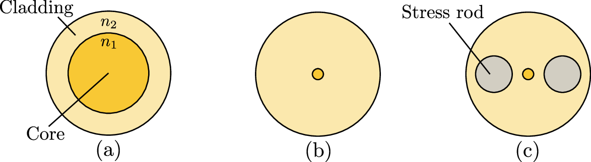
The losses in the fiber grows exponentially with the distance:
|
| (2.7) |
where is the transmittance, at a given distance , and is the attenuation (or loss) coefficient, usually expressed in (in which case is also in ). This attenuation coefficient depends on the material used for the fiber and on the wavelength. The typical attenuation coefficient for a standard SMF28 fiber is plotted as a function of the wavelength in Fig. 2.2 along with the standard ITU bands, following the fitting functions of [33], showing the four main effects involved in the loss coefficient: Rayleigh scattering, IR and UV absorptions and the OH absorption peak.
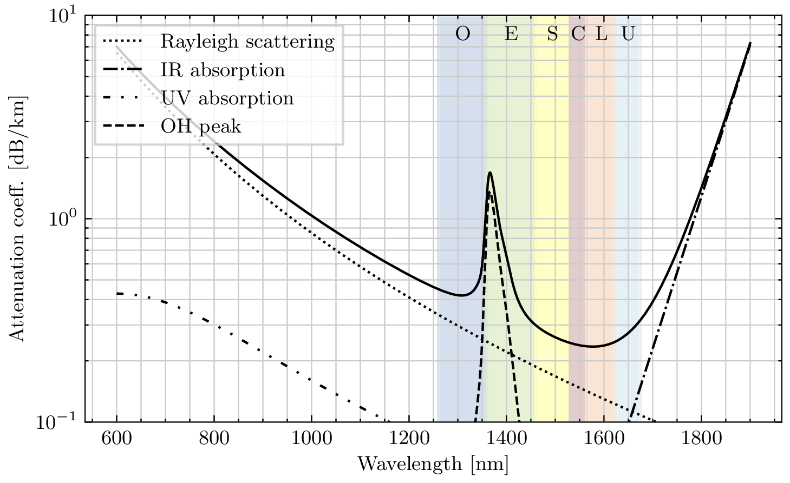
Nowadays, the attenuation coefficient can reach even lower values, around at (following the same trend as shown in Fig. 2.2).
In the following of this manuscript, when a value of attenuation coefficient is needed for simulations, we consider the value of (at ).
In a standard SMF28 fiber, the two orthogonal polarisations propagate with the same propagation constant, causing them to couple easily, which itself causes small imperfections and strains to randomly change the polarisation state of the fiber. Linearly polarised light is hence generally transformed as elliptically polarised light [34]. This transformation also changes over time, especially with mechanical vibrations or temperature drifts. A solution to this problem is to add stress rods, as seen on Fig. 2.2 in the PANDA fiber, creating birefringence in the fiber and ensuring the decoupling of the two polarisations and faithful transmission of linearly polarised light. However, this solution is expensive, and usually not field-deployed.
A beam splitter is a device that splits an incoming beam into a transmitted beam and a reflected beam, but can also be used to mix or recombine two beams.
In general the output electric fields and are linked to the input electric fields and by
|
| (2.8) |
with , and for a lossless beam splitter. The beam splitter is a basic component in optics, and exists both for free space and fiber optics.
The Polarising Beam Splitter (PBS) is a special case of the beam splitter that splits the beam depending on its polarisation, transmitting the horizontally polarised light and reflecting the vertically polarised light.
In a lot of situations, we require to change some properties of light, such as the amplitude, phase or the polarisation at moderate or high speed, something generally referred to as modulation. A typical way to perform modulation is using electro-optic effects, where a change in the refractive index of a material happens in response of a change in the applied electric field.
In particular the refractive index of an electro-optic medium can be written as a function of the applied electric field [34]:
|
| (2.9) |
where , and and are called the electro-optic coefficients. Two effects are particularly important in this regard: the Pockels effect, which is a linear change of the refractive index with respect to the electric field, and happens in non-centrosymmetric crystals, and the Kerr effect, which is a quadratic change with respect to the electric field.
Considering the Pockels effect, a change of refractive index induces a phase shift of , that we can write
|
| (2.10) |
where is the voltage to get a phase difference, and where we introduced the distance between the two faces where the voltage is applied, such that . This effectively provides phase modulation.
We can add this basic cell in a Mach-Zehnder interferometer, as shown in Fig. 2.2a, providing an amplitude modulator as the optical power at the output is given by
|
| (2.11) |
On the voltage response that can be seen on Fig. 2.2b, point corresponds to the point where total destructive interference happens, and point where total constructive interference happens. The difference of voltage between these two points is , and the modulator can be used as a ON-OFF switch, by switching from point to point . The intermediary point , where , is interesting since it provides a region where the modulator has a power response that can be considered linear with respect to the input voltage, as shown by the dotted red line, providing a point to perform intensity modulation. To perform amplitude modulation, however, point B is not the point of interest.
To see this, we can write eq. (2.11) as:
|
| (2.12) |
showing that the transmittance of the modulator can be written as . Knowing that the field evolves with the square-root of the transmittance, we have
|
| (2.13) |
To operate the modulator, we usually apply two voltage components: a DC component to lock the modulator at the point of interest, and a RF component to actually modulate around this point, such that . If we want the modulator to be operated at point , i.e. when , we choose such that . In this case, the output field is
|
| (2.14) |
where the last equation results from the linearisation of the sine function around 0, and is valid for some range of . This shows that around the point , the amplitude modulation is linear in .
Hence, a Mach-Zehnder-based modulator can be operated in two different ways: intensity (or power) modulation, by functioning around point , where the transmittance is linear with respect to the applied voltage, and amplitude modulation, by functioning around point , where the square-root of the transmittance (and hence the amplitude change) is linear with respect to the applied voltage. Note that, at point , the power reduction, called the extinction ratio, depends on the quality of the interference, and can go higher than with commercially-available detectors.
By nesting two Mach-Zehnder amplitude modulators into a third Mach-Zehnder structure to get the phase between the two quadrature components, an IQ modulator can be achieved, as shown in Fig. 2.4.
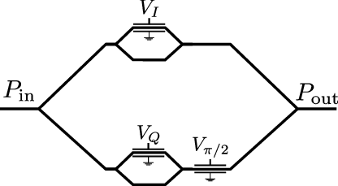
Indeed, the fields at the output of the inside interferometers, assuming the same on both modulators, can be written as
|
| (2.15) |
where and , giving the overall transfer function.
|
| (2.16) |
where is the angle induced by the outside Mach-Zehnder structure, with the target being .
Typically, such modulators (phase, amplitude or IQ) are realised using Lithium Niobate (), that has high electro-optic coefficients (and hence a relatively low , in the order of a few volts), and can be modulated at high bandwidths, typically in the order of tens to hundreds of gigahertz.
A common optical element to change the polarisation is a phase retarder, which creates a phase delay between the two polarisation components. A generic phase retarder with phase delay has the Jones matrix:
|
| (2.17) |
The retarder is called a quarter-wave retarder when and maps linearly-polarised waves to circularly-polarised light, and when , the retarder is called a half-wave retarder and maps linearly-polarised to linearly-polarised light. When the retarder is rotated by an angle , the matrix becomes
|
| (2.18) |
The combination of a quarter-wave retarder, a half-wave retarder, and a quarter-wave retarder with three angles allows the mapping of any state of polarisation to any other polarisation state.
Wave plates are common free-space optical elements and implement wave retarders. In fiber, the common solution is to use paddles, where the fiber is looped a certain number of times so that stress-induced birefringence creates the phase delay. The delay induced by a single paddle is given by
|
| (2.19) |
where is a constant ( for silica fiber), the number of loops, the cladding diameter, the wavelength and the diameter of the loop. Hence, by combining 3 paddles and choosing the diameter and the number of loops, one can approximate the quarter-half-quarter transformation.
Detection of light is a central question for quantum photonics applications, especially since many protocols rely on the use of single photon states, which are hard to detect. However, in this manuscript, we will be mostly interested in quadrature detection, which, as we will see later, can be done using standard photodiodes.
A photodiode is a device that converts photons to electrons. The most basic photodiode can be implemented using a reverse-biased p-i-n junction, using some kind of semiconductor. When a photon arrives with an energy greater than the gap energy of the semiconductor, the photon is absorbed (with some probability) and an electron-hole pair is created in the valence band. Under the effect of the reverse electric field, the electrons move to the n side, and the holes to the p side, creating a photocurrent from the n to the p region. This photocurrent is proportional to the number of incoming photons.
Photodiodes are characterised, among with other parameters, by their quantum efficiency . This efficiency can be expressed as the probability for a photon to create a carrier pair that participates in the photocurrent, or said otherwise, as the ratio of created pairs to the number of incoming photons. We can relate this quantity to the responsivity of a photodiode, which is the ratio of the generated current to the input optical power. Indeed, given a photon flux , the optical power is given by . On the other side, there are carrier pairs created, giving rise to a photocurrent . Hence, the responsivity is related to the quantum efficiency by
|
| (2.20) |
At , the factor between the responsivity and the efficiency is and represents the maximal reachable responsivity. Note also that is dependent on the wavelength. In Fig. 2.5, we plotted the typical responsivity as a function of the wavelength for the three main semiconductor materials for photodiodes, Silicon (), Indium Gallium Arsenide () and Germanium (), and the theoretical best, using publicly available data from Thorlabs (FDS02, FGA01FC and FDG03).
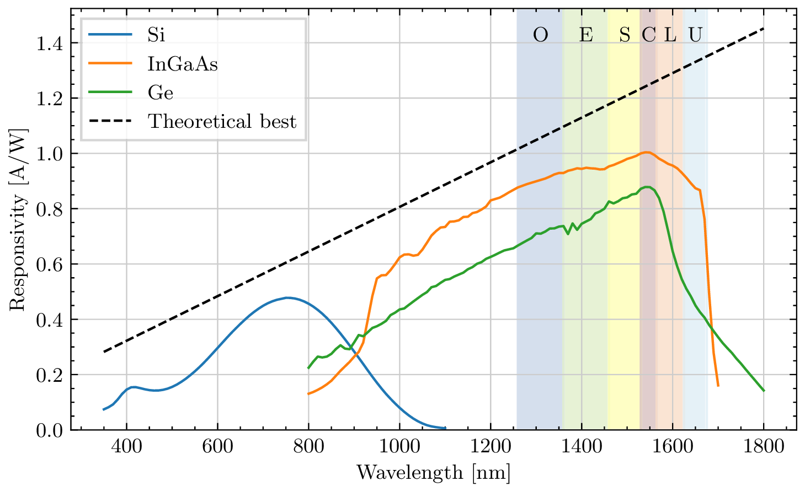
Silicon has good properties for visible wavelength (reaching a peak efficiency of around at ) but cannot detect light past (after this point the photons have less energy than the energy gap and cannot be absorbed). and can detect light in the near infrared, reaching a peak efficiency of respectively and at . Note that these are typical efficiencies, and it is possible to reach higher ones.
Even in the absence of incident radiation, a small current flows through the photodiode, which is referred to as dark current ranging from nano-amperes to micro-amperes for detectors, and while this would definitely be an issue for single photon detection or low photon flux detection, we will work in a regime where the generated photocurrent is orders of magnitude higher than the dark current.
Another important characteristic is the response time, or the bandwidth of the photodiodes, that usually reach tens of and will not be a limiting factor for us.
In chapter 9, we will use single-photon detectors as part of a heralded single photon source. Single photon detectors are threshold detectors, meaning that their goal is not to output a signal proportional to the photon flux, but to click each time that one or more photons arrive at the detector. The challenge, of course, is to isolate a single photon from all the ambient noise. Single photon detectors are characterised by their detection efficiency (the probability of click upon arrival of a single photon), the dark count rate (the probability of a click in the absence of photon), the dead time (the recovery time required between two detections) and the jitter (the timing precision between the photon arrival and the generated electrical pulse). Single photon detectors can be realised with several techniques such as cooled down avalanche photodiodes (APDs), transition-edge sensors (TESs) or Superconducting Nanowire Single Photon Detectors (SNSPDs), and the latter are the ones with the most advanced performance, being able to reach efficiency with low dark counts, and good dead time and jitter. They however suffer from the requirements of sub-Kelvin temperatures and hence full cryogenics system. They are realised by having a nanowire made of a superconducting material, cooled down below the critical temperature and biased with a current inferior but close to the critical current. An incoming photon on the nanowire breaks Cooper pairs in the area of detection and decreases the local critical current, creating a resistive region in the nanowire, which makes the current flow through an amplifier creating a strong readout pulse. The dead time is the time required for the circuit to come back as fully superconducting and is typically in the order of the tens of nanoseconds (allowing for maximal detection rates in the tens of ).
Let us here mention some other components that we will use in this manuscript:
Optical attenuators Optical attenuators are devices that reduce the intensity of light. They can be fixed, or variable. Variable attenuators can be made with stress- and bending-induced losses (i.e. with a screw to stress and bend the fiber) or using Micro Electro-Mechanical Systems (MEMS)-based attenuator. Free space variable attenuators can also be based on a neutral density filter with variable optical density.
Optical switch An optical switch is a device that allows to route light from different inputs to different outputs. In this manuscript, we will use ON-OFF switches, that can be realised with MEMS-based technology or using an amplitude modulator, as we saw earlier.
Laser A laser is a device that emits coherent light through stimulated emission. In our case, we will only consider single wavelength lasers, that will be characterised by their wavelength, maximal optical power, wavelength tuning range, relative intensity noise and linewidth. While in most of this manuscript, continuous wave lasers will be considered, the laser in chapter 9 will be pulsed and hence be additionally characterised by the repetition rate and the pulse duration.
In Fig. 2.6, we give the symbols for the common optical elements that will be used in this manuscript.
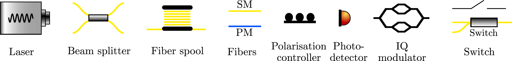
Hilbert space In general, the state of an isolated quantum system is described by a vector in a Hilbert space, which is a vector space on equipped with an inner product which is linear, conjugate symmetric and self positive, denoted by using the bra-ket notations. In these notations, a vector in the Hilbert space is represented by a ket and the dual of a vector, in the dual Hilbert space is represented by a bra .
As for any vector space, Hilbert spaces are spanned by bases with vectors, where is called the dimension of the space (and can eventually be infinite). An orthonormal basis is defined as a set of pairwise orthogonal vectors such that any vector can be uniquely decomposed as a linear combination .
We work with states that are normalised, .
Operators It is then possible to define linear operators on the Hilbert space (or from a Hilbert space to another) that transform states into states. The outer product of a ket and a bra defines an operator that acts on a state as .
The adjoint of an operator on , denoted is defined as the operator on such that for any and can be computed as the complex conjugate of .
An operator is said to be Hermitian, or self-adjoint if and an operator is said to be unitary if where is the identity. Hermitian and unitary operators are of great importance in quantum physics as the Hamiltonian describing the dynamics of a system is Hermitian, and the time-dependent evolution operator describing the evolution of the system is unitary.
The trace of an operator is defined by and is independent of the chosen basis. Tracing corresponds to sum the diagonal elements of the operator matrix.
Density operators The states presented until now were pure states, where the state of the quantum system is perfectly known. However, it happens, in several instances, that we want to describe a state as a probabilistic mixture of several pure states, for instance, in a scenario where a source would produce the perfect state with some probability and vacuum with probability , which would be expressed as a non-coherent mixture . Hence, an ensemble of states with associated probabilities is described by
|
| (2.21) |
where is an operator called the density operator or density matrix. Indeed, if the Hilbert space has dimension , then the density operator of the state can be represented by a matrix. Formally a density operator is any operator that is Hermitian, positive semidefinite ( for any ) and has unit trace . Note that the operator defined in eq. (2.21) indeed satisfies these three conditions. Any state in the Hilbert space can be described by a density matrix.
A state is said to be pure if there exists such that and mixed otherwise. The state with density matrix is called the maximally mixed state (you can think of this state as being an ensemble of states with a uniform distribution on it, maximising the entropy of the distribution).
Fidelity and trace distance It is useful to have tools to characterise how far two states are. Here, we present two tools that we will use in this manuscript.
The first one is called the fidelity and is defined between two states and by
|
| (2.22) |
where the square-root of an operator is defined as the operator such that and is semi positive definite .
The fidelity is symmetric in its arguments, is a positive real number, and is upper bounded by 1 with the fidelity being 1 when the two states are equal (up to a global phase) and 0 when the two states are orthogonal.
When one of the states is pure, the fidelity reduces to
|
| (2.23) |
and when the two states are pure, it reduces to
|
| (2.24) |
While the fidelity is useful, for instance, to assess the quality of some state with respect to another, it does not satisfy the conditions to be a proper distance metric in the Hilbert space. Hence, we also give the definitions of the trace distance which is defined between two states and by
|
| (2.25) |
Note that since the operators are Hermitian, we have that we also denote .
The trace distance is a well-defined metric on the Hilbert space.
Measurements In general, a measurement in quantum mechanics is described by a Positive Operator-Valued Measurement (POVM) which is a set of Hermitian, positive semidefinite operators such that , with the output for the state having probability .
If the operators are projectors (for all , ), then the measurement is said to be projective.
Until now, we presented two concepts: optics and photonics, and the formalism of quantum physics, and hence the next step is to consider both of them together. In quantum optics, one considers light as a stream of elementary particles, called photons, which are finite excitations of the quantised electromagnetic field in some mode, and hence represent the energy quanta of light.
Each mode can be represented by a quantised harmonic oscillator in an infinite dimensional Hilbert space , with Hamiltonian
|
| (2.26) |
where is the excitation operator, usually called creation operator and the annihilation operator. They obey the bosonic commutation relation:
|
| (2.27) |
The Hilbert space is spanned by the eigenstates (called Fock states) for of the operator , called the photon number operator, such that
|
| (2.28) |
where corresponds to no excitation, i.e. vacuum.
Once this has been said, we can now consider again some components that we described in classical optics to give their quantum description.
We first start with the beam splitter that plays a vital role in the detector we will use. Consider the beam splitter transmitting each mode with probability and reflecting each mode with probability (assuming lossless symmetric action); the action of the beam splitter can be thought as its action on the creation operators:
|
| (2.29) |
Inverting the relations, this gives that the effect of the beam splitter can be represented by the following replacements:
|
| (2.30) |
A 50:50 beam splitter is represented by . We here make a small step aside to speak of a very important effect that we will use in chapter 9: the Hong-Ou-Mandel effect [35]. Upon the arrival of two indistinguishable photons on a 50:50 beam splitter , the two photons interfere in the following way: meaning that the two photons always exit from the same arm of the beam splitter. This effect requires that the two photons are indistinguishable, in particular in time, in frequency and in polarisation.
The other component is the photodiode: we will now consider that upon the detection of some states, the generated photocurrent is proportional to the number of photons received during a time : .
We can also now analyse the noise in photodiodes: there is an inherent noise in the photon number, which results in a fundamental photodetection noise called the shot noise. Indeed, let be the average number of photons detected in an interval . The photon flux is then and hence the average generated photocurrent is given by
|
| (2.31) |
On the other side, the variance is given by
|
| (2.32) |
For Fock and coherent states, it is easy to check that and hence that , giving the well known formula of the shot noise variance
|
| (2.33) |
where is the bandwidth. The shot noise is linear with respect to the generated photocurrent and hence, with respect to the input power.
The signal-to-noise ratio in such a detector is, assuming no other source of noise, given by
|
| (2.34) |
Continuous variables In this manuscript, we will work for most of the chapters with continuous-variable systems which are quantum systems with an infinite dimensional Hilbert space described by observables with continuous eigenspectra.
As we saw earlier, if one performs the quantisation of the electromagnetic field, the quantised radiations of the electromagnetic fields are described by quantised harmonic oscillators, each one of them being characterised by an infinite dimensional Hilbert space and by creation and annihilation operators and . An -mode continuous-variable system is described by the tensor product of infinite dimensional Hilbert space and pairs of creation and annihilation operators , which can be combined in the -sized vectorial operator . This vectorial operator also obeys bosonic commutation relations:
|
| (2.35) |
for , where are the elements of the matrix called the symplectic form and defined by
|
| (2.36) |
Another way to describe the Hilbert space is through the quadrature operators and that represent the complex decomposition of the creation and annihilation operators:
|
| (2.37) |
This can be equivalently written:
|
| (2.38) |
It is straightforward to check that these operators obey the following commutation relation:
|
| (2.39) |
It can be checked that the quadrature operators have a continuous eigenspectra and hence, are continuous variables.
It is usual, when working with continuous variables, to get rid of the reduced Planck constant , to simplify the expressions, by placing ourselves in a specific system of units. The two most common are the Natural Units (NU) where is chosen to be 1 and the Shot Noise Units (SNU) where is chosen to be 2 (the name will make sense in a couple of paragraphs). In this manuscript, we will almost exclusively use the Shot Noise Units, except in chapter 9 where the analysis is done in natural units. From this on, we adopt the Shot Noise Units.
Similarly to before, in a -mode continuous variable system , the quadratures operators and are defined as well as the vectorial operator obeying the commutation relations
|
| (2.40) |
for .
Wigner function As we saw earlier, the standard way of fully describing a quantum state in a finite-dimensional Hilbert space is through its density matrix, or density operator , which is a square matrix of the same size as the dimension of the Hilbert space. While, in theory, quantum states in an infinite-dimensional Hilbert space can also be represented using a density operator (that would correspond to an infinite-dimensional matrix), it is more common to represent it through the use of a quasi-probability distribution called the Wigner function defined over a real symplectic space, called the phase space, and defined as such [36], for a -mode bosonic system:
|
| (2.41) |
where is called the Wigner characteristic function and are the eigenvalues of the quadrature operator spanning the phase space. The phase space is formally the vector space along with the symplectic form .
There exists a particular class of continuous-variable states that are called Gaussian states and are fully characterised but their first two moments: the average value
|
| (2.42) |
and the covariance matrix defined by the elements:
|
| (2.43) |
for with and the anti-commutator. The covariance matrix has size and obeys the uncertainty relation
|
| (2.44) |
In particular, this uncertain relation takes the form, for any , of
|
| (2.45) |
The Wigner function of Gaussian states is Gaussian:
|
| (2.46) |
Examples of single-mode Gaussian states We here give the example of the most important single-mode Gaussian states.
Vacuum state The single-mode vacuum state is Gaussian with and .
Thermal states Thermal states are characterised by their average photon number and are Gaussian states that maximise the Von Neumann entropy. They have and . They can be expanded in the Fock number basis:
|
| (2.47) |
Coherent states Coherent states can be defined as the eigenstates of the annihilation operator
|
| (2.48) |
with . It can be easily shown that, writing , we have
|
| (2.49) |
and hence . The quadratures average is hence, and the covariance matrix is . We here understand the name of Shot Noise Units: it is the system of units where the uncertainty of coherent states on both quadratures is unity.
Coherent states can be seen as displaced vacuum states: where is the displacement operator.
The expansion of a coherent state in the Fock basis is:
|
| (2.50) |
The average photon number in a coherent state is given by and the probability of detection photons follows a Poissonian distribution: .
Coherent states are of great importance in optics in general, as they represent the output state of a laser. In our case, they will also be the carrier of information.
Squeezed states In all the previous Gaussian states, we had meaning that the noise, or uncertainty, was the same on both quadratures. Squeezed states are an example of states with a smaller uncertainty on one quadrature. The uncertainty relation however forces the other quadrature to have a higher uncertainty. A squeezed vacuum state with squeezing parameter can be defined as , where is the squeezing operator. The resulting state has quadrature average and covariance matrix .
It can be seen that for , and and that .
The displacement operator can also be used in combination with the squeezing operator to create displaced squeezed states.
In Fig. 2.6a and Fig. 2.6b we plotted the Wigner function of the vacuum state and squeezed state. In Fig. 2.6c we represented a top projection with the vacuum state, a coherent state and a displaced squeezed state.
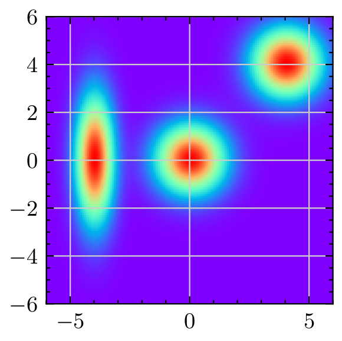
Detection of CV states An important question lies in the detection of CV states, which is the same as asking how the information is encoded and recovered on Gaussian states. A typical way when working with coherent states, that are displaced vacuum states, is to choose the displacement parameter, or said otherwise, to choose the average value of the two quadratures. Hence, the question is now, how can we measure quadrature values.
The answer lies in a basic building block called the Balanced Homodyne Detector (BHD) or simply balanced detector, and whose scheme is shown in Fig. 2.8. The signal field is mixed with another field, called Local Oscillator (LO) in a 50:50 beam splitter, and the two outputs are then detected using two photodiodes. The generated photocurrents are then subtracted from one to another.
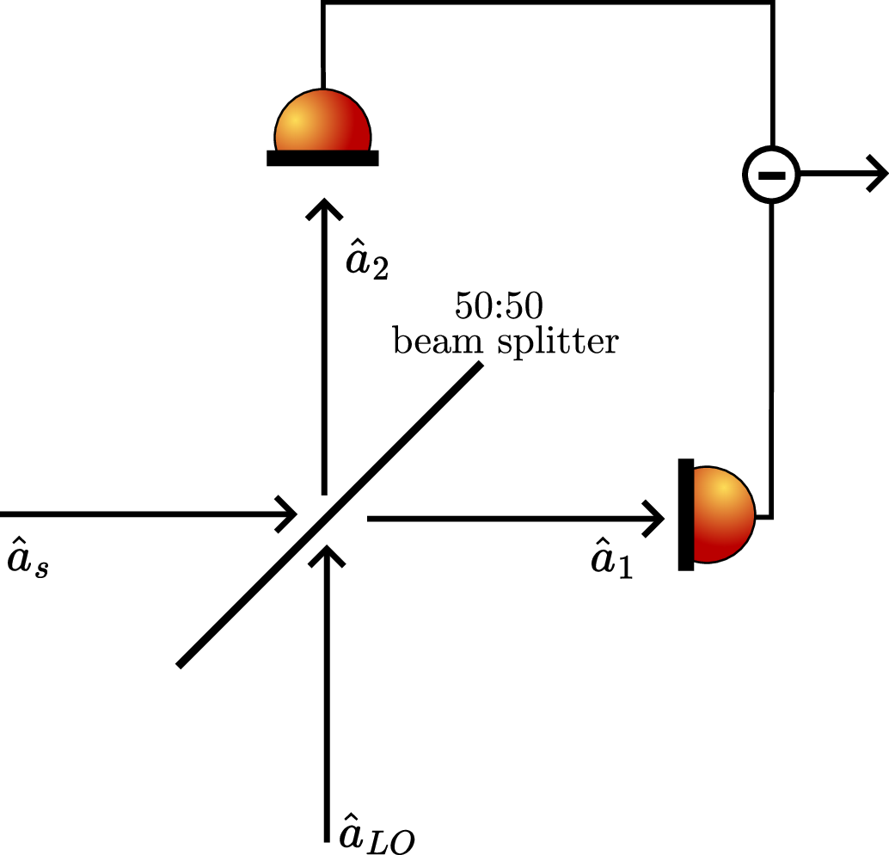
Following the notations of Fig. 2.8, and using the relations of eq. (2.30) we have that
|
| (2.51) |
We also know that the generated photocurrents can be expressed:
|
| (2.52) |
When combining the two equations we get that the photocurrent difference reads
|
| (2.53) |
Now, we choose the local oscillator field to be a field with high intensity, high enough so that we can approximate the quantised mode by its classical description: where is the amplitude and is the phase with respect to the signal field, we get
|
| (2.54) |
where we define the rotated quadrature by angle . In particular, if , then and if , . It is interesting to note that the scale factor is and in particular, that the balanced detection is making a measurement of the quadrature that is inherently amplified by a factor (and hence the higher the amplitude of the Local Oscillator, the higher the “amplification” is).
To account for the frequency of the wave, we consider the time-dependent ladder operators
|
| (2.55) |
giving
|
| (2.56) |
If , we find the previous relation, performing what is usually called a homodyne detection. In the other case, we define the intermediate frequency , and we will see in the next chapter how this can also be useful for quadrature measurement.
On a balanced detector alone, we can once again analyse the noise contributions. Considering the case with both frequencies equal, the output current is ,
|
| (2.57) |
where we used and being the photocurrent generated by the LO power. This can also be seen by considering the classical equations of a balanced detector. Indeed, it is easy to check that the balanced detector equations are
|
| (2.58) |
However, the individual currents before the subtraction are of the form:
|
| (2.59) |
Assuming that the local oscillator power is constant and much greater than the signal power we have that and such that the average power seen by a photodiode is . This means that the average current generated in each photodiode (assuming symmetry in responsivity and losses) is and that the shot noise variance on each is . The noises from the two photodiodes are Additive White Gaussian Noises and are independent from each other, and hence the noise variance after the subtraction of the photocurrents is given by B.
Hence, we can get the signal-to-noise ratio in a balanced detector as follows:
|
| (2.60) |
The goal of this chapter is to first present the task of Quantum Key Distribution and then focus on Continuous-Variable Quantum Key Distribution and in particular the GMCS protocol. The required tools, the intuition behind the protocol, the protocol itself along with security proofs and the required components to perform Continuous-Variable Quantum Key Distribution (CV-QKD) will be then presented.
Quantum Key Distribution (QKD) refers to a family of protocols whose goal is to secretly exchange a random string of bits with a security based the principles of quantum physics. This string of bits can then be used as a key to encrypt data using symmetric cryptography. The idea of QKD dates back to the 70s when Wiesner presented the idea of conjugate coding [13], which corresponds to the fact that, in Quantum Physics, there exist sets of bases such that measurement in one basis means complete ignorance in the other basis. The first QKD protocol was formalised in 1984 by Bennett and Brassard [14]. Since then, many protocols have been presented and realised experimentally, and even commercial devices have been assembled and sold, but before presenting in more details the protocols of interest in this manuscript, let us introduce the context.
In general, the two trusted users that want to exchange the key are called Alice and Bob. Eve, on the other side, is the malicious adversary, or the eavesdropper, and her goal is to learn the content of the secret key without being detected (otherwise Alice and Bob would not use the key) and, as we will see later in more details, we don’t make any restrictions on Eve. If there are several adversaries, we make the pessimistic assumption that they are all controlled by the central adversary Eve and work together. In some QKD protocols, there is also the need for an untrusted third party usually called Charlie, who does not necessarily behave like an eavesdropper, but cannot be trusted by Alice and Bob.
In our setup, Alice and Bob are provided with a quantum channel and an authenticated classical channel, as depicted in Fig. 3.1. Note that these two channels are considered public. The quantum channel is used to exchange the quantum states between Alice and Bob, and Eve has full access on this channel, meaning that she can read (i.e. detect or interact in some way with the quantum states) and write (i.e. send quantum, or even, classical states). The classical channel is used to provide all the necessary classical communication between Alice and Bob. We assume that this channel is errorless (meaning that there is some kind of classical error correction to ensure the faithful transmission of messages on it) and that it is authenticated, meaning that when a message is sent on this channel, there is a way to ensure who the sender is. This authentication is necessary to avoid Man-In-The-Middle attacks where Eve sets herself in the middle of the channel and assumes the identity of a trusted user.
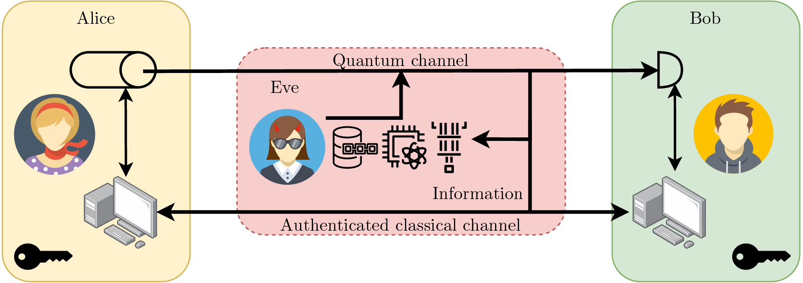
It is important to note that we assume that the channel is authenticated, and hence, authentication is external to the QKD protocol itself. Usually, in classical communications, the task of authentication is handled by asymmetric cryptography, with digital signature schemes, where the sender sends the message and a hash of this message encrypted with the public key. Then, any receiver can verify that the hash was indeed sign with the good private key using the public key. However, using this kind of protocol would make QKD at least as weak as this protocol, which is also how we exchange secret keys today, and only provide computational security1 . In general, authentication is managed as follows: we assume that Alice and Bob start the protocol with a shared secret, known only to them, and this can be used for authentication. For example, if only you know that the favourite ice cream flavour of Alice is salted butter caramel, then you can authenticate her by asking her favourite ice cream flavour. In practice, this shared secret is a random string of bits and after this initial key (usually called Pre-Shared Key2 ) has been used, the shared secret buffer is filled with part of the key that is generated with QKD allowing the protocol to sustain itself for authentication. In this sense, QKD is sometimes described as a key growing protocol and not a key exchange protocol, since it requires the previous exchange of the initial secret.
The simplified setup depicted in Fig. 3.1 is an example where Alice prepares quantum states and sends them over the quantum channel to Bob, who measures them. This kind of protocol is known as Prepare-and-measure (sometimes abbreviated PM or P&M) and is opposed to Entanglement-Based (sometimes abbreviated EB) where entanglement is shared between Alice and Bob and both make measurements on their register. Actually, there is always a way to make a correspondence between a prepare-and-measure and an entanglement-based protocol, the idea behind it is that it is not possible to distinguish (from outside) between Alice choosing her setting and encoding it onto a quantum state and Alice generating an entangled pair, measuring one register, recording the result as her setting and sending the other register to Bob. This is why the entanglement-based representation is usually used to prove the security of a QKD protocol and the prepare-and-measure scenario to actually implement the protocol. This is, however, not an absolute rule since entanglement-based scenarios may have advantages such as increasing the reachable distance by placing the source in the middle of the link, or increase the security (with device-independent protocols for instance).
But before continuing the description of QKD in general, we are going to take a step back and present the BB84 protocol as an example. BB84 was introduced in 1984 by Bennett and Brassard and will help get a better view of the protocols and a better understanding of the underlying principles.
BB84
In the BB84 protocol, Alice prepares one of the four following states: , , or which are the basis vectors for the basis and basis. The bases and are mutually unbiased, meaning that the measurement in one them means complete ignorance in the other, which is the same notion as the conjugate bases of Wiesner.
Hence, at each round, Alice chooses a basis for or for and a bit value or and encodes the information in the quantum states where is the Hadamard gate, that is the gate to transform from basis to and vice-versa. Hence the bit is either encoded in or and the bit is either encoded in or .
The state is then sent to Bob through the quantum channel. Upon reception, Bob chooses a base and measures in the basis if is 0 and in the basis if it is 1. In the case of an error-free transmission, Bob always recovers the encoded bit if he measures in the same basis as Alice’s encoding basis, otherwise he gets a random result. Hence, at the end of the protocol, after having repeated the generation and detection scheme a certain number of times, Alice and Bob can reveal their bases using the classical channel, and remove all the instances where they didn’t choose the same basis. This step is called sifting and at the end of it Alice and Bob should end up with the same bit string.
However, if the two strings are not identical (and assuming that the quantum channel is perfect) then it means that someone interfered with the quantum states during their transmission. Indeed, take the following simple attack strategy for the eavesdropper: Eve performs the same strategy as Bob for the measurement, measuring randomly in the or basis, and re-emits the detected bit in the same basis as detection. Eve has hence a chance of choosing the same basis as Alice, where she learns the whole information and re-emits the same quantum state as Alice, and has a of choosing the wrong basis, in which case she gains no information and sends a qubit in another basis where Bob’s measure will give the wrong bit with probability . For all rounds where Bob measured in the same basis as Alice (which are the only events that are kept at the end), he has a probability of getting the wrong bit, indeed showing that an eavesdropper interfered. As the number of rounds increases, the probability of not detecting the eavesdropper decreases exponentially.
In practice, the transmission will not be errorless on the quantum channel, and errors will be made in the detection even in the absence of an eavesdropper, and the protocol would then be useless if it couldn’t tolerate some amount of noise (a notion known as robustness). Hence, the error rate is estimated after the sifting procedure, a quantity known as the Quantum Bit Error Rate (QBER), and assuming the worst case that all the noise comes from an eavesdropper, it is possible to upper-bound the information that an eavesdropper has gained on the key . Then a theorem states that a secret key with length can be extracted, where is the number of rounds of the protocol and the secret key rate that takes now a very generic formula of where is the mutual information.
But we are left with two issues: how to correct the residual errors and how to extract the final secret key and reduce the eavesdropper information to a negligible amount. These two steps are known as error correction and privacy amplification.
The BB84 protocol is a great example for a QKD protocol, since it is quite simple to understand, but it also allows to expose the steps that are common to all QKD protocols:
The evolution of the different information quantities, in particular the shared information between Alice and Bob and the information of the eavesdropper, is shown in Fig. 3.2. In this figure, represents the total classical information shared over the public authenticated classical channel, hence available to the eavesdropper. This can be decomposed into 3 parts: , the information exchanged during the advantage distillation (in BB84, this is the information about the bases), , the information exchanged during error correction (in practice, this would be the syndromes of error correction codes) and , the information exchanged during privacy amplification.
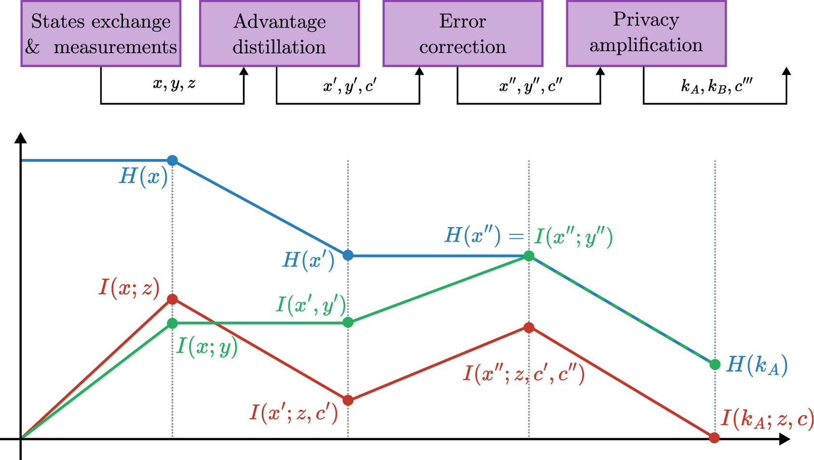
Almost any QKD protocol has the same set of basic assumptions that are reproduced below:
For most of these assumptions, it is quite clear that their removal would immediately cause any QKD protocol to fail immediately:
Certain protocols try to relax one of the previous assumptions with the most well-known example being Measurement-Device-Independent (MDI) (and Device-Independent (DI)) protocols, which remove the need for trusted measurement devices. In our case, we consider that we make these assumptions for the rest of the manuscript.
Before we move on to describe QKD protocols with continuous variables, it is important to define how we prove that a protocol achieves Quantum Key Distribution. Indeed, the end goal of QKD is to secretly derive a common random string of bits, and we can see that there are two components: the correctness and the secrecy.
It is easy to see that removing one of the components leads to trivial protocols: a non-secret correct key exchange can be achieved by Alice sending a random string of bits to Bob over the public classical channel and a non-correct secret key exchange can be achieved by Alice and Bob deriving random string of bits on their own.
Hence, we need to define the concepts of correctness and secrecy. Intuitively, the goal at the end of the protocol is for Alice and Bob to always share the same key, while Eve never has any information about the key. However, these requirements are in practice too strong for any realistic protocol, especially when dealing with a finite number of exchanged states. As a result, we introduce a failure probability , meaning that with a probability less than the outcome is undesirable without the user being aware of it. Then the goal is to reach small with realistic devices.
We hence now define the concepts of -correctness, -secrecy and -security [39, 40]. For these definitions, we will denote by and the outputs of the protocol for Alice and Bob respectively and by the key space, i.e. the space of all possible key outcomes of the protocol. Additionally, when Alice and Bob abort, we note and and we have .
Definition 3.1 (-correctness). A key distribution protocol between Alice and Bob is said to be -correct if the outputs of the protocol for Alice and Bob and satisfy
|
| (3.1) |
What this definition means is that a protocol is -correct if the probability of Alice and Bob ending with a different key is less than (when they abort, we consider that they end up with the same key ).
Definition 3.2 (-secrecy). Let be the probability that . Let be the state of the composite system between Alice and Eve if the protocol was not aborted before and let be the state corresponding to a uniformly distributed classical bit-string state over the key space: . A key distribution protocol between Alice and Bob is said to be -secret if
|
| (3.2) |
What does this equation mean? If we look at the term this represents the distance between the actual state and the ideal state . This ideal state intuitively represents a state where two conditions are united: first the key is totally random (represented by the uniformly distributed classical state) and second, is totally independent of the eavesdropper state, represented by the separability of Alice’s state and Eve’s state. What we want is that the distance between the actual state and the ideal state is very low so that we can say that . The factor is here to say that either the protocol should abort with high probability or the distance between the two states should be very low.
Definition 3.3 (-security). Let be the probability that . Let be the state of the composite system between Alice, Bob and Eve if the protocol was not aborted before and let be the state corresponding to a uniformly distributed classical bit-string state shared between Alice and Bob over the key space: . A key distribution protocol between Alice and Bob is said to be -secure if
|
| (3.3) |
Intuitively, this definition combines the two previous notions: it requires that the real state is not too far away from the ideal state, this ideal state representing a uniformly distributed key, with the end key register being the same for Alice and Bob and being totally independent of Eve’s register. The following result can then be proven (see [39] for a proof):
Theorem 3.1. If a QKD protocol between Alice and Bob is -correct and -secret, then it is -secure with .
We argued earlier that removing one of the two aspects, correctness or security, give raise to trivial and useless protocols. Do we have now always useful protocols with those definitions? Consider the following QKD protocol: Alice and Bob always abort, and always end up with in their register. Since we always have and , we trivially have a protocol that is correct and secret, and thus secure. However, the protocol is not useful since it aborts even in the absence of an eavesdropper. This leads to the definition of the -robustness, which is saying that we want the protocol not to abort excessively in the absence of an eavesdropper.
Definition 3.4 (-robustness). A QKD protocol between Alice and Bob is said to be -robust, if, in the absence of an eavesdropper,
|
| (3.4) |
Now the goal is to design practical QKD protocols that are correct, secret and robust. Before moving on, we still need to tackle two important subjects: composability and attack strategies from the eavesdropper.
For a key exchange protocol to be useful, it needs to be able to be securely composed with other protocols, meaning that if we use the output key of the protocol in another protocol (such as One-Time Pad (OTP) for instance) then it remains secure. Giving a formal definition of composability extends beyond the scope of this introduction on security, so we stick to the following definition:
Definition 3.5 (Composability). A QKD protocol is said to be composable if it can securely be used as a subroutine in another protocol.
The strategies of an eavesdropper can be classified into three categories, corresponding to the complexity of the attack: the attacks are either individual, collective or coherent.
To describe them, let us discuss the framework of an attack: Eve generates an ancilla state and attach it to the state sent by Alice before performing an unitary operation and a general measurement (Positive Operator-Valued Measure (POVM)). In individual attacks, for each state sent by Alice, Eve attaches an ancilla state and performs a measurement on each ancilla individually. For collective attacks, Eve still attaches a single ancilla for each state sent by Alice, but performs a collective measurement of all the ancillas at the end. Finally, for the most general class of attacks, the coherent one, Eve attaches one large ancilla state to all the states sent by Alice and measures this ancilla.
To prove the full security of a QKD protocol, one needs to prove the security against coherent attacks, otherwise the security would only be proven against restricted eavesdroppers. And once the security has been proven against coherent attacks, one would think that it is done and that the perfect protocol has been found. However, while the security might be proven for the protocol in theory, practical implementations will ultimately have flaws, that are mainly coming from two contributions: finite-size effects and side-channel attacks.
The finite-size issue arises from the fact that, in practice, Alice and Bob don’t exchange an infinite number of quantum states on the channel, causing three issues: statistical errors, finite reconciliation efficiency and information leakage. For statistical errors, it comes from the parameter estimation step of any QKD protocol, which is imperfect without an infinite number of samples and the other two come from imperfections of error reconciliation and privacy amplification that go to asymptotically. We will describe those issues more when discussing the finite-size security of CV-QKD.
Finally, side-channel attacks are the ones that exploit vulnerabilities that arise when some assumptions of the protocol are not met in practice. For instance, a well-known attack for BB84 is the Photon-Number-Splitting (PNS) attack, which occurs when Alice sends a state containing two or more photons. However, in the assumptions of the protocol, we consider that Alice always sends the perfect single-photon state and hence, a security proof does not protect against this type of imperfections. Other side-channel attacks happen, for instance, if some information goes out of the secure locations other than through the quantum or classical channel, or if Eve were to perform an attack that is outside the laws of Quantum Physics as we know them. Security proofs can sometimes be adjusted to incorporate some practical imperfections (such as imperfect state preparation or finite measurement efficiency) but not all of them, which then leads to add countermeasures to the implementations. As an illustration, another typical side-channel attack is the Trojan horse attack [41] where Eve shines powerful light into Alice’s setup and analyses the reflections to gain information on her setting. A typical countermeasure is to use an optical isolator to prevent external light from entering the system. However, optical isolators also have finite efficiency, raising the question: when do we stop?
Hence, for now, we have two ways to classify security proofs: if they are for the asymptotic case or for the finite-size case, and against which class of attacks they are protecting from, but we will see more classifications when reaching CV-QKD. We also know that it will be associated to an overall security parameter that is characterising a failure probability, and that additional attacks might still exist if they fall outside the assumptions of the proof.
One question remaining is how the performance of a QKD protocol is evaluated. The main metric is the Secret Key Rate (SKR) (the that we defined in the BB84 box) which represents the number of secret key bits that can be extracted for each signal sent, and is usually given in bit per channel use. The Secret Key Rate (SKR) in bit per second can be obtained by multiplying it by the signal generation rate. Devetak and Winter proved that the asymptotic key rate in the case of collective attacks, for one way QKD, was lower bounded [42]:
Theorem 3.2 (Devetak-Winter). For a QKD protocol between Alice and Bob, with an eavesdropper Eve limited to collective attacks, the asymptotic secret key rate is lower bounded by
|
| (3.5) |
where is the mutual information between Alice and Bob and the mutual information between Alice and Eve.
Intuitively this result can be understood as follows: the extractable secret information corresponds to what is left of the information shared between Alice and Bob once the information of the eavesdropper has been removed. It also means that in general QKD cannot be performed when which is the reason why we have the advantage distillation step.
In general, the secret key rate depends on the distance and the level of noise. This can be understood by the simple argument that losses and noise reduce but not necessarily . To illustrate, consider Eve attacking directly at Alice’s output. In this scenario, it is easy to see that the mutual information between Alice and Bob decreases as Bob is placed further and further away, while Eve’s information on Alice’s data remains the same.
It was shown by Pirandola, Laurenza, Ottaviani and Banchi that there is a fundamental limit to the secret key rate in terms of repeaterless quantum communications [43], which is called the PLOB bound.
Theorem 3.3 (PLOB bound). Any repeaterless QKD protocol over a quantum channel with transmittance has its secret key rate bounded by
|
| (3.6) |
which in the high loss regime, i.e. close to , becomes
|
| (3.7) |
The PLOB bound is represented in Fig. 3.13 (page 164).
Here we see that for any distance, the upper bound does not vanish, and hence QKD at any distance is in theory possible. However, when adding noise, the key rate will vanish at some point which, in practice, gives a maximal achievable distance in absence of an eavesdropper, which is an additional metric for QKD systems.
Other metrics include cost, ease of implementation, energetic consumption (which will be investigated for CV-QKD in chapter 7) and the implemented countermeasures against side-channel attacks.
In this section, we present the CV-QKD protocol that we will focus on, preceded by a short overview of the historical developments, and the different existing protocols. All of them rely on the usage of Gaussian states, either coherent or squeezed, and encoding of the information on the quadratures of those states.
Before diving in, let us give an intuition of how a CV-QKD protocol works. The goal is to encode the information on continuous variables, i.e. observables with a continuous eigenspectrum. As we saw in chapter 2, the quadratures operators are such observables, and they act as conjugate bases, meaning that it is not possible to measure both of them at the same time with arbitrary precision as shown in eq. (2.45).
Let us say that we want to perform the protocol with coherent states, and let us say for this section that Alice has the choice of sending one of the 4 states where is the amplitude, as sketched on Fig. 3.3. This amplitude is directly linked to the average number of photons in each one of the 4 possibles coherent states since .
What happens when these coherent states are sent to Bob? First, they lose photons in the quantum channel, which makes their amplitude decrease by a factor , where is the transmittance of the channel, an effect that we didn’t represent in Fig. 3.3. The second effect is that they pick up noise, above the Heisenberg limit, due to interactions with the environment but also with a potential eavesdropper. This noise is represented at Bob’s side in Fig. 3.3 by the orange portion. Now, if Alice and Bob exchange a high number of states, and Alice reveals part of her states, then Bob can estimate this added noise, or excess noise that will be one of the most important figures of merit in CV-QKD. By doing the pessimistic assumptions that all this noise comes from an eavesdropper, Alice and Bob can find the maximal information that an eavesdropper got that is compatible with this level of noise, and they can then remove this information from their own shared information and get the secret key portion, which they can use to derive the secret key with error correction and privacy amplification.
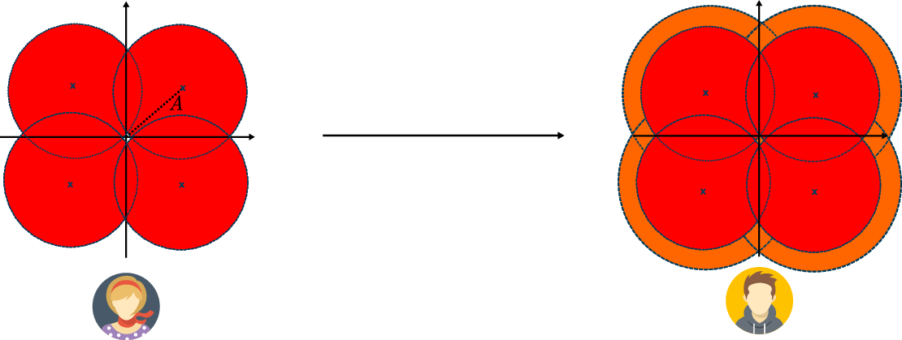
Now, one might say “but if is large enough, then surely Eve can guess the right state with high probability, even with the intrinsic quantum noise, and she could then proceed to recreate the perfect state with minimal noise” and it would be totally right, and this is how coherent classical communications are done. This means that the amplitude must be chosen carefully. Intuitively, what we want is for the 4 states to overlap in their noise (although theoretically the Gaussian distribution goes to infinity, so they always overlap), and there will be an optimal value for this amplitude, that will be reflected later in the optimal choice of a parameter called Alice’s variance , related to the average number of photons per symbol .
The first ever CV-QKD protocol was proposed in 1999. The information was encoded in the amplitude and phase of squeezed states, which were then measured with single-quadrature detection [44]. At the time, squeezing light was challenging, and a protocol using only coherent states was proposed in 2002 by Grosshans and Grangier [45], where information was encoded once again in the phase and amplitude, but this time of coherent states, and the measurement was still done with single-quadrature measurements, requiring active switching between the two quadratures at the measurement station. This protocol is known as the GG02 protocol and the term has sometimes been used to describe other CV-QKD protocols using coherent states. In 2004, Weedbrook et al. extended the coherent state protocol to a no switching protocol, by performing dual-quadrature measurement, removing the necessity for active switching at the detection station [46]. This dual-quadrature measurement was also extended to the modulated squeezed state protocol [47].
For all these protocols, Alice’s choice of each quadrature’s average value (i.e. the modulation) followed a Gaussian distribution. It was proposed in 2008, similarly to classical communication, to use discrete modulations [48]. We will discuss this matter further in subsection 3.2.7.
Numerous other protocols followed, including propositions with thermal states [49], two-way protocols [50], and measurement-device-independent protocols [51, 52]. For a more in-depth historal overview, the interested reader may refer to [53].
In particular, we stress that one-way QKD protocols can mainly be characterised by three characteristics: the type of quantum states (coherent, squeezed or even thermal), the modulation (Gaussian or discrete modulated) and the detection type (single or dual-quadrature).
We now present the Gaussian modulated protocol with dual-quadrature that will be the focus in this manuscript. It follows the same basic steps of every QKD protocol, without the requirement of sifting.
Protocol 1: Gaussian Modulated Coherent State Continuous Variable Quantum Key Distribution with dual-quadrature detection
Alice emits the states , where the real and imaginary parts follow a Gaussian distribution. Denoting and the random variable representing the real and imaginary part, we can derive the average photon number per symbol as:
|
| (3.8) |
In the rest of the manuscript, we will use to directly designate the average number of photons per symbol in the distribution, so that .
Remember from chapter 2, that a coherent state has and and similarly for which makes, when it is considered alone, which is the shot noise variance. However, when considered in a constellation where , then
|
| (3.9) |
and similarly for . We define the modulation variance to be such that , and hence .
Note here that there is an important distinction between the variance of the quadrature operator , which has variance is and the variance of the quadrature component which has variance . Also, note the important relation
|
| (3.10) |
that is derived from and .
We will discuss of the exact experimental requirements later in this chapter, but we can already see why the CV-QKD protocol is very interesting: it only uses displaced coherent states, which can be easily produced using a laser and an IQ modulator, and coherent detection that can be done at room temperature with standard photodiodes. However, the protocol comes with a few caveats, such as the reconciliation of continuous variables or the post-processing required to correct different impairments.
In chapter 2, we introduced a particular set of units called the Shot Noise Units, equivalent to a particular choice of .
This system of units will be used to share an amplitude reference between Alice and Bob. Indeed, when Bob performs the quadrature measurement, it has been amplified by the coherent detection, and the output value cannot be directly compared to the setting of Alice. The solution is then to normalise Bob’s output so that the shot noise variance is unity, i.e. dividing the signal of Bob by the standard deviation of the shot noise.
This means, that we need to characterise the shot noise value. This can be done by Bob closing the quantum channel with Alice and performing an acquisition with the vacuum on the input path. As we will see later, this characterisation will have to be performed regularly to take into account any change in the shot noise.
One might raise the question: why don’t we use the equations of the coherent balanced detectors and the power of the local oscillator to compute the value of the quadrature in shot noise units? In a sense, that is what we are doing, but this method has several advantages: first it might correct for small imbalances in the detectors, and second, it is also compatible with the post-processing of the data that will be applied before performing normalisation (see chapter 4 for more details), where the same processing can be applied to the signal and the shot noise and the normalisation done at the end.
In practice the detection at Bob’s side is not perfect, it has a finite efficiency and also a noise beyond the shot noise, that we call the electronic noise. This electronic noise has several sources, mostly coming from the Trans-Impedance Amplifier (TIA) (which classically amplifies the current difference of the balanced detector into a voltage for readout).
We will denote by the overall efficiency of the coherent detector, and the normalised electronic noise (i.e. normalised by the shot noise variance). In theory this value could be incorporated both in the overall transmittance and the overall excess noise , in a situation that is usually called the paranoid scenario. However, since those losses and noise are happening inside Bob’s safe location, we know that they could not be produced by an eavesdropper, and hence we can consider them trusted, in what is called, the trusted detector scenario. It requires to precisely estimate those values, and to adapt the security proofs to consider them trusted (as we will see later in this chapter), and we will make the trusted detector hypothesis in the rest of this manuscript.
The estimation of the electronic noise is simply made by powering up the detector and recording the output in the absence of incoming light. One would think that the characterisation of is also this straightforward, and that by shining light into the overall detector, and recovering the photocurrent, we can get the overall responsivity of the detector and hence its quantum efficiency. However, as we will see in chapters 5 and 6, direct light characterisation is not sufficient, and one needs to take into account the visibility of the interference in the coherent detection. We will however overlook this issue now, supposing we can measure and come back to it in the aforementioned chapters.
While the electronic noise is not attributed to the eavesdropper, it still decreases the mutual information between Alice and Bob, and hence the overall performance of the protocol. For this reason, we want to the electronic noise to be as low as possible. We usually characterise the detectors by their clearance, defined as
|
| (3.11) |
where is the variance of the electronic noise before normalisation and the variance of the shot noise before normalisation. The clearance is usually expressed in decibel. Note that with these notations, we have .
When (), we have
|
| (3.12) |
Note also that all of these values are frequency dependent, and that the analysis have to be done on a part of the frequency spectrum. We will come back to this when speaking of implementing the protocol.
Parameter estimation is a crucial step for the CV-QKD protocol since it directly impacts the SKR. It is equivalent to the estimation of the Quantum Bit Error Rate (QBER) in discrete-variable protocols.
Let us denote the complex random variable representing Alice’s data, and the complex random variable representing Bob’s data. We can consider that the combination of the quantum channel and the detection acts as an overall Gaussian channel on the classical variables as
|
| (3.13) |
where represents the overall losses (remember that in phase space the number of photons is proportional to the modulus squared) and the overall noise, including the shot noise the electronic noise and the excess noise. For dual quadrature detection, the total noise has variance (whereas for single quadrature detection it would have been meaning that dual quadrature detection comes, as expected, with extra noise) [54]. Note that is the noise as seen by Bob. The excess noise induced by Eve, is, in the worst case where she attacks at the output of Alice’s station, given by the image of the noise at the input of the channel: or .
Overall this means that we have the following equations:
|
| (3.14) |
resulting in the following parameter estimation, that is possible if , and are known,
|
| (3.15) |
In general, we don’t have direct access to . This is because the sequence generated by Alice , and stored on her computer, will be applied to the device that displaces the coherent states (an IQ modulator), which, assuming that the device is in its linear range, transforms in via where is some scaling factor.
While it is possible to experimentally characterise this scaling factor , it also depends on several physical factors that can drift over time such as the temperature or the power of the laser. Hence, it is better to measure experimentally for each experiment. We will see how to do this in section 3.3 using . Then knowing and , we deduce
|
| (3.16) |
which allows to compute from and use the formulas in eq. (3.15).
In the description of the protocol, we said that Alice was choosing each quadrature with a Gaussian distribution of zero mean and some variance meaning that the coherent state is such that and . This situation is called Gaussian-modulated coherent states and was the modulation that was proposed for the first CV-QKD protocols.
It was however proposed later to use discrete modulations, meaning that the set of possible values for is finite. This proposition was motivated by three factors, that we describe in this paragraph. The first factor is that an actual Gaussian modulation cannot be generated by digital means in the laboratory: the digital-to-analog interfaces will have a precision and cutoff values, which means that whatever are the efforts that are put in place, there will be a slight deviation between the perfect Gaussian modulation and the implemented one. The second factor is that it might be possible that a modulation that is very close to Gaussian will induce no security issues, but will require equipments with high precision (i.e. high bit resolution) while discrete modulations might require less costly equipments. The third factor is finally that discrete modulations are a potential solution to the complex reconciliation issue in CV-QKD: indeed, performing error correction on complex variable is much harder than to perform it on binary strings, and in the case of discrete modulations there is a direct mapping between each of the possible values in the finite set with a bitstring. As we will see however, one of the issue is that the research on security proofs for CV-QKD with discrete modulation is still active, in particular, a full security proof for discrete modulations with finite-size effects is still missing.
Here, we quickly describe the different modulations that are being considered for CV-QKD. We denote by the size of the modulation, which is a strictly positive number, and is usually chosen to be a power of so that the mapping with bitstrings is simpler. The set of possible states is called the constellation, that we denote . On top of this constellation, there is an associated probability distribution saying how the states are selected. In this particular subsection, when needed, we write the decomposition , and we write and the random variables associated to and .
Gaussian modulation In this modulation, the constellation is the full complex plane
|
| (3.17) |
and the two quadratures are chosen with a Gaussian distribution each
|
| (3.18) |
Phase-Shift Keying (-PSK) In this modulation, the amplitude is kept constant, and only the phase is varying. The normalised constellation of possible coherent states is
|
| (3.19) |
The variance of the distribution can be changed by multiplying all the states by a positive number, effectively choosing the amplitude of the states. The states are chosen with a uniform distribution in the constellation, resulting in
|
| (3.20) |
Quadrature Amplitude Modulation (-QAM) In this modulation, both the amplitude and the phase are modulated. The different possible states are placed on a uniformly space grid of size adding the constraint of to be a perfect square (i.e. is an integer). The normalised constellation is
|
| (3.21) |
The states are chosen with a uniform distribution, resulting in
|
| (3.22) |
Probabilistic Constellation Shaping QAM (-PCS-QAM) In this modulation, the constellation is the same as the Quadrature Amplitude Modulation (QAM)
|
| (3.23) |
but this time the states are chosen with a distribution that approximates a Gaussian distribution:
|
| (3.24) |
where is a parameter to adjust the variance.
Binomial QAM (-binomial-QAM) In this modulation, the constellation is again the same as the QAM
|
| (3.25) |
and the states are chosen with a distribution that also resembles a Gaussian distribution:
|
| (3.26) |
In Fig. 3.4, we represented an example for all the modulations mentioned above.
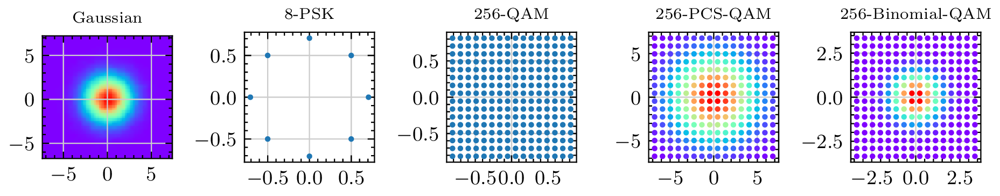
We now address the tasks of information reconciliation and privacy amplification. In the work presented in this thesis, we will mostly overlook these tasks, considering them for granted, and they will not be implemented. However, they are crucial tasks for CV-QKD to be useful, as they allow Alice and Bob to actually end up with their shared secret key. However, we do not need them for evaluating the performance of the CV-QKD protocol, as we can use the secret key formula (described in the next subsection) for this purpose.
Information reconciliation The goal of information reconciliation is for Alice and Bob to end up with the same key (not necessarily secret yet). The performance of an information reconciliation strategy is defined by a few parameters: the first is the maximal Signal-to-Noise ratio (SNR) at which it can perform, which is a very important parameter since the Signal-to-Noise ratio (SNR) in CV-QKD is usually very low, and is absolutely determinant for long-distance CV-QKD. Then there is the reconciliation efficiency, which is defined as how much information can be recovered from the shared information and can be written as [53]:
|
| (3.27) |
where is the mutual information, the Shannon entropy of the reconciled key and the amount of information leaked on the public channel for the reconciliation task. is unit-less and takes its value between and . Then there is the Frame Error Rate (FER), which represents the probability of failure to reconcile a frame. Contrary to the previous parameters that represent how much can be corrected from a frame, this probability represents the amount of frames that have to be completely thrown out. Furthermore, the rate represents the ratio between the number of bits to correct and the number of bits to send on the classical channel. As one can imagine, the lower the SNR is, the lower the rate has to be (more information has to be sent to correct the bits if there is more noise). This means that either a specific code has to be used for each range of SNR (and hence of distance) or the code has to be rate-adaptative which means that the rate can be changed as a function of the SNR. Finally, a last metric is the throughput of the procedure , i.e. how fast it can go. Note that usually information reconciliation is a bottleneck in CV-QKD, since, due to the high level of noise compared to the signal, the convergence of the error correction code is relatively slow.
There are mainly two approaches for information reconciliation in CV-QKD: slice reconciliation and multidimensional reconciliation. In slice reconciliation, first proposed in 2001 [55], the data of Bob is discretised over a certain number of bits , representing different levels, using a function . This procedure is shown schematically in Fig. 3.5, with .
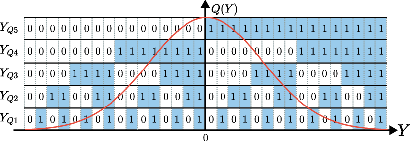
In particular, note that the error probability is not the same for all slices: it will be way less probable to get an error on the 5th slice, representing the most significant bit (and in this case, the sign of the output), than for the first slice, representing the less significant bit, and corresponding to the quantisation size. Hence, each slice is recovered independently from the others, using an error correcting code with a certain rate , that will be higher as increases. The reconciliation efficiency for the slice reconciliation is [56]:
|
| (3.28) |
However, even if the most significant digit has less chance of being wrong than the others, the very low SNRs that is required for CV-QKD makes even the sign of the output uncertain. This limits the range of applications for slice reconciliation, which is why the second method was proposed.
The second method, multidimensional reconciliation, was introduced in 2007 [57]. The idea is to map the data such that the channel between Alice and Bob is mapped to a virtual binary additive white Gaussian noise channel (BI-AWGN), where efficient codes are known to correct the errors. The mapping is done by a rotation in a higher dimensional space. The efficiency of the multidimensional reconciliation is given by [56]:
|
| (3.29) |
where is the rate of the error correction code.
Many error correcting codes can be used in information reconciliation in CV-QKD such as LDPC codes, MET-LDPC codes, polar codes, raptor codes or spinal codes, but their description falls out of the scope of this manuscript, as it would involve many other concepts. However, we redirect the interested readers to consult these recent reviews [53, 56] for a description of the codes, the associated performance and references to works that have been done from the CV-QKD community on the subject.
To give a slightly more concrete example, let us consider the following multidimensional reconciliation protocol (from [58]), represented schematically in Fig. 3.6.
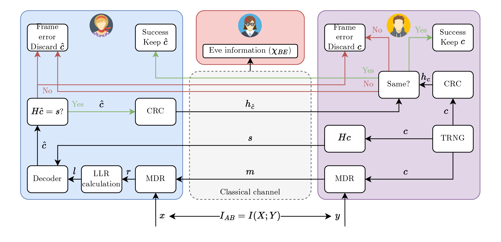
First, Bob generates some data using a TRNG, that will be the basis for the reconciled key, and separates this data into frames. Each frame is a codeword and gets sent over the virtual BI-AWGN channel to Alice through the multidimensional encoding with the knowledge of the recovered data (MDR in Fig. 3.6) as the message . Bob also sends the syndrome of the codeword, where is the parity matrix of the error correcting code. Upon reception of the message , Alice applies the multidimensional decoding (MDR in the figure) with the knowledge of her data . She feeds the recovered data to the Log-Likelihood Ratios (LLR) calculator, which then feeds its outputs, along with the syndrome to the decoder (usually the belief-propagation algorithm), which outputs a word . Alice then computes and if it is equal to , then it is a potential candidate for the codeword. Otherwise, we are sure that the decoder didn’t give the good codeword and the frame is discarded. If was a candidate, a checksum of is produced (in the figure with Cyclic Redundancy Check) and is sent to Bob that compares it to the checksum of his codeword . If they match, they both keep the frame, otherwise they both discard it. It has to be noted that all the exchanged information on the classical channel, in particular , , must be taken into account as additional information to the eavesdropper.
The step of computing a checksum is very important, as it verifies (with a very small probability of failure) that both strings will end up the same.
To conclude this paragraph, let us compare the two reconciliation methods: the slice reconciliation is based on quantisation on the data output and can recover more than 1 bit per pulse and the decoding complexity is low, but it suffers from the fact that it only works when the SNR is greater than , which limits its effective range to around [56]. On the other hand, multidimensional reconciliation which is based on mapping, has no limit in SNR and has been demonstrated with a SNR as low as for the distance record of CV-QKD with [59]. However, its decoding complexity is high, and can only recover 1 bit per pulse.
Almost all recent reconciliation protocols have been reported to have efficiencies above , approaching for some of them (see [53]) and in the rest of this manuscript, we will assume that we are provided with an error correction algorithm that achieves , for any SNR value.
Privacy amplification The goal of privacy amplification is to reduce the eavesdropper information to a negligible amount. It has been shown that this operation can be done by applying a function that is chosen at random from a set of 2-universal hash functions [60, 61]. A particular example are Toeplitz matrices [62], that are binary matrices with fixed diagonals (i.e. the value is the same over each diagonal). Hence, a Toeplitz matrix is fully determined by its first row and first column, as shown in the following example of a Toeplitz matrix that is fully described by elements:
|
| (3.30) |
A Toeplitz matrix can be used to hash a bitstring of size (represented as a vertical vector) into a bistring of size . The choice of and has to be done using the length of the reconciled key and the length of the secret key (that is given by the secret key rate formula). Below is an example of a (5,3) hashing with a Toeplitz matrix.
|
| (3.31) |
Security proofs for CV-QKD can be characterised using 4 criteria, once the type of states (coherent or squeezed) and the type of detection (single or dual quadrature) is fixed: if they are considering the asymptotic case or the finite-size case, if they are considering Gaussian or discrete modulations (and in the latter, a particular modulation or all of them), if they are composable or not and against which class of attacks does the security proof hold for.
The research in security proofs for CV-QKD is still an active subject for two reasons: first because, good security proofs for discrete-modulated coherent states in the finite-size regime are being investigated and second, because it is also possible to improve the rate of existing security proofs. We first start by presenting the results that we are going to use in this manuscript, before mentioning newer methods and results at the end.
A common approach for security proofs in QKD (both DV and CV) is to analyse an equivalent entanglement based protocol as shown in Fig. 3.7. While entanglement based protocols are more challenging to implement experimentally, they are easier to analyse in theory. The equivalent protocol idea comes from the fact that an external party cannot distinguish between Alice actively modulating a coherent state with a setting and Alice generating a Two-Mode Squeezed Vacuum state, measuring one of the mode and recording the value , and sending the other mode to Bob. Since these two protocols are indistinguishable, they hold the same security. This operation is sometimes referred to as the source replacement scheme [63].
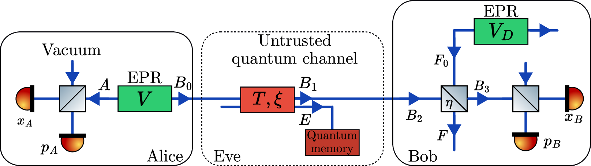
We also show in Fig. 3.7, the equivalent model to consider for the realistic scenario with the detector imperfections. It is modelled by a perfect detection preceded by a beam splitter of transmissivity that mixes the input state with a mode of an EPR state that represents the electronic noise of the receiver. The letters , , , , , , and represent the modes that will be used in the secret key derivation. The variance of the two EPR states are respectively for the state at Alice side and for the EPR state to model the detector noise (when measuring the two quadratures).
We can then use the Devetak-Winter bound [42] to get a bound on the key rate, but before we need to tackle the issue of direct versus reverse reconciliation. In standard QKD protocols, Alice sends quantum states to Bob, who measures them and ends up with some data correlated to Alice’s data and in the information reconciliation phase, they use error correcting codes so that Bob’s data matches Alice’s. This method is referred to as Direct Reconciliation (sometimes abbreviated DR). However, researchers noticed quite early that CV-QKD with direct reconciliation could not perform with an overall transmittance [65], which was limiting CV-QKD to a distance in fiber. The intuition behind this result is that Eve, who is supposed to have access to perfect lossless channels, can detect half of the signal (or more) at Alice’s output, and send the rest to Bob (who, on his side, sees a transmittance lower than ), and then, Eve’s data is always more correlated to Alice’s than Bob’s data, meaning that no key can be derived. However, in [65], Grosshans and Grangier proposed to use Reverse Reconciliation (sometimes abbreviated RR), which starts with the same steps: Alice sending quantum states to Bob and Bob measuring them, but once they end up with correlated data, Alice and Bob use error correction codes so that Alice corrects her data to match Bob’s. It can be proven that in this case, there is no fundamental limitation of distance (i.e. for a given distance, there always exists a level of noise that allows a positive key rate).
Now, we can use the Devetak-Winter formula to get the key rate:
|
| (3.32) |
where is the reconciliation efficiency, is the classical mutual information between Alice and Bob, and is the information between Bob and Eve. This information quantity is bounded by the Holevo quantity or Holevo bound [66]:
|
| (3.33) |
where is the von Neumann entropy on the eavesdropper state and is the von Neumann entropy of the eavesdropper state conditioned on Bob’s measurement.
We will discuss how this bound can be computed, but before let us talk about the classical information between Alice and Bob, that can be derived using Shannon equation as [64]:
|
| (3.34) |
We also include the value for the single quadrature case, as we will use it for the study in chapter 7:
|
| (3.35) |
The factor accounts for the fact that during the reconciliation phase, Alice and Bob will not be able to reconcile all the shared information between them.
The Holevo bound quantity is harder to estimate since it involves the eavesdropper state which is unknown to the trusted parties. However, we can first use the fact that Eve is able to purify to write
|
| (3.36) |
Then, using the Gaussian extremality theorem [67], and under the assumptions of a Gaussian modulation, one can show that Gaussian attacks are optimal for collective attacks
|
| (3.37) |
where is a Gaussian state with the same covariance matrix as and similarly for . Now, the von Neumann entropy of a Gaussian state can be computed from the symplectic eigenvalues of the covariance matrix using where and the ’s are the symplectic eigenvalues of the covariance matrix [68]. The covariance matrix can be estimated from the data of Alice and measurement data of Bob. In particular, the covariance matrix of reads
|
| (3.38) |
where is the Pauli matrix.
Then using a known result that the symplectic eigenvalues of the covariance matrix are given by where [69], we find that
|
| (3.39) |
with
|
| (3.40) |
Then is given by
|
| (3.41) |
where is the symplectic matrix representing the single or dual quadrature measurement and in the case of dual quadrature [70].
The quantities involved in the previous formula can be found in the decomposition of the matrix, that reads
|
| (3.42) |
which can be reconstructed by considering the beam splitter transformation
|
| (3.43) |
where is the covariance matrix of an EPR state with variance :
|
| (3.44) |
and is the beam splitter transformation acting on modes and :
|
| (3.45) |
Having computed the covariance matrix, it is then possible to compute the symplectic eigenvalues and find [64]:
|
| (3.46) |
For completeness, we also give the values of and in the single quadrature case, which has also
|
| (3.47) |
At the end of the day, this means that the Holevo bound can be computed as
|
| (3.48) |
since , where are given in eqs (3.40) and (3.46), involving the quantities and .
Before moving to the question of finite size effects, let us see an example in Fig. 3.8. In Fig. 3.7a, the quantities , and are plotted against the modulation variance with , , , and for a distance of at an attenuation coefficient of (resulting in an attenuation of ). It shows a clear behaviour in , with increasing faster than and hence showing a maximal key rate obtained at some optimal value for (in this example ). Note that this optimal value depends on all the other parameters and in particular of the distance, meaning that this should be optimised for every distance. Moreover, the excess noise will depend on the distance, meaning that while simulations can give an idea of the optimal , an actual experimental optimisation should be carried out. In Fig. 3.7b, the secret key rate is plotted against the distance (assuming again an attenuation coefficient of ) for , , and for or . is optimised for every distance. This shows an expected behaviour of the decrease of the secret key rate with the distance. This also shows that an increased excess noise causes a decreased key rate and a decreased maximal achievable distance.
As said previously, finite-size effects are of huge importance for QKD. The goal of any finite size analysis is to provide the correction terms that need to be applied to the secret key rate in order to guarantee the security even in the case of a finite number of exchanged quantum states.
Here we present the analysis of [71] before mentioning more recent techniques. Let be the total number of exchanged symbols and be the number of symbols that are used for the estimation of the parameters, with . is then the number of symbols that is used for the key derivation. The secret key rate of the CV-QKD protocol, in bit/symbol, can then be expressed as
|
| (3.49) |
where FER is the Frame Error Rate of the reconciliation protocol, the reconciliation efficiency, the mutual information between Alice and Bob, Holevo bound compatible with the observation of the parameter estimation, except with a probability and a correction term related to the security of privacy amplification.
The term can be computed as
|
| (3.50) |
where is the Hilbert space used in the raw key, is a smoothing parameter and is a free parameter, that arises from the leftover-hash lemma.
can then be measured by considering worst case estimators, i.e. and such that with a probability greater than , and . Then Holevo’s bound is computed using the same method as in the asymptotic case.
We know from eq. (3.15) that to get and , assuming all the other parameters perfectly known, we can use the estimators
|
| (3.51) |
where for are the symbols revealed by Alice for the parameter estimation part and the corresponding symbol at Bob’s side and is estimator for and for .
The two estimators are independent, and they follow the following distributions:
|
| (3.52) |
The confidence intervals are then given by
|
| (3.53) |
where is such that , where erf is the error function:
|
| (3.54) |
This gives the following values for and :
|
| (3.55) |
The overall security parameter is then given by
|
| (3.56) |
In the rest of the manuscript, we will use the same parameters as in [71]: , giving a in the same order of magnitude.
There has been extensive research for security proofs in the domain of CV-QKD in the past few years, especially to reach proofs in the finite-size scenario with discrete modulations. While the goal is not to give a full review here, we would like to mention a few interesting works: in 2021, Denys and Leverrier found a general analytic security proof for discrete modulated CV-QKD against collective attacks but in the asymptotic scenario [72]. In 2022, Lupo and Ouyang proposed a first framework for the composable security of discrete modulated CV-QKD with imperfect detectors [73]; Jain et al. proposed a protocol with improved bounds on the parameter estimation with respect to the method exposed previously [74]. In 2023, Kanitschar et al. proposed a new method for composable finite size discrete modulated CV-QKD against collective attacks based on an energy test that tackles the problem of the infinite-dimensional Hilbert space [75], Bäuml et al. proposed a security proof of discrete modulated CV-QKD based on the Entropy Accumulation Theorem (EAT) [76] with the requirement of performing a virtual tomography; Pirandola and Papanastasiou performed a more rigorous proof a composable CV-QKD protocol with finite-size effects [77]; Van Himbeeck and Brown claimed to have found a general proof method for any QKD protocol that might encompass CV-QKD, but has not yet been published at the time of writing of this manuscript [78]. In 2024, Pascual-García et al. proposed a finite-size security proof for discrete modulated CV-QKD using the Generalised Entropy Accumulation Theorem (GEAT) [79] which is an improved version of the work of Bäuml et al. of 2023, but with one of the drawbacks being that, for each symbol, Alice needs to wait for a message from Bob before sending the next message, effectively limiting the repetition rate of the protocol.
We now give a general introduction to the practical implementation of CV-QKD. We will deepen those concepts in chapters 4, 5 and 6.
In practice, the implementation of a CV-QKD is not entanglement based but rather the prepare-and-measure version we saw in the description of the protocol: Alice modulates coherent states and Bob detects them.
On Alice’s side, one needs to modulate coherent states. The creation of coherent states can easily be achieved using a laser and the modulation can be done in two ways: either by combining a phase modulator and an amplitude modulator, or by directly using an IQ modulator that modulates both the phase and the amplitude as we saw in chapter 2. This second method is more common nowadays as it has less timing constraints on the signals that are applied to the modulators, especially when using continuous wave light (indeed if you use continuous wave light, you might have to consider the time delay induced by the light travelling from the amplitude modulator to the phase modulator).
Hence, Alice is mostly composed of a laser and an IQ modulator. In practice however, we need a way to measure the variance of Alice modulation. Indeed, if we use the IQ modulator in its linear zone, we are ensured to get coherent states that are displaced from the vacuum state with values that are proportional to the input voltages as seen in subsection 2.1.4. However, the coefficient will depend on a lot of factors including in particular the initial power of the laser, that can vary, and the temperature. Moreover, the coherent states might undergo some losses before being outputted, which is better into account in the generation process, and not as losses available to the eavesdropper.
Hence, it is better to monitor directly the variance. For this, we can use the result that where is the average number of photons per symbol. Now, if during a time , we have symbols, carrying on average photons, then the total energy during this time is which is equal to the optical power multiplied by the time
|
| (3.57) |
where is the photon energy.
One can then notice that is just the symbol rate , resulting in
|
| (3.58) |
And hence .
We will see in chapters 4 and 5 what problems are associated with this formula and how we can circumvent them.
On Bob’s side, one has to measure the incoming coherent states. In chapter 2, we already saw that the balanced detector performs an amplified measurement of one quadrature, using a strong light reference called the local oscillator. This would already perform the single quadrature detection, which we will not study extensively in this thesis. For the dual quadrature detection, there are two solutions: the first one is by exploiting a phase diversity technique and the second one is by using a heterodyne technique.
We recall here the formula for the current in a balanced detector, from chapter 2,
|
| (3.59) |
and we note the intermediate frequency.
Homodyne When the intermediate frequency is exactly , this provides a homodyne detector, and the output current directly reads
|
| (3.60) |
where is the bandwidth of the signal, the amplitude of the Local Oscillator and the quadrature rotated by an angle , hence, directly providing one quadrature of the signal. Any quadrature can be recovered by adding a phase shift on the Local Oscillator (LO) side, using for instance a phase modulator. The difficulty in homodyne detection resides in the requirement of which requires frequency locking.
Heterodyne Heterodyne detection can either be used to refer to the case where or . Here we choose the latter, letting the intermediate case where and to be called intradyne. In the case of the heterodyne receiver the term in rotates quicker than the signal () and the whole information of the two quadratures is encompassed in the measurement, at the expense of adding the noise from the symmetrical sideband of the signal, yielding an additional noise of . The output photocurrent of the balanced detector can be written
|
| (3.61) |
where and are noisy versions of the quadrature operators [80, 81]:
|
| (3.62) |
with the noise and such that . This commutation relation shows that the two noisy quadratures and can be measured simultaneously, in particular by demodulating them by (i.e. by multiplying them by ).
You can think of the heterodyne receiver as mixing the two quadratures with a known frequency, allowing for demodulating them in post-processing.
Phase diversity In a phase diversity receiver, the signal is first split in two, as well as the local oscillator. One arm of the LO then undergoes a phase shift and the two pairs of signal and LO are then measured using 2 balanced detectors, as schemed in Fig. 3.8d. This method directly gives two quadratures that are at from each other (an overall phase might still have to be somehow compensated but not between the two quadratures). An optical device that performs the optical mixing between the signal and the LO field is called a hybrid because it ends up with a phase between the two outputs (as opposed to the mixer used for balanced homodyne or heterodyne detector, a 50:50 beam splitter, which is a hybrid). It can be seen directly that this scheme comes at the expanse of a increased noise because of the initial 50:50 beam splitter that mixes the signal with vacuum. We can also see that due to the two detectors, there are two contributions to the electronic noise (that is usually supposed to be symmetrical). We here emphasise that the added noise is the same for both the phase diverse and heterodyne receiver. The phase diverse receiver is usually operated in intradyne mode, where but does not require precise locking (the offset can be corrected in post-processing).
One might ask then why do we want to use phase diverse receivers, as they come with the same added noise as heterodyne, but require twice the number of detectors. In heterodyne, the left sideband gets folded on the right sideband (adding the noise, but nothing else because the left sideband does not bear any signal). However, this is not the case with phase-diverse receivers, meaning that a full double sideband scheme where data is modulated over a larger bandwidth could be used. Moreover, since we don’t require , the bandwidth requirement is smaller in phase diverse heterodyne (it is roughly for the phase diverse case and for the heterodyne case).
Important note: the terms homodyne and heterodyne, have usually been used in the CV-QKD field to respectively refer to the measurement of one quadrature and the measurement of two quadratures. However, these terms have a different meaning in the telecommunication field. Sometimes the term phase-diversity heterodyne and RF heterodyne have been used to describe the two types of dual quadrature measurements for CV-QKD. In this thesis, and to avoid further confusion, we use the terms single and dual quadrature measurements (and the abbreviations 1Q and 2Q).
Hence, we must choose between two options for dual-quadrature measurements: using two balanced detectors in an intradyne scenario to perform the phase diverse measurement, where each detector measures a quadrature (with a small frequency offset to compensate in post-processing), giving access to the full bandwidth, or using a heterodyne receiver, that uses one detector to mix the quadratures with a rapid variation of the field, but only gives access to half the bandwidth. We emphasise again that their noise performance is the same (assuming both detectors have the same electronic noise in the phase diverse setup). Experimentally we will mostly work with dual quadrature measurements with a heterodyne setup, and perform optical single side band modulation for the emission.
Another issue that will happen in experimental implementations is the transformation of polarisation when the quantum channel is a standard fiber (that is not polarisation maintaining) before the data arrives at Bob’s side. This transformation is time dependent, and depends, in particular, on temperature, vibrations and how the fiber is bending. The issue is that the quadrature detection is polarisation dependent: only the light with the same polarisation component as the local oscillator will interfere and be detected. Two main solutions exist, the first one (Fig. 3.9a) is to add a polarisation controller prior to the detection and rotate back the signal in the good polarisation state, which usually requires a polarisation controller with feedback since the transformation can evolve over time, and the second one (Fig. 3.9b) is to perform a polarisation diverse detection, meaning that the two polarisation components of the signal are split, and the local oscillator is also split in two polarisation components and each polarisation component is interfered with the correct local oscillator. Then the data is post-processed to apply the correct rotation after the detection. Note that this second scheme requires twice as many detectors as the single polarisation detector, but also allows encoding information in the second polarisation, since all the information is detected. This means that Alice can also encode the information on the second polarisation, either with two IQ modulators, or with a dual polarisation IQ modulator, and Alice and Bob will have two independent CV-QKD channels, which doubles the effective rate.
While Alice only had to measure , Bob on the other side needs to calibrate a certain number of parameters, including the detection efficiency , the shot noise and the electronic noise. In theory the detection efficiency is straightforward, but we will see in chapters 5 and 6 the matching issue (i.e. the fact that the signal mode might not totally match the local oscillator mode) and what are the consequences of this issue.
The electronic noise and shot noise are in theory straightforward too: shine no light at all in the detector, record the output, then shine light from the LO input and record the output. However, two words of caution: first when we want to shine “no light” and “only the LO light” we must remember that the signal input cannot be trusted, and hence has to somehow be isolated before performing the calibration, and second is the fact that, while the electronic noise is mostly constant with respect to time (it can vary slightly due to the circuit Johnson-Nyquist noise, also called thermal noise, that is proportional to the temperature, or due to coupling with the environment), the shot noise is directly proportional to the LO power as we saw in chapter 2, which can vary and which means that either the power of the LO has to be monitored with a known calibrated relation between the power and the shot noise, or the shot noise has to be calibrated regularly. The second method seems to be more common, and is usually done by adding a fast optical switch on the signal input (Fig. 3.10a), so that it can be periodically isolated for calibration. It is also possible to add an optical switch for fast electronic noise calibration (Fig. 3.10b).
Overall the block scheme of a CV-QKD transmitter and receiver is shown in Fig. 3.12.
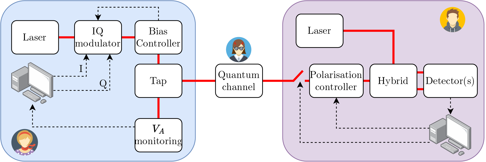
As previously stated, when implementing a QKD protocol in practice, it opens the door to a number of attacks that are not taken into account in the security proofs. We here give a quick review of known attacks for CV-QKD setups, along with their countermeasure(s) in Tab. 3.1.
| Attack | Party | Component | Demonstrated | Description | Countermeasure(s) | Ref(s) |
| Trojan horse | Alice | IQ modulator | Yes | Analysis of reflections of injected light | Isolator | |
| LO manipulation | Bob | Calibration | Yes | Induced calibration errors by manipulating the LO pulses | LO power monitoring, LLO | |
| Wavelength attack | Bob | Hybrid | No | Manipulate LO wavelength changing hybrid ratio | LO wavelength monitoring, LLO | [86] |
| Saturation attack | Bob | Detector | Partial | Saturate detector outside of linearity range | Monitoring of quadrature first moments, CV-MDI, watchdog detectors | [87] |
| Detector control | Bob | Detector | Yes | Same as saturation but without phase locking requirement | Monitoring of quadrature first moments, CV-MDI, watchdog detectors | [88] |
| Laser seeding | Alice | Laser | No | Increase laser source intensity via light injection | Real time monitoring | [89] |
| Laser damage | Both | All | Yes | Change of properties of components by injecting powerful light | Optical isolators, watchdog detectors | [90] |
| Generation leakage | Alice |
| Partial | Leakage of information in other non-measured mode (e.g. frequency) can be used | Imperfection in security proof | |
| Trusted phase noise model exploitation | Bob | Reference signals | No | Trusting part of phase noise enables attacks on references pulses | Monitor all references pulse, no trust in noise | |
| Magnetic field | Both | Components using Faraday effect | Yes | Change of properties of components by applying an external magnetic field | Shielding | [97] |
| Imperfect channel model | Both | Fluctuating channels | No | Take advantage of non-Gaussian effects in fluctuating channels | Monitoring the quantum channel | [98] |
| Imperfect source | Alice |
| No | No specific attack proposed | Monitoring Gaussian modulation | |
| Power analysis | Both |
| No | Analysis of power consumption to guess setting | Power consumption randomising, reduce power fluctuations | |
|
|
Several side channels hence exist, both on the transmitter and the receiver, with already many complete or partial experimental demonstrations of the attacks. On the good side however, we also know reasonable countermeasures to shield against those attacks. Note that all the attacks are not necessarily applicable on all the systems: for instance the attack that uses the trusted phase noise model needs the system to use this model, or the attacks on LO manipulation needs the system to send the LO through a classical channel and not a system where the LO is generated locally at Bob’s side. Some attacks on the software can also be envisaged but are usually implementation dependent. Let us however just mention that proposals were made to attack the information reconciliation or privacy amplification software [102–105].
A very good work of collecting the different attacks has been done by the BSI (Bundesamt für Sicherheit in der Informationstechnik) [106] and regroups numerous attacks and countermeasures for both DV and CV-QKD systems, with their extensive descriptions, their requirements and their feasibility. A similar work has also been done in the Nostradamus project [107]. Note however that these documents are only a snapshot of the different known attacks and countermeasures at some point in time, and that, contrary to the security proofs, we will never be sure if all the side channel attacks are closed or not.
In our work, we will not focus on implementing countermeasures, assuming they can be added later with minimal complexity. This approach allows us to work with simpler systems and gradually adding complexity over time.
Before moving on to implementing the CV-QKD protocol, it is interesting to quickly compare the two families of protocols that we described in this chapter.
In Fig. 3.13, we plotted the PLOB bound along with the scaling of the key rate of the no-switching CV-QKD protocol, the BB84 protocol with true single photons and the BB84 protocol using weak coherent pulses with decoy states [108]. The plots are made by assuming pure-loss channels (i.e. no noise) and represent the maximal secret key rate achievable. This was done following the analysis in [43], where the key rate formulas can be found in Supplementary Note 6. The high loss scaling (where ), are for the PLOB bound, for CV-QKD, for BB84 with true single photons and for BB84 with decoy states. The plot was done assuming fiber losses of .
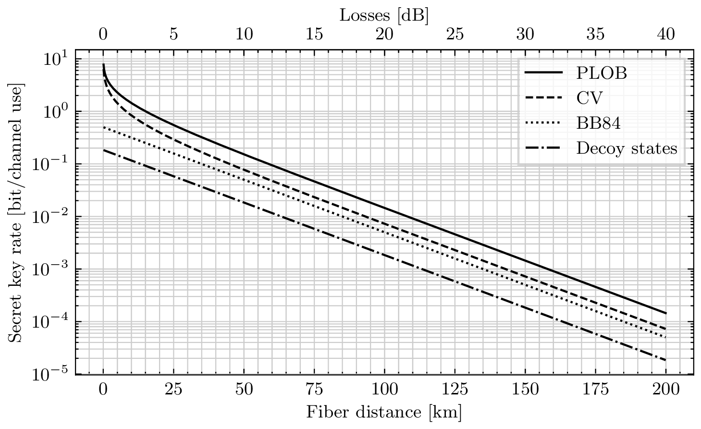
This analysis shows a clear advantage for CV-QKD being just half the maximum secret key capacity of quantum protocols. However, while it provides insights, it remains highly theoretical, and one needs to consider the resilience to noise and how they behave in practical implementations.
The practical differences between discrete-variable and continuous-variable quantum key distribution are summarised in Tab. 3.2:
Detection One of the biggest limitations in Discrete-Variable Quantum Key Distribution (DV-QKD) is the single photon detectors. Indeed, it is very complex to distinguish single photons from the environmental noise, especially at higher photon wavelengths as they bear less energy. A usual solution has been to cool down the detectors to reduce thermal photons. Cooled down avalanche photodiodes, between and can operate with detection efficiency of 20- at . Superconducting Nanowire Single Photon Detectors (SNSPDs), a very promising technology for single photon detection, can reach detection efficiency up to (typical ) when cooled down to sub-Kelvin temperatures, requiring the use of cryogenics. They also suffer from a dead time (i.e. the time for the detector to reset after a detection) in the tens of nanoseconds to nanoseconds range, limiting the detection rate to - (however DV-QKD has the advantage of the reception rate going down with the distance). On the other hand, CV-QKD protocols operate with balanced detectors, which have a sort of built-in quadrature amplification with the Local Oscillator and can operate with good efficiency (80- ) for telecom wavelengths at room temperature, in the 10- range.
Power consumption A direct consequence of the previous point is that when using SNSPDs with cryogenics, the energetic consumption of the detector is much higher (by at least two orders of magnitude), which would indicate that CV-QKD may have a better energy efficiency. These notions will be studied in chapter 7.
Source In the first proposed DV-QKD protocols, the required source was a true single photon one. However, it can also be done using weak coherent pulses, with the use of decoy states [109], which is way more practical, giving similar complexities for DV and CV sources. Both require a laser and modulators (usually amplitude and phase) which can operate at high rates.
Loss and noise resilience DV-QKD is more loss resilient: the distance record for prepare-and-measure DV-QKD is [110] whereas it is for CV-QKD [59]. It was theorised that the advantage of DV-QKD comes from the phase noise, which has a bigger impact in CV-QKD, and is one of the main sources of the excess noise [111]. In this article, the authors even expect CV-QKD to reach beyond what is currently possible as lower and lower phase noise values are achieved. Note also that DV-QKD protocols with a node in the middle can double their transmission distance, such as the Twin-Field protocol [112] with a record of [113]. A similar effect does not exist for CV-QKD. All the records here are given for fiber communications (satellite communication can achieve even higher distances, but has not yet been demonstrated for CV-QKD).
Post-processing As we will see in chapter 4, CV-QKD requires some Digital Signal Processing to treat the outputs of the balanced detectors, correct impairments and recover Bob’s symbols. In comparison, DV-QKD just needs to precisely tag the time of a click on a detector, which can be done efficiently using commercially available time taggers. In addition, information reconciliation is harder in CV-QKD due to the nature of the data to reconcile. Overall the post-processing is more complex, harder to realise in real-time and will probably require more energy. This might balance, at least in the near future, the difference in energy consumption between DV and CV-QKD. This will be quickly studied in chapter 7.
Integrability Integration of the transmitter and receiver on compact devices with a scalable process is a necessary step for a potential wide adoption of QKD. CV-QKD benefits from all the research on the integration of standard telecommunication devices, and while the task is still complex, in particular due to the requirement of high efficiency and low noise of the receiver, the integration is easier than for DV-QKD. In particular, it is not yet possible to integrate SNSPDs with the other required components for the receiver [114]. In addition to this, integrated SNSPDs will still require the cryogenic system.
| DV-QKD | CV-QKD | |
|
Encoding | qubits (or qudits) | Quadratures |
| Dimension 2 (or ) | Dimension | |
|
Detection | Single photon detectors | Balanced detectors (classical photodiodes) |
| Bandwidth - | Bandwidth - | |
| Low efficiency or cryogenics required | Good efficiency at room temperature | |
| Price 10 k€ - 100 k€ | Price 1 k€ - 10 k€ | |
| High energetic cost with cryogenics | Low energetic cost | |
|
Source | Single photons or | Coherent states |
| weak coherent pulses (decoy states) | (or squeezed states) | |
|
Loss resilience | More loss and noise resilient | Less loss and noise resilient |
| Record [110] | Record [59] | |
| Post-processing | Low post-processing (time tagging) | Heavy post-processing (see chapter 4) |
| Integrability | Transmitter - Demonstrated | Transmitter - Demonstrated |
| (see chapter 6) | Receiver - Not fully demonstrated | Receiver - Demonstrated |
In this sense, CV-QKD has been more thought for metropolitan applications with high rate requirements, while DV-QKD might be used for long distance links.
With several hundreds of experimental demonstrations, and a handful of companies starting to commercialize systems, in DV, CV or even MDI, QKD is one of the most mature applications of quantum technologies. But even with this level of maturity, some challenges remain and we present them here, first because they allow understanding what should be optimised in a QKD system, and then because they also enrich the context to this thesis.
The challenges are represented in Fig. 3.14, and most of them are common to DV and CV-QKD.
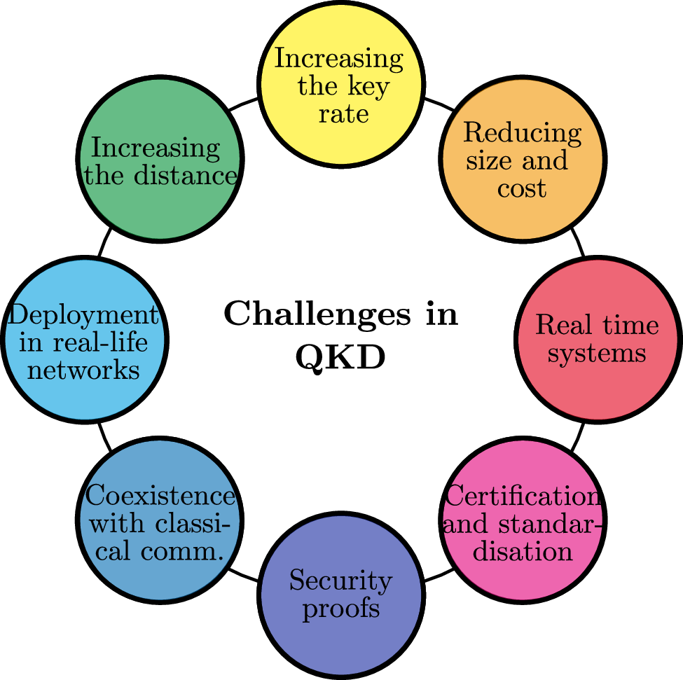
Increasing the key rate Increasing the secret key rate is an important goal in QKD and the reason is rather simple: if we want to use QKD and reach information-theoretic security, one has to use a perfect-secrecy scheme, which requires the key to have at least as many bits at the data [115], meaning that if we want to encrypt some data flow with, for instance, OTP, we need to match the classical data rate, which can reach hundreds of or even in some applications. This rate increase is usually done by reducing the internal losses and noise of the system, achieving a higher repetition rate or multiplexing several QKD systems.
Increasing the distance Increasing the distance is also a big goal in QKD. Without quantum repeaters, the distance is, in practice, limited by noise, and synchronisation or alignment errors between the two systems. One particular interest also lies in achieving QKD with satellite-based communications, which have been demonstrated experimentally for DV-QKD [116, 117], and analysed theoretically for CV-QKD [118, 119].
Reducing size and cost Most commercialised QKD systems are bulky, with non-negligible dimensions and weight (see Fig. 8.10 in chapter 8 for instance). While this might be fine if QKD adoption is limited to specific applications, a wider adoption will require smaller systems with a relatively low production cost. A particular line of research to this end is the use of integrated photonics, which has the same potential as what integrated electronics did for today’s computers.
Deployment in real-life networks QKD systems are often tested in labs, with a fiber spool, and while this step is absolutely necessary in order to develop and assess the performance of a QKD system, its deployability on a real life network, i.e. with field deployed fibers, is also critical. While this is changing now, until recently, the number of fibers deployed specifically for quantum communication applications, in particular with no active equipment, was pretty low.
Real time systems This challenge is mostly true for CV-QKD where the post-processing (error correction and privacy amplification), as well as the digital signal processing, that we will discover in the next chapter, are resource-consuming operations, and their operation in real time remains challenging. This is however needed for useful and operational commercial CV-QKD systems.
Coexistence with classical communications While the deployment of specific networks for quantum applications is a necessary step in the near future, to test both QKD and beyond QKD protocols, it is not realistic to think that a parallel network as big as the one we have today for classical communications will be deployed, and while specific networks might be enough for a limited adoption, a wider application also requires quantum communication to run alongside the already-existing classical communications.
Certification and standardisation The actual use of QKD systems to encrypt sensitive information requires the device to be tested and certified by some certification authority, exactly as today’s security modules are certified, requiring security standards. Moreover, the operation of a network with heterogeneous providers requires some standardisation on the different interfaces. As we will see in chapter 8, the work of standardisation has already begun, but there is however no existing certification.
Security proofs This challenge again is mostly true for CV-QKD where we are still missing a security proof for finite-size with any discrete modulations. However, it is also possible to consider that some security proofs are not yet giving the best possible rate achievable by some protocol, and hence that the performance could be improved. Security proofs are also linked to the certification process.
It is possible to see that the challenges are not independent of each other, but it is not possible to work on them all at the same time. In this thesis, we will work on several of these challenges: increasing the key rate, by working on high-rate bandwidth-efficient CV-QKD with continuous light and signal processing (chapters 4 and 5), reducing the size and cost of CV-QKD by working on an integrated receiver based on Silicon Photonics (chapter 6), and deployment in real-life, with the establishment of a quantum communication infrastructure in the Paris area, and deployment of QKD applications (DV and CV) on it (chapter 8). We will also mention applications of our CV-QKD experimental platform for experimental feasibility studies for long distance links, its use in the Nostradamus project contributing to the creation of a certification body in the European Union, and the potential interface of our platform with Field Programmable Gate Array (FPGA) for real time systems in chapter 5. Ongoing coexistence studies for commercial systems on the Parisian quantum communication infrastructure will also be mentioned in chapter 8.
In this chapter, the goal is to introduce the different digital signal processing concepts that will be used to encode, correct impairments, and decode data from the digital to the analog world (and vice-versa) for Continuous-Variable Quantum Key Distribution (CV-QKD). These concepts however are relatively general and can be applied to all sort of digital communications, especially in the field of coherent optical telecommunications.
The chapter starts by a quick overview of why we need those techniques before moving to the different concepts that will guide the implementation of the protocol described in chapter 3.
The early demonstrations of CV-QKD were all relatively similar in terms of their setup: they used a pulsed laser that was split in two, and one path would provide the signal path, that would be modulated using an amplitude modulator and a phase modulator separately, and the other would provide the Local Oscillator (LO) that would either be sent into a different fiber, or more likely be multiplexed in time and polarisation with the quantum signal in the same fiber [53, 59, 99, 120]. Those systems currently hold the distance transmission records for CV-QKD.
However, this approach is susceptible to a particular side-channel attack: the LO manipulation or calibration attack. This attack happens when Eve has access to the local oscillator, and since the local oscillator is used, at Bob’s station, as an amplitude reference (when performing the shot noise normalisation), Eve can manipulate the local oscillator such that Bob overestimates the transmittance or underestimates the excess noise resulting in an overestimation of the key rate, hence opening a security loophole. This attack can either be done by directly applying amplitude fluctuations on the local oscillator [84] or by controlling the ratio of the beam splitters at Bob’s station by changing the wavelength of the LO [86, 121].
While countermeasures have been proposed to mitigate these LO manipulation attacks such as monitoring the fluctuations and wavelength of the LO [122], it has also been proposed, around 2015, to cast aside the transmitted LO attacks by not transmitting the LO, which would make it inaccessible to Eve. While this was the perfect countermeasure, this also added a main challenge, which is that the lasers would be two different physical systems, and hence would not have the same frequency or the same phase. It is the reason, along with the closeness of the CV-QKD scheme with classical coherent communications, and the prospect of high rate and bandwidth efficient CV-QKD, why a part of the community took a turn from the pulsed and transmitted LO systems, to continuous wave systems, with high repetition rates, locally generated local oscillator and digital signal processing to recover the different impairments between the two lasers.
The first demonstrations of such systems have been demonstrated as early as 2017 [123] and several other demonstrations have been performed, improving the digital signal processing, and getting higher key rates and at higher distances. This approach has effectively moved the complexity of the setup to the complexity of digital processing, providing, at the end of day, low complexity physical setups for CV-QKD.
One of the most detrimental effect for the excess noise, and hence for the key rate, in CV-QKD is the phase noise, and the Local Local Oscillator (LLO) scheme has, at the beginning, worsened the key rate due to the fact that the phase between the two lasers is random. The Digital Signal Processing (DSP) compensates for a part of the phase noise, but the finite compensation has been the reason why the newer systems lag behind in terms of achievable distance (even though they go much higher in key rate due to their higher repetition rate). One of the main limitations is that the phase information will be recovered, as we will see in this chapter, by some classical information, called pilots, that is multiplexed to the quantum signal, and the quality of the phase recovery will highly depend on the Signal-to-Noise ratio of the pilots at reception. However, if the generated pilots are too powerful, there will be some crosstalk between the pilots and the quantum data that will also add excess noise, and at some point reduce the key rate. This means that, without a better isolation between the multiplexed signals, there is a trade-off between the Signal-to-Noise ratio (SNR) of the pilots and the induced excess noise on the data. Several methods have been proposed to improve the phase recovery such as machine-learning-aided pilot recovery [124, 125] or pilots that are widely multiplexed in two degrees of freedom to minimise the crosstalk [126] resulting in transmission distances above . This situation is summarised in Fig. 4.1.
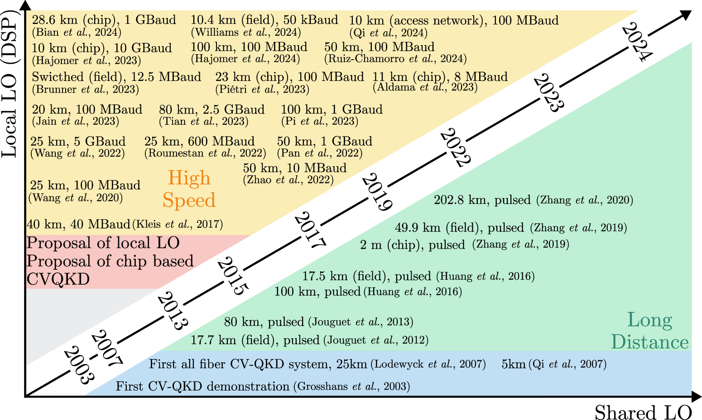
This figure illustrates two important points: first the pulsed systems with shared local oscillator still hold the record in distance with a factor 2 with respect to the more recent systems, as described above, although LLO with Continuous Wave (CW) light and DSP systems operate at higher rates and hence at higher key rate. The second point is that current research works are largely focused on the LLO+DSP systems, with numerous demonstrations in the past few years.
Another challenge for CV-QKD with DSP is achieving real time operation, especially at high data rates. Although this is a challenge, the DSP is quite similar to what is used in classical communication systems. It is probably only a matter of time before real time systems with high speed operations are successfully implemented.
For bandwidth-limited channel, an important criterion to ensure Inter-Symbol Interference (ISI)-free communications is the Nyquist ISI criterion. The idea behind it, along with the terminology used in the following of this chapter is presented in appendix 10.
The criterion basically states that the overall temporal response of emitter filter, channel and receiver filter should satisfy
|
| (4.1) |
to ensure ISI-free communications.
In practice, one example of filters that fulfil the Nyquist criteria is the raised cosine filter, which is defined in the frequency domain by
|
| (4.2) |
where is the roll-off factor. It is easy to see from this formula that this filter has a bandwidth of , meaning that the roll-off factor represents somehow the excess bandwidth. It is also possible to note that when , we get back the frequency window, i.e. the cardinal sine.
It is possible to prove that the temporal response of such a filter is
|
| (4.3) |
The effect of the roll-off factor on both the temporal and frequency responses is shown in Fig. 4.2. In time, as can be seen in Fig. 4.1a, a higher roll-off factor means a quicker amplitude decay of the higher-order lobes, meaning that the effect of ISI due to incorrect sampling will be reduced. The consequence in frequency is a smoother decay, and an increased bandwidth, as can be seen in Fig. 4.1b.
To visualise the Nyquist criterion, one can plot subsequent symbols in temporal, or to visualise it in frequency, plot the frequency response shifted several times. Both are done in Fig. 4.3 with a roll-off factor of .
In Fig. 4.2a we see that when sampling at the good moment, indicated by the dashed black lines, only the contribution of one symbol is taken into account while all the others are exactly (which is exactly the Nyquist criterion). A slight error on the sampling time, which could be caused for instance by a clock mismatch or other effects that we will see later, will cause non-zero contributions from other symbols and a decrease of the contribution of the main symbol. While the decrease of the main symbol will always be the same for every roll-off factor, the contribution from other terms will depend on it as shown in Fig. 4.1a. In the frequency domain we can see two regions: the first is where only one shifted version of contributes and is then constant, and the second, where two shifted versions of contribute but their effect is complementary and still sum to the same value, yielding a constant value of (note that was normalised so that it sums to one, as in eq. (A.14)).
It can be shown that in the presence of additive white Gaussian noise, the optimal filter to apply at the reception, with respect to maximising the signal-to-noise ratio, is a filter that is matched to the signal, which is a conjugated time-reversed version of the signal [147], and that the frequency response of such a matched filter is up to an amplitude and delay scaling factor, the complex conjugate of the frequency response of the initial signal. It means, that if we want to apply the matched filter and that the overall response is a raised cosine response, we need
|
| (4.4) |
yielding the definition of the Root-Raised Cosine (RRC) filter: .
The RRC filter is also defined by a roll-off factor and a sampling rate and should be applied twice, once at emission, effectively performing the pulse shaping of the signal, and once at reception, matching the emitter’s filter.
Note that in the rest of this manuscript, and to avoid confusion between the reconciliation efficiency (which was named in chapter 3) and the roll-off factor, which is named in this chapter, we will explicitly write for the roll-off factor of a RRC filter.
As we saw before, precise synchronisation is needed to avoid errors in the sampling points and hence to avoid ISI. While rough synchronisation can be done with several methods including sequence triggering or network messages, precise synchronisation must be done with a sequence in the frame itself.
A standard choice for synchronisation sequences are called Constant Amplitude Zero AutoCorrelation (CAZAC) sequences. Those are sequences which have modulus one, and that have good autocorrelations properties meaning that the periodic correlation (i.e. the correlation of the sequence with a cyclic shift version of itself) is 0 everywhere except at the value of the cyclic shift where it has a maximum.
A particular example of CAZAC are the Zadoff-Chu sequences [148–150], also sometimes called Franck-Zadoff-Chu sequence, and that we will abbreviate by ZC sequences. They are defined by
|
| (4.5) |
where is the length of the Zadoff-Chu sequence, and is the root of the Zadoff-Chu sequence, with the requirement that the root and the length are coprimes, i.e., . Then and is the cyclic shift. When and both and are chosen to be prime numbers, this simplifies to
|
| (4.6) |
In Fig. 4.3a an example of a Zadoff-Chu sequence for and is plotted.
In Fig. 4.3b, the autocorrelation between the same sequence and itself cyclically shifted by is shown, showing a very visible correlation peak at exactly and showing low correlations everywhere else.
For these reasons, the Zadoff-Chu sequence will be temporally multiplexed to the quantum data, allowing for fine timing recovery.
When CV-QKD is performed using two independent lasers, it creates two main issues: the first one is that the two lasers will have in practice two slightly different wavelengths and hence frequencies, which will create a frequency shift of value . The second issue is that since they are two different lasers, their phase is not correlated, and since information is encoded in the phase and that coherent detection is phase-sensitive, it means that a phase reference must be shared in order to get useful data.
While both these effects could be corrected using physical apparatus such as Phase-Locked Loop (PLL) and Frequency-Locked Loop (FLL), we choose to compensate these effects in post-processing, in two steps: frequency carrier recovery and phase carrier recovery.
Another effect that will have similar effects is a clock mismatch between Alice and Bob’s labs. Indeed, since they are using different equipment (and not sharing a clock), their clock might have a small mismatch causing a phase drift and sampling errors, and also needs to be corrected.
Here we decided to send phase and frequency references that are multiplexed in frequency and that take the form of tones i.e. complex exponentials. A tone at frequency is defined by
|
| (4.7) |
where is the amplitude of the pilot.
The Fourier transform of such function is a Dirac delta function at frequency : , and thus it is easy to find by applying a Fourier transform to the incoming signal. This is then a fixed frequency reference, and can be used to recover the carrier frequency, or at least the beat frequency which is what is of interest for us: at detection the tone will have been shifted by an additional frequency of but will still be a tone at frequency , and by finding local maximums in the Fourier transform, we can recover the value of and knowing , of .
Let us say that the total phase difference between the two lasers at detection is given by the signal . Then at detection, the outcome signal picks up this additional phase, and the specific tone becomes . The correcting signal can be found by demodulating the pilot, i.e., by multiplying it by and then getting the argument of the resulting complex number. Residual phase errors will occur in case of improper frequency estimation or noise in the noise in the signal.
But there might still be an issue: if Alice and Bob do not share the same clock, it means in practice that they do not share the same Hertz or frequency basis, meaning that the estimation of the frequency by the DSP of Bob might be local and cannot be directly compared to the frequency of Alice. To correct this, it is possible to add a second pilot and use their frequency difference to correct the clock.
Indeed, if Alice sends two tones, one at frequency and the other at frequency , both of them will be shifted at detection by the same frequency causing the frequency difference to be unaltered. However, when Bob acquires the signal with its Analog-to-Digital Converter (ADC), it might vary slightly due to a relative clock difference between Alice and Bob. But the clock mismatch can be evaluated with
|
| (4.8) |
and can be corrected.
The overall impairments’ recovery is described here and summarised in Fig. 4.5: upon reception of the signal, a FFT is realised (step 1) and the two frequencies observed by Bob are used to get and , then these two frequencies are used to compute using eq. (4.8) (step 3), which then used to correct the signal (step 4). A second FFT is then performed again (step 5) to get and deduce (step 6). The value of is then used to perform a bandpass filter centred at this frequency and of bandwidth (step 8) before the final steps of demodulating the tone by multiplying it by (step 8) and recovering the phase information (step 9). Also note that the value of will also be used to demodulate the signal itself.
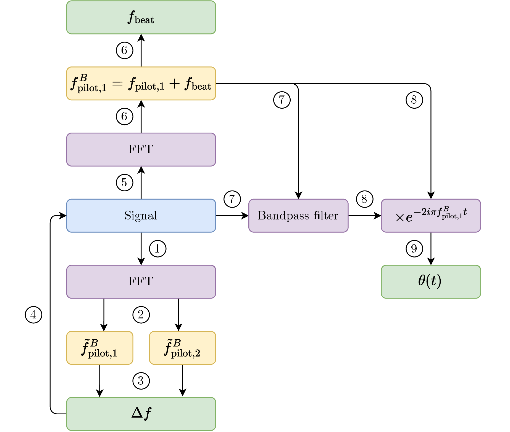
One question that might arise is why do we send additional pilots instead of directly using the carrier to obtain the frequency and phase information. Indeed, the carrier will also interfere with Bob’s laser and will be detected, and due to the frequency difference, this will cause a signal at . While this could be in theory used, we work in a regime where we try to suppress the carrier, using the modulation bias controller presented in chapter 3 that will lock the modulator where the extinction ratio is the best, usually above . The low frequencies are also accompanied by low-frequency noise and other low-frequency signals, which means that the beat signal is probably not the best option in itself. It could however be potentially used to replace only the second pilot.
To close this chapter, it is now time to wrap up the different notions that have been seen and present the overall Digital Signal Processing algorithm, both at Alice’s and Bob’s sides, and to get a grasp of all the parameters that will have to be tuned in order to get the best possible excess noise. Unlike standard telecommunications, where most parameters could be derived from the requirements of frequency occupation of the signal, and the available hardware, we here want to explore different values for the parameters to get the best performance possible.
While we tried to give a quite targeted introduction to DSP for our system, some subtleties will only be discussed in chapter 5.
DSP parameters There is a set of parameters used for the DSP at Alice’s and at Bob’s sides. Most of these parameters have already been described and are summarised in Tab. 4.1. Alice and Bob must agree on these parameters, and we can consider that they are shared over the public channel, since Eve can learn them without compromising the security. However, in commercial systems, most of the parameters are likely to be fixed, with only a few tunable ones, in particular to accommodate for different distances. It is important to note that in addition to these DSP parameters, physical parameters and the performance of the physical devices must be considered to design the most efficient protocol.
| Name | Symbol | Name | Symbol |
| Modulation type | - | Modulation size | |
| Variance of symbols | Number of symbols | ||
| Symbol rate | Frequency shift | ||
| Roll-off factor | Subframe size | ||
| Pilot 1 frequency | Pilot 2 frequency | ||
| Pilot 1 amplitude | Pilot 2 amplitude | ||
| Bandpass filter bandwidth | Pilot phase average filter size | ||
| Zadoff-Chu sequence length | Zadoff-Chu sequence root | ||
| Zadoff-Chu sequence rate | Number zeros start | ||
| Number zeros end | |||
To help describe the overall DSP, signal representations have been plotted at different moments of the generation (Fig. 4.6) and recovery (Fig. 4.7). References are made in the corresponding text. The relevant parameters that were used to generate these plots are: modulation type: Phase-Shift Keying (PSK), , , , , , , , , .
Alice’s DSP Alice starts by generating symbols with variance for each quadrature, according to the modulation type she is using: Gaussian or discrete modulations with points in the constellation (Fig. 4.5a, example with a 4-PSK). She then computes the Samples-Per-Symbol (SPS) number defined by where is the symbol rate and is the sampling rate of the Digital-to-Analog Converter (DAC). This number represents how many samples emitted by the DAC will encode a single symbol. The raw sequence of symbols is hence upsampled by this factor (Fig. 4.5b). The sequence is then filtered using a Root-Raised Cosine (RRC) filter with roll-off factor (Fig. 4.5c). This sequence is referred to as the quantum sequence and is then shifted in frequency by , by multiplying it by (Fig. 4.5d). Two pilots are then frequency multiplexed to the quantum sequence, at frequencies and , and with amplitudes and (Fig. 4.5e). For synchronisation purposes, a Zadoff-Chu of length and rate is generated, and upsampled to be emitted at the Zadoff-Chu sequence rate of and added before the quantum and pilots sequence, in time (Fig. 4.5f). Finally, it is sometimes useful to pad zeros at the beginning or at the end of the sequence, which is defined by two parameters: and .
Bob’s DSP Upon receiving the signal (see Fig. 4.6a for a spectrum of the received signal), which has been roughly synchronised by network messages, there is a first synchronisation step based on cross-correlating the signal with a locally generated Zadoff-Chu sequence with the same parameters as Alice (Fig. 4.6b). This step is to ensure to have the rough start of the quantum and pilots sequence. The sequence is then analysed with the FFT to identify the two frequency components of the pilots and , that can be used to estimate the clock mismatch to correct the initial signal sequence. The pilot frequency of the first pilot is found again , and is recovered. There is a second step of finding the Zadoff-Chu sequence with cross-correlations to get the best timing precision. From this point on, the analysis is done by subframes1 , which are defined by their number of symbols . In each subframe, the is re-estimated using the same method as before, then the first pilot is filtered using a bandpass filter at frequency and bandwidth (Fig. 4.6c) and demodulated by multiplying it by to get back the phase information . On the other side, the quantum data sequence is brought back to baseband by multiplying it , and a matched RRC filter is applied to the sequence (Fig. 4.6d), essentially working out the full raised cosine filter. This also suppresses all the other frequency components that are left, and in particular the pilots. Then the sequence is downsampled to recover the symbols (Fig. 4.6e). The optimal sampling point is found by finding the sampling point that maximises the variance of the resulting sequence (which corresponds to finding the sample that yields the maximal opening in an eye diagram method), giving the symbols where is the frame number. After this, the only impairment left is the phase noise, which is corrected by first filtering the phase with a moving average filter of length and then downsampling the result with the same optimal sampling point as before, giving . The th final symbol is recovered by correcting the phase: for (Fig. 4.6f). After this step, we are left with the recovered symbols, up to a global phase, which is not in itself an issue and that we will see how it is corrected in chapter 5.
One final note on Bob’s DSP: it also needs to be applied to the electronic noise and shot noise acquisitions. This is because, we must normalise the data by the noise in the same mode, and hence the treatment should be the same. A particular example is the frequency mode: the quantum data is centred at with that can vary, and the shot noise and electronic noise that should then be considered is the noise in this frequency region, and hence we will also need to apply the unshift operation and the RRC filter. In practice, we apply a special DSP that performs the same operations except for the phase correction, as the electronic noise and the shot noise are phase invariant.
In this chapter, we present one of the main outcomes of this thesis: QOSST, an open source software for operating Continuous-Variable Quantum Key Distribution (CV-QKD) setups with continuous wave lasers and digital signal processing, with high modularity and inter-operability to interface with several setups.
It arises from the observation that building a CV-QKD setup has, at its core, several disciplines including electro-optics, signal processing, channel coding and quantum mechanics, making it challenging. It also comes from the observation that Quantum Key Distribution (QKD) security should not rely on obfuscated software, but rather on verifiable open source code.
This chapter hence presents the motivation for QOSST, results from its development and a showcase of its capabilities. It also presents future works and possible applications of this software.
The results presented in this chapter, have been featured in a poster presentation [25], two conference presentations [21, 22] and a scientific publication [17].
In the previous chapter and in particular in Fig. 4.1 we saw that in 2021, when the QOSST project started, there were few demonstrations of high-speed bandwidth-efficient CV-QKD systems with Digital Signal Processing (DSP) (although several works were also in progress). Another motivation for us was the prospect of implementing these operations on a photonic integrated chip, which had not yet been done at that time (again several works were in progress), and which has been a long-running project in our laboratory.
Hence, we needed a software capable of performing the CV-QKD operations for the chip-based application, and it was only shortly after that we decided that it would be interesting, one day, to release it to the community. In particular, we drew this conclusion because such a software didn’t exist, was complex to create because of its multidisciplinary nature including programming, signal processing, electro-optics and quantum information. In our opinion, such a software could benefit the CV-QKD community, and potentially even a larger community. We also believe that protocols such as Quantum Key Distribution, whose security is based on the laws of quantum mechanics, should not rely on a closed and obfuscated software. Therefore, we decided to develop an open source solution.
Prior to QOSST, there were a few pieces of open source software for QKD, all for discrete-variable including for instance the BB84 AIT QKD R10 Software [151, 152], written in C++, and released in 2012 under the GPLv3 licence. It included code for the QKD stack, key stores, error correction and privacy amplification. The software stopped being updated in 2016, and it is the initiative that resembles most what QOSST aims to achieve for CV-QKD. Another initiative is qkd-net [153], a software to manage QKD networks, written in C and C++, released in 2019 under the MIT licence and still updated today. There was also a number of programs for the post-processing such as cascade-python [154] and cascade-cpp [155], that are implementations of the Cascade error correction for Discrete-Variable Quantum Key Distribution (DV-QKD), released under the MIT licence and written respectively in Python and C++, privacy-amplification [156], that included sifting, error estimation, error correction, privacy amplification and authentication for DV-QKD, written in C++ and released under the GPLv3 licence, posproc [157] a library for post-processing including the cascade algorithm and privacy amplification, written in Python. Some toolkits to integrate QKD with other services such as CQPToolkit [158], written in C++, and released under the Mozilla Public License 2.0 and openssl-qkd [159], a toolkit to integrate QKD with openssl, mostly written in C and released under the MIT licence were also present. There was also a number of open source programs for simulation or secret key rate computations [160–167] and while they are interesting, they are a bit out of scope since QOSST will focus on actual implementation of the protocol.
Prior to QOSST, the only open source project on CV-QKD was homCVQKD [168], which was associated to a manuscript on theoretical analysis of CV-QKD [169] and was providing the code for simulation and data processing of Gaussian modulated CV-QKD with single quadrature detection.
Hence, we decided, from the start, to have clear design choices and good documentation to release QOSST as an open source software. In our opinion, this offers several benefits: first for the QKD research community, as a way to build on top of QOSST and/or use it in their own lab hence reducing the required amount of work to start working with CV-QKD, and also as an educational resource, that can be used to get more insights on CV-QKD. Additionally, the larger community could benefit from using the software to verify that a CV-QKD system is working or even using parts of the software for certification and standardisation.
QOSST is a project that took more than 3 years to develop. While some basic code existed since October 2020, the project officially began on May, 11th 2021. After 140 commits, the project is renamed to QOSST on 22nd February 2022 and a logo is created (see Fig. 5.1). 661 commits, 9204 lines of code, 7191 lines of comment, and 2 years later, on 29th April 2024, the project is publicly released on GitHub [170], almost three years after its official start. While the development of this project was a long term process, design choices were defined from the beginning and guided the development. We briefly summarise them here.
We decided to develop QOSST using the Python programming language [171]. While it is not known for its performance, in particular in terms of speed [172], it is a very popular language [173] due to its large community and over 560 000 projects on the Python Package Index (PyPI) at the time of writing of this manuscript [174]. This makes it the language of choice for targeting the largest audience possible, including users with no other programming background. When the project started in May 2021 the software was running on Python 3.7, and over the years Python versions have been dropped. Now the software runs on Python 3.11 and 3.12, being compatible down to version 3.9.
We also decided from the start to develop a software that was not specific to one setup, or a particular class of hardware, i.e. we wanted the software to be modular and hardware-agnostic. For the modularity, this means to have a configuration with numerous parameters (current version 0.10 of QOSST has 122 parameters) that can be tuned to accommodate to different setups. At the core of this modularity, there is a configuration file, written in TOML [175]. This particular language was chosen over JSON, YAML or INI for several reasons, including the fact that the Python ecosystem is moving towards TOML [176, 177] and the fact that TOML is easily readable and modifiable by both humans and machines [176, 178]. For the hardware-agnostic part, we decided to develop a Hardware Abstraction Layer (HAL). This layer is a piece of code that serves as an implementation buffer between the code of QOSST and the hardware in real life. The basic example is that QOSST may require a laser to emit of light at and this would be almost all what the main program would ask for. A code for the specific laser used in the setup will then be called, and used to set up the laser (by communicating with it through a USB interface for instance).
From the beginning, the software was also chosen to be broken down in several packages and modules, to have files and modules with manageable size, and to lower the requirements to start understanding or working on the code (see section 5.2 for more details) and an extensive documentation based on docstrings [179], and automatically generated documentation with Sphinx [180]. We also used the optional type hinting mechanism of Python [181].
QOSST is divided into seven modules: core, hal, alice, bob, skr, sim and pp. Six of these have been released publicly. The post-processing module was not released because it hosts the error correction and privacy amplification codes that are not yet mature. The interactions between the modules are illustrated in Fig. 5.2.
Since it is very difficult to give a linear history for such a big project with a long development time, we first give an overview of what every package is doing, and we will come back on the points that were difficult to implement and led to interesting experiments.
As mentioned above, the goal of the Hardware Abstraction Layer is to provide a unified way to communicate with the hardware, both to send commands, and get the results of these commands, as shown in Fig. 5.3. Technically, the packages provide abstract classes for 12 types of equipments, as shown in Tab. 5.1, based on the abc standard module of Python [182] (module for abstract base classes) and list all the methods that a hardware of a certain type is required to have, also as shown in Tab. 5.1. Any hardware inherits from the QOSSTHardware class that has an open and close method.
| Description | Class name | Required methods |
| Base hardware | QOSSTHardware | open, close |
| Analog-to-Digital converters | GenericADC | set_acquisition_parameters, arm_acquisition, stop_acquisition, trigger, get_data |
| Amperemeters | GenericAmpereMeter | get_current |
| Digital-to-Analog converters | GenericDAC | set_emission_parameters, load_data, start_emission, stop_emission |
| Combined DAC and ADCs | GenericDACADC | set_parameters, load_dac_data, get_adc_data, start, stop |
| Lasers | GenericLaser | set_parameters, enable, disable |
| Modulator Bias Controllers | GenericModulatorBiasController | lock |
| Polarisation Controllers | GenericPolarisationController | move_by, move_to, home, get_position |
| Powermeters | GenericPowerMeter | read |
| Powersupplies | GenericPowerSupply | set_voltage, set_intensity, output |
| Optical switches | GenericSwitch | set_state, read_state |
| Variable Optical Attenuators | GenericVOA | set_value |
| Voltmeters | GenericVoltMeter | get_voltage |
In practice the different pieces of equipment are either controlled by serial commands, usually using Standard Commands for Programmable Instruments (SCPI), or by using a driver wrapper provided by the manufacturer. It can also sometimes happen that the commands are just bytes that are directly written on the serial interface. The instruments can be connected through USB or Ethernet interface.
In codes 5.1, 5.2 and 5.3 we give a short and simplified example of devices interfaced with different methods, with the unified command interface1 . For readability, docstrings and type hinting have been omitted.
import pyvisa as visa from qosst_hal.powermeter import GenericPowerMeter class PowermeterA(GenericPowerMeter): def __init__(self, location): self.location = location def open(): rm = visa.ResourceManager() self.inst = rm.open_resource(location) self.inst.write("*RST") def close(): self.inst.close() def read(): return float(self.inst.query("READ"))
from driver import PowermeterDriver from qosst_hal.powermeter import GenericPowerMeter class PowermeterB(GenericPowerMeter): def __init__(self, location): self.location = location def open(): self.pm = PowermeterDriver(location) def close(): self.pm.close() def read(): return self.pm.read()
from qosst_hal.powermeter import GenericPowerMeter powermeterA = PowermeterA("location A") powermeterB = PowermeterB("location B") for pm in [powermeterA, powermeterB]: pm.open() pm.read() pm.close()
With QOSST, we did not release any specific hardware implementation code, the idea being that specific hardware codes come from other packages and can be imported by the configuration file.
qosst-core is one of the biggest packages of the 7 and basically holds what is common to Alice and Bob, along with core functionalities. In particular, this includes the configuration, the control protocol, logging but also authentication and definition of the common communication functions such as the Zadoff-Chu and Root-Raised Cosine (RRC) filter. We now review them.
Control protocol Alice and Bob need to communicate over the classical channel. Usually this is done by using standard communication protocols such as TCP. We designed a specific control protocol over TCP sockets, in a client-server architecture. It consists of sending frames such as the one depicted in Fig. 5.4. A frame consists of four parts, three of which have a variable length. The first part is four bytes long and corresponds to the fixed length header. The two first bytes should be interpreted as an integer following the big-endian convention, representing the length of the signed digest and the two following bytes should also be interpreted as an integer following the big-endian convention, representing the length of the variable length header. The signed digest is the SHA256 of the rest of the message (variable length header and content) signed by the emitting party (see authentication later). The variable length header is JSON formatted and contains a 1-byte code representing the command associated to the message, the content length, and challenges for authentication. We don’t have the space here to list all of them, but they are listed in appendix A.2. The content depends on the type of message, and in a majority of them, is empty. In appendix A.2, we also listed the typical order of messages of the QOSST/0.2 control protocol. The socket wrapper was engineered to work with relatively large amount of data (in particular when Alice sends her estimation data to Bob) and relatively resilient to losses of connection. In this control protocol, Alice assumes the role of the server and Bob of the client.
We here give a quick description of how the protocol unfolds: first Bob connects to Alice. Once the connection is established, Bob and Alice perform a step to initiate the authentication mechanism and identify themselves. Bob then prepares its Analog-to-Digital Converter (ADC) and requests the Quantum Information Exchange (QIE) to begin. Upon reception of the message, Alice prepares her sequence using her DSP, and when done, answers back to Bob with a message saying she is ready. Bob then starts the acquisition of the ADC and sends a message to Alice to trigger. This allows for a rough synchronisation between Alice and Bob. Alice also measures the monitoring power of her setup and she deduces the average number of photons per symbol . When the QIE is done, Bob performs his DSP, giving his symbols. He then sends to Alice a request to get the symbols for parameter estimation, followed by a request to get for the frame. Bob then estimates and and computes the key rate. He sends the results of parameter estimation to Alice, and they either both abort in the case where the key rate is less than , or they move on to error correction and privacy amplification. While messages were prepared for this, it is not yet implemented.
The run described above corresponds to the treatment of a single CV-QKD frame, which can be repeated any number of times (without repeating the initialisation or hardware connections).
Authentication As described in chapter 3, an authenticated classical channel is needed between Alice and Bob. Usually this is handled either using Pre-Shared Key or Post-Quantum Cryptography2 . In our case, this is done by a digest3 that should be signed using a digital signature algorithm. In order for the digest to be different between each message, a challenge is appended in the variable length header. The next party must then include this challenge in the next message (along with the challenge for the next round of communication). Two digital signature schemes are proposed, the trivial one, which is not really a digital signature algorithm and corresponds to not signing the digest (in this case the digest is just here for data integrity) and the falcon one, which is based on Falcon [185], one of the digital signature algorithm finalists for the NIST PQC standardisation process [186]. The implementation for QOSST was a modified version [187] of a Python implementation made by one of the Falcon authors [188]. The specific implementation was required since the original code did not provide a way to separate the private and public key containers. The authentication process is represented schematically in Fig 5.5.
Communication This module implements the different common functionalities for the Digital Signal Processing, as discussed in chapter 4. In particular, it implements the code for the Root-Raised Cosine filter and Zadoff-Chu sequence.
Modulation This module implements the code to generate symbols according to the different modulations as described in subsection 3.2.7. Fig. 3.4 was generated using the code from this module.
Schema This module defines the different schemes that QOSST currently supports or could support without much modification. In particular, this defines the scheme for single and dual polarisation, and for Single Side Band and Double Side Band.
Data This module defines a data container with a wrapper to easily save and load it. This data container is for instance to save results of experiments in qosst-bob.
Logging This module defines a wrapper for logging, in console and in a file, with several levels of verbosity.
qosst-alice is the package to run Alice, and in particular it implements Alice’s DSP as described in chapter 4, Alice’s server answering to Bob’s requests, linking the DSP and hardware control through the Hardware Abstraction Layer (HAL), and calibration scripts. A particularly important calibration script is the one to calibrate the conversion factor . This will be explained in more detail in subsection 5.3.3.
The DSP includes the generation of symbols, upsampling, filtering with a RRC filter, frequency multiplexing of classical pilots, and generation of the Zadoff-Chu sequence. Once the frame is generated, the code loads it to the Digital-to-Analog Converter (DAC), and when instructed by Bob, triggers the DAC so that the electrical signals are applied to the IQ modulator. Once the frame has been emitted, and Bob has finished his acquisition, Alice re-emits only the quantum symbols part of the frame and records the power on the monitoring powermeter. The value is also recorded when no modulation is applied on the IQ modulator, and the average number of photons per symbol is estimated:
|
| (5.1) |
where is the conversion factor, the symbol rate and is the photon energy.
This method has limitations, particularly the fact that the estimation is not performed with the exact same sequence as the one sent to Bob, and that re-emission is required which limits the frame repetition rate and can cause security issues. We discuss this issue in more detail in section 5.7.
qosst-bob is also one of the biggest packages because it implements the DSP for symbols recovery. It also implements the interactions with the hardware, in particular with the switch, the polarisation controller and the ADC. It also implements a client for Bob, a Graphical User Interface (GUI), and scripts to repeat, optimise and calibrate the experiment. This was the most complex package to develop.
DSP The DSP works as described in chapter 4, performing synchronisation, clock correction, frequency carrier and phase recovery, matched RRC filter, and optimal downsampling. It also performs the global phase correction algorithm which is done once Alice has sent her data for the parameter estimation part, and the global angle is found by finding that maximises the covariance between and where is Alice’s data and Bob’s.
Parameter estimation This module implements the formulas presented in subsection 3.2.6 to estimate and .
Client The client implements functions corresponding to the control protocol, and in particular wraps the authentication initialisation, the quantum information exchange, the DSP, and the parameter estimation. It also interacts with the hardware through the HAL depending on the user input and Alice’s interactions.
Scripts Three scripts are available: the first one qosst-bob-excess-noise allows to repeat the experiment a certain number of times (for instance do 200 CV-QKD exchanges in a row) saving all the parameter estimation results for each frame, the second one qosst-bob-transmittance repeats the experiment a certain number of times while varying the attenuation on the channel using a Variable Optical Attenuator (VOA), and the third one qosst-bob-optimize allows optimising one parameter of the DSP (amongst 10 available) by repeating the experiment and changing the parameter.
GUI A Graphical User Interface (GUI) (see Fig. 5.6) was also coded. It is mainly a graphical wrapper for the client, but has the advantage of having visual feedbacks with the plots, which is great for testing, and showing the experiment during lab tours.
Calibration scripts qosst-bob also implements a script to characterise the efficiency of a balanced detector, with direct detection (i.e. by comparing the input power and the photocurrents).
qosst-skr implements some functions that compute the key rate according to some security proof. Each function takes as input the different required values, at least , and , and outputs the key rate in bits per channel use. At the time of writing of this manuscript, three functions were released in qosst-skr:
GaussianTrustedHeterodyneAsymptotic for Gaussian modulation, under the trusted detector scenario, with dual quadrature measurement, in the asymptotic regime;
GaussianTrustedHomodyneAsymptotic for Gaussian modulation, under the trusted detector scenario, with single quadrature measurement, in the asymptotic regime;
GaussianUntrustedHomodyneAsymptotic for Gaussian modulation, under the paranoid detector scenario, with single quadrature measurement, in the asymptotic regime.
qosst-sim is a simulation tool for CV-QKD, allowing to simulate a CV-QKD exchange with lossy and noisy channels, and with imperfect detectors. This was mostly developed by an internship student in Institut d’Optique Graduate School and will not be developed further in this manuscript.
qosst-pp is meant to be the module for the classical post-processing, including the error correction and privacy amplification. While some early proof-of-concept code exists, it is not yet able to extract a key. We discuss this matter in section 5.7.
Before moving on from this section, we briefly show how QOSST can be installed and run in the minimalist manner, which are the usual steps that are done when starting an experiment from scratch (or to be sure that we start with a clean configuration).
# Install qosst-alice $ pip install qosst-alice # Create configuration file $ qosst configuration create # Edit configuration file $ vim config.toml # Run qosst-alice $ qosst-alice -f config.toml -vv
# Install qosst-bob $ pip install qosst-bob # Create configuration file $ qosst configuration create # Edit configuration file $ vim config.toml # Run with GUI for adjustements $ qosst-bob-gui -vv # Run the experiments 200 times, save, and plot the results $ qosst-bob-excess-noise -f config.toml -vv --plot 200
The hard part, not shown in the code above is the choice of the parameters, which has been ingeniously hidden in “Edit configuration file”.
In this section we present the experimental platform that was used to develop and benchmark QOSST, along with the setup characterisation.
The scheme of the experimental platform is given in Fig. 5.7.
Alice’s setup starts with a Continuous Wave telecom laser (Koheras Basik X15), centred at a wavelength of , that can emit up to of optical power but is adjusted to emit . It is then followed by a single-polarisation IQ modulator with high extinction ratio (Exail MXIQER-LN-30), followed by a Modulator Bias Controller (MBC) (Exail MBC-IQ-LAB) that acts as a feedback loop to lock the modulator around its functioning point, as seen in subsection 2.1.4. This is followed by a Variable Optical Attenuator (VOA) (Thorlabs V1550PA) with an attenuation controlled by the applied voltage (between 0 and ) providing an attenuation at least up to around . Then a optical tap is used to get most of the signal to be detected by the monitoring powermeter (Thorlabs PM101A). The leftover are attenuated even more by a attenuator (Thorlabs FA10T-APC) before being output. Everything inside Alice is polarisation maintaining (except for the final attenuator) and all the fiber to fiber connections are realised with Polarisation-Maintaining (PM) mating sleeves (Thorlabs ADAFCPM1) since they are less lossy for mating PM fibers. The IQ modulator is driven by a DAC with two outputs (Teledyne SDR14TX). It is directly connected to Alice’s computer through a PCIe interface, and has a vertical resolution, with a bandwidth of and a sampling rate of . The computer also reads the powermeter which is connected through USB, and controls the laser and the Modulator Bias Controller (MBC). The voltage of the VOA is generated using a standard, non-controllable, laboratory power supply.
The signal then travels through the quantum channel, represented by a fiber spool in the scheme. We experimented four different type of channels: no channel (back-to-back configuration, used for testing and calibration), a VOA (also V1550PA) to emulate different channel attenuations (and to simplify the setup by using a Polarisation-Maintaining channel), a fiber spool of of standard SMF28 fiber, and a -long field deployed fiber in the Parisian Quantum Communication Infrastructure (see subsection 5.6.3 and chapter 8 for more details on this last one).
On Bob’s side, the signal first passes through a motorised polarisation controller (Thorlabs MPC320), followed by a optical switch (Thorlabs OSW12), with the second input left unconnected (effectively acting as a ON/OFF switch). This is followed by a Polarising Beam Splitter (PBS), with the polarisation output corresponding to the same as the local oscillator (in our case, the horizontal polarisation), while the other linear polarisation is detected (in our case with a powermeter Thorlabs PM101A). The Local Oscillator, provided by a laser identical to Alice’s (Koheras Basik X15), is mixed with the signal in an optical hybrid, which in our case is a hybrid i.e. a 50:50 beam splitter. The two outputs are then connected to a balanced detector, effectively performing the heterodyne dual quadrature measurement. The detector (Thorlabs PDB480AC) has a bandwidth of , a typical responsivity of at and an overall amplification gain of . The amplified output of the detector is recorded using a ADC (Teledyne ADQ32), which has a sampling rate of , a vertical resolution and a bandwidth of . The ADC is directly connected to Bob’s computer, through a PCIe interface. The computer also controls the switch, polarisation controller and laser, and reads the powermeter after the PBS, that are connected through USB. All the fibers after the PBS are Polarisation-Maintaining, and the mating sleeves are the same as the ones used for Alice (Thorlabs ADAFCPM1). The reason why the PBS is placed after the switch and not just after the PBS is that the switch is not Polarisation-Maintaining.
The setup is sometimes modified, in particular if the channel is Polarisation-Maintaining (such as the back-to-back configuration or the VOA), in which case the polarisation recovery hardware is removed (polarisation controller, PBS and monitoring powermeter).
What we presented in the previous subsection was the final platform, the one that is currently running at the time of writing this manuscript. However, several hardware platforms were tested, and some of them were abandoned. We here mention some of them and the reason why we chose to not use them in the final setup.
Lasers Initially, the PPCL590 lasers from PurePhotonics were used for the signal and Local Oscillator generation. These tunable lasers, operating in the telecom C band, provided up to of optical power. However, their linewidth of introduced a significant phase noise, and their frequency stability was not optimal. The frequency indeed fluctuated by tens of , with a stability less than the . This is why the DSP presented in chapter 4 had to be done with subframes, because the beat frequency could be considered constant during a subframe but not during the full frame. The PurePhotonics lasers were replaced by the NKT Koheras Basik X15 lasers which have a narrower line and a very good frequency stability.
DAC When the first setup was established, the Keysight M3300A was used as the DAC. It had a sampling rate of with a bandwidth of , and a maximal output amplitude of . It was abandoned partly for practical reasons but mainly for its limited bandwidth.
Monitoring photodiode An attempt to replace the powermeter by a real-time photodiode reading was done with the amplified photodiode PDA05CF2 from Thorlabs, along with an acquisition card USB-6363 from National Instruments. The Noise Equivalent Power (NEP) of the photodiode, was however too high to measure the power in real time: the minimal detectable power would be around while the quantum power to be detected requires a precision in the order of on the monitoring tap.
Hybrids Some early tests were done using a hybrid from Kylia (now Exail), to perform the phase diverse dual quadrature detection. While the device had no particular issues (apart from a slight unbalance between all the outputs), we decided to focus on the heterodyne dual quadrature measurement which only requires one balanced detector and a 50:50 beam splitter to act as the hybrid.
Detectors We tested a handful of detectors, including: the PD100B-AC from Koheron and Integrated Coherent Receiver (ICR) from Finisar (CPRV2222A-LP) and Neophotonics (Micro ICR BD), which were meant for classical telecommunications. All the detectors were characterised during the early construction of the setup (at that time using a phase diverse architecture) and the summarised results are in Tab. 5.2. While the ICRs had a very high bandwidth, their efficiency and clearance remained low, especially in comparison with the PDB100B-AC. On the other hand, the PBD100B-AC detector had a low bandwidth, which was limiting for our application. Finally, the only option that was still possible was the Finisar, which had a consequent bandwidth, a clearance of (measured on a bandwidth of ) which was compatible with CV-QKD and an efficiency that, while relatively low, could be used for CV-QKD. However, one other issue was noticed on the ICRs: as shown in Fig. 5.9, for both devices, the noise variance was not linear with the input Local Oscillator (LO) power. In particular, it seemed to be quadratic with respect to the LO power. Hence, we decided to get new detectors, the Thorlabs PDB480AC, which had an in-between bandwidth of , along with better efficiency and clearance as we will see later. It also exhibits a better linearity than the ICRs.
In this subsection, we present some relevant calibrations as they may be also useful to build other CV-QKD setups.
Modulator The IQ modulator used in this work is the Exail MXIQER-LN-30. It was already known, prior to the work presented here, that the linearity zone of the modulator was around in amplitude. We also tested the frequency response of the modulator by applying various sine waves at different frequencies on each channel (RF1 and RF2) and recording the output optical power. The results are shown in Fig. 5.10, where we can see that they are roughly the same for both channels, but exhibit some level of noise, especially in the first . But even after this high level of noise, there is still a periodic behaviour that is being exhibited at least until , as shown on the zoom on Fig. 5.9b. This issue was notified to the manufacturer, who has started developing special versions of this modulator for quantum applications. However, we still decided to proceed with this noise, knowing that it existed and hoping that it would not have too much impact on the excess noise.
Conversion factor In this manuscript, the conversion factor is defined as the ratio of the output optical power to the monitoring optical power, which allows us to infer the output power from the monitoring power. Here we want to point out why the VOA was positioned before the tap, and not, for instance, as the last element before the output. The advantage of putting elements with variable transmissions (such as the modulator or the VOA) before the beam splitter that splits the monitoring and signal path is that they are therefore not included in , making mostly constant. The theoretical value for can be computed by noting the optical power after the VOA and using the following relations:
|
| (5.2) |
However, this conversion factor needs to be recalibrated every time some fiber connection is changed after the VOA, since even how much the fiber is screwed will affect the overall losses. To perform the calibration, we directly plug the input of the VOA to the laser, and we put a powermeter at the output of Alice. This is done since, with the extinction ratio of the modulator (), the optical power at the output is too low and anything before the 95:5 beam splitter doesn’t matter for this estimation. Then the voltage on the VOA is changed and for each value we record both output optical powers, and the conversion factor is found by linear regression (which is done by using the automated script in qosst-alice-tools). At the time of writing of this manuscript, the last calibration yielded a conversion factor of .
PDB480AC In total, four PDB480AC detectors were acquired and tested. The efficiencies were measured using the monitoring outputs that are a direct amplification of the photocurrents, with an overall amplification gain of but a saturation at which makes that it saturates just above of optical power per photodiode. For each optical input on each detector, the output voltage versus input power was recorded and plotted in Fig. 5.10a, and using the value of the monitoring gain and the input power, the responsivity (and hence the efficiencies) were measured. We see that there is a lot of difference between some detectors, especially the 1 and 3, while the 2 and 4 have quite similar efficiencies. We decided to work with detector 4, which has efficiencies and . The linearity and clearance were characterised by acquiring the noise spectrum for several LO powers. In particular, the linearity was checked on the 0- band until of input LO power, yielding a relative non-linearity of . The clearance at on the same frequency band is shown in Fig. 5.10b, and stays at for the first of bandwidth before decreasing to reach at . While the detector has a bandwidth of , we will only stay in the aforementioned frequency region in this thesis.
Receiver losses Once the efficiencies of the balanced detector have been measured, one also needs to measure the insertion losses of the other components, namely the hybrid, the switch, the polarisation controller and the PBS. As for the conversion factor, the exact losses would be different for each reconnection, but we give here indicative values as an idea of what the losses are, and in the next paragraph, we give a more practical protocol to measure the overall detection efficiency of the receiver. The beam splitter acting as the hybrid was characterised having a splitting ratio of 0.503:0.497 (insertion losses removed) with insertion losses of , which were slightly above the typical losses announced () but well within the ratio tolerance. The optical switch was measured the first time with , very close to the announced typical losses of . However, the switch was later broken, and one the output fibers was spliced, which led to more important losses. The polarisation controller was one of the biggest issues for losses. Indeed, the polarisation controller MPC320 from Thorlabs, working with 3 motorised paddles, has paddles with a small diameter of causing high bending losses in a standard SMF28 fiber (leading to losses above ). We replaced the standard SMF28 fiber by a low loss fiber CCC1310-J9 and got losses of giving an efficiency of . The PBS had an efficiency of .
Overall detection efficiency The overall detection efficiency can also be measured by injecting light directly on the signal port of Bob, and measuring the photocurrents on the photodiode. This method allows for a calibration that doesn’t require disconnecting and reconnecting fibers afterwards. However, this is still limited since this is a direct detection method. Indeed, as the quadrature measurement is an interferometric measurement, it is associated to a visibility, that has an additional efficiency due to the matching between the two modes at the beam splitter. We will describe this issue more in chapter 6 (subsection 6.4.3) since it was more an issue for the chip-based receiver, but the bottom line is that in order to get a faithful measurement of the quadrature measurement efficiency, one has to go through the full measurement with the signal and the Local Oscillator. In our case, we measured Bob’s efficiency by performing CV-QKD in the back-to-back scenario where Alice is directly connected to Bob. This resulted in efficiencies ranging from as high as to as low as depending on the connected equipment.
In appendix B.2, we listed all the hardware parameters of a CV-QKD system, also giving the value in the case of our final setup. This list is followed by some relations between those parameters to provide, in part, a guide on how they should be chosen.
In this section, we present the most interesting experiments that happened during the development of QOSST. As already said, the development took three years, with a lot of back and forth between coding and experiment to get to the result we have today. The experiments presented here have been selected amongst many others, and are roughly given in chronological order.
QOSST was developed on a progressive basis: build a simpler setup, validate it, complexify it and repeat. Hence, three years ago, the setup would use a transmitted local oscillator, a shared clock between the ADC and DAC and a synchronisation signal that would also take the form of a direct link between the DAC and ADC, giving an experimental scheme as depicted in Fig 5.12. The synchronisation signal was simply an on/off signal with the ”on” being applied at the same time that the signal would be applied to the IQ modulator (see Fig. 5.12a for an example).
Indeed, in this configuration, the recovery DSP is simpler: the rough synchronisation is done, there is no to recover since a single laser is used, there is no drift in phase or time because of the clock mismatch and even the phase noise is reduced by using a single laser. And since there was no clock mismatch to correct, only one pilot was sufficient for the phase correction. Hence, the DSP was composed of the following steps: precise synchronisation with Zadoff-Chu sequence, pilot recovery, matched RRC filter and phase correction with the recovered pilot (everything after the Zadoff-Chu sequence recovery was also done in subframes due to the frequency stability of the lasers).
This led to the first experimental demonstration of DSP recovery with discrete modulations, which at the time was the only visual way to assess the performance of our DSP, showing the earliest DSP recovery result in Fig. 5.12b.
It can be seen on the heatmap plot that the phase recovery algorithm was not yet perfect, but it was a start, and soon enough it was working fine, as showcased by the following tests that were done with other discrete modulations shown in Fig. 5.14.
But this system was not very realistic: we cannot expect to share a SMA cable between each pair of users in the network, and so we had to find a way to recover the clock in the DSP.
The next step was hence to remove one of the training wheels: the shared clock reference. Let us imagine we do this without any additional correction, then the different frequency definition between the emitter and the receiver will cause a linear drift in the residual phase noise given by the demodulation of the tone. This linear drift, if not taken into account, will cause an improper correction of the phase noise, but can on the other end, if measured, allow for the correction of the clock difference.
To rephrase, let us consider that Alice “has the good referential of time”, or in other words that it is a time reference. Then the theoretical value of the sampling rate of the ADC is , and the value in the referential of Alice is . They are related by some linear relation . Then the discretised received pilot is given by
|
| (5.3) |
where is the actual phase noise. Then the demodulation with the known value of gives the measured phase noise
|
| (5.4) |
which is the sum of the noise and a linear term with respect to the known discretised time . The linear coefficient can be found by a linear regression (with respect to the discretised time), and once divided by gives
|
| (5.5) |
which then gives the value of
|
| (5.6) |
which can then be used to correct the difference of clock. We showcase the results in Fig. 5.15.
The first row of figures corresponds to the shared clock scenario. The phase difference obtained from the pilot exhibits no linear component and is just a Gaussian noise, that is used to correct the phase noise as it can be seen from Fig. 5.14b or Fig. 5.14c. On the second row, the shared reference clock was removed, and a linear component can be seen in the phase difference, in addition to the Gaussian noise. It is also possible to see in Fig. 5.14e, where the data has not yet be corrected, that the phase noise is more important. By applying the linear fit to find and eq. (5.6), the clock difference is compensated, and the phase noise is corrected, giving similar results as the case with clock.
While this method was working fine with a shared local oscillator, it had to be changed when adding a second laser in the setup to provide the Local Local Oscillator. Indeed, the difference in frequency between the two lasers would also give a linear term and the two contributions would have not been separable, while they need to be treated differently. This is the reason why two pilots were introduced.
One of the methods we first tried to have an idea of the excess noise before using the estimators was based on linear fit of the variance. The idea was based on the fact that the signal variance at Bob’s side is proportional to , as shown in eq. (3.14). By varying Alice’s variance (for instance using a VOA) and recording the signal’s variance each time, the excess noise corresponds to the value at the origin of the linear fit.
We performed this experiment in the back-to-back scenario and the results are shown in Fig. 5.16. In the first plot, we show, as a function of , the normalised signal variance once the electronic noise variance and shot noise variance have been removed, along with a linear fit to . The 95% confidence region of the fit is also shown but is very small. As the points slightly deviate for high , we also included a quadratic fit, that fits perfectly for all the values. On the bottom we show the results removing (i.e. the linear part) to the overall variance.
At first glance, the obtained results are compatible with our expectations: is close to the actual value we had at the time, and the excess noise results are consistent with the the expected values of a CV-QKD system.
While we can learn from those results, they should be interpreted with caution: as seen on the plot, is not independent of . It was already theorised in [189] (and partially confirmed experimentally in this thesis) that there are contributions of the excess noise in and (which probably explains why the quadratic fits best) meaning that when we perform this linear fit, we are removing part of the excess noise and putting it into .
Moreover, while this method can give insights about some excess noise in the system, it cannot be used for actual CV-QKD operation where the excess noise has to be estimated on every frame.
The second method we explored to estimate the excess noise is using, what we call, single point modulations, where the constellation is reduced to a single point , resulting in Alice periodically sending the same symbol over and over.
In this setup, the excess noise can simply be calculated from the variance of the normalised noise of the signal. The transmittance is estimated by directly comparing the number of photons at emission and at reception , which is the modulus square of the received signal. We hence proceeded to make measurements for different attenuations, using an electronic VOA as the channel. We first checked that the transmittance estimation was giving the correct results by superposing the estimated transmittance to the characterisation of the electronic VOA (see subsection 5.4.6 for more details on this procedure), giving a good match as it can be seen on Fig. 5.16a, with an estimation working even with high attenuations.
In Fig. 5.16b, we show the results for an attenuation of on top (back-to-back configuration) and on bottom, with average excess noises of respectively of and , which are promising results.
While this method showed promising results, and gave an idea of the excess noise that we could reach with our system, it was however not fit for an actual CV-QKD implementation (since we are not sending any information in the symbols).
Since the shot noise is used as an amplitude reference, it should be measured very accurately. Inaccurate measurements can lead to improper estimations of the electronic noise, excess noise and transmittance.
However, the shot noise can vary with time, with the easiest example being variations of the output power of the laser. Hence, the shot noise needs to be recalibrated regularly. In our setup we interleave the shot noise calibrations between the CV-QKD frames, and more specifically a calibration is performed right before a new frame. The time between the shot noise calibration and the frame should be reduced to the minimum possible [81, 190].
We conducted a timing experiment on the first calibration method (see appendix B.2 for more details), and we measured over 10 CV-QKD frames that the average time between the acquisition of the shot noise and the acquisition of the signal was .
A first easy optimisation was to move the moment of execution of the calibration function: instead of doing it before the QIE, it is possible to do it after Alice finished her DSP and before Bob launches his acquisition. This easy change resulted in a time improvement of , reaching an average time between the shot noise and signal of . But this was not enough, and we went on analysing the different bottlenecks of this scheme.
We hence did 10 measurements again, this time placing several timing points to break down the different costs, and we found that of the time cost was the time to perform the transfer from the ADC to the application.
We hence developed a new way to perform shot noise calibration, by merging the calibration function and QIE function and doing only one acquisition. Indeed, we can consider a time for the shot noise, and wait this time right after the start of Bob’s acquisition, before switching back to the operation state and sent a message to Alice to send her frame. The operation is detailed in appendix B.2.
Hence, in this scenario, the time between the end of the shot noise acquisition and the beginning of the signal acquisition is roughly given by the communication time with Alice (and the eventual overheads to switch and to trigger the DAC). We implemented this scheme, and in Fig. 5.18 we show one output of Bob’s GUI when performing this experiment with a shot noise time of and a total acquisition time of . In this experiment, the average time between end of the shot noise and beginning of the signal (represented in the figure by the time between the red line and the first black line) was , only slightly above the communication time, giving an improvement of several orders of magnitude with respect to the initial method.
When the parameter estimation code was finished, we decided to test the estimation of the transmittance with a method that we used before for the single point modulations: to fit it with the VOA characterisation. As a reminder the electronic VOA performs a voltage-controllled optical attenuation. The transmission versus input voltage relation was characterised as shown in red in Fig. 5.19.
Then, we can also do a “characterisation” with the CV-QKD setup, by performing several CV-QKD frame exchanges at a given input voltage, and recording the transmittance given by the parameter estimation, and we can superpose these measurements to the VOA characterisation that was done by direct detection.
We performed this experiment using the qosst-bob-transmittance command, performing five CV-QKD exchanges for each voltage in a range from 0 to with a step of , and the results are shown in Fig. 5.19, and to showcase again some possibilities of QOSST, we here give the simple command that was used to perform this experiment:
qosst-bob-transmittance -vv -f config.toml --plot -n 5 0 0.5 0.2
The results show an extremely good match with the VOA characterisation up to of input voltage. Even after, the lower value and high error bar can be explained by DSP fails rather than parameter estimation fails. Indeed at high attenuation, the DSP might fail at finding the Zadoff-Chu sequence, finding the pilots or finding the optimal downsampling point, especially when the parameters are not optimised for the high attenuation, at it is the case here since the same parameters are kept for all attenuation values. It is possible to remove the DSP fails (one fail for the voltage and two fails for the voltage) giving the diamond points which are perfectly on the curve. Past this value however, none of the five frames gave a DSP without fail, showing the importance of optimising the parameters for high attenuation.
Nonetheless, this is enough to validate the estimators and the good functioning of the CV-QKD system.
This improvement was performed after the first experiment performed on a fiber (see subsection 5.6.2 and Fig. 5.31), where we identified the next step for the CV-QKD prototype to be the implementation of a polarisation recovery system.
We acquired a motorised polarisation controller (MPC320 from Thorlabs), which has 3 paddles implementing the quarter-half-quarter wave plates arrangement to perform any polarisation transformation. The paddles are controlled by USB and they can move from to at a maximal velocity of . The home position to the three paddles is at .
We first did a characterisation of the device by injecting light and recording the power value after the polarisation controller and a PBS, by performing a full scan of the first paddle, placing the first paddle at the point yielding maximal power and repeating with the second and third paddle. The results are given in Fig. 5.19a which shows that the maximal recoverable power in this case is . It is also the power detected in direct detection after the polarisation controller, and corresponds to of the input power of , showing the high losses due to the small diameter of the paddles4 .
We then implemented an exhaustive-search algorithm to recover the optimal polarisation point, which is the same as we did for calibration: full scan of the first paddle, place the paddle at the best position and repeat with the other two paddles. We first started by checking the influence of the step size: intuitively a larger step will make the algorithm faster, but also less precise. The results for the 5 step sizes are summarised in Tab. 5.3.
This confirms our intuition but also shows that there is not much improvement under of step size, while the time increases drastically. Hence, for the rest of this manuscript, we use this step size.
We performed an experiment over 11 hours, with an optimisation cycle every 3 minutes. The results are shown in Fig. 5.19b (showing only the first 4 hours for clarity). The black line represents the overall power on one branch after the PBS, and the green line the power outside the optimisation cycles, showing a relatively stable power. During the 11 hours, the power outside the optimisation cycles, stayed between 1.03 and (note that the input power was changed for this experiment), showing variations around the average of .
The polarisation controller and the PBS were included in the experimental CV-QKD setup, to automatically compensate polarisation drifts. The second output port of the PBS was connected to a powermeter, where the optimisation cycle would now try to minimise the measured power. However, this method needs a strong reference, and thus we added a function to Alice to emit a single, very powerful, pilot for Bob to perform the polarisation compensation. The control protocol was updated to add the necessary messages to automatise the process, and it was decided to run the polarisation compensation cycle before every frame. We performed 200 CV-QKD frame exchanges through the fiber spool (same as in subsection 5.6.2), over 15 hours. The results are shown in Fig. 5.21 (note that over those 200 frames, there were 6 frames where the DSP failed and are removed from the plot). This figure has to be compared with Fig. 5.31 to be put in perspective.
This shows a very stable transmittance, with an average value of 0.29 (corresponding to of losses, close to the measured losses of on the fiber), and a standard deviation on the transmittance of 0.003. The excess noise is quite stable, validating our compensation algorithm for the use in a CV-QKD setup.
A few improvements could be made: first, the algorithm takes a noticeable amount of time (around 2 minutes) and we added it into the CV-QKD software without any parallelism, which increases the time between two subsequent frames. For instance, this operation could be parallelised with the DSP of the previous frame. Additionally, the algorithm itself could be improved, using gradient descent, knowing that the polarisation transformation will have a smooth change over time.
QOSST has a built-in automatic optimiser for the DSP parameters. More importantly, it allows to find crucial relations between these parameters and the excess noise, that can then be used to understand how to design CV-QKD systems.
We here present eight optimisations that were done in the back-to-back configuration. Usually the optimisation was done first with a coarse range of parameters followed by a fine optimisation. In every experiment, the excess noise and transmittance are measured for each value of the parameter by averaging their values over 5 repetitions.
Pilots amplitude We first started by optimising the amplitude parameter of the pilots and . For the coarse optimisation, the range was from to with a step of and the fine from to with a step of . The results are given in Fig. 5.22.
The results here are quite expected: when the amplitude of the pilot is too low (in this case less than ), the Signal-to-Noise ratio is too low, resulting in a poor performing phase compensation algorithm (it can be thought as the algorithm compensating more and more with noise instead of the pilot as we decrease the pilot amplitude). On the other hand, when we increase too much the amplitude, we also start to increase the excess noise, and this we attribute to frequency crosstalk between the pilots and the quantum data. This optimisation leads to an optimal value between these two effects (here for instance between and ).
Note however that this optimisation has to be done for every distance: indeed, it is the power of the pilot at reception that will determine if the algorithm is performing well or not, while the crosstalk will be still influenced by the power at emission. This is in practice what partly limits the range of CV-QKD with a local LO: the need for a good phase reference pushes towards powerful classical signals, but those need to be well isolated from the quantum signal to avoid adding too much excess noise.
For this first optimisation, we here give the commands that were used to give an idea of how practical it is to perform those optimisations with QOSST:
# Coarse optimisation qosst-bob-optimize --voa-alice 2.9 --voa-channel 0 -f config.toml --plot -n 5 pilots-amplitude 0.05 0.36 0.05 # Fine optimisation qosst-bob-optimize --voa-alice 2.9 --voa-channel 0 -f config.toml --plot -n 5 pilots-amplitude 0.05 0.16 0.01
Subframe size The second optimisation was done on the subframe size with a single optimisation performed on the following list of possible sizes: 1000, 5000, 10000, 25000, 50000 and 100000. Note that, at this time the PurePhotonics lasers were still in used and hence, that the results also reflect how frequency stable they were. The results are shown in Fig. 5.22a.
It is possible to see on this figure that there is a significant increase of the excess noise when the subframe becomes too large, and this is due to the fact that, in those regimes, the value of moves inside the frame, making the frequency carrier recovery less performant, along with the phase compensation algorithm, and this motivates the use of subframes for the PurePhotonics laser. On the other hand, there is a slight increase of the excess noise when going to the very low-sized subframes, that we attribute to the lack of data to perform a good estimation of in those regimes. This optimisation also shows an optimal value, which in this case was between 5000 and 10000.
Bandpass filter bandwidth We also performed an optimisation on the bandwidth of the bandpass filter for the pilot filtering. The optimisation was done on a range from to with a step of (after we would start to filter both tones since they are spaced by ). The results are shown in Fig. 5.22b and show no clear optimal value on the studied range.
Pilot phase average filter size Next stop was to optimise on the size of the average filter when performing the phase compensation algorithm. As a reminder this corresponds to performing a moving average filter and the size of the filter is how many points are considered in this average, and has to be between 0 and the size of the subframe, 0 meaning no filter is applied.
The optimisation was first done on a coarse range with the values 0, 5, 10, 25, 50, 100, 250, 500, 750, 1000, 2500 and 5000, followed by a fine optimisation on 200, 300, 400, 500, 600, 700, 800, 900 and 1000. The results are shown in Fig. 5.24.
An optimal can be seen around 700, and it again makes sense: when the averaging is too low, the algorithm partly compensates with the shot noise, and when it is too high, we average too much and lose the phase information. Note here that the optimal value will depend, amongst other parameters, on the amount of phase noise from the laser: if the effect is fast, it is not possible to average too much, and we are stuck with correcting partly with noise, but if the effect is slow, we can average more.
Roll-off We performed a single optimisation on the roll-off factor , from 0.05 to 0.90 with a step of 0.05. The results are shown in Fig. 5.25.
Again an optimal value can be found here, anywhere between 0.3 and 0.6. Let us start with the 0.6 value since it is easy to see where it came from: the quantum data occupies a bandwidth of , and it is centred at . On the other hand, the two pilots are placed at frequencies and , meaning that if the separation between those is less than , then there is a value of where the quantum data starts to overlap with the pilots. This is what happens here since , and , the quantum data starts to overlap the pilot when , i.e. when . This gives a rule on the choice for the pilot frequencies, roll-off, frequency shift and symbol rate:
|
| (5.7) |
On the other hand, a low roll-off also results in a slightly higher excess noise, which was a result already known for CV-QKD although not necessarily well documented. As explained in subsection 4.2.1, the higher the roll-off is, the higher the decay of the unwanted temporal lobes is, which means that, at a low roll-off factor, a sampling error, even small, results in a higher inter-symbol interference, which could be the effect that is seen here.
In any case, we can choose the roll-off factor from those results, we take the lowest roll-off that does not give an increased excess noise. The lowest is chosen for the minimisation of the bandwidth usage.
Alice’s variance Alice’s variance is a tricky optimisation: as we said already before, in theory, once the other parameters are known, there is an optimal value for the value of . But this is not the end of it, because this is only true if the value of doesn’t influence the other parameters, which is not the case in practice. Indeed, as suggested theoretically in [189], and as we will see now, there is a linear increase in the excess noise with respect to Alice’s variance, meaning that the optimal value must be found by an experimental optimisation.
For technical reasons, the optimisation was done in two separate experiments, the first one for a variance from to with a step of and the second one from with the same step. The concatenated results are shown in Fig. 5.25a.
The graph indeed shows a linear increase of the excess noise with respect to the variance of Alice. But this result is not sufficient to determine which variance is the best. Indeed, contrary to all the previous optimisations where the parameter did not have a direct impact on the key rate and where the optimisation was simply to choose the parameter yielding the smallest excess noise, here an increase in means an increase of excess noise but also an increase on the mutual information between Alice and Bob and also an increase of the information between an eavesdropper and Bob. For this reason, in Fig. 5.25b, we also plot the key rate measured for each point.
Again this now shows an optimal value for Alice’s variance. Note however that since the key rate depends on the distance, it is necessary to perform this optimisation for every distance.
Frequency shift We now perform an optimisation over the parameter. Here we have chosen a value of roll-off of according to the optimisation on this parameter, and we know that if the frequency shift is too big, the quantum data will overlap with the pilots, and in the case of , and , this happens at . We hence started with an optimisation between and with a step of , followed by a fine optimisation between and with a step of . The results are shown in Fig. 5.27.
The results show a very bad excess noise under and indeed, in that case the signal (which has a bandwidth of ) would lie also in the low frequencies (and negative frequencies) and while due to the shift by at detection, we are able to measure the entirety of the signal, the low-frequency noises deteriorate the performance. On the fine optimisation, we see that the excess noise still decreases until showing that we should avoid the first few .
However, remember that when doing the normalisation, we apply the same DSP to the shot noise and electronic noise, meaning that the value of the electronic noise and shot noise also depends on the frequency shift (think that we only consider the noise in the same frequency region as the data). Hence, here we also plot the evolution of the electronic noise as a function of the frequency shift, in Fig. 5.28.
This shows an increase of the normalised electronic noise with the frequency shift, which is consistent with the usual decrease of the clearance with the frequency, and hence, the more shifted the signal is, the less clearance we have in this frequency region and hence the contribution from the electronic noise with respect to the shot noise is greater. Note that an increase in also has the same effect.
This means that (and in some capacity ) must be chosen high enough so that the low frequency noise is avoided, but not too high to avoid losing too much clearance.
Local Oscillator power For the final optimisation, we monitored the excess noise with respect to the change of LO power. The excess noise variations are shown in Fig. 5.28a and it shows a slight increase with the LO power. Interestingly the increase of the LO power also results in an increase of the shot noise, and hence a decrease in the normalised electronic noise, as shown in Fig. 5.28b. Since the increase in excess noise is relatively small, a good solution is to use the maximal LO power allowed to minimise the normalised electronic noise.
Note on optimisations Those optimisations are insightful and allow getting the best performance out of the system, but there is a few words of caution on them: first, they are only valid for the particular setup that was tested, and while the general behaviour would apply to other setups, the specific values are to be optimised for any change of hardware and second, some optimisations, as we saw in the corresponding paragraphs, are also valid only for one distance (or attenuation) value, such as Alice’s variance or the pilots’ amplitude.
We now present the benchmark of the QOSST software through three experiments. The first experiment uses a VOA as the channel emulating distances with an equivalent attenuation, followed by the second experiment where the VOA is replaced by a fiber spool of , without active polarisation control. Finally, the system is tested on a field-deployed fiber of with active polarisation compensation.
After the optimal values for the DSP were found, we proceeded to perform an experiment at an emulated distance with an electronic VOA. The VOA allows keeping a setup with overall polarisation maintaining, which simplifies the first experiment. Another advantage is that the attenuation, and hence, the equivalent distance, can be changed. We hence chose 4 attenuations corresponding to distances of 0, 5, 10 and at an attenuation coefficient of (making the theoretical attenuations 0, 1, 2 and ).
This means that the optimal value of and pilots amplitude will change for the 4 experiments. In Tab. 5.4, we reproduced the table of chapter 4 of DSP parameters and added the values for this experiment.
| Name | Symbol | Value | Name | Symbol | Value |
| Modulation type | - | Gaussian | Modulation size | 0 | |
| Variance of symbols | Variable | Number of symbols | 1 million | ||
| Symbol rate | Frequency shift | ||||
| Roll-off factor | 0.5 | Subframe size | 50000 | ||
| Pilot 1 frequency | Pilot 2 frequency | ||||
| Pilot 1 amplitude | Variable | Pilot 2 amplitude | Variable | ||
| Bandpass filter bandwidth | Pilot phase average filter size | 400 | |||
| Zadoff-Chu sequence length | 3989 | Zadoff-Chu sequence root | 5 | ||
| Zadoff-Chu sequence rate | Number zeros start | 0 | |||
| Number zeros end | 0 | ||||
Additional parameters include the acquisition time, that was and the shot noise time of (using the fast shot noise calibration technique).
Each experiment consisted in the exchange of 200 CV-QKD frames, with the DSP being executed right after the frame exchange.
The results for (blue crosses) and (red discs) are shown in Fig. 5.30. A first observation on the transmittance is that it is very stable for the one, whereas it is also quite stable for the for the first 100 frames, before having a slight increase. We attributed this effect to change in environmental conditions during the experiment. It is also possible to notice that the average transmittance for the experiment is exactly 1, and this makes sense since this value is used for the calibration. The average transmittance of the experiment on the other side is , which would correspond to of losses (instead of ). On the excess noise at Bob’s side, we see that the average values are quite different and this also makes sense, since the excess noise at Bob’s side evolve, in theory, as . However, the ratio between the two is not directly proportional to the transmittance as part of the excess noise cannot be seen as just a constant as Alice’s input. The value of was also changed between the experiments.
The DSP occasionally failed, at some rate that we will call the DSP Frame Error Rate (FER). It usually happens when the DSP doesn’t find the synchronisation sequence, or fails to sample properly the symbols, which results in almost 0 transmittance and can be easily spotted. While this reduces the operational secret key rate for actual applications, it is not a security issue. The number of failed frames were 3, 2, 4 and 1 for respectively 0, 5, 10 and .
The results for the 4 experiments are shown in Tab. 5.5, showing also the asymptotic, finite size key rate and DSP Frame Error Rate (FER).
Here the finite-size key rate was computed by finding the worst case estimator based on the first 100 acquisitions that we performed, assuming that the excess noise has a constant value and is drawn from a Gaussian distribution (we excluded the second half of the data where some change was observed). While this makes sense for such an experiment where we repeat the exchanges a high number of times, it is not what would be done in practice. Following the analysis from [71], we analysed the finite size effect frame by frame. At a value of , which was the number of symbols in our frame, we get that no frame gets a positive key rate. Increasing (in some sort simulating what we could get by increasing the number of symbols, or merging some frames together), we get 40 frames out of 100 with a positive key rate and then all the frames for . We now give the average key rates (on the frames with a positive one): (), (), () and (). This shows the necessity of being able to exchange a high number of symbols with a stable setup and perform the parameter estimation and post-processing on them.
We then proceeded to replace the VOA by a -long standard SMF28 fiber spool with losses ( with connectors), while keeping the same parameters as in the previous experiment (see Tab. 5.4).
The challenge now is that the fiber is not polarisation maintaining, meaning that the polarisation state at the output of the fiber will be a transformation of the input polarisation state, which will be time dependent. However, we do not encode information on the polarisation state itself, meaning that the only requirement is to bring all the information back on the horizontal polarisation before the interferometric measurement. In this experiment, we chose to use a manual polarisation controller, and to initially compensate for the polarisation and perform as many acquisitions as possible before the transformation changed too much.
The results are plotted in Fig. 5.31. They show that the transmittance was only stable for about 50 frames, corresponding to 2h30, before deviating too much from the optimal position. During those 50 frames, the measured transmittance was , or of losses, and the excess noise averaged at , slightly above the results with the VOA with almost the same transmittance.
Using those values, the average asymptotic key rate was . Using the same method as in the previous subsection for the finite size effect, we got 0 frames yielding a positive key rate for and then 12 (), 48 (), 50 () and 50 (). The averages on the frames with positive key rate were (), (), () and () showing once again the importance of having a large number of symbols. Those values are also summarised in Tab. 5.5.
In July 2024, Alice’s setup was assembled into a standard 2U rack box enclosure of dimensions (see Fig. 5.31a) so that it could be transported. The box has three electrical inputs (I, Q, and VOA voltage), one optical output (signal), 1 USB socket to control the laser and MBC and a plug socket for the power supply.
The box was transported, along with the control computer to the laboratoire Matériaux et Phénomènes Quantiques (MPQ) in Université Paris-Cité in the 13th district of Paris and connected on the optical fiber that links the LIP6 and MPQ (see chapter 8 for additional details on the testbed). The optical link is a standard SMF28 fiber composed of 3 segments spliced together for a total distance of with losses measured with Optical Time Domain Reflectometer (OTDR) of at . For the classical connection, the two laboratories were linked together using a Virtual Private Network (VPN)5 .
The efficiency of the detection station was first measured using a back-to-back configuration and yielded an efficiency of the full detector of . The reason for such a low efficiency has yet to be determined, but due to timing constraints the experiment had still to be performed with this detector. Additionally, the losses of the full optical link were measured by injecting of of light in the optical link and detecting the power at LIP6, after a final patch cord that is used to connect the optical rack box (SC/APC) to the optical table (FC/APC). The detected power was corresponding to of losses, which is much higher than the OTDR value. While part of the increase can be explained by the additional connector and patch cord, this is not enough to explain the difference of . It was however noticed, using a fault locator laser, that the fiber had been slightly damaged right after the connector, when manipulating it in the case. We hence attribute all the extra to Bob’s efficiency giving a full detection efficiency of .
The automatic polarisation compensation setup was put in place to recover the polarisation transformation on the deployed fiber. The automatic optimisation scripts were first used to optimise over the amplitude of the pilots and the variance of the quantum signal, where the optimal was found to be for the pilot amplitudes of and and for Alice’s variance (corresponding on average to 1.36 photons per symbol, i.e. ).
200 CV-QKD frames were then exchanged during more than 24h (the increase in time is due to the polarisation compensation algorithm) yielding the results in Fig. 5.33.
The DSP performed the recovery of almost every frame without error (leaving only 4 frames on the 200 that were designated as having failed). The excess noise at Bob’s side is stable, achieving an average value of and the transmittance is also very stable, showing the successful polarisation compensation, with an average value of 0.35 (corresponding to of losses).
The asymptotic secret key rate was measured to be on average . As before, a finite-size study was performed, and yielded not positive result for , only starting to show asymptotic results in the range with and approaching the asymptotic key rate when . This shows again the importance of increasing the size of the CV-QKD frame.
This shows the ability of the QOSST software to be operated on real-life deployed fiber.
QOSST was released as an open source software after reaching a certain level of maturity, reliably performing CV-QKD experiments, and with a finished documentation and programming interface. QOSST can already be used to optimise and showcase CV-QKD experiments, as well as for research applications. Nonetheless, there exist a few points that can be improved.
High attenuation The QOSST software was benchmarked up to around of distance, but the DSP and parameters estimation were tested up to of attenuation on the quantum channel. However, it could be interesting to improve QOSST to reach even higher distances, which could be useful, for instance, to test under an attenuation compatible with satellite communications.
The issue is usually that the classical data is not strong enough to provide a good phase reference after some distance and this can be solved in two known ways: the first one is to use machine-learning assisted phase compensation as demonstrated in [124], and the second one is to multiplex the classical pilot both in polarisation and in frequency but using a large frequency offset, to minimise the crosstalk when using more powerful pilots, as demonstrated in [126]. While the first solution only requires software changes, the second solution also needs hardware modification to be able to modulate the pilot on the second polarisation path.
Post processing It is not yet possible to extract secret keys using QOSST since the Post Processing module is not yet finished, meaning that error correction and privacy amplification are still missing. Making an efficient library for those two tasks, in particular information reconciliation, is not easy and, in our case, had to be mostly overlooked to concentrate on the experimental and DSP parts. Fortunately, a few months after the release of QOSST, an open source library for information reconciliation was released for CV-QKD [58, 191], with a black box approach, meaning that the code can be used without any particular knowledge of how it works, and a Python wrapper. This means that this code could, at least in theory, be effortlessly connected with QOSST. This would solve the issue of error correction, leaving privacy amplification to implement, which is significantly easier to do. There also exist open-source pieces of code for privacy amplification as the ones presented at the beginning of this chapter, or [192] for a more recent one.
Real time photon number estimation As previously stated, the current method to estimate the average photon number at Alice’s side is, at best, a performance issue due to the limitation on the rate, and can be disastrous if no proper countermeasure is put in place as the quantum signal is re-emitted several times by Alice. The proposed solution is a fast photodiode to resolve the change in optical power as the frame is emitted, giving the optical power for the full frame (quantum data and classical data), followed by one of the two methods: either using the theoretical ratio of the quantum and classical power in the total frame to infer the quantum data power, or to re-emit the sequence but without the quantum data (i.e. classical data only) and subtract this power from the full frame power. The challenge here is in the synchronous reading of the photodiode while the sequence is being emitted and the choice of a photodiode that is performant enough to detect the low powers. We developed the necessary code for the synchronous reading but the photodiode we had was not precise enough for the power level, and we are currently in the process of choosing a new one.
QRNG In order for the CV-QKD protocol to be information-theoretically secure, it requires a true source of random numbers. A True Random Number Generator (TRNG) works in the following way [193]: a physical process acts as an entropy source, and the entropy is accumulated and later used by an algorithm, a randomness extractor, to use this entropy and to output random bits or numbers. When the physical process has a quantum nature, the True Random Number Generator (TRNG) is said to be a Quantum Random Number Generator (QRNG). Hence, while we don’t necessarily need a QRNG, QKD cannot rely only on pseudo-random number generators. Currently, in QOSST, it is not possible to use another randomness source than numpy but it could be easily modified to have the choice between several mechanisms to get the random numbers. We are currently in the process of using the Quantis-PCIe-240M QRNG from ID Quantique, that can be connected via PCIe and has an entropy source rate of and RNG rate after randomness extraction of . Note however that the RNG rate of is not enough to perform real time data generation (which requires a rate of in our case) but we can use it by continuously running the QRNG and making it store its numbers in some shared memory.
Key rate computations The qosst-skr package can only compute the secret key rate in 3 cases, which are all for Gaussian modulation and the asymptotic case. It would be interesting to also add other cases and security proofs, including the ones for finite size and discrete modulations.
Improvement of code performance The main bottleneck of QOSST in terms of execution speed is the DSP. We conducted an experiment on 20 frames to evaluate the DSP time, considering two parts of the DSP: the first one is everything up to global phase correction (which is the actual DSP), and the second one is global phase correction, that also encompasses the time for Alice to send her data to Bob. This experiment was done in the back-to-back configuration with the same parameters as in Tab. 5.4, and with a parameter estimation ratio of (meaning that Alice sends 500 000 symbols to Bob for the parameter estimation phase). The results showed that the average DSP time was and the average time of global phase correction and data exchange was , yielding an average time of the overall DSP of . We also tested to reduce the ratio down to (meaning that Alice would now only send 100 000 symbols to Bob) and observed a similar average DSP time of (which is logical since the ratio has no impact on this step) and a reduced global phase correction and data exchange average time of yieldind an overall average time of . The problem with reducing the ratio is that it means that the estimation of the parameters is done with less samples and hence finite-size effects have a larger impact on the secret key rate, and is not a viable way forward. This means two things: first, the overall DSP time must be reduced if we want to go to real time (the transmission time of a million symbols at is only , so we need to get 4 orders of magnitude better in time) and second, that the communication time must not be overlooked (100 000 symbols encoded on still represent which even on a ethernet adapter can take a few tens of milliseconds) even if an additional cost is probably coming from the implementation in Python. In any case, Python is probably one of the biggest bottlenecks and reducing the execution time would probably go through a re-implementation of the software in C++ or in Rust. Other directions include using a Field Programmable Gate Array (FPGA) or using GPU to accelerate particular tasks [194].
Now that QOSST has demonstrated CV-QKD capabilities, with several experiments already performed, other experiments are ongoing or planned.
High rate The rate of that was continuously taken in this chapter, and will still be used in the next chapters is a remnant of the time we used the Keysight M3300A DAC. Indeed, the bandwidth was, back then, limited to , and with a symbol rate of , and a roll-off factor of for instance, this already occupies of bandwidth, and adding the pilots not too close to the quantum data, at and would make make the whole bandwidth occupied. Now, with all the equipment supporting more than bandwidth, it would be possible to raise the symbol rate to or . In theory, this should work without issue, and would directly increase the resulting secret key rate. At the time of writing of this manuscript, this is being tested on the deployed CV-QKD link.
Satellite based CV-QKD To reach long distance quantum communication without quantum repeaters, a lot of efforts have been put in satellite QKD links, with existing demonstration for DV-QKD and feasibility studies for CV-QKD. One of the directions of research in our laboratory is to emulate the attenuation on the channel using an electronic VOA (similarly to what was done in this chapter for characterisation or emulation of different distances) but here by selecting randomly an attenuation from the probability distribution of the transmission efficiency (PDTE) that models the free space channel. The idea is then to bin the results depending on the transmittance of the frame, and hence get better results on frame with high transmittance [118]. The experimental setup using QOSST has started to be implemented in [195] and is still an ongoing experiment. Alongside the link emulation, there is the QUDICE project [196] in which our group is involved and where the goal is to build a CV-QKD transmitter for satellite. The idea is to build it on FPGA with QOSST compatibility and test it on our experimental platform.
FPGA integration As said in the previous point, FPGA integration of the CV-QKD transmitter is needed in the QUDICE project. Several levels of integrations are possible, starting first with using the FPGA to control the DAC and ADC and run the QOSST software on the processor, then directly implement the DSP in FPGA to have a quicker data processing and only use QOSST for the control protocol and network communication, and then move everything on FPGA in a QOSST-compatible way to optimise the performance while allowing to test the transmitter in our experimental platform. The second step of this integration with the DSP on FPGA is currently under development.
Certification Finally QOSST will be used in the Nostradamus project [107] that aims at creating a European laboratory for the certification of QKD systems. Our prototype will be used in testing the Trojan horse attack [41, 82] and the laser damage attack [197], along with functional tests (i.e. tests to check if a device functions as predicted) such as output power stability and modulation imperfections. In addition to providing an easy-to-use interface for CV-QKD, the QOSST software will also help transfer the testing procedures to the final certification lab. The HAL will also help in creating code that does not depend on a particular hardware or component and can be very useful for such tasks of certification where different systems will be tested.
The monolithic integration of electronic components on chips has allowed huge progress in the fields of electronics, communication and computation, transforming, for instance, a room-sized computer in the 40s to compact computers. Nowadays, electronic chips host several billions of transistors with a channel length of just a few nanometers on a silicon surface of few square millimeters. Photonics, on the other end, also has the potential for high speed computations and communications. The interest in the field of integrated photonics has made it an important field of research, with the promise of low size, low cost, high speed photonic systems.
It is natural that this research on integrated devices has also extended to quantum technologies, even for non-optical systems. In chapter 3, one of the challenges that was mentioned in the field of Quantum Key Distribution (QKD) today is the reduction of the size and cost of systems, in the perspective of a wider scale adoption in the society. Integrating QKD systems on photonic circuits is one of the research lines to achieve this goal. Moreover, Continuous-Variable Quantum Key Distribution (CV-QKD) is a good candidate for photonic integration: it works at room temperature and only requires standard telecom components, which are more easily integrated than, for instance, single photon detectors. This integration of QKD has attracted a huge interest over the past few years, in particular in Europe with the UNIQORN [198], CiViQ [199] and now QSNP [200] projects, which have the conception and fabrication of integrated circuits for QKD as a specific goal.
This chapter is structured as follows: first the world of integrated photonics is presented, including the different platforms and a state of the art of quantum information applications and more specifically QKD integrated on chip. Then the silicon photonics platform will be presented in more depth, along with a short description of how to realise the different components that are needed on chip. The results of a silicon-based CV-QKD receiver are then presented, including the chip, a device-level characterisation and the inclusion of the chip in the CV-QKD experiment. Another chip-based receiver is presented afterwards before concluding on the next generation of chip-based devices for CV-QKD.
The results presented in this chapter, in particular section 6.3, have been featured in poster presentations [25–29], conference presentations [23, 24] and a scientific publication [18].
In this section, we quickly go through what is integrated photonics, and what are the different platforms that are used today to provide Photonic Integrated Circuits (PICs), before focusing on the potential applications to quantum technologies.
We might start this introduction by answering the first question: what is integrated photonics? Integrated photonics is the research and technological field, and subsequently the sets of techniques and outputs of this field, whose goal is to study and fabricate devices that generate, manipulate and detect light with numerous components being integrated in a small area. It is the natural extension of electronic integrated circuits to photonic technologies.
Integrated electronic circuits started to be fabricated in the 40s, but it is only after the invention of the laser in the 60s that photonics was really created, and the start of the work on Photonic Integrated Circuit started in the 80s. Since then, much progress has been done, and PICs became commercially available with real-world applications, especially in the telecommunications industry where photonics can handle high rates of data, but also in medicine and sensing for instance.
Several platforms have been, and are currently investigated, i.e. materials (and the associated techniques) on which the optical elements are integrated. Before we can give an overview of these platforms, we need to explain what is CMOS compatibility.
Complementary Metal-Oxide-Semiconductor (CMOS) is the set of techniques to fabricate and design logic gates that are based on complementary transistors which operates with the MOS-FET (Metal-Oxide-Semiconductor Field-Effect Transistor) or MOS transistor for short. By extension, since it is the technology that has been adopted for all logical integrated circuits, it also means the set of techniques and fabrication process to produce integrated electronic circuits using the MOS transistors. A photonic platform is then said CMOS compatible if it can use the same process techniques as the CMOS, or with little adjustments. This is an important advantage for the platform since it can use readily available tools and built on 8 decades of experience.
We now review the different platforms that are considered for integrated photonics:
Silicon () The idea of Silicon photonics is to use the existing fabs of the microelectronics industry, hence showing maximal CMOS compatibility. Waveguides are realised with Silicon-On-Insulator, exhibiting a high contrast with moderate losses (typically in the order of but can go as low as ). Modulators can be realised using the thermo-optic effect or the free carrier plasma dispersion effect. Silicon however does not exhibit non-linearity, cannot be used to integrate lasers and is transparent for light above rendering telecom detectors impossible using Silicon only. Silicon however exhibits a high non-linear coefficient, that can be used to generate entangled photon pairs using Spontaneous Four Wave Mixing for instance.
Silica () Silica waveguides offer a lower loss coefficient, typically less than , but with a lower refractive index contrast leading to bigger footprints of the waveguides. But this larger footprint also means that the modes are typically matching well with the ones of optical fibers, resulting in low coupling losses (around ). The thermo-optic effect can be used to integrate modulators, but these are slower than in Silicon. It cannot be used directly to integrated lasers or detectors, does not exhibit a non-linearity and only exhibits a weak non-linearity.
Silicon Nitride () Silicon nitride also offers a low loss coefficient (around ) with a higher refractive index contrast than Silica (but lower than Silicon-On-Insulator) resulting in a smaller footprint but a worse mode matching with optical fibers. As for Silica, thermo-optic modulators can be integrated but are low-speed. Lasers and detectors cannot be integrated, and there is no non-linearity. However, the platform exhibits a high non-linearity, and it has a good CMOS compatibility.
Silicon Oxynitride () Silicon Oxynitride shows properties that are intermediate between Silica and Silicon nitride with a low loss coefficient, low refractive index contrast, low speed thermo-optic modulators, no lasers or detectors, no and a moderate , with a good CMOS compatibility. Silicon Oxynitride performs well at high temperature and also presents the advantage of having tunable electrical and optical properties by varying the composition of during fabrication [201].
Lithium Niobate () Lithium Niobate has been used to fabricate bulk optical components due to its strong that allows for the fabrication of high speed modulators, as for instance the IQ modulator that was used in chapter 5. It has hence been used for integrated photonics as a thin-film of Lithium Niobate on insulator (sometimes called TFLN). It can be used with a large range of wavelengths and has moderate propagation losses (less than ) and a moderate refractive index contrast. It cannot directly incorporate lasers or detectors and is not CMOS compatible.
Gallium Arsenide () and Aliminium Gallium Arsenide () and are very promising platforms as they exhibit moderate to low loss waveguides (that can be below ), with a high refractive index contrast, high and coefficients allowing for generation of photon pairs through Spontaneous Parametric Down Conversion (SPDC) or spontaneous four wave mixing, and has the possibility of direct integration of lasers, high speed modulators and detectors, including single photon detectors. It is not CMOS compatible.
Indium Phosphide () Indium Phosphide is also a platform with high potential, as it has a high non-linear coefficient, and can integrate all the active components such as lasers, modulators and detectors. The refractive index contrast is however low, and the losses are moderate, ranging up to . It is not CMOS compatible.
Heterogeneous integration As it can be seen, not many platforms can offer all the components and the advantages of facility of fabrication. Hence, a particular line of research has been heterogeneous integration where two (or more) platforms are mixed to get the best of both worlds. Several techniques exist, and we quickly mention five of them here. The first possibility is to place micro-optical benches on top of the wafer, allowing the integration of free space sections with the chip. The second possibility is flip mounting, which corresponds to taking a chip made of another material, flipping it, and placing on top of the first chip, carefully aligning it. Then, a third possibility is wafer-to-die bonding, corresponding to growing several layers of another material on top of the chip and coupling the light from the top layers to the chip waveguide. Micro transfer printing which uses a kind of stamp and chemicals to transfer the component from one source wafer to the target wafer is our fourth possibility. The final technique is the direct epitaxy growth of other materials on the target platform [202].
Other platforms have also been researched in the recent years such as graphene, rare-earth-doped oxides, magneto-optic materials, piezoelectric materials, phase change material liquid crystals and more, but their description falls outside the scope of this short introduction.
In Tab. 6.1, a comparison of the main integrated photonics platforms has been made.
| Platform | Refractive index contrast | Losses | Lasers | Modulators | Detectors | Non linearity | CMOS compatibility |
|
| High | Moderate to low | - | High speed | - | High | Perfect |
|
| Low | Low to ultra low | - | Low speed | - | Low | ? |
|
| Moderate | Moderate | - | Low speed | - | High | Good |
|
| Low, tunable | Low | - | Low speed | - | Moderate | Good |
|
| Moderate | Moderate | - | Very high speed | - | High | No |
|
| High | Moderate to low | Yes | High speed | Yes | High | No |
|
| Low | Moderate | Yes | Very high speed | Yes | High | No |
|
|
As mentioned above, integrated photonic circuits have the potential to revolutionise quantum technologies as much as it did for electronics and digital computations, including the reduction of cost and size of quantum systems, high process repeatability and enhanced stability once a certain point of maturity is reached. In this section we explore the different applications that are possible in the field of quantum technologies before focusing on QKD.
Quantum technologies are usually separated into the quantum computing and simulation, quantum communication and quantum sensing and metrology pillars. We now quickly review the potential of chips for each one of them.
Quantum Computing One of the different paradigms that exist in quantum computing is called Linear Optical Quantum Computing (LOQC) or sometimes simply Photonic Quantum Computing (PQC). It consists of states of light evolving in a linear interferometer, before being detected, and is one of the most promising today. Several companies have based their quantum processing unit development on this model, including for instance Quandela and PsiQuantum using Fock states [203] or Xanadu using squeezed states [204]. The basis of this computing paradigm is to have a source of photons followed by a programmable linear network, usually composed of beam splitters and phase shifters, and detection, possibly with some non-Gaussian operation along the way (either in the states or in the detection). While the three parts can benefit from photonic integration (the final goal would be to have the three on the same chip), the linear network has been the part where most progress has been done since the possible high density of integration on photonic chips allows for more modes and more depth in the circuit. In chapter 9, we will present an integrated photonic chip that performs a 6-mode programmable linear optical network for Boson Sampling applications.
Quantum Metrology Quantum Metrology usually makes use of entangled photons pairs, where integrated photonics can provide a reliable, stable and on-demand way to provide photon-pairs emitters. While losses remain an issue, integrated chips have the potential advantage of better controlling the path lengths, and providing sources of useful types of states in metrology such as NOON states. One of the biggest challenges in the field however is to reach quantum advantage, i.e. to achieve better measurement than with their classical counterpart even with the current lossy integrated sensors [205].
Quantum Communications QKD is an example of a quantum communication application where the integration of the transmitters and receivers could greatly benefit the practicality. Another important application, which has already been demonstrated and commercialised, is the use of chips for Quantum Random Number Generators (QRNGs), which are devices that usually work with one or more laser(s), followed by an interference and a detection, meaning that there is the potential of having no optical input or output on chip, and hence a much simpler packaging, allowing for low-loss and high-rate QRNGs. Finally, in the trend of the quantum internet, where the goal is to reach a world of quantum processing units connected with entanglement links, a reliable source of entanglement has become a standard building block of quantum communication applications, and materials that exhibit high and non-linear coefficients have the potential to provide stable sources of entanglement. Research has also emerged to realise quantum memories, which are essential synchronisation blocks for the quantum internet, on integrated devices, in particular with colour centres and rare-earth ion-doped crystals. The integration of the quantum memories on chip is required for a large scale adoption of quantum networks, but the difficulty remains however in the losses with respect to their bulk counterparts [205].
Since the first proposed QKD protocols were discrete variable ones, it is not surprising that the first integrated QKD system prototype was for Discrete-Variable Quantum Key Distribution (DV-QKD), as early as 2003 [206]. Many other integrated systems have been reported since then [114]. In prepare-and-measure DV-QKD, there is usually a light source, either producing single photons or weak coherent pulses, followed by an encoder, such as a polarisation encoder for polarisation qubits or unbalanced interferometer for time-bin qubits, and at the receiver, the matched decoder and a detection system. Encoders, decoders and even light sources for DV-QKD have been successfully integrated over the years, but the integration of the single photon detectors remain challenging. While waveguide-integrated Superconducting Nanowire Single Photon Detectors (SNSPDs) have been demonstrated [207], their integration remains difficult with other optical components on chip, leading to only two integration examples of full receivers for DV-QKD [208, 209]. In this regard, CV-QKD has an advantage since it only requires the same technology as for classical coherent communications, and while the requirements for the components are more stringent for QKD, we still can benefit from decades of research on integrated emitters and receivers from the classical world.
For CV-QKD which is the area of interest here, the first works date back to 2015, where several CV-QKD components were integrated on a Silicon chip [210] (with additional details in [211]) and are actually the early premises of the work that will be presented afterwards. In 2016, a PIC performing single quadrature detection was presented to measure quantum states, but the accent was more on the QRNG side [212]. In 2019, a CV-QKD experiment with Gaussian modulated states and transmitted local oscillator (multiplexed in wavelength), with single-quadrature detection was realised using a transmitter and receiver built on the Silicon photonics platform [131, 213, 214]. In 2021, a high performance integrated receiver was presented, with a bandwidth greater than , a Common Mode Rejection Ratio (CMRR) ranging from at to at and a clearance ranging from at to at [215]. While CV-QKD was mentioned, no measurements were done in this regard in this publication. 2023 was a great year for CV-QKD on chip, indeed, in addition to the first presentation of the results of this chapter [18, 24], it was also the presentation of a CV-QKD transmitter based on with an external laser source and two Mach-Zehnder Interferometers (MZIs), allowing for positive key rates up to [141]. We also note the publication of a work where CV-QKD was demonstrated using two on-chip external cavity lasers on Silicon Nitride () [216], where the rest of the components (IQ modulator, attenuators, detection) were bulk components. Finally, there was the demonstration of a very high rate CV-QKD exchange using silicon photonics, providing an integrated phase diverse receiver [142]. It operated at a repetition rate of with a finite size secret key rate of at . Recently, CV-QKD was also demonstrated using an integrated silicon photonic receiver over of fiber with a key rate of [144]. Interestingly, the authors multiplexed the weak quantum signal and the strong pilot signal on two degrees of freedom (polarisation and frequency) and the detection at Bob’s side was performed with two different detectors on chip.
This gives an overview of the advances of CV-QKD on chip, with an interesting fact that the research seems to be focused more on the receiver side. Here we highlighted some values and features in the text, but a more in-depth comparison will be done in subsection 6.3.5 after having presented the results of the characterisation and CV-QKD experiment with our receiver.
In this section, we briefly discuss the different effects and methods that allow the integration of the different components that are needed on an integrated photonic circuit. We focus on the case of silicon photonics which will be the platform of the chip that is mainly studied in this chapter.
The first optical component we require is not really a component but a way to connect components together, i.e. to guide light. In theory, the idea of guiding light is not very different from an optical fiber: a waveguide is a dielectric material of refractive index that is embedded into another dielectric material of refractive index , effectively confining the light in the first medium through reflections.
Several geometries exist, the optical fiber being an example of a cylindrical waveguide, and for integrated photonics, several possible geometries are represented in Fig. 6.0a.
In practice, for silicon photonics, the standard is to fabricate waveguides with Silicon-On-Insulator (referred to as SOI). An example is shown in Fig. 6.0b where a rib of Silicon (refractive index at around 3.5) sits on a silicon dioxide (refractive index at around 1.4) supported by a Silica substrate. This structure allows a large refractive index difference, and the process to fabricate those structures is CMOS compatible.
The losses are also exponential with respect to the length and, for integrated photonics, are usually expressed in due to the considered lengths. The loss coefficient depends on the cross-section of the waveguide core [217].
For a waveguide with a core of refractive index and cladding of refractive index , the refractive index contrast is defined as
|
| (6.1) |
and is positive for waveguides (since the condition for light confinement is ). It is a measure of how strongly the light is confined in the waveguide. For SOI waveguides, the contrast is (for comparison, the contrast for a standard SMF28 fiber is around ). The higher the contrast, the smaller the waveguide can be. It also allows more dramatic angles, overall reducing the footprint of the chip. This is why in Tab. 6.1 the contrast is an important parameter.
One of the challenges with integrated photonics, unless the generation, processing and detection of light is done on chip, is the coupling in and out of the chip. In particular a typical requirement is to couple light between the chip and a fiber. The principal challenge comes down to the size of the mode travelling inside the waveguide. Indeed, in a standard single mode fiber, the mode field diameter is around (at ) while the integrated waveguide has sub-micrometric dimensions. This explains the need for specific structures to efficiently couple the light.
There are two main families of couplers, referred to as edge couplers and surface couplers. As their names indicate, it depends on where the coupler lies, either on the edge (facet) or on the surface of the chip. Several principles exist to design couplers, including adiabatic transition, where the mode is adiabatically transformed through a taper, diffraction which we will discuss later, multipath coupling where the light is separated into several paths and the tuning of delays and magnitude tune the interference pattern and allow to match the output mode to the waveguide mode and resonant coupling where the two waveguides are coupled to a resonant structure.
Here, we discuss grating couplers, which are a type of surface couplers using diffraction to couple the light and are the most used type of couplers. In surface coupling, since the light is coupled from above, it needs to make a drastic change of direction (if we are coupling exactly perpendicular to the fiber, it needs to take a turn) and grating couplers can provide this change.
Grating couplers are usually made by periodically etching the waveguide structure as can be seen on Fig. 6.1a where a grating coupler is represented alongside with light being coupled into it.
The functioning of the grating, and also why we need a grating, can be explained by the phase matching condition. Let us imagine for a moment that there is no grating, and that we try to couple the light with an angle directly into the SOI waveguide. Then the phase matching condition is that where is the refractive index of the outside, the refractive index of the waveguide, the wavelength and the angle of incidence (with respect to the vertical), and this is never possible since .
A solution is then to use a grating coupler which will periodically modulate the wave vector of the incident light, imposing now the phase matching condition
|
| (6.2) |
where is the period of the grating, the effective refractive index of the grating and is an integer. We know that the component cannot be coupled, but solutions may exist for other . For instance, for a pure vertical coupling , for this imposes the condition , but there is also a solution for , causing the light to reflect back where it came from.
Hence, most grating couplers are designed, using the previous formula, to operate at angles ranging from to [218], and making sure that the component is enhanced.
It means that the coupling of light into the grating coupler requires a specific setup, in order to carefully adjust the angle and reach the best phase matching condition. This is usually done by directly having the fiber with a certain angle from the vertical axis, as shown in Fig. 6.2a. But it can also be done by having a fiber parallel to the surface of the chip, with the end facet being cut at an angle of around causing the light to reflect and enter the grating with the correct angle of incidence, as shown in Fig. 6.2b. Note that this is only a simplified representation as other incidence angles change, notably at the fiber-air interface and air-chip interface (and usually there is also a protective layer on top of the grating that will also cause changes in angle).
Several metrics are used to assess the quality of a coupler, the main being its efficiency, but also its polarisation dependence, the wavelength at which it operates, the simplicity of packaging, the tolerance (on wavelength, or coupling angle for instance), the occupation size on the chip and the complexity of fabricating the device.
Typical coupling losses for grating couples are in the order of , but several techniques can be used to increase the coupling efficiency of the grating, such as adding an overlay or a reflector under the grating, and losses can go down to [219].
It is possible, as it will be the case for a CV-QKD receiver, that more than one fiber-to-chip coupling have to be included on the same chip. This can be done by adding several grating couplers on the chip, but to avoid coupling all the fibers independently, it is possible to use a fiber array. A fiber array is a 1D or 2D array of fibers that are installed in solid surface, usually in V-grooves, with a fixed pattern. For instance, in a 1D fiber array, the fibers are positioned with a standard pitch between them, and the same pitch is replicated between the grating couplers on the chip, allowing all the fibers to be coupled simultaneously. In our case, we will use a standard pitch of . A simplified view of a fiber array is shown in Fig. 6.2c.
A Multi Mode Interferometer (MMI) is an optical component that has inputs and outputs and where the different modes interfere. In particular, splitters, combiners or beam splitters are examples of respectively , and MMIs.
In practice, this is realised by having the inputs coupled into a large multimode waveguide. The waveguide is usually based on self-imaging, meaning the input field profile is be periodically reproduced, with single or multiple images, along the direction of the waveguide [220].
The multimode is mainly defined by its length and its width (along with position of the input and output waveguides). Multimode propagation analysis can be used to optimise those parameters to perform the target operation.
Several physical effects can be used to change the absorption properties of a material. In chapter 2, we defined the complex refractive index , where is the refractive index and the absorption coefficient. Hence, a physical effect that would cause a change in the complex refractive index, in particular in its imaginary part, would result in a change in the absorption properties of the material.
Here we are interested in electro-optical effects, i.e. changes of the refractive index that occur when applying an electrical field. Among those effects, we can cite the Pockels effect, which is a linear change of the refractive index with respect to an applied electric field, and we used it for the IQ modulators in the previous chapters. It is only present in non-centrosymmetric crystals and hence, not in Silicon. Then there is the Kerr effect which acts as a quadratic change of the refractive index with respect to the applied electric field and is present in all materials, the Franz-Keldysh effect (or photon-assisted tunneling) which is the decrease of the effective band gap when applying a uniform electric field, allowing for photons with higher energy to be absorbed and changing the absorption coefficient, especially for photons close to the band gap value, the thermo-optic effect which is the change of the refractive index with respect to temperature, and finally the free-carrier plasma dispersion effect that we discuss in slightly more details now.
According to the Drude-Lorentz equations, a change in the carriers (electron or hole) concentration results in a change of both the real and imaginary parts of the refractive index [218]:
|
| (6.3) |
where in addition to the physical constants, is the change in the electrons’ density, the change in the holes’ density, and are the effective masses of electrons and holes in Silicon and and are the electron and hole mobilities.
In Silicon, at a wavelength of , the change in absorption is [221]:
|
| (6.4) |
Hence, the absorption can be changed by injecting or depleting free carriers into the Silicon. In practice, this can be done using a p-i-n junction into the Silicon waveguide. Indeed, under a forward bias, free electrons (from the n region) and holes (from the p region) are injected into the intrinsic region resulting in a higher carriers’ density in the waveguide, thus providing a positive and which, using equation eq. (6.3) correspond to an increase in the absorption coefficient.
While Silicon is a great component for CMOS compatible integrated photonics, it is a poor candidate for photodetection [218], at least in the telecom regime. Indeed, incoming photons with an energy lower than the semiconductor bandgap energy cannot create electron-hole pairs and generate a photocurrent [34]. In Silicon, the bandgap energy is , corresponding to a bandgap wavelength of . It means that for photons with , Silicon is transparent.
Hence, important research has been conducted on the use of Germanium-based () detectors. Germanium is a semiconductor with a lower bandgap , allowing for absorption of photons up to . While Germanium is not the most efficient material for photodetection, for instance being surpassed by InGaAs or InP, it has the advantage of being able to be monolithically integrated with Silicon using standard CMOS processes without much effort [218].
For integration with other optical components, the method of choice has been waveguide integrated -on- photodiodes, with responsivities reaching at , a bandwidth in the order of tens of and relatively low dark current [218, 222–224].
Other components include phase and amplitude modulators, lasers and polarisation controllers.
We already saw how to achieve phase modulation by changing the absorption coefficient through the free-carrier plasma dispersion effect. The same effect can also be used to change the real refractive index and hence, change the phase. This can also be done using the thermo-optic effect which is the change of the refractive index with respect to temperature, but a rather precise heating is required since a uniform heating of the chip would only cause the refractive index of the whole chip to change. In Silicon,
|
| (6.5) |
We already stated that lasers cannot be monolithically integrated on Silicon photonics platforms, which is true for all light sources above . In the visible or near-IR, light sources can be integrated on .
Finally, it is interesting for some applications to have polarisation control. In general, due to the high birefringence of the SOI waveguides, they are strongly polarisation dependent and only one polarisation should be coupled into the waveguide. Several techniques exist to build a polarisation independent circuit, including having a 2D grating coupler that will couple each polarisation into the same mode of different waveguides. This approach was used for instance in [135] where the authors managed to build a dynamic polarisation controller based on a 2D grating coupler and a set of 50/50 beam splitters and thermal phase shifters. Polarisation control remains however an active area of research, and in the following, we will only deal with polarisation maintaining fibers so that the local oscillator and the signal are coupled with the same polarisation.
In this section, we focus our attention to a photonic integrated circuit based on Silicon photonics that provides receiver functionalities. A word of context is however necessary before presenting the results. The chip is the result of long-standing works, the C in RxC standing for the third generation of the receiver. Results of investigations with the previous version of the PIC (and its development) are featured in previous PhD thesis [54, 211].
In this first subsection, we describe the PIC in itself. The conception of the chip was done by the CNRS/C2N (Center for Nanosciences and Nanotechnologies1 , research centre in the Parisian Region) and fabricated in the CEA/Leti (research centre on micro and nanotechnologies of the centre for nuclear energy and alternative energies2 , based in Grenoble, France).
A photomicrography of the chip, along with the optical layout is shown in Fig. 6.3a. The zone of interest is indicated by the dashed blue rectangle. The rest of the chip is dedicated to modules for other applications that are not discussed here. The PIC is a square of around with an active area on chip of .
The layout of the part of interest for us is shown on the right side of Fig. 6.3a. It exposes a symmetrical structure with 4 receiver-like structures (in particular looking at the centre of the layout we see the 4 beam splitters), with two of these structures being left to right and the other two from right to left.
For simplicity, we only describe one structure, the top one running from right to left. On the top right, two grating couplers are visible, which are going into two parallel waveguides, that interfere in a 50/50 beam splitter in the middle of the structure. Then, after the beam splitter, two variable attenuators can be seen, one on each output path, before going to the Germanium photodetectors. The equivalent optical scheme of the structure is shown in Fig. 6.3b, by keeping the orientation of the top right-to-left structure.
On the layout, it is also possible to see the electrical pads (or contacts) that are the double-hatched purple and green squares, along with electrical lines that are the green single hatched rectangles. For instance, looking at the variable attenuators, it is possible to see, for each one, two lines (one on top, on the bottom) that are then each connected to a pad. This is used to provide the voltage and hence, inject carriers into the Si waveguide and increase the attenuation on the path. It is also possible to see, looking at the two Ge photodiodes, three pads. One of them is connected to the cathode of the top photodiode, another one to the anode of the bottom photodiode, these two pads being to provide the reverse bias voltages, and the last pad connected to the connection point between the anode of the top photodiode and the cathode of the bottom photodiode, which is where the current subtraction happens for the balanced detector and where the output should be recovered. Hence, we have a total of 7 pads for each receiver-like structure, that need to be connected to an outside circuit to provide the required voltages, and get back the result to amplify it using a Trans-Impedance Amplifier (TIA).
It is also possible to see other structures that are not part of the receiver-like structure, in the middle of the chip, in the bottom left and also coupling test lines that are interleaved with the couplers that actually go towards the beam splitter. These test lines can be used to test the losses of the grating couplers by injecting line in and getting the light back and measuring the losses (that would then account for two grating couplers).
But talking of losses, it would be interesting before going to the characterisation, to estimate the receiver’s efficiency. The total efficiency of the chip can be broken down to several factors:
|
| (6.6) |
where, using numbers provided by C2N and CEA/Leti,
is the efficiency of the fiber-to-chip coupling. This was estimated (and experimentally validated) to be of losses;
accounts for the exponential losses in the waveguides. For this particular PIC, the loss coefficient was estimated to be between and , which, for a total waveguide length of , corresponds to to of losses;
accounts for the insertion losses of the 50/50 beam splitter, which is about ;
corresponds to the insertion losses of the Variable Optical Attenuator (VOA), i.e. losses in the absence of an applied voltage, which are estimated between and ;
finally accounts for the detection efficiency, which is first composed of small reflections at the interface between Silicon and Germanium, which are estimated to be below , and also for the finite efficiency of the photodiode in itself, which assuming a responsivity of , would correspond to efficiency of , i.e. of losses.
Summing all the contributions gives total losses between and , which gives an overall efficiency .
C2N also had performed I-V characterisation of the photodiodes, as shown in Fig. 6.5. It shows the evolution of the dark current and the photocurrent (under constant illumination) with different values of reverse voltage. As it can be seen, the reverse voltage has a huge impact on the dark current whereas the improvement it gives to the photocurrent (and hence the responsivity) is limited. In our case, we want to work in a region where the dark current is low and negligible with respect to the photocurrent. For this reason, we chose to work at a reverse voltage of .
Once we have the optical chip, it needs to be electrically packaged in order to be able to apply the necessary voltages and to recover the output current. An amplification circuit and in particular a TIA is also needed to amplify the output current and transform it into an output voltage. There is also the need for a station to couple the light on the chip. In 2021, the RxC chips in our possession had already been packaged, an amplification circuit had already been made and there was an existing station to couple in the light as can be seen on Fig. 6.5a and Fig. 6.5b.
But in order to give context to this subsection, its end should be first spoiled: the chips studied here were part of a long-running collaboration inside the French National Research Agency QCRYPTOS project and were able to get four new bare chips of the RxC. This meant that, using the same optical chip, we could undertake the task of conceiving again the electrical packaging, and this is what we did and will be the focus of subsections 6.3.3 and 6.3.4. Hence, in this subsection we only focus on the interesting findings we had with this version of the packaging and that were not necessarily repeated with the new packages, along with explaining the limits of this package and why we designed a new one.
As it can be seen on this version of the packaging, the chip was installed in an unsealed JLCC44 package. The wirebonding had been done between the chip and the JLCC44 package, which offered an easy way to test on the PCB, and then to apply voltages and recover the current. Additionally, black resin had been applied on top of the wired portion to avoid damage or unbonding of the wires. It was specifically not applied on the other portion of the chip (on the left on the picture) to let the part with the optical couplers available. For the same reason, the JLCC44 package was not sealed on top.
The PCB hosts the amplification circuit, which was specifically designed for this application, in particular to reach an overall low noise amplification. It was already the second version of the board and provided a two stage amplifier based on the Texas Instrument OPA818 operational amplifier, which has a low input noise and a high-gain bandwidth product. The first stage provided a trans-impedance gain and the second stage a voltage-to-voltage gain of , giving a total gain of . The bandwidth of the amplifier was . One advantage of the circuit is that the amplifiers and the photodiodes are biased through different inputs (7 cables can be seen on Fig. 6.5a, 2 for the bias of the top photodiode, 2 for the bias of the bottom photodiode and 3 for the bias of the amplifiers). In practice this means that the photocurrents are directly measurable, for each photodiode independently, with a sourcemeter (a device that provides a voltage and precisely measures the current that flows through it).
A coupling station was available, which was composed of 5 axes: 3 translation stages (provided by the Thorlabs MAX313D/M) and a pitch and yaw platform (Thorlabs PY004/M). On top of those was sitting a home-made assembly holding a metallic piece looking like the one in Fig. 6.5b (but in metal!) that could itself hold, in the slit, a fiber array, that would be secured with two plastic screws. This station was allowing to precisely align, with a liberty on the angle of incidence, the fiber array with the grating couplers. The coarse alignment was performed by injecting visible light in the fiber array and aligning it with a magnifying camera, and fine-tuning would then be achieved by maximising the photocurrents.
One of the most important characterisations for a balanced detector is to measure its clearance. This can be obtained by acquiring the output’s power spectral density of noise without (electronic noise) and with (shot noise) input light. The clearance is defined as the difference between the two (in log units). During these measurements, we noticed that there was a lot of noise, which was also not white noise (i.e. it was very frequency dependent). Performing again and again these measurements, we once wanted to be sure that no light was coupled during the electronic noise acquisition, and so we moved the fiber array holder away from above the chip (the platform it was mounted on could be rotated) and noticed the immediate disappearance of the additional noise. After going in the good direction with this test, we discovered that the noise was appearing when placing a metallic conductor above the chip. This was quite a serious issue since the piece that was holding the fiber array was metallic…
The solution we chose is to reproduce this piece using 3D printing (see Fig. 6.5b). We also placed the whole PCB card inside a box (as it can be seen again on Fig. 6.5b) to reduce parasitic coupling from the environment. This greatly helped reduce the unwanted noise as it can be seen on Fig. 6.6a where the orange spectrum is with the plastic fiber array holder and the blue spectrum with the metallic one.
Another test that was conducted on this version was the VOA response with respect to voltage. In this experiment, light is coupled into the chip, and the photocurrents of both photodiodes are recorded for different values of VOA voltage (applying the same voltage on both VOA) and the power is then normalised with respect to the power with no voltage applied. The whole experiment was repeated three times to average potential hysteresis. We stopped increasing the VOA voltage after reaching half of the initial power (these VOAs are only to slightly adjust the non balancing in the beam splitter which would be way less than 50%). The results are plotted in Fig. 6.7. First we can see that there is no big difference between the two VOAs and that they seem to apply the same attenuation for a given voltage. Then we can identify three regions: the first, from to where there is no change in attenuation, the second from to where the measurements show a very slight increase in photocurrent (hence a negative attenuation in ) and the third from where the attenuation starts, showing an attenuation in that is almost linear with the applied voltage, given coherent findings with what we expect from a VOA making use of the free carrier dispersion effect as presented in subsection 6.2.4.
Other tests were performed on this chip, in particular to assess the tolerance for the grating coupler, in particular regarding the incoming wavelength, and the angle of incidence of the light.
For the wavelength test, coupling was first optimised using light from the PurePhotonics PPCL590, and the values of photocurrents were recorded for each wavelength. The results, shown in Fig. 6.7a, demonstrate an importance dependence in wavelength, and we even see that the maximum is not obtained at .
Another measurement that was done was to see the impact of angle of incidence on the coupling. This measurement was more tricky as a change in the angle using the Pitch-Yaw platform meant that the x-y-z optimisation had to be done again. Hence, for each selected angle, the coupling was optimised and the photocurrents were noted down. The results are shown in Fig. 6.7b (note that the x-axis is the change in relative angle from the start position) showing an important dependence on the angle of incidence, as expected. However, the coupling station was not permitting to change the angle with large freedom.
These measurements tell us that coupling needs to be carefully optimised and while some of the results that were obtained here couldn’t be applied directly for the next tests they were important to get a grasp on the behaviour of the chip.
While, as previously mentioned, we don’t show all the measurements that were done as a balanced receiver, we still want to give the different metrics that we measured as this point: the maximum efficiency we got at this point was , quite far from the predicted efficiency in subsection 6.3.1, with a clearance that was at , at and less than at . The balanced receiver was however showing good linearity.
But as it was said at the beginning of this chapter, we had received new samples, and it was time for a new packaging. Our first goal with this new version of the board was to reach a higher bandwidth without increasing the noise, and improve the coupling station to further optimise the efficiency.
As stated above, the goal of this new packaging was to increase the bandwidth, but to understand how this can be done, we need to understand in a bit more details how a TIA works.
The electronic scheme of the TIA that was designed is shown in Fig. 6.9, where 3 regions can be identified (indicated by dashed lines in the scheme): the first one is the TIA in itself, the first stage of amplification, composed of the operational amplifier OA1, the feedback resistor and the feedback capacitor , the second one is the V-V amplifier, the second stage of amplification, composed of the operation amplifier OA2 and the two resistors and and the final part is the AC coupling and load matching, where a capacitor is used to decouple the DC part and the resistor to perform load matching. Two other regions are represented (indicated by dotted lines in the scheme) which correspond to the photodiodes and the load and are not part of the circuit board, but were used during simulations.
At low frequencies, the gain of the TIA is simply given by the feedback photodiode . But the question is what is the frequency range where this is valid? The two photodiodes, whose currents are subtracted, can be seen as a perfect current source in parallel with a parasitic capacitor. This parasitic capacitor actually comes from several factors: the photodiodes in themselves, the bonding and packaging between the photodiodes and a parasitic capacitor at the input of the amplifier. This input capacitor can cause the circuit to oscillate and become unstable, and the role of the feedback capacitor is to mitigate those effects and render the system stable. The choice of this feedback capacitance is crucial since, if it’s too low it will not compensate enough, and the system will have a high unstability and it’s too high, then the bandwidth of the overall amplifier will be reduced. There is no exact formula to find this capacitance and it has to be done with simulations, but the lower the input capacitance, the lower the feedback capacitance can be and hence the higher the bandwidth can be. Hence, we made the choice for this second version to directly do the wirebonding between the optical chip and the PCB, as can be seen on Fig. 6.9a, helping to reduce the input capacitance, for instance, by removing the JLCC44 package. While this would render the chip more fragile and more delicate to manipulate, its bandwidth would be improved. The operational amplifier that was chosen, the OPA818, was chosen for its low input noise and its low input capacitance ().
For the simulations we set the maximum allowed input capacitance to be and the TIA gain was chosen to be . Using the simulations, the feedback capacitance was chosen to be , allowing for a minimal bandwidth of . For the second amplifier, the gain is simply given by , giving with and a gain of . This gives an overall gain to the amplification chain of .
The circuit boards were assembled and tested with regular photodiodes from Hamamatsu, showing good results in accordance with the simulations. Then the real circuit boards were assembled, the chips were installed and the wirebonding was achieved by external companies, sacrificing one sample for calibration of the machines. We then ended up with three fully assembled chips, with an example shown in Fig. 6.9b. The chip can be seen on the left, connected to the PCB board through the gold wires. The electronic circuit is then visible, and in particular the two OPA818 (black packages). The RF output, which goes through an SMA connector is visible on the right. 9 connection points are also visible (top left, top middle and bottom middle) for 3 grounds, 2 positive biases (photodiode and amplifier separated), 2 negative biases (photodiode and amplifier separated) and two positive voltages for the VOA.
Let us discuss one point on the wirebonding and on the amplifier: each chip has four usable balanced detectors on it, and while in theory they could be used all the four at the same time, it would have been difficult because it meant having wirebonding and optical coupling on both sides of the chip. But even only considering one side of the chip, it is still possible to consider two balanced detectors. There are two reasons why we only connected one: the first one is very practical, and it is the fact that while the pitch between two adjacent grating couplers is standard (), the pitch between two pairs of input grating couplers is not a multiple of and hence a single standard fiber array wouldn’t have been able to couple light on the four grating couplers at once. The second reason is related to the CV-QKD protocol in which we chose to focus on the heterodyne dual quadrature measurement scheme that only requires one balanced detector.
A new coupling station was also assembled, in particular to simplify it and remove unnecessary components, although it was still based on the 3-axis translation stage and the pitch and yaw platform (see Fig. 6.12). We also tested if this new assembly was still sensible to metallic conductor placed above and to our surprise it was not, as shown in Fig. 6.11. For this reason we went back to use the metallic fiber array holder.
We are now ready to perform the different characterisations of the integrated receiver. The goal is to measure the different parameters that are of interest for a balanced detector and for CV-QKD, namely the efficiency, the clearance, the linearity, and the common mode rejection ratio.
The three first metrics can be measured by a single experiment: by injecting light in the balanced detector, and recording the photocurrents and the output spectrum for each input power. Then the efficiency can be computed by analysing the photocurrents to input power relation, the linearity by checking the linearity of the integrated noise with respect to the input power, and the clearance by subtracting (in logarithmic units) the spectrum for the highest power where the previous relation is still linear to the spectrum without any light. This experiment was repeated for both inputs of each packaged chip. All the experiments used light at .
The results for the best chip sample and best input coupler are shown in Fig. 6.13. In particular, the photocurrent to input power relation is shown in Fig. 6.12a, showing a good linear relation which is almost the same for the two inputs reaching overall responsivity of the receiver of , corresponding to an overall efficiency of . This efficiency is even higher than the one estimated in subsection 6.3.1. It was achieved by optimising over the angle of incidence and the positioning using the 3 translation stages. Note that is the best achieved efficiency and averaging over all the results gives an efficiency of , in particular due to the third sample where it was not possible to go to efficiencies above .
The different noise spectra are then shown in Fig. 6.12b, each line being of LO power of difference. We can notice a slight resonance effect at around . It is then possible to integrate the whole noise spectrum for each power, and plot the relation with respect to the Local Oscillator (LO) power as featured in Fig. 6.12c, showing a linear relation until . In this region, the non-linearity is . Taking the noise spectrum at from Fig. 6.12b and subtracting the electronic noise, we get the clearance plotted in Fig. 6.12d. The clearance is more than at , reaching at . The clearance remains above until and above until . This helps us to define the bandwidth. Indeed, in CV-QKD, we are more interested in the clearance value than in the limit. In general, we look for a clearance that is more than . However, we usually use the end of the bandwidth to add classical signals that can be more powerful and hence less affected by a slightly higher electronic noise. For these reasons, we consider our bandwidth to be the spectral region where the clearance is more than (in our case, up to ).
Finally, the last measurement of interest is the CMRR which corresponds to the capacity of the balanced detector to suppress the common mode. Usually for this experiment a laser is modulated in amplitude at some frequency and split in two. Then the output spectrum is acquired when only one input is plugged (maximum unbalancing) and when the two inputs are plugged and adjusted (maximum balancing) and the results are then compared to measure the extinction ratio between the two acquisitions. This process is shown in Fig. 6.12e. With the PIC, it is not however possible to simply plug or unplug an input. To go around this issue, the maximum unbalancing is achieved by setting one VOA to and the other to . Even if the VOA might not totally unbalance the setup, this gives a lower bound on the achievable CMRR. To balance the setup, and hence to obtain the best CMRR, the VOA voltage corresponding to the path with more power was carefully adjusted to maximise the CMRR. The results are given in Fig. 6.12f.
The results of this section and the previous one are summarised in Tab. 6.2. This first shows a drastic improvement with respect to the early package, especially for the bandwidth. However, not everything is due to the change in package. In practice, the good efficiency for the newly package chip also came after a long coupling optimisation, that had not been undertaken with the previous version when we learned that it would be possible to work on new packages.
Are these values compatible with CV-QKD? There is certainly a region where it would be possible. Indeed, the CMRR, the linearity and the clearance in the bandwidth are more than enough for CV-QKD, usually outperforming commercial bulk balanced detectors. While the efficiency is lower than other devices, it still remains at a reasonable level for CV-QKD. A more important issue is the mechanical instability of the coupling, which will be a point that will be analysed in more details in subsections 6.3.5 and 6.5.
After all these characterisations, it was time to put our chip in the CV-QKD setup that was presented in chapter 5, replacing the receiver by the chip-based receiver and use QOSST to get the results. It would however be quite a simplification of what actually happened, since the development of QOSST and the work on the chip happened in parallel, and helped a lot to design the CV-QKD software. However since the history of how the software was created has already been covered in chapter 5, we will only point here the final results.
The CV-QKD setup is similar to the one presented in chapter 5, and the scheme is given in Fig. 6.14.
Alice is composed of a continuous wave laser (NKT Koheras Basik X15) which is modulated by an IQ modulator (Exail MIXER-LN-30) with its corresponding Modulator Bias Controller (MBC) (Exail MBC-IQ-LAB). The light then goes through a Variable Optical Attenuator (VOA) (Thorlabs VP1550PA), and a 95/5 beam splitter where of the light is detected by a powermeter (Thorlabs 154C and PM101A). The output then goes through a final attenuator before going out of Alice. The IQ modulator is driven by applying RF voltages from a Digital-to-Analog Converter (DAC) (Teledyne SDR14Tx). For this particular measurement, the channel is emulated with another VOA (Thorlabs V1550PA), before going to Bob’s station. Both the signal input and the local oscillator (also a NKT Koheras Basik X15) are connected to the fiber array where the light is coupled onto the photonic chip. The output signal of the amplification chain on the PCB is then acquired with an ADC (Teledyne AD32), before proceeding to the Digital Signal Processing (DSP) and parameters estimation, as it was explained in chapter 5.
One big advantage in using a VOA to emulate the channel is that we can use one that maintains the polarisation and hence, we don’t have to add any polarisation control components on Bob’s side. On the one hand, it means that this CV-QKD is not as practical as it could be, since we are not using a standard SMF28 fiber. Adding a motorised polarisation controller as featured in chapter 5 would have been very detrimental for the overall detector efficiency. Also, as demonstrated in chapter 5, results between a fiber and a VOA providing an equivalent attenuation are not that different, and a fiber only results in a slight degradation.
When characterising the conversion factor of Alice (see chapter 5 for more details), we took the output power of Alice to be after the channel VOA with an applied voltage of . In practice this means that we include the insertion losses of the channel VOA at in Alice’s setup. We then connected Bob and staying at an attenuation voltage of , we exchanged CV-QKD frames in the back-to-back scenario to measure the efficiency of the receiver with the quadratures measurement. And this measured efficiency was lower than the one characterised before in case of direct detection, being for the experiment and for the experiment3 . We will explain this issue in more details in section 6.4, since the issue appeared (with even more discrepancy) with another chip. The main idea is that when performing direct responsivity measurements of the balanced receiver, it only accounts for the losses of the different optical elements, but not the interference quality in the 50/50 beam splitter between the local oscillator and the signal. In case of a partial overlap between the signal and the local oscillator, only part of the signal will participate in the interference and hence in the quadrature measurement, lowering the effective efficiency of the detector.
Due to the moderate bandwidth of our receiver, we chose the symbol rate to be , with a roll-off factor of and a frequency shift of placing the signal between and . For the two pilots, the chosen frequencies were and . The amplitude of the pilots was optimised for both distances. The main parameters for this experiment are indicated in Tab. 6.3.
| Parameter | Value |
| Modulation | Gaussian |
| Symbol rate | |
| Roll-off factor | |
| Frequency shift | |
| Frequency pilot 1 | |
| Frequency pilot 2 | |
| Number of symbols | |
| Root of Zadoff-Chu sequence | |
| Length of Zadoff-Chu sequence | |
| Total number of frames | 300 |
The experiments were then performed, each of them corresponding to the consecutive exchange of 300 CV-QKD frames, roughly corresponding to of measurement and DSP. For the first experiment, the VOA voltage was set at which, knowing the VOA voltage response, corresponds to of theoretical attenuation (and hence an equivalent distance of at ) and for the second experiment it was set at corresponding to a theoretical attenuation of (and hence an equivalent distance of ) but the actual measured attenuation in the second case was slightly higher, corresponding to of equivalent distance.
The two lasers were carefully aligned in frequency so that they were almost at the same frequency, in order to keep the received signal in a frequency band with good properties at reception. An example is shown in Fig. 6.15.
It is possible to see a slight shift (the second tone is slightly above for instance), which corresponds to the residual frequency misalignment between the two lasers. As explained above, we don’t shift as much as in the results presented in chapter 5 since we want our signal to be in the region with the best clearance possible.
On the 300 frames, there were 107 frames for the first experiment and 82 frames for the second experiment where the DSP totally failed to recover the signal. These frames are not exploitable for parameters estimation, and were discarded. These are reflected in a parameter that we call the DSP Frame Error Rate .
The results for each frame (transmittance and excess noise at Bob’s side) are shown in Fig. 6.16 (Fig. 6.15a for the experiment and Fig. 6.15b for the one).
On the frames where the DSP was successful, we can first notice an effect that was not present on the results of chapter 5, which is that there are relatively important variations in the estimated transmittance. We know, however, that there is some mechanical instability on the coupling mechanism, and hence on the coupling efficiency (indeed, people walking or closing the door in the corridor would make the photocurrents fluctuate!). Some slow variations were also seen during long efficiency calibration, from what we believe is a slow deviation from the optimal coupling position. In our analysis we consider the efficiency to be constant and moved these variations to the transmittance, but one axis of improvement for this PIC would clearly be optical packaging with the fibers attached to the optical chip.
For the first experiment, the average value of transmittance was corresponding to of losses ( at ) and the average excess noise at Bob’s side was . For the second experiment, the average transmittance was , corresponding to of losses (equivalent to of distance at ), and the average excess noise was . The different results are summarised in Tab. 6.4.
It is possible to notice different values of for the two experiments. It is important to note that the value of the unormalised electronic noise (i.e. in ) is the same (the same sequence of electronic noise is used as calibration), but we are recalibrating the shot noise at every frame, which might slightly vary due to power fluctuation of the laser, or mechanical drift of the coupling station (less coupled light means less shot noise variance and hence higher ). Considering that between the two experiments the alignment was done again, it is not surprising to see a small difference in the normalised electronic noise.
These results show that CV-QKD is possible on our receiver platform at least up to . We also performed an analysis considering finite-size effect based on the treatment in [71], and that we already carried out in chapter 5. For both experiments, we obtain no positive finite-size key rate when considering . When going higher, we start to get frames with positive key rate: for the first experiment, the finite-size key rate averages at 0.17, 0.88, 1.10 and for respectively and and for the second experiment the averages were 1, 26, 70 and . This shows again how important it is to use a high number of symbols for the parameter estimation.
How does this receiver compare with other integrated receivers? In Tab. 6.5, we give a comparison of the performance of our receivers with the ones presented in subsection 6.1.3.
| Year | Platform | Tx/Rx | Efficiency | Clearance | BW | CMRR | Key rate | Det. | Ref | ||||
| 2019 | Si | Rx | - | 1Q | [212] | ||||||||
| 2019 | Si | Both | - |
| 1Q, TLO | [131] | |||||||
| 2021 | Si | Rx | - | 5- | 28- | - | 1Q | [215] | |||||
| 2023 | InP | Tx | - | - | - | - |
| 2Q PD | [141] | ||||
| 2023 | SiN | Lasers | - | - | - | - |
| 2Q PD | [216] | ||||
| 2023 | Si | Rx | 11- | - |
| 2Q PD | [142] | ||||||
| 2023 | Si | Rx | 7- | 52- |
| 2Q RF |
|
||||||
| 2024 | Si | Rx | - |
| 2Q RF | [144] | |||||||
Until recently, this experiment was the only one showing the use of an optical chip with the RF heterodyne dual-quadrature detection technique. In addition, while the bandwidth of our receiver stays moderate with respect to the other receivers that were developed recently, its clearance and its CMRR over this bandwidth are state-of-the-art.
In this section, we quickly go over another PIC that was tested in our CV-QKD platform. We will however not go to the same level of details we did with the RxC chip.
The PIC is a CV-QKD receiver, which was conceived, fabricated and packaged by HHI on their platform. The optical chip performs a phase diverse dual quadrature measurement. Two-channel commercial TIAs allow the amplification of the two outputs. The receiver is fully optically and electronically packaged as can be seen in Fig. 6.17.
As can be seen on Fig. 6.16a, there are actually four electrical outputs. It is due to the fact that the outputs of the commercial TIAs are differential outputs. It is also possible to see two lines of pins, line A on top and line B on the bottom. These pins are used to provide all the required voltages, to bias the photodiodes, to bias the amplifiers and to configure the TIAs. The line A corresponds to the photodiodes and TIA of one quadrature and the line B to the photodiodes and TIA to of the other quadrature.
Due to the way the photodiodes and the TIA were connected, only one bias current is needed for the two photodiodes of the same quadrature detector, but they are still both polarised in reverse. It means that the individual photocurrents are not available, and we only have access to the sum of both photocurrents. For the bias voltage, we chose for all the following experiments.
The TIA have a certain number of functionalities that can be controlled by setting specific voltages. In our case we chose a constant maximal gain for the TIAs.
We performed the usual detector characterisation and in particular we measured the efficiency, the clearance, the linearity and the bandwidth. For the detection, the light of each input will illuminate both balanced detectors on the chip meaning that 4 overall efficiencies have to be measured. This is again done by noting down the photocurrents (this time the total photocurrent on each detector) for several input power values (and at the same time the output was spectrally analysed to measure the other parameters). The measured efficiencies are displayed in Tab. 6.6.
It can be seen that there is a slight difference of efficiency depending on the input that is chosen. According to this characterisation, the best input for the signal is the input B, which has a slightly higher efficiency. Even if the platform is not the same, we can see that the coupling efficiency is more than twice the one we had using the RxC, which can at least be partly explained by the optical packaging. The amount of coupled light was also much more stable.
Characterisation made by HHI showed that the bandwidth exceeds , while our spectrum analyser has a maximal bandwidth of meaning that our results will span a smaller frequency region that the receiver could potentially work with. First we did a linearity check, by acquiring the spectrum on a bandwidth of , with input light ranging from to , for each input-output configuration. Then the noise was integrated for each input power, providing the result of Fig. 6.17a. This particular plot is done for the input A and output 1. While the global form of the plot is still linear, it is not as good as with the previous receiver. In particular the electronic noise seems to be slightly above the noise when there is no light and this behaviour was observed on all the input-output pairs (except for input B output 1). This was even tested with light as low as yielding the same result of a slight decrease in noise when injecting light. While this behaviour is surprising, we don’t expect it to be an issue when working in the high power regime. The linear fit on the data excluding the electronic noise is also plotted, and the non-linearity was measured to be .
The clearance was then measured by inputting of light on input B and recording 14 spectral regions of to get the clearance on the whole frequency region available in our laboratory. The results are shown in Fig. 6.17b. Note that we believe the drop of clearance at to be due the RF analyser itself. The smoothed clearance stays between and . Some variations can be observed in the clearance, which we believe would be smaller if the acquisitions were done on smaller frequency regions or during a longer time. We plot in red the averaged filtered data (averaging 200 points), showing a rather smooth clearance decrease over the full bandwidth.
At this point, it would be normal to think that we could put this new chip in our setup, replacing the receiver, and perform CV-QKD. That was indeed our next step, but three issues intervened.
The first one is related to the actual scheme that is implemented. Indeed, until now, all experiments have been performed using the heterodyne scheme where only one balanced detector is needed. On the other side the HHI chip was performing phase diverse dual-quadrature measurement, meaning that the two electrical outputs needed to be acquired and then analysed together. This was implemented in a QOSST compliant way, also allowing for double side band modulation (where information is encoded in the positive and negative frequencies), but has not yet been released officially with QOSST.
After having coded these new functionalities, we were now ready to exchange CV-QKD frames, and while it was working, the efficiencies we estimated were much lower than the one measured with direct detection. This seems to be the same issue as with the RxC, and we wish to elaborate a bit more on the subject here.
The efficiency of the balanced homodyne detector can be written as [225]:
|
| (6.7) |
where is the efficiency of the detector, including the photodiodes and the insertion losses of the beam splitter and is the interference visibility which will get affected, for instance, by the spatial mode matching, or the polarisation matching. This shows how the quadrature detection efficiency can be different from the direct detection.
One way to check this is to consider the signal-to-noise ratio in a balanced homodyne detector. The spectral density of the shot noise, first, can be written for the single photodetector as considering that the LO power is much greater than the signal power. Assuming the same noise on the second photodetector and the amplification circuit, the shot noise spectral density at the output of the TIA is . On the other side, the quadrature signal is given, if the visibility is unity, by , which, by assuming a shot-noise limited detector where the noises other than the shot noise are considered negligible with respect to the latter, gives a signal-to-noise ratio of
|
| (6.8) |
which means that the signal-to-noise ratio is independent of the local oscillator power4 .
Hence, we compared the HHI with a phase diverse setup composed of the Thorlabs PDB480AC balanced detector and a hybrid from Exail. For this, we used one laser beam that was split in two: one path to provide the LO and the other path, that was modulated using a sine on the IQ modulator, at a frequency of and constant amplitude. The results were then acquired using the RF analyser and are shown in Fig. 6.19.
The Signal-to-Noise ratio (SNR) is for the bulk setup and for the chip setup. Of course one has to consider that part of the difference is due to the difference in detector efficiency by itself, which can go as high as for the Thorlabs detectors, but only a part of this diminution can be explained, by this, and the other part as to be explained by a lower visibility.
Unfortunately, we couldn’t investigate this issue further, as shortly afterwards, deterioration appeared on the waveguide connected to the fibers, causing the loss of half the coupling efficiency on the input.
By comparing the direct efficiencies and the efficiencies that were obtained with the CV-QKD experiments, we can however give an approximate value of the visibility of the two PIC based detectors: for the HHI chip with a measured efficiency of where the direct efficiency was around , it gives a visibility of and for the RxC with a measured efficiency of where the direct efficiency was , it gives a visibility of around as well.
Before closing this chapter, let us discuss what is important or interesting to keep in mind for next generation integrated photonic circuits for CV-QKD.
As we have seen, the packaging, both electrical and optical, is crucial. Indeed, for the early version of the RxC receiver, we saw that an important amount of noise was caused by some kind of electrostatic coupling between the chip and external conductors, which was removed with the electrical packaging of the second version. The advantage of full optical coupling would be clear: higher and more stable efficiency, which was clearly a possible point of improvement in the RxC. A full electrical and optical packaging would also give more protected samples that would be less sensible to breaking.
A second point, slightly less related to the PICs subject, is the need for good, low noise, trans-impedance amplifiers, that, combined with the optical part can provide a shot noise limited receiver with high clearance and high CMRR.
The issue of maximising the interference visibility also needs to be addressed since we saw that it had a noticeable impact on the effective detection efficiency. The problem should be better identified and steps should be taken on future developments of chips to improve the overall detection efficiency.
Now, a few points that would be interesting to investigate, starting with the monolithic integration of the lasers, either on platforms that directly allows active components, such as the work in [141] on InP, also extending it to integrated receivers, or by performing heterogeneous integration of active devices on Silicon, using techniques such as the ones described in the introduction of this chapter. The laser will probably be one of the hardest components to successfully integrate on a chip, since it has a lot of requirements: it has to have enough power to perform the balanced detection, a low linewidth to minimise the residual phase noise, a low relative intensity noise (RIN) since this can also cause an increased excess noise, and a good frequency stability while being tunable in wavelength.
Another interesting direction of research will be to integrate on-chip polarisation management, which can be done in two different ways: either by implementing a full dual-polarisation scheme meaning that the other polarisation is also used to encode data (either quantum data or classical data) and is also detected on the other side by a dual polarisation receiver, or by adding the components to compensate for polarisation drifts (such as polarisation controllers).
Finally, a long term project could be the co-integration of the optical and electronic components on the same chip, providing for instance both the receiver and the trans-impedance amplifier(s) (and maybe more!). For sure, this would be a challenge, especially if heterogeneous integration has also to be done, but the progress in the field makes us hopeful than one day, it will be possible.
In the past 40 to 50 years, we have seen the development of the second quantum revolution, i.e. the use of the fundamental laws of quantum physics such as superposition or entanglement to provide advantages in computing, communication and sensing. While many proposals have been made, finding different levels of advantage in using quantum resources, there were, until recently, very few works trying to find an energetic advantage.
In August 2022, the Quantum Energy Initiative (QEI) was launched following the position paper put forward by Auffèves [226]. The goal of this initiative is to create a community of researchers, research labs and industrial partners and to propose a methodology to investigate the energetic aspects of quantum information tasks.
In this chapter, we investigate the energetic cost of a Continuous-Variable Quantum Key Distribution (CV-QKD) protocol. The choice of investigating the energetic cost of communication protocols will be first motivated, followed by an analysis of the energetic cost of CV-QKD in the asymptotic and the finite-size case, with a hardware-dependent approach. The chapter closes with minimal energy bounds on performing CV-QKD.
The research presented in this chapter is part of a more global analysis, that led to a scientific publication [19].
The reason why it is interesting to analyse the energetic cost of quantum protocols is twofold. First, because we may find a quantum protocol that can perform the same task as a classical protocol but at a lower energetic cost, at which point we can talk of a genuine energetic advantage from the quantum protocol. Second because we may find a quantum protocol that can realise the same task as a classical protocol, with some advantage other than energetic (running time in particular), but might require more energy to run it, in which case choices will have to be made between the classical and quantum protocols, and the answer might depend on the number of orders of magnitude of difference in the energy consumption.
In the position paper for the Quantum Energy Initiative [226], the main topic of discussion was quantum computing. Indeed, several algorithms are known to provide a quantum speed-up, the most known being Grover’s algorithm [227] and Shor’s algorithm [9], but other algorithms exist in the field of simulations and machine learning for instance. The main difficulty of running quantum computing tasks is usually the noise. Indeed, even after trying to isolate the quantum state, it ultimately remains an open system, interacting with the environment and prone to decoherence, leading to noise in quantum information systems. A usual solution to this issue is to use error correcting codes [228] where the state of a logical qubit is mapped to several physical qubits to ensure resilience. However, this usually means that a high number of qubits has to be isolated and controlled to reach interesting computations. Note that the low resilience to noise does not apply to all quantum algorithms, and tasks such as Boson Sampling or quantum machine learning are usually more noise resilient.
The task of analysing key distribution is rather different, mainly for two reasons: first we don’t have any classical protocol to compare to since the task of exchanging keys with information-theoritic security is not possible classically, which means that Quantum Key Distribution (QKD) protocols will have to be compared between themselves and second because they exhibit a certain resilience to noise, or, to say it differently, the error correction part is moved after the quantum part of the protocol and is done on classical information only.
In chapter 3, two different families of protocols, discrete-variable and continuous-variable were presented to perform QKD. One question that may naturally arise is “is one family better than the other in terms of energetic cost?”. This question is particularly important since both families are being heavily studied and commercially developed, with favourable arguments for both families, and that choices may have to be made for the development of future quantum-compatible networks. With such studies it would be possible to push towards protocols that are more energetic friendly before a possible wider adoption of QKD protocols.
Since, in this study, the goal is to compare QKD protocols between each other, we do not need an absolute efficiency metric, but we need a protocol-independent performance metric. A usual performance metric for QKD is the Secret Key Rate (SKR), given in . However, this is not a good metric for the energetic analysis, since it would be possible, for certain protocols, to get a better key rate by using more energy (one easy example would be Discrete-Variable Quantum Key Distribution (DV-QKD) protocols where the key rate can be largely improved by using Superconducting Nanowire Single Photon Detectors (SNSPDs) that have very high efficiency, around 95%, but are cooled down to sub-Kelvin temperatures instead of cooled Avalanche PhotoDiodes (APDs) that can reached 30% efficiency at temperatures above ).
A better idea is then to consider the running time of the protocol and to multiply it by the overall power consumption of the devices that are used in the protocol, to get the overall energy. But what is the running time of a QKD protocol? We can define it as the time that is required for the QKD protocol to extract a certain target number of secret key bits, for instance a of key.
Definition 7.1 (Energetic performance metric of a QKD protocol). For a defined QKD protocol implementation with key rate (in ) and repetition rate , the energy required to get bits is
|
| (7.1) |
where is the set of components required to run the protocol , is the consumed power of component , the initialisation energy (i.e. the total energy cost that is required to initialize the components and which is independent of ), and
target)
Note that the definition of the protocol is implementation dependent, and that it would allow to compare the same protocol that is being implemented with two different hardware sets. Note also that is the time required for the protocol to get bits and hence that this cost grows linearly with the running time. For convenience, we also define the linear coefficient .
Note also that, when actually performing QKD, one would let the system run without any interruption and that the contribution from the term will be asymptotically negligible. But it remains also interesting for comparing two protocols to look at their initialisation energy. The initialisation energy can also be decomposed for each component as where is the initialisation energy of component .
Finally, a comment on the classical cost: it encompasses error correction and privacy amplification, but also all tasks that process the data from the detection to the bit string, and ultimately all the cost of classical communication. This means that this quantity will be rather difficult to quantify.
This gives a roadmap on how to estimate the energetic cost of CV-QKD: first we need to identify the different components that are considered in the setup, evaluate their power consumption and their initialisation energy, and then use this information, in combination with the key rate formula, to evaluate the energetic performance.
An important step in this study was to gather data from the laboratory, to get the power consumption values of the different required components for quantum communication. For conciseness, these measurements are not presented in the main text, but in appendix D.3. In particular, the appendix presents the measurement protocol, and the results for a number of devices for DV-QKD, CV-QKD and quantum communication protocols in general. The results are summarised in Tab. E.1 (page 742).
Once all the energetic data is available, we can use it to compute the initialisation time and the instantaneous power consumption for several CV-QKD implementations. First, the considered setups are described and their power consumption is derived. Those results are then used to derive the performance metric in the asymptotic case, as a function of the distance and the channel noise, before discussing on how to extend this analysis to the finite size case. The chapter ends with some considerations on minimal energy bounds for CV-QKD that dont’t depend on a chosen implementation.
As always in CV-QKD, it is possible to discriminate the different setups based on the states that are used (coherent or squeezed), the modulation that is used (Gaussian or discrete) and the type of detection (single quadrature or dual quadrature). Here we only consider coherent state CV-QKD, and with a Gaussian modulation1 . The choice of single or dual quadrature detector will effectively change the setup and the key rate formula.
The setups that are proposed here are largely inspired by the setup presented in chapter 5, but with one important modification: the detection that is considered for the dual quadrature is a phase diverse detector (hence requiring two balanced detectors and a hybrid, which is a passive component). The phase diverse detection also requires twice the optical power for the Local Oscillator, and since the two lasers that were measured in appendix D.3 exhibit different behaviours when changing the output optical power, a choice has to be made on this question. Here we consider that the NKT Koheras Basik X15 that can provide up to which is more than enough for the single or dual quadrature measurements (using the PDB480AC, are used for the single quadrature measurement and are used for the dual quadrature measurement). Hence, we consider here that the NKT laser can be used alone for both the setups.
The active pieces of equipments are then:
Single quadrature implementation:
Transmitter: Computer, Digital-to-Analog Converter (DAC), laser, IQ modulator (including the Modulator Bias Controller (MBC)), optical powermeter (to monitor the average number of photons per symbol);
Receiver: Computer, Analog-to-Digital Converter (ADC), laser, phase modulator, balanced detector, polarisation controller (to compensate the polarisation transformation in the fiber), optical switch (for calibration purposes);
Dual quadrature implementation:
Transmitter: Computer, DAC, laser, IQ modulator (including the MBC), optical powermeter (to monitor the average number of photons per symbol);
Receiver: Computer, ADC, laser, balanced detector (x2), polarisation controller (to compensate the polarisation transformation in the fiber), optical switch (for calibration purposes).
For the single quadrature implementation, active switching is needed to choose the measured quadrature, which is implemented using a phase modulator. A phase modulator is a device that is driven solely by an RF voltage, and we consider here that the receiver will be equipped with one DAC to drive it.
Another note is that it is possible to consider dual-polarisation setups, where information is encoded on both polarisation of the light. This can be done without too many modifications of the setup (it requires a dual-polarisation IQ modulator and a DAC with four outputs, and doubling the detection module with a Polarising Beam Splitter (PBS), also meaning that the power of the laser has once again to be doubled) and one advantage of this would be, in addition to doubling the key rate, to remove the need for active polarisation compensation since it could be done digitally.
Using the data from Tab. E.1, we derive in Tab. 7.1 the initialisation energy and instantaneous power consumption of the different setups, naming the setups 1Q and 2Q for respectively single and dual quadrature, and 1P and 2P for single and dual polarisation.
Interestingly, we can analyse the different contributions of each component in the full setup. For instance, in Fig. 7.1 two pie charts are plotted, the first being the contribution, in consumed power, of each component in the 2Q, 1P configuration and the second being the distribution in power between Alice and Bob in the same setup.
Two interesting conclusions can be drawn from those graphs. First, as it can be seen on Fig. 7.0a, the main contribution does not come from specific optical equipment but from the computer and analog/digital converters, which are used to control the experiment. This cost could then probably be largely reduced by using specific hardware for the control such as a Field Programmable Gate Array (FPGA). Second, by looking at Fig. 7.0b, the contribution from Alice and Bob are almost the same. This behaviour would not be expected in DV protocols where the detection will be a bigger source of power consumption.
Having determined the initialisation energy and the instantaneous power, we are only missing the classical cost to use eq. (7.1). Since the goal is to compare these QKD protocols, we can make at first the approximation that the classical cost of the network, error correction and privacy amplification would be similar for all the QKD protocols. Note that is a big assumption, in particular, since it is expected that reconciliation in the case of Gaussian modulated CV-QKD would be more power consuming than discrete modulated CV-QKD or DV-QKD. This is mainly due to two factors, the first one being that it is harder to reconcile complex variables than binary variables and the second one is that the reconciliation difficulty, in the case of CV-QKD, will depend on the signal-to-noise ratio, since we will always have correlations between the sender and receiver, whatever the losses, whereas in the case of DV-QKD, there is a natural post-selection when the photon is lost (since when no detector clicks, the round is dismissed).
Having made that assumption, we are still left with the issue of Digital Signal Processing (DSP). Indeed, in the DV-QKD case, one only has to timestamp the click of a detector, which is done using devices such as time taggers. In the CV-QKD case however, one has to apply digital signal operations to recover the symbols. These operations cannot be neglected. As an approximation, we will consider that the time it takes to recover the symbols is linear with respect to the number of symbols sent. Then knowing which device operates the Digital Signal Processing (DSP) we can extract the energy needed to recover one symbol which has a unit of .
This means that the classical energy cost can be derived by multiplying this constant by the total number of symbols which is the target number of secret key bits divided by the secret key rate in :
|
| (7.2) |
Taking the example of QOSST, presented in chapter 5, the average time to run the DSP on the Dell Precision 5820 tower (equipped with of RAM) is 3 minutes for a frame of one million symbols. Knowing the power consumption of the computer to be , we have . The DSP of QOSST is written in Python and simply changing the programming language would at least increase the speed of the DSP by a factor 3, giving a realistically achievable .
We first look at the energy consumption for the asymptotic case. We can use the Devetak-Winter formula, as presenter in chapter 3 to compute the key rate
|
| (7.3) |
where is the number of polarisations, the reconciliation efficiency, the modulation strength, the transmittance, the excess noise (at Alice’s side), the efficiency of the detection, the electronic noise of the detector and the number of measured quadratures.
The energy consumption to reach secret key bits is then given by
|
| (7.4) |
For the distance, we assume fiber transmission, hence the transmittance for a distance is where is the loss coefficient. The modulation strength will be optimized for each distance (with a possible between 0.1 and 10). will be chosen to be or . The other parameters that are going to be used for the following simulations are listed in Tab. 7.2.
In Fig. 7.2, the energetic cost of the different considered protocols is plotted against distance, for excess noise values of (solid lines) and (dashed lines). We can notice a few things: first, the power consumption is very loss dependent, spanning over 4 orders of magnitude between 0 and . As the line becomes straight in the semi-log figure, it tells us that the evolution of the energy is exponential with respect to the distance. Then we can notice that the difference, in terms of energetic cost, between the single quadrature and dual quadrature detection is almost non-existent after a few tens of kilometers. At low distances, as can be seen on the inset, the dual quadrature is only slightly better. There is also not much difference between the and case, expect for the second value to be slightly below. Finally, we can notice an important difference between the single polarisation and double polarisation, and this can be explained simply: the key rate doubles at almost no expense in terms of energetics, in particular we still only require one computer per party, which represents the biggest part of the power contribution.
Now let us investigate the cost of the DSP. For this we can consider different values for the in addition to the values of and given above: we can consider the extreme case where the DSP has no cost and intermediate costs between these two ends: and . The results are plotted in Fig. 7.3 and show a certain dependence on the DSP cost. In particular, even a division by 3 in the running time of the QOSST DSP could result in an improvement by half an order of magnitude on the energetics scale.
One important thing to consider here, looking at eq. (7.4) is that the term has to be compared with the term which can be made smaller by increasing the symbol rate2 . On the other end, the DSP cost contribution is independent of the symbol rate , meaning that to improve the energetic cost of CV-QKD in the near future, it is important to reduce the classical cost of signal recovery.
This shows how important the considerations of the classical costs are for analysing the cost of quantum communication protocols.
The extension of the work of the previous section to the finite size effect is not straightforward, and the reason for this is that the key rate will now depend on the block size. Saying that CV-QKD is performed using blocks of symbols, the goal is still to find the total time needed to reach a secret key of bits. The number of secret key bits extracted by block will now be some function of : and we are interested in the smallest round number that satisfies , which is resulting in the execution time of the protocol (quantum exchange only) to be
|
| (7.5) |
This gives us the formula for the performance metric in the case of finite-size CV-QKD:
|
| (7.6) |
As we can see, this new formula depends on the block size. Letting gives back the result from eq. (7.4). Looking at this formula however, and knowing the behaviour of the finite size key rate improving when becomes large, one would be tempted to argue that there is no energetic tradeoff when considering the block size. This again comes down to the classical post-processing that will become unmanageable with large block sizes, meaning that the energetic cost of the classical operations might increase with the block size.
Using eq. (3.49), we get the following cost:
|
| (7.7) |
We plot the results for the single polarisation dual quadrature case, choosing , , , and or and otherwise the same parameters as before, choosing in Fig. 7.4.
We see a drop of the achievable distance, as expected, along with an increased cost at the same distance. Increasing results in a decrease of the cost, although we consider here a fixed post-processing cost, which might not necessarily be the case.
The discretisation for small distances for is explained since the target number is and hence, we are seeing the effect of the ceiling function.
For this last subsection, we are going to change the paradigm to study the energetic cost of CV-QKD. Indeed, until now, the analysis was experimentally driven: from the experimental setup we deduced a list of components required for CV-QKD and from experimental data on those components we were able to plug the value in a simulation to get the energetic cost of CV-QKD. This analysis is interesting because that is how CV-QKD is realised in practice. But we could ask ourselves if there is a more fundamental bound to the energy that is required to perform CV-QKD.
Here we are going to forget the classical processing part and focus on two parts of the protocol: the generation of quantum states, and their detection. Looking again at a protocol with coherent states, we know that Alice sends coherent states where the real and imaginary parts follow a Gaussian distribution. At the end, the variance of the modulation, or the modulation strength is an important parameter of the protocol as it measures how much distinguishability, or classicality, we put in our states, and this modulation strength is related to the average number of photons per symbol by . Also note that once all the parameters are fixed, there is an optimal value of to maximise the key rate.
But, if we know the average number of photons and the wavelength of these photons we can deduce the total energy of all the symbols sent, which is
|
| (7.8) |
where is Planck’s constant and the velocity of light.
For the detection part, the incoming state is interfered with another coherent state , the local oscillator, before undergoing balanced detection. This means that the detection part is a little trickier since when presenting the balanced detections scheme, we established ourselves in the strong local oscillator regime, but the question is how strong it needs to be? In a tutorial paper originating from lecture notes [229], Ferraro, Olivares and Paris established the following two conditions to have a valid quadrature detection:
directly represents the number of photons in the incoming signal which is where is the number of quadratures, meaning that we need to satisfy both and . This is not an absolute formula saying how many photons are required by it is still sufficient for our analysis. We will do the simulations with two “meanings” for : the first one would be 1 order of magnitude and the second one meaning two orders of magnitude ( would then mean either or ).
We hence find that the cost of the receiver is
|
| (7.9) |
where is here to ensure the relation ( or 100).
Hence, the minimal theoretical cost of CV-QKD is given by
|
| (7.10) |
where is optimised to get the maximum key rate given the other parameters. The results for single and dual quadrature, with or are shown in Fig. 7.5, using the same parameters as in Tab. 7.2
We again get the exponential behaviour with the distance. The change behaviour at around (or before for ) is the moment where starts to be less than 1, and results in a change of regime in the max function.
In the high loss regime, will be less than one and hence,
|
| (7.11) |
which just scales at the number of exchanged states on the quantum channel.
We laid out here the first step of the energetic analysis of quantum communication protocols, giving the first orders of magnitude of energetic consumption to run quantum key distribution protocols. In particular in [19], we also compared the CV-QKD protocols with DV-QKD ones, showing that CV-QKD has the potential to be more energy efficient than DV-QKD, but that classical algorithms have to be improved in order to achieve a significant improvement.
In the paper, we also introduced another metric, called the energy efficiency, and defined it as the ratio between the secret key rate and the instantaneous power consumption. This allows us to give a time-independent metric, hence removing the effect of initialisation costs. This metric is better fit to model operational networks.
With the first stone laid, we are also able to discover a large area of questions on the energetic cost of quantum communication protocols. First this study is mostly limited to point-to-point communications with two parties, and it would be interesting to see how a network can be optimised to minimise the energetic cost. In particular, since DV-QKD may prove less efficient but working at greater distances, it is better to keep them for the long distance links. The question then becomes more complex when considering nodes that can be trusted or not.
The model that we considered here could also be expanded, in particular by not only considering the energy that is required, but also other environmental effects such as emissions, and consider them over the whole life cycle of the device. It could also be interesting to apply our model, or an extended one, to more complex protocols, such as the one involving quantum memories or that are going beyond QKD.
The questions of the fundamental cost of such protocols is also of great importance as it can provide the energetic scaling and insightful information. The model that was presented here is also a first step towards fundamental bounds.
Over the past few years, many quantum communication protocols have been proposed and successfully implemented in the context of laboratory experiments. While these works are impressive on an academic level, and are promising for the future applications of quantum technologies in communications, work still remains to show the practicality and deployability of these protocols. In particular, implementing those protocols on real-life deployed networks brings unique challenges.
In the European Union, there is an important effort to deploy infrastructures for quantum communications and use them to secure critical communications for enhanced security and privacy. This effort takes the form of the EuroQCI initiative [230]. In 26 of the 27 EU countries, a national program aims at developing the infrastructures inside each country before linking them together. In France for instance, this corresponds to the FranceQCI project [231] launched in 2023 between the network operator Orange and industrial and academic partners, to merge the existing quantum communication infrastructures (for instance the one in the Paris region ParisRegionQCI, that will be discussed in this chapter and Quantum@UCA/Nice) and deploy operational quantum services such as Quantum Key Distribution (QKD).
This shows first that there is a large interest and, at least in the European Union, an associated effort towards deploying quantum communication infrastructures with actual use cases, and the strategy is to build part of the network at smaller scales and then link them in the longer term.
The research presented in this chapter led to poster presentations at QCRYPT 2022 [30], QCRYPT 2024 [31] and a scientific publication to be finalised [20].
Since the first proposal of the use of quantum principles for communications, scientists have proposed and implemented various protocols for quantum communication, and have theorised that one day, a quantum internet will become a reality. A quantum internet would be a global network where any two points can be linked with quantum resources [232], such as quantum entanglement. This is what the Quantum Internet Alliance [233] is trying to achieve, and it is one of the premises that entanglement will be the basic quantum resource for such a network. The reason behind this is that direct prepare-and-measure protocols are limited in range due to the impossibility to regenerate the quantum information, and the exponential decay of photons in the transmission channels. Hence, to realise large-scale networks, entanglement distribution with quantum repeaters is necessary, for QKD and for protocols beyond QKD. This question will also be linked with the one of quantum computing since the end goal is to connect, in the network, large-scale quantum processors (servers) as well as simple quantum devices (clients). This means that the capabilities of a quantum network can be somehow classified by the resources that are available in the quantum network, corresponding to potential applications on the quantum network, as shown in Fig. 8.1.
The first possible application is QKD with prepare-and-measure protocols, associated to trusted nodes or switching (i.e. bypass). Several companies are already manufacturing QKD devices compatible with the deployment of such networks, as we will see later in this section. By adding entangled resources, without quantum memories, it is possible to execute device-independent protocols with self-testing or anonymous communication, and several proof-of-principle demonstrations have been done, along with companies starting commercialising entanglemend photon sources. Adding quantum memories then allows quantum teleportation and hence distributing entanglement at large scale, allowing for long distance quantum communication with end-to-end security, quantum money, quantum voting and secure multi-party computing. Proof-of-principle quantum memories have been demonstrated with several technologies, and some companies are now starting to develop quantum memories. Finally, these long distance links can then be used to interconnect quantum processors at large scale allowing for blind distributed quantum computing and sensing.
To run any protocol, a physical layer is required and hence, we adopt the following terminology: a quantum communication infrastructure will be a defined set of optical links between a set of nodes on which quantum protocols can be run, and a quantum network enables the application of distributed quantum communication protocols.
Why do we need specific architectures for quantum networking? Why can’t we directly use the classical infrastructures? Usually, one part of the answer is that the infrastructure must not have any active equipment and in particular classical repeaters, that would destroy the quantum information or add noise to it. However, there are other reasons, that will become clear when speaking about the challenges, in the next subsection.
There are mainly two challenges in building quantum communication infrastructures, which are the same as in quantum information processing in general: losses and noise.
Losses Photon loss is exponential in fiber and quadratic in free space. Optical fiber can be engineered to get the lowest attenuation coefficient possible but most commercial fibers have attenuation coefficients in the range, knowing that in Silica, the best possible attenuation predicted is . This, in practice, limits the scale of applications of quantum protocols without quantum repeaters, at a fundamental level. What can however be highly detrimental are the extra losses, with a common source being mechanical mating sleeves, i.e. fiber connectors, with losses than can go from to . This can be a particular issue when wanting to use an already existing communication infrastructure: in classical communications, it is possible to generate powerful signals and regenerate them, such that reaching ultra-low losses connections is not a particular goal.
Noise Another issue is the noise, especially since in numerous quantum cryptographic protocols, noise is attributed to the adversary. Again in classical applications, noise can be mostly overcome by sending powerful signals, regenerating them and applying error correction, but these methods cannot be directly applied in quantum communication. This means, for instance, that when fibers are going through metro tunnels, with a high level of noise due to mechanical vibrations, this can be an issue. This also means that techniques such as wavelength multiplexing to multiplex powerful classical information with quantum information need a particular analysis to check that the induced crosstalk noise is low enough.
When presenting the quantum communication infrastructure, we will present the different actions that were taken to mitigate those issues.
The first ever quantum testbed that was deployed was the DARPA quantum network in the USA [236], started in 2002, which demonstrated Discrete-Variable Quantum Key Distribution (DV-QKD) on it, and ended in 2007. Since then, many quantum communication testbeds have been deployed, in North and South America, Europe, Asia, South Africa, either using specifically deployed fibers, or already available commercial fibers. Their evolution is somewhat hard to follow, because results that are published only concern the links that are specifically used for the published experiment and because networks evolve, which also means that it is difficult to get up-to-date information. However, we still try to give an overview of the different quantum field testbeds that exist in Tab. 8.1.
Note also that since the launch of the EuroQCI project in 2019, almost all the EU countries now have their own QCI initiative. Those are also shown in Tab. 8.1. Their number of nodes is also hard to estimate because these projects are ongoing, with the deployment of the infrastructure evolving constantly, while the end goal is also to connect all these infrastructures in Europe: in fact, some interconnections between countries are already planned.
| Country | Tot. distance [km] | No. of nodes | Ref(s) |
| China | 2000 (4600) | 32 | [237] |
| Japan - Tokyo | 404 | 4 | [238] |
| South Korea | 800 | 48 | [239] |
| Singapore (NQSN) | - | - | [240] |
| USA - DARPA | 29.8 | 3 | [236] |
| USA - Battelle | 420 | 2-4 | [241] |
| USA - Quantum Xchange | 800 | - | [242] |
| USA - NYSQIT | 300 | 6 | [243, 244] |
| USA - Chicago | 200 | 7 | [245] |
| USA - Illinois (IEQNET) | - | 3 hubs | [246] |
| USA - AQNET-SD | - | 6 hubs | [247] |
| USA - DC-QNet | - | 6 | [248] |
| USA - QuaNeCQT | - | 6 | [249] |
| USA - QU1ANT-NET | 3 | [250] | |
| Canada - Calgary | 18.6 | 3 | [251, 252] |
| Canada - Montréal - Québec City | - | 3 hubs | [253] |
| Brazil - Rio | 176.6 (183.6) | 9 | [254] |
| South Africa - Durban | 133.2 | 4 | [255] |
| UK - UKQN | 410 | 5 cities | [256] |
| UK - Bristol | 3.4 | 5 | [257–259] |
| UK - Cambridge | 4 | [260] | |
| UK - Portrane - Southport | 228 | 2 | [261] |
| Austria - SECOQC | 6 | [262] | |
| Switzerland | 35.2 | 3 | [263] |
| Italy | 1860 | 8 cities | [264] |
| Sicily - Malta | 96 | 2 | [265] |
| Italy - Slovenia - Croatia | 390 | 4 | [266] |
| Spain | 269.4 | 12 | [267] |
| Germany - Berlin | 27 | 3 | [268, 269] |
| Germany - Munich | 5 | 10 | [268] |
| Germany - Jena - Erkfurt | 77.7 | 5 | [268] |
| Germnany - Dresden | 10 | 2 | [268] |
| Germany - Hanover | 78 | 2 | [268] |
| Germany - Paderborn | 9 | 2 | [268] |
| Germany - Saarbrücken | 14 | 2 | [268, 270] |
| Poland | - | 6 | [271] |
| Luxembourg - LUQCIA | - | - | [272] |
| France - Nice | 50 | 3 | [273] |
| Austria (QCI-CAT) | 200 | 10 | [274] |
| Bulgaria (BGQCI) | - | 4 | [275] |
| Cyprus (CYQCI) | - | 13 | [276] |
| Denmark (qci.dk) | 10 | [277] | |
| Finland (NaQCI.fi) | - | - | [278] |
| France (FranceQCI) | - | - | [279] |
| Germany (Q-net-Q) | - | [280] | |
| Greece (HellasQCI) | - | 3 city hubs, 3 ground stations | [281] |
| Hungary (QCIHungary) | - | 4 city hubs | [282] |
| Ireland (IrelandQCI) | - | 5 city hubs | [283] |
| Italy (QUID) | - | 7 city hubs | [284] |
| Latvia | - | - | [285] |
| Luxembourg (Lux4QCI) | - | 6 city hubs | [286] |
| Malta (PRISM) | - | 19 hubs | [287] |
| Netherlands (QCINed) | 12 (3 hubs) | [288] | |
| Poland (PIONIER-Q) | - | 30 with 10 city hubs | [289] |
| Portugal (PTQCI) | - | 6 city hubs | [290] |
| Romania (RoNaQCI) | 6 city hubs | [291] | |
| Slovakia (skQCI) | - | 6 city hubs, extension to 12 planned | [292] |
| Slovenia (SiQUID) | - | 16 | [293] |
| Spain (EuroQCI Spain) | - | 2 city hubs | [294] |
| Sweden (NQCIS) | - | 8 | [295] |
As it can be seen in the table, an important number of quantum testbeds have been put in place, and more are to come. They are highly concentrated in North America, Europe and Asia, with high heterogeneity in the number of nodes and total distance between the different infrastructures. In terms of applications, QKD has historically been the most tested family of protocols, except in the USA.
In this chapter, we will discover a quantum communication infrastructure that was deployed in the Paris region, and that is part of the FranceQCI project.
Rome was not built in one day, and neither was the quantum communication infrastructure in the Paris area: it has been a project running for several years, with many collaborators involved, from academic institutions, industry and telecommunication operators. In this section we quickly review the historical developments that have led to what the infrastructure is today, before presenting the latest state and characteristics.
One of the philosophies that were adopted to build this infrastructure was, when possible, to use already deployed fibers, even if this would mean to have longer routes. This was done to show that the fibers from the currently installed classical communication infrastructures are compatible with quantum communications. This meant however, that unused fibers had to be found between the two connection points and usually, it would not be a single segment of fiber but several segments. Hence, in order to maintain the low losses that are required for quantum communication, it was needed to splice the fibers together instead of connecting them using mating sleeves.
Fiber splicing is a typical method to join two fibers together, and it consists of striping the fiber from the protection layers and coating to expose the bare core and cladding on both sides, then precisely align them using a specific machine before applying heat, usually via an electric ark, to melt the silica and have a continuous core. This method enables connections with low losses (typical value is , but it can go down to ) and low back reflections. When compared to standard mechanical coupling that has loss around , the splicing method is preferred for low loss requirements. Also note that it is possible to splice polarisation-maintaining PANDA fibers but this also requires to align the stress members in the cladding, which brings additional losses when not properly aligned.
Before presenting the different links that have been installed, we give here a review of all the actors that are involved in the communication infrastructure, to avoid repetition:
Node “LIP6” refers to the LIP6 laboratory of Sorbonne Université, located in the 5th district of Paris;
Node “LKB” refers to the Laboratoire Kastler-Brossel (LKB) of Sorbonne Université in the 5th district of Paris;
Node “WL” refers to the startup Welinq, located in the 5th district of Paris;
Node “MPQ” refers to the Laboratoire Matériaux et Phénomènes Quantiques of Université Paris Cité, located in the 13th district of Paris;
Node “OG” refers to the Orange Innovation group of the Orange French telecommunication provider, located in Châtillon;
Node “TP” refers to the Laboratoire Traitement et Communication de l’Information (LTCI) of Telecom Paris, located in Palaiseau;
Node “TRT” refers to the Thales Research and Technology division of the Thales group, located in Palaiseau;
Node “IOGS” refers to Institut d’Optique Graduate School (IOGS), located in Palaiseau.
Note that the tree first nodes (LIP6, LKB, WL) have two endpoints each, and this will be more described later in this section.
The straight line distances between all the different nodes is given in Tab. 8.2.
The first fiber of the communication infrastructure was installed in February 2022, between the LIP6 node and the MPQ node. The fiber was around -long but suffered from high losses: , making the average loss coefficient rocket to the sky to . The reason for this is that it is the only fiber that was not spliced for connections, and to illustrate this, the result of the Optical Time Domain Reflectometer (OTDR) for this link is shown in Fig. 8.2 (LIP6 to MPQ). As it can be seen, the mechanical connections are clearly visible, creating large reflections events, confirming the need for fiber splicing. It also shows what was the issue with this fiber: the fiber was covering with 3 connections to only exit the university, and the same would happen on the MPQ side, with inside the university and 4 connections.
In May 2022, the first fiber pair was installed between OG and LIP6 using the Orange fiber network. In December 2023, two pairs of fibers (hence 4 fibers total) were installed to link the LIP6 and the MPQ, effectively providing a link to replace the first one. In February 2024, the Quantum Local Area Network (LAN) was installed, linking the different laboratories inside Sorbonne Université (LIP6, LKB and WL) with a total of 144 fibers for of distance. Finally in May 2024, two new fibers were installed between LIP6 and OG.
In parallel to these links at LIP6, several links were installed in Palaiseau along with links from Palaiseau to OG, effectively providing a link between Paris and the region of plateau de Saclay which hosts many research and industrial institutions (Université Paris-Saclay and Institut Polytechnique de Paris in particular).
We present here the full architecture of the quantum communication infrastructure in the Paris region, at the time of writing of this manuscript, but the network is still evolving, with new actors to be linked.
The infrastructure is composed of a total of 158 fibers, for a total distance of , linking 11 nodes: LIP6, LIP6 2, LKB, LKB 2, WL, WL 2, MPQ, OG, TP, TRT and IOGS where LIP6 2, LKB 2 and WL 2 refer to the second endpoint for each lab, and are mostly used in the Quantum LAN. The Quantum LAN is characterised by short and redundant links. On the other side, the rest of the network, that extends in the Paris region, is composed of 14 fibers, but spans . All the fibers are standard telecom fibers but are dark, in the sense that there is no active equipment and no classical communication that is being multiplexed. In Fig. 8.2a, the network is represented in a schematic way (but trying to keep the general geographical arrangement). On each link, the number of fibers is indicated, along with the average attenuation and the average distance. An on-scale map is also presented in Fig. 8.2b.
In the Quantum LAN, the losses are low, and relatively independent of distance. Indeed, at distances less than , the distance-dependent losses are less than (assuming a loss coefficient of ), and hence the majority of the losses is caused by the mechanical endpoint connectors, explaining the relative independence with distance and homogeneity of the losses in the whole LAN.
For the fibers outside the Quantum LAN, it would be tedious, and not that much interesting, to see all the characterisations that were done along the three years, especially because the performance is relatively homogeneous, so we are going to focus on the pairs that were added between the LIP6 and MPQ, which also enables a comparison with the first fiber of the backbone. The four fibers are named 9 and 10 (Pair 1) and 1 and 2 (Pair 2), corresponding to their position in the fiber rack. The results from the OTDR for pair 1 (fibers 9 and 10) are shown in Fig. 8.4.
A first observation between Fig. 8.2 and Fig. 8.4 is that there are way less reflection events (that are characterised by a large reflection spike) with only two remaining: the one at that corresponds to the input connector and the one at the end of the fiber, that corresponds to the output connector. Instead, the remaining events are mostly splicing events, and the OTDR is able to measure those splicing losses, as shown on Fig. 8.4. Hence, it is possible to separate the losses of the splicing from the linear losses, and even if this method is not perfect, it gives an idea of the distribution of losses. This has been done in Tab. 8.3. This shows very good performance, with linear loss coefficients ranging from to and good splicing losses, except for the fiber 9, where a bad splice happened, due to a splicing that was done too short, with losses around . The average loss coefficient (i.e. directly dividing the total losses by the total distance) is compatible with quantum communication applications.
Another interesting point of Fig. 8.4 is that the OTDR did not catch some splicing events (that can be seen on the graph if we look at the same distance as the splicing of the first fiber), showing very good splicing losses.
Another characterisation that can be interesting for some quantum communication protocols, which either encode the information on polarisation (such as polarisation-based qubits) or perform polarisation-sensitive detection (as the one that was performed in chapter 5) is the polarisation stability.
Indeed, in a standard SMF28 fiber, which is not polarisation maintaining, small imperfections, stress and vibrations, impact the polarisation state in the fiber leading to a completely random state of polarisation at the output of the fiber. As we saw in chapter 2, this polarisation transformation would be described by a time-evolving Jones matrix, leading to 4 Jones coefficient. Here however, we are only trying to see the rate of change of the matrix, and we are not recovering the full polarisation state at the output but rather the projection on the horizontal and vertical polarisations. The light, at is emitted in a linear polarisation state at node MPQ and coupled into the fiber, it then travels to node LIP6-21 passing in node LIP6 where a fiber patch cord connects the two fibers. The results are shown in Fig. 8.4a (note that after a few hours, the powermeter for the V polarisation stop functioning and the data has been obtained by considering the sum constant and getting the complementary result of H). For comparison, the results of a similar measurement done on the first fiber linking MPQ and LIP6 is provided in Fig. 8.4b.
While the long-term goal of quantum networks is to link quantum processors using entanglement, it is instructive to benchmark our network with simpler protocols first. We will start by testing commercial DV-QKD systems that are relatively ready-to-use, before moving to less mature protocols that are still subject to research and development.
The commercial systems that were tested on the infrastructure were the Cerberis 3, the Cerberis XGR from ID Quantique [297] and the KETS QKD system [298]. They both operate DV-QKD protocols, but different ones: the devices from ID Quantique operate the Coherent One Way (COW) protocol2 while the device from KETS operate the decoy-state BB84 protocol.
We already spoke of the BB84 protocol in this manuscript (see page 78). On the other hand, the COW protocol [299, 300] is also based on time-bin qubits, but with all the information encoded in the amplitude of the pulses. For all the key distillation bits, the basis is used, and Alice either sends (bit ) or (bit ) and Bob performs the measurement in this basis by measuring the arrival time of the photon. For monitoring of the quantum channel, Alice also sends decoy states, which are the superposition of and and Bob can perform an interferometric measurement to check the quantum coherence. While Alice actively performs the choice of the amplitude for each pulse, using a fast amplitude modulator, Bob’s detection choice is performed passively with a beam splitter. The beam splitter is unbalanced such that the probability of the pulse participating in the raw key is high. In addition, this protocol can be executed using weak coherent pulses, making it highly practical for fast and relatively simple QKD.
Since QKD is slowly but surely moving from research to industrial applications, two important works have been put in place in the past few years, which are standardisation and certification.
Standardisation is the action of creating norms and standards so that, in our case, QKD modules of different manufacturers can be interconnected. Famous examples of standardisation includes shipping containers, electric plugs and interface connections. A standard is issued by a Standard Development Organisation (abbreviated by SDO) and no one is forced to follow the standards (although, think of who would buy equipment with a non-standard electric plug). Some of these organisations are well known, such as the International Organization for Standardization (ISO) that has a very broad application field, or the World Wide Web Consortium (W3C) and Internet Engineering Tasks Force (IETF) that publish standards for the web and internet protocols. The one that will be soon of interest for us is the European Telecommunications Standards Institute (ETSI).
Certification is the process for an organisation (called the certification authority) to certify that a device (or software) called the target of evaluation is behaving as indicated. For us the target of evaluation will be QKD systems. A known international certification is called Common criteria and is a framework to evaluate the computer security of devices. For instance, in France, the certification authority for Common Criteria is the French National Agency for the Security of Information Systems (Agence National de la Sécurité des Systèmes d’Informations, ANSSI) and delivers certificates based on the evaluation performed by evaluation centers that are usually private companies.
Certification of QKD systems is a hot topic, addressed in Europe by the Nostradamus project [107], which aims at creating a certification authority for QKD systems. This is still ongoing work, and will contribute to developing standards for such systems.
ETSI, which now has a dedicated committee for QKD, has developed a number of standards in the past few years to meet with the first commercial QKD systems becoming available, with a total of 12 published standards to this date: ETSI QKD 002 [301] on the potential use cases of QKD, 003 [302] defining the components required for several DV-QKD and Continuous-Variable Quantum Key Distribution (CV-QKD) protocols along with interfaces internal to one QKD device, 004 [303] defining interfaces between a QKD module and applications, 005 [304] explaining how to define the security for QKD protocols, 007 [305] defining the vocabulary terms for QKD, 008 [306] giving the requirements for the physical security of QKD modules, 011 [307] defining how to characterise the different optical components of QKD modules, 012 [308] defining the communication schemes for point-to-point fiber QKD links, 014 [309] defining a REST Application Programming Interface (API) for applications to interact with key management layers to recover the keys, 015 and 018 [310, 311] defining how networks of QKD modules should be software managed, and 016 [312] that defined the first protection profile for Common Criteria certification.
In this manuscript, we will only briefly describe the ETSI QKD 014 standard [309] that defines a set of API commands to retrieve the secure keys from QKD modules, but overall, all these standards give an overview of how these commercial devices are installed, configured and interconnected. An example scheme is shown in Fig. 8.6, revealing 5 layers: the first one is the physical layer, or the communication backbone which holds the fibers and other components that will be used by the higher layers, then there is the Key Provider Layer which corresponds to the QKD modules, which use the communication backbone to exchange secret keys between different locations. These secret keys are then pushed to the third layer: the key management layer, where the keys are stored in registers, waiting to be requested by end user applications. These key managers are called Key Management System (KMS) or Key Management Entity (KME). The fourth layer is the overall management of the QKD network, where a central management node, or orchestrator, monitors the network and deploys the configurations. The final layer is the application layer where the end user applications or key consumers request keys from the key management layer, and use them to encrypt data in the application.
Note that all the communications that happen in the different layers are authenticated. This typically relies on standard secure message protocol such as the Secure Sockets Layer (SSL) protocol and a Public Key Infrastructure (PKI) so that every server and every client is equipped with a signed certificate.
The ETSI GS QKD 014 standard [309] defines a REST API (i.e. an Application Programming Interface obeying an architecture style that guides how the World Wide Web operates). This API is placed between the end-user layer and the key management layer as it allows a client to request a key from a key management system.
While the goal is not to describe the standard entirely here, we give a quick overview of it. In practice, this takes the form of HTTPS requests that are sent from the client to the KMS, which plays the role of a server. There are 3 commands: Get status, Get key and Get key with key IDs. The first one allows the client to get the status and some information about the KMS including for instance the size of a key, the number of keys that are stored, the number of keys that a client can ask in a single request, and more. The second command allows a user to request one or more keys that are stored in the key register. The user must give the number of keys they want and the ID of the other applications with whom they want to share the key. The KMS returns, in case of success, the keys with their associated IDs. The third command allows a user to request one or more keys with their ID and the user also must give the ID of the applications that requested the keys in the first place.
An example is given in Fig. 8.7: the QKD providers continuously exchange key material and push it to their respective KMS. The KMSs continuously store this incoming key material in a key register with a unique identifier associated to it. Then, when a first application (referred to as the master Secure Application Entity or SAE in the standard) requests a key from the KMS using the Get key command (step 1), the KMS returns a key, with its ID (Step 2, with the key with ID ID1) and revoke the key from the key register. Then the application can send the ID of the key over a public channel to the second application (Step 3) which is the Slave SAE in the standard. This second application then proceeds to request a key to its own KMS using the Get key with key IDs command and providing ID1 before receiving the identical from the KMS. The KMS of Site B then also revokes the key from its key register.
We have programmed a Python implementation of this standard for the client [313], which has been released as an open-source software available on GitHub3 and on PyPi4 .
We also interfaced it with a simple Graphical User Interface (GUI) that would regularly request bits keys, display them in a grid, and encodes Shakespear’s quotes with the keys and One-Time Pad (OTP), as can be seen on Fig. 8.7a and Fig. 8.7b.
Hence, this piece of software can be used for testing and for demonstration purposes.
In the previous subsection, we saw how the ETSI QKD 014 client interface works, and how the Python implementation that was coded can be used for testing and demonstration. However, we only demonstrated a very simple task of retrieving the keys and manually encrypting some message with the demonstration GUI, but in real life applications where demanding security is required, it is better to used specific software or even specific devices to retrieve and use the keys.
In the applications that were demonstrated on the QKD network, we used a physical encryptor, which was a specifically modified version of the Mistral IP9001 [314] provided by Thales. This specifically modified version implemented a client interface for the ETSI QKD 014 standard allowing it to recover keys from a KMS and hence, keys that were exchanged using QKD. Once the two encryptors (one at each location) recovered the same key, they would establish a secure Virtual Private Network (VPN) between the two encryptors using the QKD keys and Advanced Encryption Standard (AES) encryption so that every incoming packet on the encryptor would be ciphered, sent to the second encryptor, and deciphered there, before being forwarded to the final recipient, as can be seen in Fig. 8.9.
The first tests that were done were with the Cerberis 3 QKD devices from ID Quantique that can be seen on the bottom of the picture on Fig. 8.10. Each complete module was a standard chassis for 19” rack with standardised height of 6U (in SI units, this means that each module had a width of , a height of and a depth of with a total weight of ). The chassis could host up to 6 subunits, two of them were corresponding to the QKD blade, and one of them was the key management and overall management blade.
The two modules need 3 connections between them: the quantum channel, between the two QKD blades, to exchange the quantum states, which is a unidirectional link and has to be a fiber; the synchronisation channel, between the two QKD blades, to perform precise synchronisation between the two modules, which is a bidirectional link and has to be composed of fibers that roughly have the same length as the quantum channel, and the classical channel between the two modules, which is a bidirectional link and can be either fiber or copper wire.
For the test with these devices, the connection was made with three fibers: one for the quantum channel, and two for the bidirectional synchronisation channel. The classical connection was carried out by using an ethernet cable.
While preliminary tests were performed on the network with this device, it was quickly replaced by the Cerberis XGR when it was received, mostly for the reduced space it was taking. These modules however helped the development of the tools that were described earlier, such as the ETSI QKD 014 client, and the demonstration GUI but also to understand how the devices had to be connected and to configure the network using the central management service. This was a great help when switching to the actual network operation.
The Cerberis XGR system was an improvement of the previous Cerberis 3 module, in particular in terms of integration. Indeed, as can be seen on the top part of the picture in Fig. 8.10, all the components have been integrated in a standard 1U chassis for 19” racks (so the whole system was ) and reducing the total weight by more than half, achieving a weight of . Enhanced interfaces for the management were part of the improvement.
There exist several versions of the Cerberis XGR depending on the maximal attenuation at which they can operate. In our case, the maximal achievable attenuation was (which would corresponds to of fiber with an average loss coefficient of ).
The two modules were deployed in 2022 on the link between LIP6 and OG, but 2 problems had to be solved before keys could be exchanged: the first one was the classical connection between the two modules, and the second one was the fiber connections since at that time only two fibers were available.
The first issue was the classical connection between Alice and Bob. Normally this would not be too difficult since with the internet, two connected devices can usually speak with each other if the proper firewall rules are in place. However, the Cerberis XGR did not support the Network Address Translation (NAT) protocol, which is a standard protocol that allows packets to be translated from a private network (such as the network inside a company) to the internet, and that is needed since there is way less public IPv4 addresses than connected devices in the World. This meant that the two Cerberis devices had to speak with public IP addresses over the internet, and since it was not able to handle IPv6 addresses, this meant public IPv4 addresses. This solution was quickly discarded because, while it was possible to do it on the LIP6 side, it was too complicated to setup on the Orange side. Another solution is to use fibers to perform this bidirectional direct link, but we were already one fiber short, and while it is, in theory, possible to multiplex all the classical signals together, using wavelength multiplexing, we decided to discard this option for now and keep it for future developments. The last option that was left, was to make the Cerberis modules think that they are in the same Local Area Network (LAN), by using a VPN. We used the Wireguard software [315] to establish a VPN tunnel between the LIP6 laboratory and the OG laboratory. An important point here: VPNs are usually encrypting the data that goes through them using asymmetric cryptography, and one could think then that the security of our QKD testbed relies on the security of the asymmetric encryption protocol used by Wireguard, but this is not the case. Indeed, all the messages that go through this VPN tunnel are messages of the public communication channel, and they could be learned by an adversary without security issues. We are only using the VPN for the LAN part and not for its privacy part.
The second issue can be resolved by multiplexing the two communication directions in a single fiber, using a bidirectional module (or BiDi) for short. In our case we used BiDi modules from Skylane Optics (references SBHEDB22L32D and SBHEUB22L32D), which rely on Coarse Wavelength Division Multiplexing (CWDM) technology to provide the full-duplex communication with one fiber. Indeed, those modules are centred at some wavelength (which in our case was ) and one channel (CWDM low) spans the wavelength region while the other channel (CWDM high) spans the wavelength region .
The overall connection scheme for this experiment, with the VPN, BiDi modules, and Mistrals is shown in Fig. 8.11.
Additionally, the VPN router at the OG side was acting as the central management system, centralising the logs and performance metrics and pushing the configuration to the two Cerberis modules.
The Cerberis XGR also operates with a minimum of attenuation on the quantum channel, and since the losses on those pairs of fibers were only we added a fixed attenuator (some additional attenuation was coming from the final patch cables and mechanical couplers).
The authentication in the Cerberis systems is carried out by using part of the bits that are exchanged by the QKD modules for the authentication of the subsequent rounds, leaving an issue just for the initialisation of the link. The exchange of the Pre-Shared Key was done by a physical exchange of a USB key.
Even with the previous experience with the Cerberis 3 systems, and with the promise of a ready-to-use system, the setup of this experiment was still challenging. First because, the physical separation of the modules added the challenge of remote management, especially with the VPN, which was a certain source of issues in itself, and second because even with some interfaces being standardised, the system has its own command line interface with relatively non-standard commands, logs that are hard to navigate and understand, unstable central management and moderate documentation, usually resulting in the need to ask for support. It has to be noted however than since the first experiment with those systems, the overall integration and user interface has been greatly improved with regular updates, in particular a full redesign of the central management interface, and better documentation.
Our efforts led to the first experimental results of a QKD deployment on the Paris network, with some results over 2h of measurement presented in Fig. 8.12.
The results show an average Quantum Bit Error Rate (QBER) of (standard deviation ) and key rate of (standard deviation ) on a period of 2 hours, and show the feasibility of point-to-point QKD links on the quantum network. The results are also very close to the results that were achieved when the two modules where in the lab, showing the quality of the deployed fibers.
This link was then used in coordination with the Mistral encryptors to encrypt a 4K video link between the OG laboratory and the LIP6 laboratory.
With the successful demonstration of a point-to-point QKD link between OG and LIP6, it was time to move to more complex QKD networks, involving more than two parties. The demonstration that was chosen was a QKD exchange between LIP6 in Paris and Telecom Paris (Node TP) in Palaiseau. The two nodes can be linked via the fiber pairs from TP to OG and from OG to LIP6 with a total fiber length of and a total attenuation that would be, assuming a loss at connection, . While this would still be in the allowed range for direct link QKD with a module with attenuation rating, we wanted to demonstrate the usage of trusted node in our network. Indeed, for complex QKD networks where no direct link exist between two parties, two architectures are mainly considered while waiting for entanglement and quantum memories: the bypass architecture where intermediary nodes are equipped with optical switches allowing for a dynamic reconfiguration of the connections of the network, and the trusted-node architecture where QKD is performed with the intermediary nodes, and the final key is forwarded with the OTP protocol. The bypass architecture introduces more losses, and doesn’t extend the distance, while the trusted-node architecture allows for higher distance reach and higher key rates but has the downside that all the trusted nodes have direct access to the final key shared between Alice and Bob, and this is why they need to be trusted.
In this work, we try to mitigate the trust that needs to be put in the intermediary nodes by combining QKD with Post-Quantum Cryptography (PQC) methods. We first describe the usual trusted node protocol, then we present how Post-Quantum Cryptography (PQC) and QKD can be combined, and we present a modified trusted node protocol to protect against honest-but-curious intermediary nodes, before assessing its performance with respect to prior work on this topic.
To present the trusted node setup, we first need to introduce a new contestant: Charlie! Charlie (see Fig. 8.12a) will refer to a generic intermediary node.
In the trusted node scenario, Alice and Bob want to exchange a key, with a number of intermediary nodes between them. Here we restrict the analysis with one trusted node, but it can be extended to more than one sublink. We then place ourselves in the following setup: Alice and Charlie are linked by a public quantum channel and a public classical channel ; Bob and Charlie are linked by a public quantum channel and a public classical channel ; additionally Alice and Bob are linked by a public classical channel and authentication can be performed on all classical channels. We also suppose that Alice, Bob and Charlie have secure laboratory locations, trusted classical and quantum hardware and true random number generators.
We also make the assumption that both Alice and Charlie and Bob and Charlie have access to a QKD primitive that they can execute with their respective quantum and classical channels. The QKD protocol on both pairs can be different.
A standard assumption in QKD is that Alice and Bob are both trusted users, and in the usual trusted node protocol, Charlie is trusted as well, but for the purpose of this discussion we will introduce three possible level of trust for Charlie:
honest: in this case, Charlie follows blindly the instructions of the protocol, and immediately forgets any information he might learn during the execution of the protocol;
honest-but-curious: in this case, Charlie follows the instructions of the protocol, but in the meantime, attempts to learn as much information as possible during the execution of the protocol;
dishonest: in this case, Charlie acts of his own accord, and can be thought as under the control of the adversary.
For the description of the protocol, we adopt the following notation: if is a key register of bits with , then for any , represents the truncation of the register up to the th bit, the result being a new key register of bits.
The usual trusted node protocol goes as follows:
Protocol 2: QKD with trusted node
Alice and Bob end up with the key of length .
It can be seen, especially at step 6, that Charlie decodes the final key and re-encodes it meaning that at some point during the protocol, Charlie holds a cleartext value of the final key. In the case of an honest intermediary node, this is no issue, as according to the definition, Charlie immediately “forgets” about it (or empties the memory in practice). However, in the case of an honest-but-curious node, Charlie gets for free the key and can decipher any subsequent message encrypted with this key.
Post-Quantum Cryptography (PQC) is the study, conception and development of classical cryptography algorithms (usually asymmetric protocols) that are thought to be resistant against quantum computers. While this method only requires software changes (or little hardware modification), it has the downside of only proposing algorithms where a quantum attack against it does not exist yet. PQC also lacks for time resistance: taking the example of the famous RSA algorithm, it has been around since 1977, and challenges of factoring some large-scale semiprimes have been published in 1991, and the biggest integer that was factored is -long which is quite far from the 2048 or 4096 bits that are used in today’s keys. PQC however does not have this experience, and some algorithms have been broken using classical computers [12].
However, PQC is still seen as viable way forward, and NIST launched in 2016 a call to propose PQC algorithms to be standardised. In 2022, after 6 years, and although it is till ongoing, NIST has announced 4 protocols to be standardised: Crystals-Kyber, for public key encryption and key establishment and Crystals-Dilithium, Falcon and Sphincs+ for digital signatures [186].
Historically, PQC has been opposed to QKD, in the sense that they seemed to be the two competing answers to the threat of a quantum computer. However, more recently, it has been proposed to use PQC and QKD together in order to get more practical security. One known proposal is to use a PQC digital signature algorithm to perform the classical channel authentication in QKD [316, 317]. This is a good example of how PQC, that cannot be proven secure can still make QKD more practical: the authentication mechanism only needs to resist during the time of the QKD exchange and does not require everlasting security.
Another interesting proposal, that we are going to investigate here, is to modify the trusted node protocol to add a layer of encryption before performing the key relay, i.e. to encrypt the final key with a public-key PQC algorithm before sending it to the relay. In this sense, when the intermediary node decrypts the OTP message, he only gets an encrypted version of the final key and not directly the final key, and while it only gives a computational security against the intermediary node, it increases the resource needed for him to access the information. This idea has already been implemented [241, 269], but in these two works, the final key is directly encrypted using an asymmetric encryption algorithm. Here we propose a scheme that is more efficient in terms of QKD key usage.
For this modified version, we now suppose that Alice and Bob have access to a PQC Key Encapsulation Mechanism (KEM) primitive PQC-KEM, that they can execute on the classical channel , i.e. using an asymmetric PQC protocol, Alice and Bob can derive a secret key with computational security on the classical channel. In our case we will use Crystals-Kyber, which is the only KEM protocol to be standardised by NIST as the ML-KEM in the FIPS 2023 standard [318] and is based on the difficulty of solving the Learning-With-Errors (LWE) problem on a module lattice.
The modified trusted node then goes as follows, with a schematic representation in Fig. 8.14.
Protocol 3: QKD with PQC-secured trusted node
Alice and Bob end up with the key of length .
As it can bee seen from step 7, Charlie now only holds during the key relay step, and to recover the final key , he either needs to break AES or PQC-KEM.
This modified protocol hence gives an additional protection against honest-but-curious intermediary nodes. For instance, imagine that a company has two sites, A and B, but in order to perform QKD between them, it needs to go through a third node, C, which belongs to another company. The first company might then be unwilling to use a protocol where the second company directly holds the final key, but might be more willing to use this modified protocol if it is known that the second company will not build a quantum computer just to break another company’s secret for instance.
In this subsection we compare the performance of the proposed scheme with respect to the one in [269]. As a target metric we will look at the ratio of bits that are in the final key versus the number of bits that are used from the keys exchanged with QKD.
Indeed, the main difference between the protocol presented here and the one in [269] is that in our case, the final key is encrypted with AES where the symmetric key required for it has been exchanged with a post-quantum key encapsulation mechanism, while in their case the final key is directly encrypted with the PQC algorithm. This is an issue because asymmetric protocols produce bigger ciphertext than the symmetric ones, and in our case the asymmetric ciphertext is sent over the classical channel, i.e. with marginal cost, while in [269] the ciphertext is encrypted with OTP hence using bits from QKD keys, that have a higher cost.
Let us denote the total number of bits in the final key : the question is how many bits are required from the QKD modules in order to exchange this key. Due to the symmetry of the protocol, we will only consider the number of bits from QKD on one sublink, that we will call . Indeed, we can define an efficiency to measure how well we use the keys from QKD:
|
| (8.1) |
As we chose to be relative to one sublink, and assuming parallel operation of the QKD pairs and a negligible time to perform the encryption and decryption operations, then the final key rate between Alice and Bob is directly given by
|
| (8.2) |
Since we use OTP for encryption, we require one bit of key per bit of data that has to be encrypted. Hence, in the case of ref [269], is directly given by the size of the ciphertext of the key using the Kyber algorithm. The Kyber algorithm encodes raw messages that have a length of , with a ciphertext length that depends on the security parameter of Kyber [319]: the ciphertext is -long for Kyber-512, -long for Kyber-768 and -long for Kyber-1024. For simplicity, we can assume that the final key has a length which is a multiple of resulting in the key being encrypted using blocks where . Then the number of bits to encrypt using QKD keys is giving the efficiency
|
| (8.3) |
The efficiencies for the different choices of Kyber parameters are indicated in Tab. 8.4.
In comparison, for our modified protocol, the blocks that are encrypted with OTP are the ciphertexts of the AES protocol. AES-256 encodes messages of length into ciphertexts of length , giving the efficiency:
|
| (8.4) |
| Kyber-512 | Kyber-768 | Kyber-1024 | |
| (bits) | 6144 | 8704 | 12544 |
| (protocol [269]) | |||
| (our protocol) | |||
This shows that encoding the result of a symmetric cryptographic protocol is way more efficient than encoding the result of an asymmetric one.
One of the assumption here was that the length of the key is a multiple of . In case it is not, there will be an additional block that will be used to encode the bits that are left. For instance, in our protocol this gives an efficiency of , where is now the quotient of the division of by 256 and the slight decrease in efficiency goes to as grows.
To perform the protocol, we used a second pair of QKD devices from ID Quantique. This new pair had a maximal attenuation rating of , so it was deployed on the LIP6-OG link while the other pair (that was previously deployed on this link, and had a maximal attenuation rating of ) was deployed on the OG-TP link. This was done since the losses on the OG-TP link were , which would have gone above the rating with the patch cords and mechanical connectors. This deployed architecture is shown in Fig. 8.15.
The deployed setup was otherwise quite similar to the one in section 8.3, with a VPN being deployed between the three sites using Wireguard, and BiDi modules to perform the full-duplex synchronisation using only one fiber. The central management node was in Châtillon.
The Kyber algorithm was implemented by CryptoNext [320] and was integrated in the relay mechanism together with ID Quantique. Both pairs exchanged keys during weeks, with a good stability, although some difficulty was observed on the OG-TP link, where a fiber misalignment in a mechanical connector caused the visibility to be lower than expected. The modified trusted node architecture was deployed during the last week of the experiment and the results for the last are shown in Fig. 8.16.
For the LIP6-OG link, the average QBER was (standard deviation ) with an average visibility of (standard deviation ) yielding to an average key rate of (standard deviation ). These results are similar to the first experiment on the same link.
For the OG-TP link, the average QBER was (standard deviation ) with an average visibility of (standard deviation ) yielding the average key rate of (standard deviation ). As stated before, the lower visibility can be partially explained by a mechanical connection issue.
This yielded an overall key rate of which is on average . This overall key rate could be improved by resolving the fiber issue on the OG-TP link but also by switching to QKD modules with higher key rate, such as the Cerberis Clavis XGR or CV-QKD modules for instance.
The applications on this quantum communication infrastructure have only started, and it is full of potential. In this final section, we quickly review the perspectives of experiments on the backbone, starting first by perspectives on the QKD network, and then beyond QKD.
Multiplexing One hot topic in the field of QKD has been multiplexing the quantum signal with classical signals, in order to show that classical and quantum communications are compatible. This has already been demonstrated, but it will be interesting to perform this on the Paris network. For instance a first step, which is currently under development at the time of writing of this manuscript, is to multiplex the synchronisation channel with the classical channel. Since the synchronisation channel operates in the C-band, it is possible to use another BiDi module, in the O-Band, and two wavelength splitters/combiners between the O and C bands (such as the Thorlabs WD1350A [321]) to perform multiplexing. It is also possible, with the same hardware to multiplex the classical channel with the quantum channel (one operating in O band and the other one in C band) and see the effect of the multiplexing on the QBER and the key rate. Finally, it is also possible, using the O-band BiDi modules for the synchronisation channel to multiplex the quantum channel and the synchronisation channel, and using the VPN for the classical channel, it would allow to operate the QKD modules with one fiber. Multiplexing all the channels in the same fiber would also be possible, with a bigger wavelength multiplexer and careful selection of the wavelengths of operation.
Long Term Secure Storage (LTSS) LTSS is roughly the combination of QKD with secret sharing (such as the famous Shamir’s Secret Sharing or SSS [322]). In -secret sharing, with , a secret is shared amongst shares (to shareholders) and at least shares are required to be combined to retrieve the secret (and the combination of even shares gives no information about the initial secret). This kind of scheme is usually used to share a very important secret to ensure three properties: that the secret can be reconstructed even if some shares are lost or some shareholders are no longer cooperative (integrity), that one shareholder does not have full power of the secret and that it is even more difficult for an external adversary to reconstruct the secret (secrecy), and that it doesn’t require everyone to come recombine their secret (practicality). A typical example of usage is the master key of some Public Key Infrastructure. But the typical usage requires the different shareholders to physically meet for the data separation and data reconstruction part. If, however, the data owner and the different shareholders are connected with QKD links, it is possible to generate the different shares and send them to the different shareholders with OTP, thus allowing for long term secure storage of the data with information-theoretic security as long as the different locations of the shareholders are secure. A version of LTSS was implemented in [323], and we are implementing a version on the quantum backbone at the time of writing of this manuscript.
Heterogeneous QKD network Another point that could be developed on the network would be to perform a trusted node architecture with different QKD protocols, for instance one link using DV-QKD and the other one CV-QKD (or even two different DV-QKD protocols with different providers). In theory, the trusted node protocol is not impacted by the QKD protocols that are being used (at the end, a key is a key), but in practice this might be trickier to implement and especially to interface the different modules together. However, the management and operation of a network with heterogeneous devices have been demonstrated [324] and illustrate the role of standardisation that allows all this equipment to be connected.
Conference Key Agreement (CKA) CKA is the extension of QKD to several users: the goal is to securely distribute the same key over users in the network with . This operation comes for free when users are connected with QKD links: indeed they can all exchange keys with QKD, generate a final key and at the end forward the key as in a trusted node architecture (but with no issue on the nodes since they are all trusted and all require to have the key at the end). CKA can also be done using other resources, such as GHZ states, which can be advantageous [325] or can bring additional functionalities such as anonymity [326].
While QKD networks are interesting, they remain the first layer of what quantum networks can achieve, and sharing entangled states such as Bell states or GHZ states, or adding memories bring other cryptographic primitives that are not possible classically.
LIP6 has experience in generating entangled photon pairs and GHZ states [327], and we already saw that GHZ states can be useful for instance for Conference Key Agreement, but many other examples exist. LKB and MPQ also have experience with entangled pair generation, LKB and Welinq on quantum memories and LKB on squeezed states, giving several possibilities of states that can be exchanged and protocols that can be executed.
Entanglement distribution Entanglement is the basic resource for a long-distance quantum network, and its use in protocols is the way forward. In [328], a broadband entanglement source from MPQ was presented and can be used, with wavelength multiplexers and demultiplexers, to create a reconfigurable network with a high number of users. This can be used to perform QKD, as shown in the article, and other protocols such as anonymous protocols [258], authentication and flooding [259] or digital signatures [329]. In the case of [328], since the qubit is encoded in polarisation, this means that a system to recover the polarisation dynamically needs to be put in place. While we saw in Fig. 8.4a that the polarisation on the LIP6-MPQ link has relatively slow variations, it still needs to be compensated automatically for operating the experiment for long periods of time. Such a system can be realised by using classical light, polarisation controllers and a polarimeter and switch between polarisation calibration and operation (similarly to what have been done in chapter 5 for CV-QKD) or by directly optimising on some parameters of the protocol (such as the QBER for DV-QKD protocols for instance).
Quantum Memories Quantum memories are one of the building blocks for practical long distance entanglement distribution using entanglement swapping, and their demonstration in a quantum network would pave the way to large-scale quantum networks.
Distributed quantum sensing GHZ states can also be used for distributed quantum sensing [330], and the combination of the work of [327] and [330] in the quantum backbone would be interesting.
Protocols from the last two categories are currently being investigated or planned, first in the laboratory, with the longer-term goal of deploying them on the network.
We saw, in the previous chapters, how to use balanced detection to implement a Quantum Key Distribution protocol, which had several advantages compared to the other families of Quantum Key Distribution (QKD) protocols using discrete variables. But continuous variables and balanced detectors have other applications than QKD. Here we are interested in one protocol that can witness the fidelity of unknown quantum states by using dual quadrature measurement. This can then be applied to Boson Sampling, where we will be able to use a single setup for verification and for operation of the Boson Sampling experiment. In this chapter, we present the work that has been done for the preparation of an experimental implementation of this protocol, including the simulations to account for experimental imperfections and the selection and characterisation of several components.
This chapter is structured as follows: in section 9.1 we review the protocol that we wish to implement, following a proposal from [331], then in section 9.2, we simulate the degradation of performance due to imperfect physical devices and how to mitigate those effects and in section 9.3, we present the proposed experimental scheme, with the different components and their early characterisations.
Some results presented in this chapter have been featured in a poster presentation [32].
The problem of Boson Sampling is the following: given an -mode passive linear interferometer , with the input state as sketched in Fig. 9.1, what is the output distribution of the interferometer? While this problem seems easy at first, it was shown by Aaronson and Arkhipov [332] that it is not possible to efficiently simulate the output distribution using classical computers.
The idea behind this is the following: the unitary acts on an infinite-dimensional space (and hence can be represented by an infinite-dimensional matrix), but can also be represented by its action on the creation operators, for
|
| (9.1) |
Now, the elements for describe an unitary matrix that equivalently describes the linear interferometer. Assuming that the linear interferometer is lossless, the conservation of energy imposes that the output state is a superposition of states with the same number of photons as the input state:
|
| (9.2) |
where , and and respectively represent the number of photons in the input state and in the output state .
It was shown by Scheel [333], that the factors take the form
|
| (9.3) |
where we denote and , (and similarly for ) and is a submatrix of obtained with the following process [334]: an intermediary matrix is created by taking copies of the column of for and the final submatrix is formed by taking copies of the row of . stands for the permanent of an matrix and is defined by
|
| (9.4) |
where is the group of all the permutations of . The permanent is similar to the determinant of a matrix, but it does not involve the signature of the permutation, and while the determinant is easy to compute, the permanent has been shown to be hard to compute [335]. This is the first ingredient of the hardness of Boson Sampling, the second being the Hong-Ou-Mandel effect that states that when two indistinguishable photons arrive at a 50:50 beam splitter, they both exit from the same port (i.e. either or ) [35], meaning that the photons interact with each other inside the linear interferometer creating an exponentially large Hilbert space for the output state.
But Boson Sampling, while hard to simulate classically, can be realised experimentally with single photon sources, a linear interferometer and either threshold single photon detectors (Fig. 9.0a) or unbalanced dual quadrature detection [336, 337] (Fig. 9.0b). It is this last case that will be of interest here, but a slight detour is required to understand why.
Boson Sampling is a sub-universal quantum computing task, which has gained a lot of interest due to its relative easiness to implement. While Boson Sampling is mostly a toy problem in the sense that its principal goal is to demonstrate a quantum advantage, some applications have been proposed, for instance in cryptographic settings [338, 339] or for decision-making problems [340].
A central question in quantum information is to assess the quality of an unknown quantum state, with respect to some target. This can be done, for instance, by using the fidelity, which gives a quantitative measure of how far the quantum state is from the target state. This is usually the metric used for a source (i.e. to say that a certain source generates states that have a certain fidelity with respect to the target state). However, the difficulty arises from the fact that the state is unknown: indeed, the fidelity, as we saw in chapter 2, can be computed from the density matrices of the two states, and while the density matrix of the target state is known, the one of the produced state is not. A standard technique is then to perform tomography: by measuring many identical copies of the unknown state, it is possible to reconstruct the density matrix and then compute the fidelity, but this process requires a large number of measurements and a tomographically-complete measurement station.
In [341], Chabaud et al. introduced three protocols based on dual-quadrature detection, to perform reliable tomography, certification or verification of any non-Gaussian state with Gaussian measurements. Here we focus on the part that gives the fidelity estimator, that will be the basis for the protocol that we will consider (for this we follow the notations of [331]).
We start by noting that the dual-quadrature measurement can be seen as a projection onto coherent states, and hence as the sampling of the Husimi space quasi-probability function defined by
|
| (9.5) |
We then define several functions, for the polynomials:
|
| (9.6) |
for . Then, for all , and
|
| (9.7) |
and for the generalised functions
|
| (9.8) |
and finally for any core state of the form , for
|
| (9.9) |
In [331], Chabaud et al. proved the following lemma:
Lemma 9.1 (Lemma 4 of [331]). Let , let and let . Let be a density operator. Then,
|
| (9.10) |
where the function is defined in equation (9.8) and represents the expectation value of when is sampled from .
But, the fidelity between a state and a core state is given by
|
| (9.11) |
This means, using the lemma, that
|
| (9.12) |
Hence, by choosing even, and by computing the average of the function over the samples we get from the dual quadrature measurement, we can get a lower bound of the fidelity. But even without choosing even, this method gives a tight estimate of the fidelity, summarised by protocol 1 of [331] and shown in Theorem 4 of [331]:
Protocol 4: Protocol 1 of [331]: Single-mode fidelity estimation
Let and let be a core state. Let also , and let and be free parameters. Let be copies of an unknown single-mode (mixed) quantum state .
Note here that the final fidelity estimate is an estimate of the fidelity between the remaining copies of (that were not measured) and copies of .
In [331], theorem 4 shows that this gives an -close fidelity estimate for the remaining copies of the state (except with some probability of failure) and gives the number of measurements that are required to do so. For clarity, the theorem is not reproduced here and we redirect the interest reader to [331].
How do we use these results? In practice, we cannot exactly measure the expectation value but only an estimator of the average
|
| (9.13) |
with for being the complex quadrature values for the measurement of the copies of a state . Then one can either use the result of theorem 4 of [331], meaning that (for copy remaining)
|
| (9.14) |
where accounts for two errors: the error of the protocol given in the theorem and the statistical error. One can also use the observation of eq. (9.12) stating that for even, the bias error makes the estimator underestimate the fidelity and hence, for even, we have
|
| (9.15) |
where is an error which is only statistical now. Notice that the second statement is less strong than the first one, but allows to lower bound the fidelity by . We will give more information on this statistical error using Hoeffding’s inequality in the next subsection.
The whole process for the single-mode fidelity observation is summarised in Fig. 9.2.
Now, going back to the Boson Sampling task, let us ask one question: since it is very hard to simulate the output of a boson sampler, how can we check that the physical realisations works? If one were to receive, tomorrow, a black box outputting random outputs while given the knowledge of the input state and the unitary, they would not be able, with a classical computer, to say if the outputs are sensible or not1 .
We are now going to investigate this task in an interactive proof system, where there are two parties: the prover and the verifier. The prover is treated as an untrusted black box that has the goal of proving that they are doing the computation they are claiming. The verifier is a trusted party who verifies the prover by asking, possibly multiple times with interactions, the prover to perform some computation.
In the previous subsection we saw a way to estimate or bound the fidelity of any single-mode quantum state from Gaussian measurements. How can this be useful for the task of verification of Boson Sampling ? We still need 2 ingredients.
The first one is a way to go from single-mode fidelities to multimode fidelity. In reality, it is not possible to exactly compute the multimode fidelity from the single-mode fidelities but in [331], the authors proposed a witness that allows to bound the multimode fidelity from the single-mode fidelities, which take the form of Lemma 2 [331]:
Lemma 9.2 (Lemma 2 of [331]). Let be a state over subsystems. For all , we denote by the reduced state of over the th subsystem. Let be pure states. We write
|
| (9.16) |
where is the fidelity, and . Then,
|
| (9.17) |
The second ingredient is the observation that a certain class of operations commutes with any linear interferometer and in particular if we have a linear interferometer followed by a dual-quadrature measurement, it can be shown to be equivalent to perform the measurement on the input state, and apply a post-processing on the samples, or in other words, that we could get the equivalent dual-quadrature samples from a state before the interferometer, by performing the measurement after and inverting the relation by multiplying the samples by . Making a more precise claim requires us to go deeper into concepts that will not be used in the following; we redirect the interested readers to lemma 3 and appendix F of [331].
We now have a clear path to verification: first the experiment should be implemented with tunable hybrids where the ratio between the two quadratures can be tuned from a balanced scenario (where the two quadratures are measured with the same signal quantity) to an unbalanced scenario (where one quadrature is measured with more signal than the other) as sketched in Fig. 9.0b. Indeed, the first case allows the verification step, while the second step allows the Boson Sampling step. The rest is summarised as Protocol 3 of [331]:
Protocol 5: Protocol 3 of [331]: Boson Sampling verification
Let . Let be an -mode passive linear transformation with unitary matrix . Let be the -mode Boson Sampling target state, with input photons over modes. Let , and let even, and be free parameters. Let be copies of an unknown -mode (mixed) state:
Why does have to be even in the protocol? It was shown (see appendix O of [331]) that using a single-mode fidelity witness instead of the single-mode fidelity estimate yields a better scaling in the finite-size case. Indeed, as we saw in eq. (9.12), the average of the functions provides a direct lower bound on the fidelity when is even. By bounding the range of and , one can then use Hoeffding’s inequality to bound the probability of the average estimate being far away from the actual expectation value and find that, using Protocol 5,
|
| (9.18) |
hence, showing that with a probability of failure not greater than ,
|
| (9.19) |
In protocol 5, was a free but fixed parameter. These two formulas also show that we can reverse the argument by setting a maximum failure probability , and then find the minimal that satisfies .
Let us conclude this section by mentioning that all the work presented until now assumes the Independently and Identically Distributed (I.I.D. or IID) setting where all the copies of the state are supposed to be independent and coming from the same distribution. This is somehow adding a constraint on the prover and hence is not a fully general protocol. However, for the all the protocols presented here, their non-IID equivalent was presented in [331], and comes at the expense of an additional number of samples to be measured.
Photonic Boson Sampling has already been realised several times, mostly using either Spontaneous Parametric Down Conversion (SPDC) or quantum dots as sources and using either SPADs or Superconducting Nanowire Single Photon Detectors (SNSPDs) for the detection [342]. Gaussian Boson Sampling which is a similar sampling task using threshold detectors and squeezed states for the inputs has also been demonstrated. Interestingly, the proposal of using single photon states with Gaussian detection has not yet been experimentally implemented to our knowledge.
On the other hand, the task of verifying Boson Sampling is almost as old as Boson Sampling itself, and was first studied in 2013 [343] and has been a central question in the field. Indeed, to show a quantum advantage, one has to show that the sampled data is indeed being sampled from a distribution that is hard to sample (even approximatively) classically, and not from another distribution that might be easily numerically sampled. The first validation protocols where based on comparing the sampled distribution to the theoretical distribution (such as in [334] for 5 modes), but this approach is not scalable and does not allow to show any quantum advantage (since the theoretical distribution is computed). Then, several computational techniques with a classical verifier were designed, by looking at the sampled data and verifying that they are not sampled from an alternative, classically simulable, distribution such as the uniform distribution [344–346], sampler with distinguishable particles (i.e. not interacting in the sampler with the Hong-Ou-Mandel effect) [332, 346–353], or the mean field sampler [354–358]. Other methods based on statistical methods or physical-inspired methods have been proposed [359–362] but as for the previous ones, only offer partial certification of the sampler.
A certification protocol for the preparation of photonic states has also been proposed in [363], but scales as where is the number of modes and the number of input photons, whereas the protocol proposed in [331] scales as . Moreover, the protocol in [363] requires the IID assumption, whereas it can be removed in the protocols in [331]. Neither of those have been used experimentally to certify Boson Sampling.
In [331], the authors assumed perfect devices for the verifier, which, since the verifier is mostly composed of balanced detectors, means that they assumed no losses and no added noise beyond the shot noise. Also, all the dual quadrature detectors need to measure in the same reference frame in the phase space, meaning that all the local oscillators need to have the same constant phase, when arriving at the hybrids.
We know already from the work on Continuous-Variable Quantum Key Distribution (CV-QKD), in chapters 5 and 6, that balanced detectors have a finite efficiency, and they also have an extra noise called the electronic noise, mostly coming from the amplification devices. Moreover, optical components such as the hybrids might also induce some additional losses.
While we are also investigating theoretical attempts to take those imperfections into the protocol, we here showcase the simulations that we performed to analyse the effects of those impairments.
We programmed a simulation tool of the protocol in Python, performing three important steps: the Boson Sampling simulation, i.e. to compute the output state after some unitary, the projection onto coherent states, representing the measurement operation, and the post-processing of protocol 5 to estimate the single mode fidelities and get the multimode fidelity witness.
One might then ask how we are performing simulations if we just said in the previous section that it is difficult. It is a story of scaling: the difficulty of simulating Boson Sampling scales exponentially with the number of modes, meaning that it is still possible to simulate Boson Sampling for a low number of modes, which in our case will be 3 for this section.
The simulation of the first part, namely, the Boson Sampling, is quite straightforward, and can be done with eq. (9.3). For the second part, we know that the projection operator of the dual quadrature measurement is given by . In our case, we currently only simulate the impairments of the receiver (meaning that we consider the input state and the unitary perfect) and hence the output of the linear interferometer is the pure state , which has modes, meaning that the sampling function is given by
|
| (9.20) |
Using the expansion of , this can be rewritten
|
| (9.21) |
and using the fact that coherent states can be written as an infinite sum of Fock states as , we get the final expression
|
| (9.22) |
with the expression encompassing both the evolution of the state in the linear interferometer and the projection onto coherent states. Here we can see what will limit the size of our simulation in terms of modes: we are currently computing the whole probability distribution on (or at least on a discretised version of it), requiring a lot of memory. Indeed, if the real line is discretised into points, the complex space has then points and has points. An alternative solution is to use efficient sampling, as suggested in lemma 3.1 of [364]. Noting the random variables associated to the sampling of the complex amplitudes, and the joint probability distribution, then the technique consists of first sampling from the marginal distribution extracted from the joint distribution getting the result , then sampling from the marginal distribution extracted from the joint distribution conditioned on the result of being : and repeating those steps until sampling from . While this technique always samples from only , thus only requiring discretised points, it requires the update of all the probability distributions depending on the previous result, and hence, requires more computational power, with no parallelisation possible.
The last step is then to implement the verification protocol, in particular implementing the functions defined in eqs. (9.6), (9.7) and (9.8), the inversion procedure defined in protocol 5 and the multimode fidelity witness defined in lemma 9.2.
The simulation tool was verified to work properly when no impairments were introduced, and we then moved on to adding the losses, electronic noise and phase difference as described in the full simulation procedure below:
The overall steps of the simulation tool, with inputs and outputs is represented in Fig. 9.3, with the mandatory tasks in blue and the eventual impairments in red.
We typically performed all the simulations for two cases: the first one is the one-mode case where and which corresponds to just the single mode fidelity estimator case, and the second one with three modes, a random unitary and as the typical input state.
The effect of losses on a quantum state can be analysed by using an amplitude damping channel. In general, this channel can be understood by considering two states: one for the signal and one for the environment, interacting in a beam splitter with transmittance , and by tracing out the environment to get the effect on the signal. In general, this operation transforms pure states into mixed states. For instance, the interaction of a single photon state with a vacuum state as the environment, can be written
|
| (9.23) |
By tracing out the environment, one finds that the output signal state is the mixed state which corresponds to a statistical mixture of a photon and no photon, with the probability of finding the photon being the transmittance. For a general qubit , the amplitude damping is represented by a quantum channel, in particular, in terms of Kraus operators [228]:
|
| (9.24) |
For the multimode simulation however, that we restrict to 3 modes in the following discussion, we deal with the input state meaning that the output state of the linear interferometer will be a coherent superposition of states with at most two photons, living in the space spanned by . The amplitude damping channel for the truncated Fock state up to two photons can be represented by the following process [365, 366]:
|
| (9.25) |
This represents the single-mode action of the amplitude damping channel, and the channel for the three mode case can be obtained by considering the 27 combinations of for .
Hence we finally have that
|
| (9.26) |
where is given in eq. (9.3), and are given in eq. (9.25) and can be expressed as
|
| (9.27) |
First we perform the simulations on a single mode single photon with the unitary transformation being the identity. For the single mode case, we can either make all the computations on the density matrix, or it is possible to show that the probability distribution of projecting on the coherent state if the input state undergoes beam splitting with transmittance is
|
| (9.28) |
The results for the single mode simulation with and are shown in Fig. 9.3a.
It shows a very good linear relation, with . Note that this is somehow a good indicator for the witness. Indeed, remember that the fidelity between a pure state and a general state is given by and hence that
|
| (9.29) |
We then performed the analysis with a random unitary, with the input state , and using for the witness, and the results are shown in Fig. 9.5.
It can be seen that we still have a linear effect with respect to for the overall witness and for the two first single-mode fidelity witnesses (that correspond to the modes with a photon) whereas there is no substantial effect on the mode with no photon. This makes sense since we are inverting the unitary transformation and hence, what we are observing is just three amplitude damping channels on each mode, which has no effect on the mode with no photons. The two first fidelity witnesses have a linear relation of the form and the third fidelity witness , resulting in , and we conjecture that this effect generalises in the form of
|
| (9.30) |
where is the number of photons, making the effect more pronounced as more photons are at the input of the unitary.
The electronic noise simulations are done by adding a Gaussian noise of zero mean and variance to the samples (real and imaginary parts) before computing the witness. We suppose here that the electronic noise variance will be the same for all the detectors:
|
| (9.31) |
for all and .
First we performed the analysis with one mode, using , and the results are shown in Fig. 9.3b. It shows a high dependence with , which seems to be a linear dependence. The witness goes to 0 when the electronic noise reaches a value of 2 and is at 0.5 when the electronic noise is at . An electronic noise of corresponds to a minimal clearance of and an electronic noise of corresponds to a minimal clearance of which are achievable values.
We then performed the analysis with three modes, using a random unitary and , yielding the results in Fig. 9.6 where we show the single-mode fidelity estimates for the three modes and , and the multimode fidelity witness . It shows again a high dependence on , which is not overall linear now. However, in the small regime, the relation is well approximated by a linear relation as it can be seen in the inset in the top left graph, for .
Now for this particular example, the witness goes to 0 for ( of clearance) and 0.5 for ( of clearance) and this is only for 3 modes; we expect it to require an even greater clearance for 6 modes.
All of this would be only be the effect of the electronic noise alone and also has to be combined with losses, phases, imperfect source and unitary. A possible solution to reduce the dramatic effect of the electronic noise is, as in CV-QKD, to trust it. A potential solution to account for the impairment would be to get samples from the experiment with a known and then, intentionally add more electronic noise to the results and compute the witness for each value, to estimate the and parameter of the linear relation, and consider that the value of the witness without any electronic noise would be . In particular, we repeated these simulations several times with different random unitaries, and we confirmed that these two values depend on the unitary.
One of our earliest intuitions was that, since it is noise, then we should be able to get rid of it by using more samples. As it can be seen on Fig. 9.7 however, this is not the case, as increasing the number of measurements does not yield a better witness when the electronic noise is fixed. One reason behind this effect is that the single mode fidelity estimator is computed as the average of the function which involves terms in or above if or , which means that when we compute the average of this, we get, in the expression, second order moments of the distribution associated to the samples, meaning that the variance of the electronic noise will indeed have an effect.
One of the requirements of the protocol is to measure all the quadratures with the same reference frame, or said in other words, all the Local Oscillators (LOs) must share a common phase. In practice, we expect this condition not to be matched. Here, we investigate the effect of a fixed phase difference between the different frames (meaning that the difference is the same for all the symbols). Since it does not make sense for the single-mode case ( is phase invariant), we only perform the analysis for the three modes, using the model:
|
| (9.32) |
for all and where is a variable.
The results for the simulation with and , with a random unitary, are shown in Fig. 9.8. As expected, it shows a high dependence with respect to the phase difference. In the example of Fig. 9.8, the witness is halfed with a difference of and goes to for (and once again, we expect the effect to be more pronounced for ).
What is even more important is that, contrary to the losses and the electronic noise, the effect of a phase shift between the LOs does not have a nice linear relation, and the precise form depends on the unitary. One possible solution for this issue is that the phase rotation can be compensated in post-processing, if we know the value of the phase shift (either the constant value or the time dependent value).
In this section we present the early works that we have done towards the experimental realisation of this protocol. The experiment can be decomposed into 4 blocks: the source of single photons, the linear interferometer, the detection and the post-processing.
Sources of single photons Our source of single photons is based on a heralded Type II SPDC process in a Sagnac loop using a PPKTP crystal. We provide below a few more details for the reader unfamiliar with such sources.
Spontaneous Parametric Down Conversion (SPDC) is a particular case of three-wave mixing, a second-order non-linear process. Three wave mixing can be seen as a process where two photons with frequencies and and wavevectors and go through a second-order non-linear medium to produce a third photon at angular frequency , with wavevector . Conservation of energy and momentum gives the frequency and phase matching conditions (represented in Fig. 9.9):
|
| (9.33) |
In the case of SPDC, a pump at frequency enters the non-linear medium and is down converted to two waves at lower frequencies and , also usually referred to as and for idler and signal. We distinguish two types of phase matching: type I when the idler and signal output photons have the same polarisation (orthogonal to the pump polarisation) and type II when the idler and signal output photons have orthogonal polarisations (one of them being the same as the pump).
However, exactly satisfying the phase matching condition imposes conditions that are not necessarily practical for an experiment depending on the desired wavelengths. A common solution to this is to use periodically poled (PP) crystals in which the non-linear coefficient is periodically dependent on the position in the crystal, as shown in the pattern in Fig. 9.9a where the coefficient alternates between and with a poling period of :
|
| (9.34) |
This now imposes the quasi-phase-matching condition:
|
| (9.35) |
where is the unit vector in the direction.
The wavelength and the different orientations can then be chosen more freely while the poling period will be chosen carefully to ensure the phase-matching condition [367].
In our work we decided to use a Potassium Titanyl Phosphate ( or KTP for short) crystal of length (cross-section ) with periodic poling with the crystal being placed in a Sagnac loop, as shown in Fig. 9.9b. This kind of setup allows for the generation of several output states depending on the exact configuration. Here we are only interested in photon pairs, so we can herald one path and get the true single photon on the other path.
We describe the setup here: the pump, at wavelength , arrives in a horizontal polarisation state, passes through the dichroic mirror and arrives at the Polarising Beam Splitter (PBS) where it is transmitted. It is then reflected on the mirror and passes through the PPKTP crystal, and the photon is downconverted to a signal and an idler photon, at wavelengths and in the state . The two photons are reflected into the second mirror and then go to the PBS where the signal photon is transmitted, and the idler photon is reflected. Finally, the idler photon is reflected by the dichroic mirror, effectively performing the spatial separation.
One caveat however: in general we are not sending a single photon as the pump but rather a coherent state, and the output state of the SPDC process is then described by a coherent superposition of Fock states with possibly more than 1 photon, that can be described, in a simplified model by [368]:
|
| (9.36) |
where is the squeezing parameter and is related to the non-linear coefficient . Note however, that there is a correlation in the number of photons between the two modes and hence by performing the heralding with a threshold detector on the idler path, we are projecting the idler state on and hence forcing the signal state to also be in a true single photon state.
In our experiment, we choose to use telecom wavelength for the linear interferometer and for the detection. We also need the idler to be at telecom wavelength for the single photon detectors that we have and hence we choose to work in the degenerate case forcing .
Linear interferometer The linear interferometer that we consider here is a 6-mode programmable photonic processor manufactured by the Ephos company with the technology featured in [369]. The basic building block is a two-port gate implemented by a Mach-Zehnder Interferometer (MZI) as shown in Fig. 9.10a which has the following transfer function [369]:
|
| (9.37) |
and the choice of and allows implementing any unitary transformation. The design can be extended to provide any unitary transformation, by repeating this basic building block either in a triangular [370] or rectangular [371] configuration, the latter being used in the case of the Ephos processor (see Fig. 9.10b), with a total of 15 Mach-Zehnder Interferometers (MZIs) and hence 30 phase shifters (in our case we have 3 phase shifters more for some adaptability).
The photonic processor is based on femto-second laser writing of waveguides on silica glass. As we saw in chapter 6, silica has very low propagation losses and coupling losses, but has a larger footprint due to the reduced confinement of the light. The phase shifters are implemented using the thermo-optic effect, providing low-speed phase modulators. The performance presented in [369], which is similar to the one we have received as we will see shortly afterwards, are overall losses of , with an average amplitude fidelity of 0.997.
Note here that this device acts as a total black box for us: we are provided with a Python interface, where we input the target unitary represented by a matrix , and the program decomposes the unitary to find the correct phases to apply on the 30 phase shifters and then proceeds to find the correct voltages to apply on each contact using the calibration data. This whole process can take up to a minute.
Detection The detection part requires 6 dual-quadrature detectors, with the possibility of unbalancing the hybrids to operate in the Boson Sampling mode. In our case we choose to implement the phase-diverse detection (see chapter 3 for more details) with a hybrid and two balanced detectors, meaning 12 detectors in total. A figure of the detector block can be found in Fig. 3.8d (page 148).
Here, contrary to the CV-QKD protocol featured in chapters 5 and 6 where a continuous-wave laser was used for generation and measurement, we are going to work in the pulsed regime, with a repetition rate of . This means, first, that we do not require a detector bandwidth as high as for CV-QKD, but, on the other hand, we require a very high Common Mode Rejection Ratio (CMRR) which is more critical in this regime. Hence, we chose the commercial detectors with the best available CMRR which were the Femto HBPR-500M-10K-IN-FC featuring a high responsivity (typical at ) with a bandwidth and a high CMRR (typical CMRR is below and until ). They also feature monitoring outputs (that do not saturate at low input power!).
For the optical hybrids, we opted for the COH90 from Exail. Since we are implementing a proof-of-concept experiment, we decided to buy 4 standard hybrids and 2 custom ones where the ratio between the two quadratures can be changed between 30:70 to 50:50.
Finally, we also need an acquisition system, which has some constraints: it needs to acquire 12 output signals, at a repetition rate of but with a sampling rate that allows to get a sensible amount of points on the output pulse of the balanced detectors which has a typical rise and fall time in the nanoseconds, requiring a sampling rate at least of . It also needs to be synchronised with the laser signal. Moreover, the heralding signals must also be acquired, either with a time tagger, that would need to be somehow synchronised with the acquisition system, or directly acquired by the acquisition system. This means that we require in total, between 12 and 15 analog inputs.
Laser The choice of the laser is a complex topic. Indeed, to simplify the synchronisation and matching at the detection, we wish to use the same laser for the source and for the Local Oscillator. However, one might see an issue: we want a pump at and a Local Oscillator at . A common trick to bypass this issue is to derive the pump from a laser using another non-linear process: Second Harmonic Generation (SHG). Second Harmonic Generation (SHG) is another example of a three-wave mixing process, in a degenerate case where two photons at frequency are upconverted to one photon at frequency , or in other words, the wavelength is divided by . We will use another PPKTP crystal to achieve the SHG.
The efficiency, expressed as the ratio of the output intensity to the input intensity , of a SHG process is given by [34]:
|
| (9.38) |
where is the interaction length, the incident power and the cross-sectional area of the interaction volume. is a constant that can be written as
|
| (9.39) |
with the second order non-linear coefficient, related to the parameter by , is the impedance of free space, and the refractive index.
Hence, once a non-linear medium has been chosen (i.e. has been fixed) and considering that is usually imposed by other constraints, there are mainly two ways of increasing the SHG: increasing the power or reducing the cross-sectional area (both corresponding to increasing the intensity ) or increasing the interaction length . In our case, the PPKTP crystal for the SHG has (with a cross-section of ). The poling period has been chosen for Type-0 and .
We hence decided that we needed a powerful pulsed laser, in the picosecond range. We chose the MANNY-IR laser from the Irisiome solutions company, with a free space output power greater than , a pulse duration of , a spectral width lower than and a repetition rate of .
The overall planned scheme of the experiment is shown in Fig. 9.12. Blue rays have been used to mark the light, red rays for and purple rays for the coexistence of the two wavelengths. Fibers are represented in yellow except for the output fibers of the linear interferometer that are represented with a yellow-red-yellow gradient, only for representation purposes to distinguish them from the LO fibers.
The laser emits pulses of light, that first go through a beam splitter (whose ratio has yet to be determined and will depend on the observed efficiency of the SHG), separating the source and LO paths. On the source path, the light then enters the SHG station where the light is highly focused on the PPKTP crystal to maximise the SHG efficiency. The upconverted light at , along with the pump light that didn’t interact in the crystal coexist at the output of the SHG and the is removed using a dichroic mirror. The light is then separated into two paths using a standard 50:50 beam splitter, each path going to one of two identical SPDC stations. As we saw earlier, the SPDC station is composed of a PPKTP crystal in a Sagnac configuration, and a dichroic mirror. A generic element has been added on each output path to account for additional filtering to completely remove the pump signal. From each SPDC station, a photon pair at is emitted. Each path is coupled to a fiber, and the two idler photons go to SNSPDs to herald the signal. On the other hand, one of the signal photons goes through a variable delay line. This delay line is mandatory to precisely time the arrival of the two photons at the interferometer (both photons must arrive within the coherent time of the pulse to allow the Hong-Ou-Mandel interactions). The 4 other inputs of the linear interferometer are not connected. The 6 outputs are directly connected to the signal port of the hybrids. On the LO path, the light is coupled to a fiber before going into a variable delay line, which will be used to roughly synchronise the LO pulses with the signal pulses. The light is then separated in 6 paths using a beam splitter, and each path then undergoes another variable line for precise synchronisation between the signals and the LOs, and the LOs are then connected to the LO ports of the hybrids. The first two hybrids have been marked with a knob, to show that their splitting ratio can be manually changed from a balanced scenario of 50:50 to an unbalanced scenario of 30:70. The 24 outputs are then connected pairwise to balanced detectors (BHD in the scheme), and each output is then acquired by an oscilloscope. The oscilloscopes also acquires the signal from the SNSPDs, and the laser signal. The two oscilloscopes are synchronised together using a clock reference.
At the time of writing of this manuscript, we are waiting for the arrival of the laser, of the oscilloscope and of one PPKTP crystal.
While we are still waiting for some components, we already started to characterise the others, and in particular the linear interferometer and the detectors.
Linear interferometer The first time the Ephos photonic processor was delivered, a fidelity of 0.9964 was announced in the calibration data. However, upon characterisation of the device (with the setup that will be described shortly after), we found an average fidelity of only 0.958, with the lowest one being 0.924 on some swap operation. After discussion, the processor was sent back and an issue on the heaters for the phase shifters was identified.
The new processor was shipped with a characterisation giving an average fidelity of 0.9996 over 500 Haar random transformations and 0.9974 over the 720 permutations of the identity matrix. We went on to verify those characterisations.
The fidelity used here is the amplitude fidelity defined for modes by [369]:
|
| (9.40) |
where is the target unitary and the experimentally observed one. Note that this fidelity only considers the amplitudes and not the phases between the different output paths. While this is somehow a classical measure, it is however useful to check that this fidelity is already giving good results.
The unitary is reconstructed through the elements for estimated with
|
| (9.41) |
where is defined for as the power of output when the optical power is on input . Note here that we are normalising by and not by , which basically removes the loss contribution in the reduction of the fidelity, and only analyses the distribution of the power at the output. The losses of input are also computed as
|
| (9.42) |
We performed the analysis on 5 unitaries: the identity, the total inversion, the SWAP(3,6) (corresponding of swapping modes 3 and 6) that gave us the worst fidelity in the first characterisation, a permutation corresponding to the one showcased in Fig. 3b of [369] and one Haar random unitary (only with the 2nd version of the chip). For each unitary, the processor is first set to execute this unitary, and we then record the 36 coefficients, before reconstructing . This reconstruction process is shown in Fig. 9.13.
Then we measured the amplitude fidelities for each one of the unitaries, and we compared it with the value given by Ephos, and the values obtained during the first characterisation. Those results are summarised in Tab. 9.1.
The results in Fig. 9.13 and Tab. 9.1 show a drastic improvement of the results, giving good fidelities that we believe are compatible with the planned experiment.
We also computed the input losses, using eq. (9.42) and averaging over all the tests, and the results are given in Tab 9.2, with the characterisation of Ephos in comparison. It shows results that are compatible with the characterisations of the chip, although with considerable variations depending on the input that we attribute to changes of coupling efficiency when connecting and re-connecting the fibers.
In 2022, we designed a fun code to draw pictures with a programmable photonic processor [372] (at the time drawing a Christmas tree with an emulated processor of 50 modes), where each line corresponds to a particular unitary and the probability distribution at the output is used to draw something, line by line. We reused this code, but this time with a real photonic processor, but with only 5 modes this time3 , so we had to be a bit more cautious, and we obtained the results of Fig. 9.14 (also showing the results with the first version for comparison). The states were weak coherent states, entering on mode 3, and the distribution was recorded using 5 SNSPDs.
Detectors We started by buying two Femto HBPR-500M-10K-IN-FC detectors to check their capabilities. Once again, we will see characterisations of balanced receivers, but this will be the last time in this manuscript!
We showcase the results for one of the detector (021), and we summarise the results for both of them (020 and 021) in Tab. 9.3. We automatised all the characterisations to be able to perform them on the 12 detectors (but this is still to be done).
We first injected some light using a 50:50 beam splitter, and we recorded the voltages on the monitoring output for several input powers (Fig. 9.14a), and knowing the gain of the monitoring amplifier of , we are able to find the responsivity and thus the efficiency that averages at . We also record for several input powers the Power Spectral Density (PSD) (Fig. 9.14b) and we integrate them to find the linearity range for the detector (see Fig. 9.14c) which in our case at of local oscillator ( per photodiode) with a very good linearity of . We then can plot the clearance (Fig. 9.14d) showing a value above at decreasing until at . The CMRR is then measured by modulating the LO at a certain frequency and comparing the spectral output with one (unbalanced) or two (balanced) ports connected (Figs.9.14e and 9.14f), giving a CMRR of at decreasing until at (which was the maximum frequency that could be tested using the Keysight M3300A arbitrary waveform generator).
On the summarised parameters of Tab. 9.3, we can notice that the efficiencies for both detectors are slightly below the datasheet efficiency. However, the two detectors share almost identical characteristics on the linearity and clearance. For the CMRR however, the 021 detector exhibits values that are compatible with the datasheet, while the 020 one is at least below the expected value. While we are still investigating the difference, with eventually the results of the other detectors, we believe it could either be due to a slight imbalance in the 50:50 beam splitter (that could have got compensated by the efficiency imbalance between the two inputs of detector 021) or a timing error (which is in our opinion less probable because it should have been visible for both detectors if it was the case).
One final part of the experiment will be the post-processing of the data. Indeed, all the data will be acquired by the oscilloscope and gathered at a computer. The post-processing will then include all the steps from the raw data to the multimode fidelity witness.
The post-processing shares similarities with the simulation tool that was featured in section 9.2 but also some crucial differences that we will emphasise. The post-processing is summarised in Fig. 9.16, with the step either in red, to indicate that no clear path has yet be defined, in orange to indicate that a clear path has been identified but is still to be implemented (or is being implemented) and in green to indicate that the step has been implemented (using the Julia programming language [373]).
The post-processing will follow these steps:
This experiment comes with a number of challenges, some of which are exposed hereafter.
Volume of data and number of acquisitions The experiment requires the simultaneous acquisitions of 12 outputs of balanced detectors, with 3 additional signals, at a sampling rate of at least . This represents a considerable amount of data, that needs to be acquired, stored and transferred in manageable times. The question of the number of samples is also uncertain: while our first simulation results showed that we can get good witness estimates with a number of symbols in the order of to , which would represent less than a second in our experiment, those simulations were done on perfect data, or data with only one impairment. On the good side however, we don’t necessarily need big continuous blocks of acquisition (i.e. in other words, it’s okay if we miss some data) so we can do several rounds of acquisition with the time of transferring data in between.
Power budget While of optical power seems a lot at the beginning, we still need to manage our power with care. First, we know that to reach the best conditions for the balanced detectors, we need per photodiode, which with 24 photodiodes makes at least . However, the hybrids are lossy (2.5 to excess losses according to the datasheet) and for the 1x6 beam splitter, we will probably have to use a 1x8 which is a more standard component, forcing to throw away and the beam splitter also has excess losses ( for the Thorlabs TPE1315HA). This means, that at the bare minimum, we require around of power for the LO path, and this does not include the losses of the delay line or other systems that we may need to set in place for filtering for instance. On the other hand, we require a pump power for each SPDC stage of around , which would mean in total, and assuming that we keep for the LO, we require the efficiency of the SHG to be at least . While this value doesn’t seem too high, it is around the maximal efficiency that our simulations gave with of input power for the SHG.
Synchronisation Pulses need to be synchronised at two moments. The first is the entry of the interferometer, which is the most critical point. Indeed, the Hong-Ou-Mandel effect, which is one of the requirements for Boson Sampling works when the photon are perfectly indistinguishable, in particular in time. If the two photons are perfectly distinguishable, i.e. when the temporal delay is much larger that the coherent time of the pulse, then the Hong-Ou-Mandel effect cannot be observed. In the intermediary state between perfectly distinguishable and perfectly indistinguishable, a partial Hong-Ou-Mandel effect can be observed. This means that the two photons need to be synchronised with a relative delay in the order of picoseconds or less. Then the second synchronisation happens at the hybrids, when the signal pulses need to interfere with the LO pulses, also requiring a picosecond (or less) synchronisation. Taking a standard uncertainty on the fiber length (which is given for the 1x8 beam splitter and standard patch cords of Thorlabs), this means that we require, knowing the speed of light in optical fibers (using for a standard SMF28 fiber) and the maximal length difference between the two path being , the maximal delay is below the nanosecond. Hence, we require variable delay lines that allow up to a nanosecond of delay and precision in the picosecond range.
Phases In the post-processing subsection, we said that the data would be corrected using the known constant phase relation between the LOs. As we saw during the simulations, we indeed need to correct the phase difference, and if not, the value of the witness will be greatly reduced. At the beginning, we thought that if the phase relation was constant (which would be satisfied for some short amount of time), then we could optimise the witness over all the possible phase differences and select the best one. However, this would be wrong (think of an experimental unitary that is exactly the target expected for an added phase difference between the two first modes at the end, then the optimisation would compensate the real unitary deviation and the witness value could be higher than the actual fidelity). It means that the phase relation between the 6 LOs should be known, to always measure in the same reference frame (or at least to be able to invert the relation to put everything back in the good reference frame). We are currently investigating ways to lock the phase between the 6 LO paths.
Detection impairments In our simulation we only considered that the detection impairments (losses and electronic noises) were the same for all the detectors. Simulations should be performed to analyse the effects when the losses and electronic noise variances are not the same on all the detectors. It also requires a precise calibration of all the different impairments in the experiment.
While this experiment has many challenges, it is very interesting to see how the coherent detection technique can be used, even in protocols that do not use Gaussian states. Moreover, this experiment regroups several exciting features such as heralded single photon sources, linear interferometer with an integrated photonic chip and multimode dual-quadrature detection, along with several synchronisation challenges, making it, in our opinion, stimulating, and showcases how different the different fields of quantum technologies interconnect.
In this manuscript, we witnessed several levels of integration for Continuous-Variable Quantum Key Distribution systems, that we detail below.
First, on the system level, in chapter 5, we presented a highly modular open-source software for performing Continuous-Variable Quantum Key Distribution experiments, including in particular hardware control, digital signal processing for Alice and Bob, classical communication, parameter estimation and secret key rate computation. The software can be used in a variety of scenarios that were demonstrated or are being investigated, with different hardware. In particular, the software was benchmarked using a setup made of commercially available off-the-shelf components, similar to the ones used in classical communications, but also using the integrated receiver described in chapter 6. It is also relatively autonomous, and its integrated optimisation program was helpful to experimentally witness non-trivial relations between the performance and the parameters of the signal processing algorithm. The software will be used to investigate side-channel attacks and to contribute to the effort towards standardisation, as well as to provide a testbed for the development of space-compatible systems. We released our code as an open software, in the hope that it can lower the barrier to start performing research on Continuous-Variable Quantum Key Distribution systems, but also in the hope that the code can be improved by other groups working on similar subjects. While the full extent of the consequences of this software release is yet to discover, it has prompted the release of an open source software for information reconciliation for Quantum Key Distribution. Our software could also be potentially used, with the proper modifications, as a tool to test other Continuous-Variable Quantum Key Distribution systems, potentially commercially available. It would also be interesting to see if our software can be used for applications beyond Continuous-Variable Quantum Key Distribution as, apart from the secret key rate computations, some techniques are not especially tethered to the specific protocol we implemented. Several improvements can still be performed on our platform, including the addition of the information reconciliation and privacy amplification steps, using more standard solution for authentication, adding methods to compute the secret key rate in more diverse situations including discrete modulation and with finite-size effects, and improving the execution speed of the signal processing, potentially by considering more efficient programming languages such as C++ or Rust. While there is no technical limitation in the symbol rate a priori in the software, it would be interesting to push experiments beyond the that was consistently used in this manuscript. The maximal allowed losses is also limited for now, and could prove a challenging point when considering free-space links.
Second, on the components level, in chapter 6, we saw how integrated photonics can be beneficial to quantum technologies in general, and more specifically for quantum communications, where the size, cost and power consumption can be reduced, as well as leading to more complex systems with better stability. After a review of the different available platforms, we presented two integrated receivers, one based on Silicon photonics, and the other on Indium Phosphate. They were both characterised, exhibiting promising properties and the first one was benchmarked in the full Quantum Key Distribution system, showing key generation capabilities until . This chapter was also the occasion to highlight the peculiar challenges in integrated photonics for quantum technologies. Indeed, integrated coherent receivers are already commercially available, but as it was mentioned in chapter 5, suffer from non-linearities and low efficiencies, that are less problematic in the field of classical coherent communications. On the research system, the general issue of packaging is to highlight, since it is required to provide good efficiencies with high stability, along with facilitated handling. A final challenge arises when considering the electronics to amplify the output signals in particular to reach low-noise high-bandwidth amplifiers. From a more general perspective, we saw that no platform can provide all the required components, and research should also be extended to hybrid integrated devices, that could, in the case of Continuous-Variable Quantum Key Distribution provide fully integrated emitters and receivers, including the laser sources. The long-term view of co-integration of optical and electrical elements is also promising and should be kept in mind when choosing the platforms, in particular to facilitate CMOS-compatibility.
Third, we presented the integration of quantum technologies into a network, and in particular in chapter 8 we presented the deployment and first use of a Quantum Communication Infrastructure in the Paris area. Part of a larger initiative, EuroQCI, that has the end goal of deploying and interconnecting several quantum networks in the European Union, the infrastructure is composed of 11 nodes, 158 dark fibers with over of total distance. Using already-deployed fiber sections, and splicing them together, we are able to get very good losses coefficients averaging around , showing the compatibility of already deployed classical infrastructure. Deploying commercially available Quantum Key Distribution systems was used as a first demonstration of the capabilities of the network. It was also the occasion of deploying a trusted node architecture based on Post-Quantum Cryptography, and using an efficient scheme with respect to the key material exchanged by the quantum systems. This also shows the interplay that exists between Quantum Key Distribution and Post-Quantum Cryptography, and in particular how their combination can help to increase the practical security of certain protocols. We also proceeded to deploy our Continuous-Variable Quantum Key Distribution demonstrator on a deployed link, showing another level of integration when assembling the whole receiver into a standard rack case with defined inputs and outputs. The deployed link was of approximatively , and we were able to provide once again a positive key rate and show yet another scenario where our open source software can perform the protocol. Beyond these initial demonstrations, the infrastructure should remain a great testbed for a number of quantum communication demonstrations, first continuing with Quantum Key Distribution protocols, by demonstrating, for instance, interoperability between different providers and systems, and co-propagation between classical and quantum signals, but also continuing to look at the interplay between Quantum Key Distribution and classical encryption methods such as with the Long-Term Secure Storage protocol, but also to move towards more experimental protocols, with for instance the one based on entanglement distribution. Following this trend, it would then be a great opportunity to connect with other nodes that provide quantum memories.
As a summary, Fig. 10.1 regroups the secret key rate performance of all the experiments presented in this manuscript, including the experiment with Continuous-Variable Quantum Key Distribution, for the benchmark of QOSST, on the deployed fiber and with the Photonic Integrated Circuit, and for the Discrete-Variable Quantum key Distribution experiments that were performed on the network, including the experiment with a trusted node.
This manuscript was also the opportunity to lay a first brick in the evaluation of the energetic cost of quantum communication protocols, focusing here in particular on the cost of Continuous-Variable Quantum Key Distribution protocols. After proposing a metric based on the time that is required to extract a target number of secret bits, we were able to run a hardware-oriented approach to derive the first estimation of the energetic cost of such protocols, including when considering finite-size effects. Interestingly, we also found that, when taking the cost of the digital signal processing, it is possible that the classical cost is several order of magnitudes above the time-dependent hardware cost, showing the importance, for such protocols to be energetically viable, to improve the efficiency of the recovery algorithms. We were also able to give hardware-independent bounds on the consumption of the protocol, giving an idea of the minimal energetic scaling. While this analysis was necessary, several important questions remain to account more precisely for all the effects contributing to the energetic cost. The first effect would be the classical cost beyond the post-processing including information reconciliation, privacy amplification, cost of the classical network and authentication. These costs are not trivial, and while, for comparing several Quantum Key Distribution together, it is a fair first-order assumption to consider that they all contribute with the same amount, it would however need to be properly estimated to get the full energetic cost. Our analysis was also only focused on the energy consumption of the protocols, but other metrics exist to get the environmental impact of the protocols, such as for instance life-cycle assessment, that analyses the overall impact of a product from the extraction and obtention of the raw materials, to the recycling and handling of the non-valorisable leftovers, going through the fabrication and the usage during its life. A larger study could also include other effects than power consumption or rejection such as the Product Environmental Footprint that includes 16 environmental criteria. Another lead to analyse the energetic cost of quantum communication protocols would be to go away from the two-party point-to-point perspective, to consider a network, and analyse the overall cost, also depending on the choice of protocols and hardware and their allocation on the network. Another interesting question, especially for Quantum Key Distribution, is how to compare the cost of quantum protocols with respect to their classical counterparts. Indeed, it would not be fair to directly compare their cost, as they do not provide the same level of security. An option for instance would be to assess the practical security of key exchange protocols, and compare the difficulty of attacking them for instance.
It was also an opportunity, towards the end, to consider the same method of detection as in Continuous-Variable Quantum Key Distribution, and get to know other applications that can be achieved with it. A protocol for the verification of the Boson Sampling quantum computing task, that was using single photon states, a linear interferometer and dual-quadrature detection was presented. Initial simulations were also performed, to assess the impact of experimental imperfections such as losses, noise and phase mismatch, and the plan for the experimental realisation of the protocol was displayed. Several challenges are predicted, some of them with a defined path towards their tackling, and some others with a blurrier path.
Overall, we showed the challenges that were associated with the integration of Continuous-Variable Quantum Key Distribution, and the large set of skills that is required in order to reach for more mature and more advanced systems. While this manuscript provides part of the answers to tackle several challenges in the field, several more challenges remain. In addition to the ones that were discussed in this conclusion and described in this thesis, such as to reach real-time systems, co-existence with classical communications, and the issue of security proofs in some variations of the protocols, other interesting questions remain. A first one highlighted here resides in the impact on the performance of the choice of both physical and signal processing parameters, and while several studies exist, there is a gap in the literature that does not yet allow to justify all the parameter choices. The question of the practical security is also interesting, indeed, while in theory, Quantum Key Distribution provides information-theoretic security, its experimental realisation will ultimately deviate from the perfect model, allowing side-channel attacks, and it would be interesting to find a metric to quantify this level of practical security, that could for instance depend on the level of complexity and required time of the attacks to be active on a system. A related question lies in the security of the digital signal processing operations, and in general the gap that can exist between the protocol in the security proofs and the one that is implemented. Indeed, the protocol only considers that Alice sends coherent states and Bob detects both quadratures (implicitly well aligned with the phase space reference of Alice), but in practice, in all the latest realisations, the reference of Bob is moving because the clock, frequency and phase are not physically synchronised, and it has to be compensated after the detection, which technically falls outside the scope of the security proof. To conclude these open questions on Continuous-Variable Quantum Key Distribution and this manuscript, let us give three more: the question of the best way to append the classical information to the quantum data, that will be vital to achieve long distance realisation, the general question of channel multiplexing, considering for instance one Alice and several Bob stations, and finally, the question of using squeezed states, instead of coherent states, and to investigate the advantages of using such states, as for instance, their correlations can extend on large wavelength band and could be used for the previous task using wavelength multiplexing.
Lord Kelvin. “Nineteenth century clouds over the dynamical theory of heat and light”. en. In: The London, Edinburgh, and Dublin Philosophical Magazine and Journal of Science 2 (7 July 1901), pp. 1–40. doi: 10.1080/14786440109462664. url: http://dx.doi.org/10.1080/14786440109462664 (cit. on p. 3).
Oliver Passon. “Kelvin’s clouds”. en. In: American Journal of Physics 89 (11 Nov. 2021), pp. 1037–1041. doi: 10.1119/10.0005620. url: http://dx.doi.org/10.1119/10.0005620 (cit. on p. 3).
A. Einstein, B. Podolsky, and N. Rosen. “Can Quantum-Mechanical Description of Physical Reality Be Considered Complete?” en. In: Physical Review 47 (10 May 1935), pp. 777–780. doi: 10.1103/physrev.47.777. url: http://dx.doi.org/10.1103/physrev.47.777 (cit. on p. 3).
Alain Aspect, Philippe Grangier, and Gérard Roger. “Experimental Realization of Einstein-Podolsky-Rosen-Bohm Gedankenexperiment: A New Violation of Bell’s Inequalities”. en. In: Physical Review Letters 49 (2 July 1982), pp. 91–94. doi: 10.1103/physrevlett.49.91. url: http://dx.doi.org/10.1103/physrevlett.49.91 (cit. on p. 3).
Richard P. Feynman. “Simulating physics with computers”. en. In: International Journal of Theoretical Physics 21 (6-7 June 1982), pp. 467–488. doi: 10.1007/bf02650179. url: http://dx.doi.org/10.1007/bf02650179 (cit. on p. 3).
John Preskill. “Quantum computing 40 years later”. In: (June 2021). arXiv: 2106.10522v3 [quant-ph]. url: http://arxiv.org/abs/2106.10522v3 (cit. on p. 3).
David Deutsch. “Quantum theory, the Church-Turing principle and the universal quantum computer”. en. In: Proceedings of the Royal Society of London. A. Mathematical and Physical Sciences 400 (1818 July 1985), pp. 97–117. doi: 10.1098/rspa.1985.0070. url: http://dx.doi.org/10.1098/rspa.1985.0070 (cit. on p. 3).
P.W. Shor. “Algorithms for quantum computation: discrete logarithms and factoring”. In: 35th Annual Symposium on Foundations of Computer Science (Santa Fe, NM, USA). IEEE Comput. Soc. Press, 1994. doi: 10.1109/sfcs.1994.365700. url: http://dx.doi.org/10.1109/sfcs.1994.365700 (cit. on p. 3).
Peter W. Shor. “Polynomial-Time Algorithms for Prime Factorization and Discrete Logarithms on a Quantum Computer”. en. In: SIAM Journal on Computing 26 (5 Oct. 1997), pp. 1484–1509. doi: 10.1137/s0097539795293172. url: http://dx.doi.org/10.1137/s0097539795293172 (cit. on pp. 3, 435).
R. L. Rivest, A. Shamir, and L. Adleman. “A method for obtaining digital signatures and public-key cryptosystems”. en. In: Communications of the ACM 21 (2 Feb. 1978), pp. 120–126. doi: 10.1145/359340.359342. url: http://dx.doi.org/10.1145/359340.359342 (cit. on p. 3).
Élie Gouzien and Nicolas Sangouard. “Factoring 2048-bit RSA Integers in 177 Days with 13 436 Qubits and a Multimode Memory”. en. In: Physical Review Letters 127 (14 Sept. 2021). doi: 10.1103/physrevlett.127.140503. url: http://dx.doi.org/10.1103/physrevlett.127.140503 (cit. on p. 4).
Wouter Castryck and Thomas Decru. An efficient key recovery attack on SIDH. Cryptology ePrint Archive, Paper 2022/975. https://eprint.iacr.org/2022/975. 2022. url: https://eprint.iacr.org/2022/975 (cit. on pp. 4, 526).
Stephen Wiesner. “Conjugate coding”. en. In: ACM SIGACT News 15 (1 Jan. 1983), pp. 78–88. doi: 10.1145/1008908.1008920. url: http://dx.doi.org/10.1145/1008908.1008920 (cit. on pp. 4, 73).
Charles H. Bennett and Gilles Brassard. “Quantum cryptography: Public key distribution and coin tossing”. en. In: Theoretical Computer Science 560 (Dec. 2014), pp. 7–11. doi: 10.1016/j.tcs.2014.05.025. url: http://dx.doi.org/10.1016/j.tcs.2014.05.025 (cit. on pp. 4, 73).
Steven M. Bellovin. “Frank Miller: Inventor of the One-Time Pad”. en. In: Cryptologia 35 (3 July 2011), pp. 203–222. doi: 10.1080/01611194.2011.583711. url: http://dx.doi.org/10.1080/01611194.2011.583711 (cit. on p. 4).
Gilbert S. Vernam. “Secret signaling system”. US1310719. Patent. 1919 (cit. on p. 4).
Yoann Piétri et al. “QOSST: A Highly-Modular Open Source Platform for Experimental Continuous-Variable Quantum Key Distribution”. In: (Apr. 2024). arXiv: 2404.18637v3 [quant-ph]. url: http://arxiv.org/abs/2404.18637v3 (cit. on pp. 6, 209).
Yoann Piétri et al. “Experimental demonstration of Continuous-Variable Quantum Key Distribution with a silicon photonics integrated receiver”. In: (Nov. 2023). arXiv: 2311.03978v2 [quant-ph]. url: http://arxiv.org/abs/2311.03978v2 (cit. on pp. 6, 178, 341, 349).
Raja Yehia et al. Energetic Analysis of Emerging Quantum Communication Protocols. 2024. arXiv: 2410.10661 [quant-ph]. url: https://arxiv.org/abs/2410.10661 (cit. on pp. 7, 435, 467).
Yoann Piétri et al. “Quantum Key Distribution with Efficient Post-Quantum Cryptography-Secured Trusted Node on a Quantum Network”. In preparation (cit. on pp. 7, 469).
Yoann Piétri et al. “QOSST: A Highly Modular Open Source Platform for Continuous Variable Quantum Key Distribution Applications”. In: Quantum 2.0 Conference and Exhibition. Optica Publishing Group, 2024, QTh4B.4. url: https://opg.optica.org/abstract.cfm?URI=QUANTUM-2024-QTh4B.4 (cit. on pp. 7, 209).
Yoann Piétri. “QOSST: An Open Source Software for Continuous-Variable Quantum Key Distribution”. In: Workshop Synchronisation de précision et réseaux. Villateneuse, France, Oct. 2024. url: https://hal.science/hal-04737304 (cit. on pp. 7, 209).
Yoann Piétri et al. “A Versatile PIC-based CV-QKD receiver”. In: International Conference on Integrated Quantum Photonics. Lyngby, Denmark, Oct. 2022. url: https://hal.science/hal-03836637 (cit. on pp. 7, 341).
Yoann Piétri et al. “CV-QKD Receiver Platform Based On A Silicon Photonic Integrated Circuit”. In: Optical Fiber Communication Conference (OFC) 2023. Optica Publishing Group, 2023, p. M1I.2. doi: 10.1364/OFC.2023.M1I.2. url: https://opg.optica.org/abstract.cfm?URI=OFC-2023-M1I.2 (cit. on pp. 7, 341, 349).
Yoann Piétri et al. Experimental Demonstration of Continuous-Variable Quantum Key Distribution with a Photonic Integrated Receiver and Modular Software. 1st colloquium GDR TeQ ”Quantum Technologies”. Poster. Nov. 2023. url: https://hal.science/hal-04682790 (cit. on pp. 8, 209, 341).
Yoann Piétri et al. A versatile and high-performance PIC-based CV-QKD receiver. 12th colloquium on Quantum Engineering, Fundamental Aspects to Applications. Poster. Nov. 2021. url: https://hal.science/hal-03836608 (cit. on pp. 8, 341).
Yoann Piétri et al. A Versatile CV-QKD system with a PIC-based receiver. International Conference on Quantum Communication, Measurement and Computing. Poster. July 2022. url: https://hal.science/hal-03836617 (cit. on pp. 8, 341).
Yoann Piétri et al. A Versatile PIC-based CV-QKD Receiver. QCRYPT. Poster. Aug. 2022. url: https://hal.science/hal-03836626 (cit. on pp. 8, 341).
Yoann Piétri et al. CV-QKD Receiver Platform Based On A Silicon Photonic Chip. 13th colloquium on Quantum Engineering, Fundamental Aspects to Applications. Poster. Nov. 2022. url: https://hal.science/hal-03860917 (cit. on pp. 8, 341).
Yoann Piétri et al. ParisRegionQCI: A Parisian Quantum Network. QCRYPT. Poster. Aug. 2022. url: https://hal.science/hal-03836631 (cit. on pp. 8, 469).
Piétri Yoann et al. Post-Quantum Cryptographically-Secured Trusted Node for Quantum Key Distribution in a Deployed Network. QCRYPT. Poster. Sept. 2024. url: https://hal.science/hal-04722437 (cit. on pp. 8, 469).
Verena Yacoub et al. Towards an Experimental Implementation of Efficient Verification of Boson Sampling. 6th Seefeld Workshop on Quantum Information. Poster. June 2024. url: https://hal.science/hal-04731296 (cit. on pp. 8, 547).
Meire C. Fugihara and Armando Nolasco Pinto. “Attenuation fitting functions”. en. In: Microwave and Optical Technology Letters 51 (10 Oct. 2009), pp. 2294–2296. doi: 10.1002/mop.24617. url: http://dx.doi.org/10.1002/mop.24617 (cit. on p. 20).
Bahaa E. A. Saleh and Malvin Carl Teich. Fundamentals of Photonics. en. Wiley, Aug. 1991. isbn: 9780471213741. doi: 10.1002/0471213748. url: http://dx.doi.org/10.1002/0471213748 (cit. on pp. 23, 24, 363, 605).
C. K. Hong, Z. Y. Ou, and L. Mandel. “Measurement of subpicosecond time intervals between two photons by interference”. en. In: Physical Review Letters 59 (18 Nov. 1987), pp. 2044–2046. doi: 10.1103/physrevlett.59.2044. url: http://dx.doi.org/10.1103/physrevlett.59.2044 (cit. on pp. 51, 552).
Christian Weedbrook et al. “Gaussian quantum information”. en. In: Reviews of Modern Physics 84 (2 May 2012), pp. 621–669. doi: 10.1103/revmodphys.84.621. url: http://dx.doi.org/10.1103/revmodphys.84.621 (cit. on p. 57).
Francesco Mazzoncini et al. “Hybrid Quantum Cryptography from Communication Complexity”. In: (Nov. 2023). arXiv: 2311.09164v2 [quant-ph]. url: http://arxiv.org/abs/2311.09164v2 (cit. on p. 77).
N. Laurenti. Signal processing for unconditional security. 2014. url: https://www.dei.unipd.it/system/files/03%5C_Laurenti%5C_SSIE14.pdf (cit. on p. 82).
Ramona Wolf. Quantum Key Distribution. Springer International Publishing, 2021. isbn: [’9783030739904’, ’9783030739911’]. doi: 10.1007/978-3-030-73991-1. url: http://dx.doi.org/10.1007/978-3-030-73991-1 (cit. on pp. 85, 87).
Thomas Vidick and Stephanie Wehner. Introduction to Quantum Cryptography. Cambridge: Cambridge University Press, 2023 (cit. on p. 85).
N. Gisin et al. “Trojan-horse attacks on quantum-key-distribution systems”. en. In: Physical Review A 73 (2 Feb. 2006). doi: 10.1103/physreva.73.022320. url: http://dx.doi.org/10.1103/physreva.73.022320 (cit. on pp. 89, 340).
Igor Devetak and Andreas Winter. “Distillation of secret key and entanglement from quantum states”. en. In: Proceedings of the Royal Society A: Mathematical, Physical and Engineering Sciences 461 (2053 Jan. 2005), pp. 207–235. doi: 10.1098/rspa.2004.1372. url: http://dx.doi.org/10.1098/rspa.2004.1372 (cit. on pp. 90, 125).
Stefano Pirandola et al. “Fundamental Limits of Repeaterless Quantum Communications”. In: Nature Communications 8, 15043 (2017) (Oct. 2015). doi: 10.1038/ncomms15043. arXiv: 1510.08863v8 [quant-ph]. url: http://arxiv.org/abs/1510.08863v8 (cit. on pp. 91, 162).
T. C. Ralph. “Continuous variable quantum cryptography”. In: Phys.Rev. A61 (2000) 010302 (July 1999). doi: 10.1103/PhysRevA.61.010302. arXiv: quant-ph/9907073v1 [quant-ph]. url: http://arxiv.org/abs/quant-ph/9907073v1 (cit. on p. 96).
Frédéric Grosshans and Philippe Grangier. “Continuous Variable Quantum Cryptography Using Coherent States”. en. In: Physical Review Letters 88 (5 Jan. 2002). doi: 10.1103/physrevlett.88.057902. url: http://dx.doi.org/10.1103/physrevlett.88.057902 (cit. on p. 96).
Christian Weedbrook et al. “Quantum Cryptography without Switching”. In: Published, Phys. Rev. Lett. 93, 170504 (2004) (May 2004). doi: 10.1103/PhysRevLett.93.170504. arXiv: quant-ph/0405105v2 [quant-ph]. url: http://arxiv.org/abs/quant-ph/0405105v2 (cit. on p. 96).
Raul Garcia-Patron and Nicolas J. Cerf. “Continuous-variable quantum key distribution protocols over noisy channels”. In: Phys. Rev. Lett. 102, 130501 (2009) (June 2008). doi: 10.1103/PhysRevLett.102.130501. arXiv: 0806.3954v2 [quant-ph]. url: http://arxiv.org/abs/0806.3954v2 (cit. on p. 96).
Anthony Leverrier and Philippe Grangier. “Unconditional security proof of long-distance continuous-variable quantum key distribution with discrete modulation”. In: Phys. Rev. Lett. 102, 180504 (2009) (Dec. 2008). doi: 10.1103/PhysRevLett.102.180504. arXiv: 0812.4246v1 [quant-ph]. url: http://arxiv.org/abs/0812.4246v1 (cit. on p. 96).
Christian Weedbrook, Stefano Pirandola, and Timothy C. Ralph. “Continuous-Variable Quantum Key Distribution using Thermal States”. In: Phys. Rev. A 86, 022318 (2012) (Oct. 2011). doi: 10.1103/PhysRevA.86.022318. arXiv: 1110.4617v2 [quant-ph]. url: http://arxiv.org/abs/1110.4617v2 (cit. on p. 96).
Stefano Pirandola et al. “Continuous Variable Quantum Cryptography using Two-Way Quantum Communication”. In: Nature Physics 4, 726 - 730 (2008) (Nov. 2006). doi: 10.1038/nphys1018. arXiv: quant-ph/0611167v3 [quant-ph]. url: http://arxiv.org/abs/quant-ph/0611167v3 (cit. on p. 96).
Zhengyu Li et al. “Continuous-Variable Measurement-Device-Independent Quantum Key Distribution”. In: Phys. Rev. A 89, 052301 (2014) (Dec. 2013). doi: 10.1103/PhysRevA.89.052301. arXiv: 1312.4655v3 [quant-ph]. url: http://arxiv.org/abs/1312.4655v3 (cit. on p. 96).
Stefano Pirandola et al. “High-rate quantum cryptography in untrusted networks”. In: Nature Photonics 9, 397-402 (2015) (Dec. 2013). doi: 10.1038/nphoton.2015.83. arXiv: 1312.4104v2 [quant-ph]. url: http://arxiv.org/abs/1312.4104v2 (cit. on p. 96).
Yichen Zhang et al. “Continuous-variable quantum key distribution system: A review and perspective”. In: (Oct. 2023). arXiv: 2310.04831v2 [quant-ph]. url: http://arxiv.org/abs/2310.04831v2 (cit. on pp. xix, 96, 112, 117, 121, 175, 178).
Luis Trigo Vidarte. “Design and implementation of high-performance devices for continuous-variable quantum key distribution”. PhD thesis. Université Paris Saclay (COmUE), Dec. 2019. url: https://pastel.hal.science/tel-02516921 (cit. on pp. 102, 124, 364).
G. Van Assche, J. Cardinal, and N. J. Cerf. “Reconciliation of a Quantum-Distributed Gaussian Key”. In: IEEE Trans. Inform. Theory, vol. 50, p. 394, Feb. 2004 (July 2001). doi: 10.1109/TIT.2003.822618. arXiv: cs/0107030v3 [cs.CR]. url: http://arxiv.org/abs/cs/0107030v3 (cit. on p. 113).
Shenshen Yang et al. “Information reconciliation of continuous-variables quantum key distribution: principles, implementations and applications”. en. In: EPJ Quantum Technology 10 (1 Dec. 2023). doi: 10.1140/epjqt/s40507-023-00197-8. url: http://dx.doi.org/10.1140/epjqt/s40507-023-00197-8 (cit. on pp. 115– 117, 120).
Anthony Leverrier et al. “Multidimensional reconciliation for continuous-variable quantum key distribution”. In: Phys. Rev. A 77, 042325 (2008) (Dec. 2007). doi: 10.1103/PhysRevA.77.042325. arXiv: 0712.3823v2 [quant-ph]. url: http://arxiv.org/abs/0712.3823v2 (cit. on p. 116).
Erdem Eray Cil and Laurent Schmalen. “An Open-Source Library for Information Reconciliation in Continuous-Variable QKD”. In: (Aug. 2024). arXiv: 2408.00569v1 [quant-ph]. url: http://arxiv.org/abs/2408.00569v1 (cit. on pp. 117, 119, 337).
Yichen Zhang et al. “Long-Distance Continuous-Variable Quantum Key Distribution over 202.81 km of Fiber”. en. In: Physical Review Letters 125 (1 June 2020). doi: 10.1103/physrevlett.125.010502. url: http://dx.doi.org/10.1103/physrevlett.125.010502 (cit. on pp. 120, 166, 168, 175, 178).
C.H. Bennett et al. “Generalized privacy amplification”. In: IEEE Transactions on Information Theory 41 (6 1995), pp. 1915–1923. doi: 10.1109/18.476316. url: http://dx.doi.org/10.1109/18.476316 (cit. on p. 121).
Marco Tomamichel et al. “Leftover Hashing Against Quantum Side Information”. In: IEEE Trans. Inf. Theory, 57 (8), 2011 (Feb. 2010). doi: 10.1109/TIT.2011.2158473. arXiv: 1002.2436v1 [quant-ph]. url: http://arxiv.org/abs/1002.2436v1 (cit. on p. 121).
Hugo Krawczyk. “New Hash Functions for Message Authentication”. In: Springer Berlin Heidelberg, July 1995, pp. 301–310. isbn: 9783540492641. doi: 10.1007/3-540-49264-x˙24. url: http://dx.doi.org/10.1007/3-540-49264-x%5C_24 (cit. on p. 121).
Frédéric Grosshans et al. “Quantum key distribution using gaussian-modulated coherent states”. en. In: Nature 421 (6920 Jan. 2003), pp. 238–241. doi: 10.1038/nature01289. url: http://dx.doi.org/10.1038/nature01289 (cit. on pp. 122, 178).
Simon Fossier et al. “Improvement of continuous-variable quantum key distribution systems by using optical preamplifiers”. In: J. Phys. B 42, 114014 (2009) (Dec. 2008). doi: 10.1088/0953-4075/42/11/114014. arXiv: 0812.4314v1 [quant-ph]. url: http://arxiv.org/abs/0812.4314v1 (cit. on pp. 124, 126, 131).
Frédéric Grosshans and Philippe Grangier. “Reverse reconciliation protocols for quantum cryptography with continuous variables”. In: (Apr. 2002). arXiv: quant-ph/0204127v1 [quant-ph]. url: http://arxiv.org/abs/quant-ph/0204127v1 (cit. on p. 125).
Alexander S. Holevo. “Bounds for the quantity of information transmitted by a quantum communication channel”. In: 1973. url: https://api.semanticscholar.org/CorpusID:118312737 (cit. on p. 126).
Michael M. Wolf, Geza Giedke, and J. Ignacio Cirac. “Extremality of Gaussian quantum states”. In: Phys. Rev. Lett. 96, 080502 (2006) (Sept. 2005). doi: 10.1103/PhysRevLett.96.080502. arXiv: quant-ph/0509154v1 [quant-ph]. url: http://arxiv.org/abs/quant-ph/0509154v1 (cit. on p. 127).
A. S. Holevo, M. Sohma, and O. Hirota. “Capacity of quantum Gaussian channels”. en. In: Physical Review A 59 (3 Mar. 1999), pp. 1820–1828. doi: 10.1103/physreva.59.1820. url: http://dx.doi.org/10.1103/physreva.59.1820 (cit. on p. 128).
Alessio Serafini, Fabrizio Illuminati, and Silvio De Siena. “Symplectic invariants, entropic measures and correlations of Gaussian states”. In: J. Phys. B 37, L21 (2004) (July 2003). doi: 10.1088/0953-4075/37/2/L02. arXiv: quant-ph/0307073v4 [quant-ph]. url: http://arxiv.org/abs/quant-ph/0307073v4 (cit. on p. 128).
Raúl García-Patrón Sánchez. “Quantum Information with Optical Continuous Variables : from Bell Tests to Key Distribution”. PhD thesis. Université Libre de Bruxelles, 2007. url: http://quic.ulb.ac.be/_media/publications/2007-thesis-raul.pdf (cit. on p. 130).
Anthony Leverrier, Frédéric Grosshans, and Philippe Grangier. “Finite-size analysis of a continuous-variable quantum key distribution”. en. In: Physical Review A 81 (6 June 2010). doi: 10.1103/physreva.81.062343. url: http://dx.doi.org/10.1103/physreva.81.062343 (cit. on pp. 137, 141, 326, 416).
Aurélie Denys, Peter Brown, and Anthony Leverrier. “Explicit asymptotic secret key rate of continuous-variable quantum key distribution with an arbitrary modulation”. en. In: Quantum 5 (Sept. 2021), p. 540. doi: 10.22331/q-2021-09-13-540. url: http://dx.doi.org/10.22331/q-2021-09-13-540 (cit. on p. 141).
Cosmo Lupo and Yingkai Ouyang. “Quantum Key Distribution with Nonideal Heterodyne Detection: Composable Security of Discrete-Modulation Continuous-Variable Protocols”. en. In: PRX Quantum 3 (1 Mar. 2022). doi: 10.1103/prxquantum.3.010341. url: http://dx.doi.org/10.1103/prxquantum.3.010341 (cit. on p. 141).
Nitin Jain et al. “Practical continuous-variable quantum key distribution with composable security”. en. In: Nature Communications 13 (1 Aug. 2022). doi: 10.1038/s41467-022-32161-y. url: http://dx.doi.org/10.1038/s41467-022-32161-y (cit. on pp. 141, 178).
Florian Kanitschar et al. “Finite-Size Security for Discrete-Modulated Continuous-Variable Quantum Key Distribution Protocols”. In: PRX Quantum 4, 040306 (2023) (Jan. 2023). doi: 10.1103/PRXQuantum.4.040306. arXiv: 2301.08686v2 [quant-ph]. url: http://arxiv.org/abs/2301.08686v2 (cit. on p. 141).
Stefan Bäuml et al. “Security of discrete-modulated continuous-variable quantum key distribution”. In: Quantum 8, 1418 (2024) (Mar. 2023). doi: 10.22331/q-2024-07-18-1418. arXiv: 2303.09255v4 [quant-ph]. url: http://arxiv.org/abs/2303.09255v4 (cit. on p. 141).
Stefano Pirandola and Panagiotis Papanastasiou. “Improved composable key rates for CV-QKD”. In: (Jan. 2023). arXiv: 2301.10270v3 [quant-ph]. url: http://arxiv.org/abs/2301.10270v3 (cit. on p. 141).
Peter Brown Thomas Van Himbeeck. “A Tight and Generated Finite-Size Security Proof for Quantum Key Distribution”. In preparation. 2023. url: https://tvanhimbeeck.github.io/publications (visited on 08/26/2024) (cit. on p. 141).
Carlos Pascual-García et al. “Improved finite-size key rates for discrete-modulated continuous variable quantum key distribution under coherent attacks”. In: (July 2024). arXiv: 2407.03087v1 [quant-ph]. url: http://arxiv.org/abs/2407.03087v1 (cit. on p. 141).
Kazuro Kikuchi. “Fundamentals of Coherent Optical Fiber Communications”. In: Journal of Lightwave Technology 34 (1 Jan. 2016), pp. 157–179. doi: 10.1109/jlt.2015.2463719. url: http://dx.doi.org/10.1109/jlt.2015.2463719 (cit. on p. 145).
François Roumestan. “Advanced signal processing techniques for continuous variable quantum key distribution over optical fiber”. PhD thesis. Sorbonne Université, Mar. 2022. url: https://theses.hal.science/tel-03880444 (cit. on pp. 145, 148, 276).
Birgit Stiller et al. “Quantum hacking of continuous-variable quantum key distribution systems: realtime Trojan-horse attacks”. In: CLEO: QELS_Fundamental Science (San Jose, California). OSA, 2015. doi: 10.1364/cleo“˙qels.2015.ff1a.7. url: http://dx.doi.org/10.1364/cleo%5C_qels.2015.ff1a.7 (cit. on pp. 160, 340).
Hong-Xin Ma et al. “Quantum hacking of two-way continuous-variable quantum key distribution using Trojan-horse attack”. In: Chinese Physics B 25 (8 Aug. 2016), p. 080309. doi: 10.1088/1674-1056/25/8/080309. url: http://dx.doi.org/10.1088/1674-1056/25/8/080309 (cit. on p. 160).
Xiang-Chun Ma et al. “Local oscillator fluctuation opens a loophole for Eve in practical continuous-variable quantum-key-distribution systems”. In: Phys. Rev. A 88, 022339 (2013) (Mar. 2013). doi: 10.1103/PhysRevA.88.022339. arXiv: 1303.6043v2 [quant-ph]. url: http://arxiv.org/abs/1303.6043v2 (cit. on pp. 160, 175).
Lu Fan et al. “Quantum hacking against discrete-modulated continuous-variable quantum key distribution using modified local oscillator intensity attack with random fluctuations”. In: (Aug. 2023). arXiv: 2308.00557v1 [quant-ph]. url: http://arxiv.org/abs/2308.00557v1 (cit. on p. 160).
Peng Huang, Guang-Qiang He, and Gui-Hua Zeng. “Bound on Noise of Coherent Source for Secure Continuous-Variable Quantum Key Distribution”. en. In: International Journal of Theoretical Physics 52 (5 May 2013), pp. 1572–1582. doi: 10.1007/s10773-012-1475-1. url: http://dx.doi.org/10.1007/s10773-012-1475-1 (cit. on pp. 160, 175).
Hao Qin, Rupesh Kumar, and Romain Alléaume. “Quantum hacking: saturation attack on practical continuous-variable quantum key distribution”. In: Phys. Rev. A 94, 012325 (2016) (Nov. 2015). doi: 10.1103/PhysRevA.94.012325. arXiv: 1511.01007v1 [quant-ph]. url: http://arxiv.org/abs/1511.01007v1 (cit. on p. 160).
Hao Qin et al. “Homodyne-detector-blinding attack in continuous-variable quantum key distribution”. en. In: Physical Review A 98 (1 July 2018). doi: 10.1103/physreva.98.012312. url: http://dx.doi.org/10.1103/physreva.98.012312 (cit. on p. 160).
Yi Zheng et al. “Security analysis of practical continuous-variable quantum key distribution systems under laser seeding attack”. en. In: Optics Express 27 (19 Sept. 2019), p. 27369. doi: 10.1364/oe.27.027369. url: http://dx.doi.org/10.1364/oe.27.027369 (cit. on p. 160).
Vadim Makarov et al. “Creation of backdoors in quantum communications via laser damage”. en. In: Physical Review A 94 (3 Sept. 2016). doi: 10.1103/physreva.94.030302. url: http://dx.doi.org/10.1103/physreva.94.030302 (cit. on p. 160).
Ivan Derkach, Vladyslav C. Usenko, and Radim Filip. “Preventing side-channel effects in continuous-variable quantum key distribution”. en. In: Physical Review A 93 (3 Mar. 2016). doi: 10.1103/physreva.93.032309. url: http://dx.doi.org/10.1103/physreva.93.032309 (cit. on p. 160).
Ivan Derkach, Vladyslav C. Usenko, and Radim Filip. “Continuous-variable quantum key distribution with a leakage from state preparation”. en. In: Physical Review A 96 (6 Dec. 2017). doi: 10.1103/physreva.96.062309. url: http://dx.doi.org/10.1103/physreva.96.062309 (cit. on p. 160).
Nitin Jain et al. “Modulation leakage vulnerability in continuous-variable quantum key distribution”. In: Quantum Science and Technology 6 (4 Oct. 2021), p. 045001. doi: 10.1088/2058-9565/ac0d4c. url: http://dx.doi.org/10.1088/2058-9565/ac0d4c (cit. on p. 160).
Shengjun Ren et al. “Reference pulse attack on continuous variable quantum key distribution with local local oscillator under trusted phase noise”. en. In: Journal of the Optical Society of America B 36 (3 Mar. 2019), B7. doi: 10.1364/josab.36.0000b7. url: http://dx.doi.org/10.1364/josab.36.0000b7 (cit. on p. 160).
Yun Shao et al. “Phase-reference-intensity attack on continuous-variable quantum key distribution with a local local oscillator”. en. In: Physical Review A 105 (3 Mar. 2022). doi: 10.1103/physreva.105.032601. url: http://dx.doi.org/10.1103/physreva.105.032601 (cit. on p. 160).
Yun Shao et al. “Polarization Attack on Continuous-Variable Quantum Key Distribution with a Local Local Oscillator”. en. In: Entropy 24 (7 July 2022), p. 992. doi: 10.3390/e24070992. url: http://dx.doi.org/10.3390/e24070992 (cit. on p. 160).
Hao Tan et al. “External magnetic effect for the security of practical quantum key distribution”. In: Quantum Science and Technology 7 (4 Oct. 2022), p. 045008. doi: 10.1088/2058-9565/ac7d07. url: http://dx.doi.org/10.1088/2058-9565/ac7d07 (cit. on p. 160).
Ying Guo et al. “Entanglement-distillation attack on continuous-variable quantum key distribution in a turbulent atmospheric channel”. en. In: Physical Review A 96 (2 Aug. 2017). doi: 10.1103/physreva.96.022320. url: http://dx.doi.org/10.1103/physreva.96.022320 (cit. on p. 160).
Paul Jouguet et al. “Analysis of imperfections in practical continuous-variable quantum key distribution”. en. In: Physical Review A 86 (3 Sept. 2012). doi: 10.1103/physreva.86.032309. url: http://dx.doi.org/10.1103/physreva.86.032309 (cit. on pp. 160, 175, 178).
Yi Zheng et al. “Quantum Hacking on an Integrated Continuous-Variable Quantum Key Distribution System via Power Analysis”. en. In: Entropy 23 (2 Jan. 2021), p. 176. doi: 10.3390/e23020176. url: http://dx.doi.org/10.3390/e23020176 (cit. on p. 160).
Beatriz Lopes da Costa et al. Quantum Backdoor - Performing Electronic Side-Channel Analysis to Quantum Key Distribution Systems. Poster. 2024 (cit. on p. 160).
Alexandra Weber et al. “Cache-Side-Channel Quantification and Mitigation for Quantum Cryptography”. In: Springer International Publishing, Oct. 2021, pp. 235–256. isbn: 9783030884284. doi: 10.1007/978-3-030-88428-4˙12. url: http://dx.doi.org/10.1007/978-3-030-88428-4_12 (cit. on p. 162).
Dongjun Park et al. “Single Trace Attack on Key Reconciliation Process for Quantum Key Distribution”. In: 2020 International Conference on Information and Communication Technology Convergence (ICTC) (Jeju, Korea (South)). IEEE, Oct. 2020. doi: 10.1109/ictc49870.2020.9289209. url: http://dx.doi.org/10.1109/ictc49870.2020.9289209 (cit. on p. 162).
Dongjun Park et al. “Single trace side-channel attack on key reconciliation in quantum key distribution system and its efficient countermeasures”. en. In: ICT Express 7 (1 Mar. 2021), pp. 36–40. doi: 10.1016/j.icte.2021.01.013. url: http://dx.doi.org/10.1016/j.icte.2021.01.013 (cit. on p. 162).
GyuSang Kim et al. “Side Channel Vulnerability in Parity Computation of Generic Key Reconciliation Process on QKD”. In: 2021 International Conference on Information and Communication Technology Convergence (ICTC) (Jeju Island, Korea, Republic of). IEEE, Oct. 2021. doi: 10.1109/ictc52510.2021.9620820. url: http://dx.doi.org/10.1109/ictc52510.2021.9620820 (cit. on p. 162).
Implementation Attacks against QKD Systems. Tech. rep. Bundesamt für Sicherheit in der Informationstechnk, 2023. url: https://www.bsi.bund.de/SharedDocs/Downloads/EN/BSI/Publications/Studies/QKD-Systems/QKD-Systems.pdf (visited on 08/26/2024) (cit. on p. 162).
Deutsche Telekom. EU launches Nostradamus - prepares Europe for a quantum world. 2024. url: https://www.telekom.com/en/media/media-information/archive/eu-launches-nostradamus-prepares-europe-for-a-quantum-world-1056746 (visited on 07/30/2024) (cit. on pp. 162, 340, 498).
Valerio Scarani et al. “The security of practical quantum key distribution”. en. In: Reviews of Modern Physics 81 (3 Sept. 2009), pp. 1301–1350. doi: 10.1103/revmodphys.81.1301. url: http://dx.doi.org/10.1103/revmodphys.81.1301 (cit. on p. 162).
Hoi-Kwong Lo, Xiongfeng Ma, and Kai Chen. “Decoy State Quantum Key Distribution”. en. In: Physical Review Letters 94 (23 June 2005). doi: 10.1103/physrevlett.94.230504. url: http://dx.doi.org/10.1103/physrevlett.94.230504 (cit. on p. 166).
Alberto Boaron et al. “Secure quantum key distribution over 421 km of optical fiber”. In: Phys. Rev. Lett. 121, 190502 (2018) (July 2018). doi: 10.1103/PhysRevLett.121.190502. arXiv: 1807.03222v1 [quant-ph]. url: http://arxiv.org/abs/1807.03222v1 (cit. on pp. 166, 168).
Sebastian P. Kish et al. “Comparison of Discrete Variable and Continuous Variable Quantum Key Distribution Protocols with Phase Noise in the Thermal-Loss Channel”. en. In: Quantum 8 (June 2024), p. 1382. doi: 10.22331/q-2024-06-20-1382. url: http://dx.doi.org/10.22331/q-2024-06-20-1382 (cit. on p. 166).
M. Lucamarini et al. “Overcoming the rate–distance limit of quantum key distribution without quantum repeaters”. en. In: Nature 557 (7705 May 2018), pp. 400–403. doi: 10.1038/s41586-018-0066-6. url: http://dx.doi.org/10.1038/s41586-018-0066-6 (cit. on p. 166).
Yang Liu et al. “Experimental Twin-Field Quantum Key Distribution Over 1000 km Fiber Distance”. In: Phys. Rev. Lett. 130, 210801 (2023) (Mar. 2023). doi: 10.1103/PhysRevLett.130.210801. arXiv: 2303.15795v1 [quant-ph]. url: http://arxiv.org/abs/2303.15795v1 (cit. on p. 166).
Qiang Liu et al. “Advances in Chip-Based Quantum Key Distribution”. en. In: Entropy 24 (10 Sept. 2022), p. 1334. doi: 10.3390/e24101334. url: http://dx.doi.org/10.3390/e24101334 (cit. on pp. 166, 348).
C. E. Shannon. “Communication Theory of Secrecy Systems”. en. In: Bell System Technical Journal 28 (4 Oct. 1949), pp. 656–715. doi: 10.1002/j.1538-7305.1949.tb00928.x. url: http://dx.doi.org/10.1002/j.1538-7305.1949.tb00928.x (cit. on p. 172).
Sheng-Kai Liao et al. “Satellite-to-ground quantum key distribution”. In: (July 2017). doi: 10.1038/nature23655. arXiv: 1707.00542v1 [quant-ph]. url: http://arxiv.org/abs/1707.00542v1 (cit. on p. 172).
Yang Li et al. “Microsatellite-based real-time quantum key distribution”. In: (Aug. 2024). arXiv: 2408.10994v1 [quant-ph]. url: http://arxiv.org/abs/2408.10994v1 (cit. on p. 172).
Daniele Dequal et al. “Feasibility of satellite-to-ground continuous-variable quantum key distribution”. en. In: npj Quantum Information 7 (1 Jan. 2021). doi: 10.1038/s41534-020-00336-4. url: http://dx.doi.org/10.1038/s41534-020-00336-4 (cit. on pp. 172, 340).
V Marulanda Acosta et al. “Analysis of satellite-to-ground quantum key distribution with adaptive optics”. In: New Journal of Physics 26 (2 Feb. 2024), p. 023039. doi: 10.1088/1367-2630/ad231c. url: http://dx.doi.org/10.1088/1367-2630/ad231c (cit. on p. 172).
Duan Huang et al. “Long-distance continuous-variable quantum key distribution by controlling excess noise”. en. In: Scientific Reports 6 (1 Jan. 2016). doi: 10.1038/srep19201. url: http://dx.doi.org/10.1038/srep19201 (cit. on pp. 175, 178).
Xiang-Chun Ma et al. “Wavelength attack on practical continuous-variable quantum-key-distribution system with a heterodyne protocol”. In: Phys. Rev. A 87, 052309 (2013) (Mar. 2013). doi: 10.1103/PhysRevA.87.052309. arXiv: 1303.6039v4 [quant-ph]. url: http://arxiv.org/abs/1303.6039v4 (cit. on p. 175).
Paul Jouguet, Sébastien Kunz-Jacques, and Eleni Diamanti. “Preventing Calibration Attacks on the Local Oscillator in Continuous-Variable Quantum Key Distribution”. In: Phys. Rev. A 87, 062313 (2013) (Apr. 2013). doi: 10.1103/PhysRevA.87.062313. arXiv: 1304.7024v2 [quant-ph]. url: http://arxiv.org/abs/1304.7024v2 (cit. on p. 175).
Hans H. Brunner et al. “A low-complexity heterodyne CV-QKD architecture”. In: 2017 19th International Conference on Transparent Optical Networks (ICTON) (Girona, Spain). IEEE, July 2017. doi: 10.1109/icton.2017.8025030. url: http://dx.doi.org/10.1109/icton.2017.8025030 (cit. on p. 176).
Hou-Man Chin et al. “Machine learning aided carrier recovery in continuous-variable quantum key distribution”. In: (Feb. 2020). npj Quantum Information. 7, 1, 20, 2021. doi: 10.1038/s41534-021-00361-x. arXiv: 2002.09321v1 [quant-ph]. url: http://arxiv.org/abs/2002.09321v1 (cit. on pp. 176, 336).
Adnan A. E. Hajomer et al. “Long-distance continuous-variable quantum key distribution over 100 km fiber with local local oscillator”. In: (May 2023). arXiv: 2305.08156v2 [quant-ph]. url: http://arxiv.org/abs/2305.08156v2 (cit. on pp. 176, 178).
Yaodi Pi et al. “Sub-Mbps key-rate continuous-variable quantum key distribution with local-local-oscillator over 100 km fiber”. In: Optics Letters 48(6), 1-4 (2023) (Dec. 2022). doi: 10.1364/OL.485913. arXiv: 2212.11534v1 [quant-ph]. url: http://arxiv.org/abs/2212.11534v1 (cit. on pp. 176, 178, 336).
Jérôme Lodewyck et al. “Quantum key distribution over 25 km with an all-fiber continuous-variable system”. en. In: Physical Review A 76 (4 Oct. 2007). doi: 10.1103/physreva.76.042305. url: http://dx.doi.org/10.1103/physreva.76.042305 (cit. on p. 178).
Bing Qi et al. “Experimental study on Gaussian-modulated coherent states quantum key distribution over standard telecom fiber”. In: Physical Review A 76 052323 (2007) (Sept. 2007). doi: 10.1103/PhysRevA.76.052323. arXiv: 0709.3666v1 [quant-ph]. url: http://arxiv.org/abs/0709.3666v1 (cit. on p. 178).
Paul Jouguet et al. “Field test of classical symmetric encryption with continuous variables quantum key distribution”. en. In: Optics Express 20 (13 June 2012), p. 14030. doi: 10.1364/oe.20.014030. url: http://dx.doi.org/10.1364/oe.20.014030 (cit. on p. 178).
Duan Huang et al. “Field demonstration of a continuous-variable quantum key distribution network”. en. In: Optics Letters 41 (15 Aug. 2016), p. 3511. doi: 10.1364/ol.41.003511. url: http://dx.doi.org/10.1364/ol.41.003511 (cit. on p. 178).
G. Zhang et al. “An integrated silicon photonic chip platform for continuous-variable quantum key distribution”. en. In: Nature Photonics 13 (12 Dec. 2019), pp. 839–842. doi: 10.1038/s41566-019-0504-5. url: http://dx.doi.org/10.1038/s41566-019-0504-5 (cit. on pp. 178, 348, 418).
Yi-Chen Zhang et al. “Continuous-variable QKD over 50km commercial fiber”. In: Quantum Sci. Technol. 4, 035006 (2019) (Sept. 2017). doi: 10.1088/2058-9565/ab19d1. arXiv: 1709.04618v2 [quant-ph]. url: http://arxiv.org/abs/1709.04618v2 (cit. on p. 178).
Sebastian Kleis, Max Rueckmann, and Christian G. Schaeffer. “Continuous variable quantum key distribution with a real local oscillator using simultaneous pilot signals”. en. In: Optics Letters 42 (8 Apr. 2017), p. 1588. doi: 10.1364/ol.42.001588. url: http://dx.doi.org/10.1364/ol.42.001588 (cit. on p. 178).
Heng Wang et al. “High-speed Gaussian-modulated continuous-variable quantum key distribution with a local local oscillator based on pilot-tone-assisted phase compensation”. en. In: Optics Express 28 (22 Oct. 2020), p. 32882. doi: 10.1364/oe.404611. url: http://dx.doi.org/10.1364/oe.404611 (cit. on p. 178).
Xuyang Wang et al. “Silicon photonics integrated dynamic polarization controller”. en. In: Chinese Optics Letters 20 (4 2022), p. 041301. doi: 10.3788/col202220.041301. url: http://dx.doi.org/10.3788/col202220.041301 (cit. on pp. 178, 364).
François Roumestan et al. “Experimental Demonstration of Discrete Modulation Formats for Continuous Variable Quantum Key Distribution”. In: (July 2022). arXiv: 2207.11702v1 [quant-ph]. url: http://arxiv.org/abs/2207.11702v1 (cit. on p. 178).
Yan Pan et al. “Experimental demonstration of high-rate discrete-modulated continuous-variable quantum key distribution system”. en. In: Optics Letters 47 (13 July 2022), p. 3307. doi: 10.1364/ol.456978. url: http://dx.doi.org/10.1364/ol.456978 (cit. on p. 178).
Huanxi Zhao et al. “Simple continuous-variable quantum key distribution scheme using a Sagnac-based Gaussian modulator”. en. In: Optics Letters 47 (12 June 2022), p. 2939. doi: 10.1364/ol.458443. url: http://dx.doi.org/10.1364/ol.458443 (cit. on p. 178).
Yan Tian et al. “High-performance long-distance discrete-modulation continuous-variable quantum key distribution”. en. In: Optics Letters 48 (11 June 2023), p. 2953. doi: 10.1364/ol.492082. url: http://dx.doi.org/10.1364/ol.492082 (cit. on p. 178).
Hans H. Brunner et al. “Demonstration of a switched CV-QKD network”. en. In: EPJ Quantum Technology 10 (1 Dec. 2023). doi: 10.1140/epjqt/s40507-023-00194-x. url: http://dx.doi.org/10.1140/epjqt/s40507-023-00194-x (cit. on p. 178).
J. Aldama et al. “InP-based CV-QKD PIC Transmitter”. In: Optical Fiber Communication Conference (San Diego California). Optica Publishing Group, 2023. doi: 10.1364/ofc.2023.m1i.3. url: http://dx.doi.org/10.1364/ofc.2023.m1i.3 (cit. on pp. 178, 349, 418, 433).
Adnan A. E. Hajomer et al. “Continuous-Variable Quantum Key Distribution at 10 GBaud using an Integrated Photonic-Electronic Receiver”. In: (May 2023). arXiv: 2305.19642v1 [quant-ph]. url: http://arxiv.org/abs/2305.19642v1 (cit. on pp. 178, 349, 418).
Andres Ruiz-Chamorro, Aida Garcia-Callejo, and Veronica Fernandez. “Low-complexity continuous-variable quantum key distribution with true local oscillator using pilot-assisted frequency locking”. en. In: Scientific Reports 14 (1 May 2024). doi: 10.1038/s41598-024-61461-0. url: http://dx.doi.org/10.1038/s41598-024-61461-0 (cit. on p. 178).
Yiming Bian et al. “Continuous-variable quantum key distribution over 28.6 km fiber with an integrated silicon photonic receiver chip”. In: (Feb. 2024). arXiv: 2402.10411v1 [quant-ph]. url: http://arxiv.org/abs/2402.10411v1 (cit. on pp. 178, 349, 418).
Brian P. Williams et al. “Field test of continuous-variable quantum key distribution with a true local oscillator”. en. In: Physical Review Applied 21 (1 Jan. 2024). doi: 10.1103/physrevapplied.21.014056. url: http://dx.doi.org/10.1103/physrevapplied.21.014056 (cit. on p. 178).
Dengke Qi et al. “Experimental demonstration of a quantum downstream access network in continuous variable quantum key distribution with a local local oscillator”. en. In: Photonics Research 12 (6 June 2024), p. 1262. doi: 10.1364/prj.519140. url: http://dx.doi.org/10.1364/prj.519140 (cit. on p. 178).
G. Turin. “An introduction to matched filters”. en. In: IEEE Transactions on Information Theory 6 (3 June 1960), pp. 311–329. doi: 10.1109/tit.1960.1057571. url: http://dx.doi.org/10.1109/tit.1960.1057571 (cit. on p. 187).
R. Heimiller. “Phase shift pulse codes with good periodic correlation properties”. en. In: IEEE Transactions on Information Theory 7 (4 Oct. 1961), pp. 254–257. doi: 10.1109/tit.1961.1057655. url: http://dx.doi.org/10.1109/tit.1961.1057655 (cit. on p. 188).
R. Frank, S. Zadoff, and R. Heimiller. “Phase shift pulse codes with good periodic correlation properties (Corresp.)” en. In: IEEE Transactions on Information Theory 8 (6 Oct. 1962), pp. 381–382. doi: 10.1109/tit.1962.1057786. url: http://dx.doi.org/10.1109/tit.1962.1057786 (cit. on p. 188).
D. Chu. “Polyphase codes with good periodic correlation properties (Corresp.)” en. In: IEEE Transactions on Information Theory 18 (4 July 1972), pp. 531–532. doi: 10.1109/tit.1972.1054840. url: http://dx.doi.org/10.1109/tit.1972.1054840 (cit. on p. 188).
Oliver Maurhart et al. “New release of an open source QKD software: design and implementation of new algorithms, modularization and integration with IPSec”. In: Aug. 2013 (cit. on p. 209).
Olivier Maurhart. AIT QKD R10 Software. 2012-2016. url: https://github.com/axdhill/ait-qkd (visited on 08/19/2024) (cit. on p. 209).
Shravan Mishra, Kaiduan Xie, and Xinhua Ling. qkd-net. 2019, present. url: https://github.com/Open-QKD-Network/qkd-net (visited on 08/19/2024) (cit. on p. 210).
Bruno Rijsman. cascade-python. 2019, 2020. url: https://github.com/brunorijsman/cascade-python (visited on 08/19/2024) (cit. on p. 210).
Bruno Rijsman. cascade-CPP. 2019, 2020. url: https://github.com/brunorijsman/cascade-cpp (visited on 08/19/2024) (cit. on p. 210).
Robert Riemann. privacy-amplification. 2013. url: https://github/com/rriemann/privacy-amplification (visited on 08/19/2024) (cit. on p. 210).
Paras Sharma and Tanman Singh. posproc. 2021-2023. url: https://github.com/timedilatesme/posproc (visited on 08/19/2024) (cit. on p. 210).
Richard Collins, University of Bristol, UK. CQPToolkit: A QKD toolkit library. University of Bristol. Bristol, UK, 2018. url: https://gitlab.com/QComms (cit. on p. 210).
Bruno Rijsman, Yvo Keuter, and Tim Janssen. openssl-qkd. 2019. url: https://github.com/brunorijsman/openssl-qkd (visited on 08/19/2024) (cit. on p. 210).
Rúben Barreiro. qiskrypt. 2021-2022. url: https://github.com/qiskrypt/qiskrypt (visited on 08/19/2024) (cit. on p. 210).
Saleem Faisal. A Novel Multiple Access Quantum Key Distribution Network for Secure Communication. 2020. url: https://github.com/Faisal-Saleem/Multi-Access-QKD-Network?tab=readme-ov-file (visited on 08/19/2024) (cit. on p. 210).
SARG04 QKD Protocol Simulation. 2019. url: https://github.com/DelSquared/SARG04-QKD-Protocol-Simulation (visited on 08/19/2024) (cit. on p. 210).
Andrey Kardashin. E91 protocol. 2018. url: https://github.com/kardashin/E91%5C_protocol (visited on 08/19/2024) (cit. on p. 210).
IBMQ QKD: BB84 and E91. 2020. url: https://github.com/A-Vani/IBMQ%5C_QKD (visited on 08/19/2024) (cit. on p. 210).
Quditto. 2023. url: https://github.com/Networks-it-uc3m/Quditto (visited on 08/19/2024) (cit. on p. 210).
Stephanie Wehner, Axel Dahlberg, and Bart van der Vecht. SimulaQron. 2018-2021. url: https://github.com/SoftwareQuTech/SimulaQron (visited on 08/19/2024) (cit. on p. 210).
John Burniston et al. OpenQKDSecurity Version 2.0. 2021 - present. url: https://github.com/Optical-Quantum-Communication-Theory/openQKDsecurity (visited on 08/19/2024) (cit. on p. 210).
Alexander George Mountogiannakis, Stefano Pirandala, and Kieran Wilkinson. homCVQKD. 2021. url: https://github.com/softquanta/homCVQKD (visited on 08/19/2024) (cit. on p. 210).
Alexander G. Mountogiannakis et al. “Composably secure data processing for Gaussian-modulated continuous-variable quantum key distribution”. en. In: Physical Review Research 4 (1 Feb. 2022). doi: 10.1103/physrevresearch.4.013099. url: http://dx.doi.org/10.1103/physrevresearch.4.013099 (cit. on p. 210).
Yoann Piétri et al. Quantum Software for Secure Transmissions. Version 0.10.0. Apr. 2024. url: https://github.com/qosst (cit. on p. 210).
Python Software Foundation. Python. Version 3.11. url: https://www.python.org/ (cit. on p. 213).
Niklas Heer. Latest speed comparison results. url: https://niklas-heer.github.io/speed-comparison/ (visited on 08/10/2024) (cit. on p. 213).
TIOBE Software BV. TIOBE Index for August 2024. url: https://www.tiobe.com/tiobe-index/ (visited on 08/10/2024) (cit. on p. 213).
Python Software Foundation. Python Package Index (PyPI). url: https://pypi.org/ (visited on 08/10/2024) (cit. on p. 213).
Tom Preston-Werner. Tom’s Obvious Minimal Language (TOML). Version 1.0.0. url: https://toml.io/en/ (cit. on p. 213).
Brett Cannon, Nathaniel Smith, Donald Stufft. PEP 518 - Specifying Minimum Build System Requirements for Python Projects. May 2016. url: https://peps.python.org/pep-0518/#file-formats (visited on 06/28/2023) (cit. on p. 213).
Taneli Hukkinen, Shantanu Jain. PEP 680 - tomllib: Support for Parsing TOML in the Standard Library. Jan. 2022. url: https://peps.python.org/pep-0680/ (visited on 06/28/2023) (cit. on p. 213).
Nathaniel J. Smith. Comparison of configuration file languages. May 2016. url: https://gist.github.com/njsmith/78f68204c5d969f8c8bc645ef77d4a8f (visited on 06/28/2023) (cit. on p. 213).
David Goodger and Guido van Rossum. PEP 257 - Docstring Conventions. May 2001. url: https://peps.python.org/pep-0257/ (visited on 08/10/2024) (cit. on p. 213).
Sphinx. url: https://www.sphinx-doc.org/en/master/ (cit. on p. 213).
Guido van Rossum, Jukka Lehtosalo, and Łukasz Langa. PEP 484 - Type Hints. Sept. 2014. url: https://peps.python.org/pep-0484/ (visited on 08/10/2024) (cit. on p. 213).
Guido van Rossum and Talin. PEP 3119 - Introducing Abstract Base Classes. Apr. 2007. url: https://peps.python.org/pep-3119/ (visited on 06/28/2023) (cit. on p. 216).
https://www.thorlabs.com/thorproduct.cfm?partnumber=PM101A (cit. on pp. 219, 739, 742).
Pierre Cladé. Thorlabs PM1000 driver. 2014. url: https://github.com/clade/ThorlabsPM100/tree/master (visited on 08/11/2024) (cit. on p. 219).
Pierre-Alain Fouque et al. Falcon. 2020. url: https://falcon-sign.info/ (visited on 06/30/2023) (cit. on p. 223).
NIST. Selected Algorithms 2022 - Post-Quantum Cryptography. CSRC — NIST. Jan. 11, 2024. url: https://csrc.nist.gov/Projects/post-quantum-cryptography/selected-algorithms-2022 (cit. on pp. 223, 527).
The Python implementation was slightly modified to separate the public and private keys. url: https://github.com/nanoy42/falcon (visited on 06/30/2023) (cit. on p. 223).
Thomas Prest. Falcon, Python Implementation. 2020. url: https://github.com/tprest/falcon.py (visited on 06/30/2023) (cit. on p. 223).
Fabian Laudenbach et al. “Continuous-Variable Quantum Key Distribution with Gaussian Modulation-The Theory of Practical Implementations”. en. In: Advanced Quantum Technologies 1 (1 Aug. 2018), p. 1800011. doi: 10.1002/qute.201800011. url: http://dx.doi.org/10.1002/qute.201800011 (cit. on pp. 273, 305, 714).
Hans H. Brunner et al. “Precise Noise Calibration for CV-QKD”. In: Optical Fiber Communication Conference (San Diego, California). OSA, 2019. doi: 10.1364/ofc.2019.th1j.2. url: http://dx.doi.org/10.1364/ofc.2019.th1j.2 (cit. on p. 276).
Erdem Eray Cil and Laurent Schmalen. Information Reconciliation Library for CV-QKD Systems. 2024. url: https://github.com/erdemeray/IR%5C_for%5C_CVQKD (visited on 08/16/2024) (cit. on p. 337).
Cameron Foreman et al. “Cryptomite: A versatile and user-friendly library of randomness extractors”. In: (Feb. 2024). arXiv: 2402.09481v1 [cs.CR]. url: http://arxiv.org/abs/2402.09481v1 (cit. on p. 337).
Meltem Sönmez Turan et al. Recommendation for the entropy sources used for random bit generation. Jan. 2018. doi: 10.6028/nist.sp.800-90b. url: http://dx.doi.org/10.6028/nist.sp.800-90b (cit. on p. 337).
João dos Reis Frazão et al. “Noise characterization for co-propagation of classical and CV-QKD signals over fiber and free-space link”. In: Quantum 2.0 Conference and Exhibition. Optica Publishing Group, 2024, QTh4B.5. url: https://opg.optica.org/abstract.cfm?URI=QUANTUM-2024-QTh4B.5 (cit. on p. 339).
Valentina Marulanda Acosta. “Quantum Key Distribution through atmospheric turbulence : secure satellite-to-ground links”. PhD thesis. Sorbonne Université, Dec. 2023. url: https://theses.hal.science/tel-04356483 (cit. on p. 340).
QUantum DevIces and subsystems for Communication in spacE. 2023. url: https://qudice.eu (visited on 08/16/2024) (cit. on p. 340).
Anqi Huang et al. “Laser-Damage Attack Against Optical Attenuators in Quantum Key Distribution”. en. In: Physical Review Applied 13 (3 Mar. 2020). doi: 10.1103/physrevapplied.13.034017. url: http://dx.doi.org/10.1103/physrevapplied.13.034017 (cit. on p. 340).
Affordable Quantum Communication for Everyone: Revolutionizing the Quantum Ecosystem from Fabrication to Application (UNIQORN). 2018. url: https://quantum-uniqorn.eu/ (cit. on p. 341).
Continuous Variable Quantum Communications (CiViQ). 2018. url: https://civiquantum.eu (cit. on p. 341).
Quantum Secure Network Partnership (QSNP). 2023. url: https://qsnp.eu/ (cit. on p. 341).
Yue Shi et al. “A Review: Preparation, Performance, and Applications of Silicon Oxynitride Film”. en. In: Micromachines 10 (8 Aug. 2019), p. 552. doi: 10.3390/mi10080552. url: http://dx.doi.org/10.3390/mi10080552 (cit. on p. 343).
Roel Baets and Abdul Rahim. “Heterogeneous integration in silicon photonics: opportunities and challenges: opinion”. en. In: Optical Materials Express 13 (12 Dec. 2023), p. 3439. doi: 10.1364/ome.509531. url: http://dx.doi.org/10.1364/ome.509531 (cit. on p. 344).
Nicolas Maring et al. “A versatile single-photon-based quantum computing platform”. en. In: Nature Photonics 18 (6 June 2024), pp. 603–609. doi: 10.1038/s41566-024-01403-4. url: http://dx.doi.org/10.1038/s41566-024-01403-4 (cit. on p. 347).
Lars S. Madsen et al. “Quantum computational advantage with a programmable photonic processor”. en. In: Nature 606 (7912 June 2022), pp. 75–81. doi: 10.1038/s41586-022-04725-x. url: http://dx.doi.org/10.1038/s41586-022-04725-x (cit. on p. 347).
Laurent Labonté et al. “Integrated Photonics for Quantum Communications and Metrology”. en. In: PRX Quantum 5 (1 Feb. 2024). doi: 10.1103/prxquantum.5.010101. url: http://dx.doi.org/10.1103/prxquantum.5.010101 (cit. on pp. 347, 348).
Yoshihiro Nambu, Takaaki Hatanaka, and Kazuo Nakamura. “Planar lightwave circuits for quantum cryptographic systems”. In: (July 2003). arXiv: quant-ph/0307074v1 [quant-ph]. url: http://arxiv.org/abs/quant-ph/0307074v1 (cit. on p. 348).
Simone Ferrari, Carsten Schuck, and Wolfram Pernice. “Waveguide-integrated superconducting nanowire single-photon detectors”. en. In: Nanophotonics 7 (11 Oct. 2018), pp. 1725–1758. doi: 10.1515/nanoph-2018-0059. url: http://dx.doi.org/10.1515/nanoph-2018-0059 (cit. on p. 348).
Fabian Beutel et al. “Detector-integrated on-chip QKD receiver for GHz clock rates”. en. In: npj Quantum Information 7 (1 Feb. 2021). doi: 10.1038/s41534-021-00373-7. url: http://dx.doi.org/10.1038/s41534-021-00373-7 (cit. on p. 348).
Xiaodong Zheng et al. “Heterogeneously integrated, superconducting silicon-photonic platform for measurement-device-independent quantum key distribution”. In: Advanced Photonics 3 (05 Oct. 2021). doi: 10.1117/1.ap.3.5.055002. url: http://dx.doi.org/10.1117/1.ap.3.5.055002 (cit. on p. 348).
Melissa Ziebell et al. “Towards On-Chip Continuous-Variable Quantum Key Distribution”. In: 2015 European Conference on Lasers and Electro-Optics - European Quantum Electronics Conference. Optica Publishing Group, 2015, JSV_4_2. url: https://opg.optica.org/abstract.cfm?URI=EQEC-2015-JSV_4_2 (cit. on p. 348).
Mauro Persechino. “Experimental study of the integration of continuous-variable quantum key distribution into a silicon photonics device”. PhD thesis. Université Paris Saclay (COmUE), Dec. 2017. url: https://pastel.hal.science/tel-01759763 (cit. on pp. 348, 364).
Francesco Raffaelli et al. “An On-chip Homodyne Detector for Measuring Quantum States and Generating Random Numbers”. In: Quantum Sci. Technol. 3, 025003, (2018) (Dec. 2016). doi: 10.1088/2058-9565/aaa38f. arXiv: 1612.04676v1 [quant-ph]. url: http://arxiv.org/abs/1612.04676v1 (cit. on pp. 348, 418).
G. Zhang et al. “Integrated Chip for Continuous-variable Quantum Key Distribution using Silicon Photonic Fabrication”. In: CLEO: QELS_Fundamental Science (San Jose, California). OSA, 2018. doi: 10.1364/cleo˙qels.2018.ftu3g.2. url: http://dx.doi.org/10.1364/cleo_qels.2018.ftu3g.2 (cit. on p. 348).
Y. Shen et al. “On-Chip Continuous-Variable Quantum Key Distribution(CV-QKD) and Homodyne Detection”. In: Optical Fiber Communication Conference (San Diego, California). Optica Publishing Group, 2020. doi: 10.1364/ofc.2020.w2a.53. url: http://dx.doi.org/10.1364/ofc.2020.w2a.53 (cit. on p. 348).
Cédric Bruynsteen et al. “Integrated balanced homodyne photonic–electronic detector for beyond 20 GHz shot-noise-limited measurements”. en. In: Optica 8 (9 Sept. 2021), p. 1146. doi: 10.1364/optica.420973. url: http://dx.doi.org/10.1364/optica.420973 (cit. on pp. 349, 418).
Lang Li et al. “Continuous-variable quantum key distribution with on-chip light sources”. en. In: Photonics Research 11 (4 Apr. 2023), p. 504. doi: 10.1364/prj.473328. url: http://dx.doi.org/10.1364/prj.473328 (cit. on pp. 349, 418).
Yurii A. Vlasov and Sharee J. McNab. “Losses in single-mode silicon-on-insulator strip waveguides and bends”. en. In: Optics Express 12 (8 2004), p. 1622. doi: 10.1364/opex.12.001622. url: http://dx.doi.org/10.1364/opex.12.001622 (cit. on p. 353).
Laurent Vivien and Lorenzo Pavesi. Handbook of Silicon Photonics. en. CRC Press, Apr. 2016. isbn: 9780429064036. doi: 10.1201/b14668. url: http://dx.doi.org/10.1201/b14668 (cit. on pp. 357, 362, 363).
Lirong Cheng et al. “Grating Couplers on Silicon Photonics: Design Principles, Emerging Trends and Practical Issues”. en. In: Micromachines 11 (7 July 2020), p. 666. doi: 10.3390/mi11070666. url: http://dx.doi.org/10.3390/mi11070666 (cit. on p. 358).
L.B. Soldano and E.C.M. Pennings. “Optical multi-mode interference devices based on self-imaging: principles and applications”. In: Journal of Lightwave Technology 13 (4 Apr. 1995), pp. 615–627. doi: 10.1109/50.372474. url: http://dx.doi.org/10.1109/50.372474 (cit. on p. 361).
Graham T. Reed and C.E. Jason Png. “Silicon optical modulators”. en. In: Materials Today 8 (1 Jan. 2005), pp. 40–50. doi: 10.1016/s1369-7021(04)00678-9. url: http://dx.doi.org/10.1016/s1369-7021(04)00678-9 (cit. on p. 362).
Laurent Vivien et al. “42 GHz pin Germanium photodetector integrated in a silicon-on-insulator waveguide”. en. In: Optics Express 17 (8 Apr. 2009), p. 6252. doi: 10.1364/oe.17.006252. url: http://dx.doi.org/10.1364/oe.17.006252 (cit. on p. 363).
Long Chen and Michal Lipson. “Ultra-low capacitance and high speed germanium photodetectors on silicon”. en. In: Optics Express 17 (10 May 2009), p. 7901. doi: 10.1364/oe.17.007901. url: http://dx.doi.org/10.1364/oe.17.007901 (cit. on p. 363).
Dazeng Feng et al. “High-speed Ge photodetector monolithically integrated with large cross-section silicon-on-insulator waveguide”. en. In: Applied Physics Letters 95 (26 Dec. 2009). doi: 10.1063/1.3279129. url: http://dx.doi.org/10.1063/1.3279129 (cit. on p. 363).
Hans-A. Bachor and Timothy C. Ralph. A Guide to Experiments in Quantum Optics. en. Wiley, Sept. 2019. isbn: 9783527695805. doi: 10.1002/9783527695805. url: http://dx.doi.org/10.1002/9783527695805 (cit. on p. 428).
Alexia Auffèves. “Quantum Technologies Need a Quantum Energy Initiative”. en. In: PRX Quantum 3 (2 June 2022). doi: 10.1103/prxquantum.3.020101. url: http://dx.doi.org/10.1103/prxquantum.3.020101 (cit. on p. 435).
Lov K. Grover. “A fast quantum mechanical algorithm for database search”. In: (May 1996). arXiv: quant-ph/9605043v3 [quant-ph]. url: http://arxiv.org/abs/quant-ph/9605043v3 (cit. on p. 435).
Michael A. Nielsen and Isaac L. Chuang. Quantum Computation and Quantum Information. Cambridge University Press, June 2012. isbn: [’9781107002173’, ’9780511976667’]. doi: 10.1017/cbo9780511976667. url: http://dx.doi.org/10.1017/cbo9780511976667 (cit. on pp. 435, 572).
Alessandro Ferraro, Stefano Olivares, and Matteo G. A. Paris. “Gaussian states in continuous variable quantum information”. In: (Bibliopolis, Napoli, 2005) ISBN 88-7088-483-X (Mar. 2005). arXiv: quant-ph/0503237v1 [quant-ph]. url: http://arxiv.org/abs/quant-ph/0503237v1 (cit. on p. 463).
European Comission. The European Quantum Communication Infrastructure (EuroQCI) Initiative. 2024. url: https://digital-strategy.ec.europa.eu/policies/european-quantum-communication-infrastructure-euroqci (visited on 06/04/2024) (cit. on p. 469).
Orange. Les acteurs de l’industrie française, les startups du quantique, les acteurs universitaires et institutionnels unissent leurs forces pour bâtir le futur système de communication de l’Internet quantique français. In French. 2023. url: https://newsroom.orange.com/les-acteurs-de-lindustrie-francaise-les-startups-du-quantique-les-acteurs-universitaires-et-institutionnels-unissent-leurs-forces-pour-batir-le-futur-systeme-de-communication-de-linternet-quantique/ (visited on 06/04/2024) (cit. on p. 469).
Stephanie Wehner, David Elkouss, and Ronald Hanson. “Quantum internet: A vision for the road ahead”. en. In: Science 362 (6412 Oct. 2018). doi: 10.1126/science.aam9288. url: http://dx.doi.org/10.1126/science.aam9288 (cit. on pp. 469, 472).
Quantum Internet Alliance. url: https://quantuminternetalliance.org/ (visited on 08/06/2024) (cit. on p. 469).
Galan Moody et al. “2022 Roadmap on integrated quantum photonics”. In: Journal of Physics: Photonics 4 (1 Jan. 2022), p. 012501. doi: 10.1088/2515-7647/ac1ef4. url: http://dx.doi.org/10.1088/2515-7647/ac1ef4 (cit. on p. 472).
Erik Agrell et al. “Roadmap on optical communications”. In: Journal of Optics 26 (9 Sept. 2024), p. 093001. doi: 10.1088/2040-8986/ad261f. url: http://dx.doi.org/10.1088/2040-8986/ad261f (cit. on p. 472).
Chip Elliott et al. “Current status of the DARPA Quantum Network”. In: (Mar. 2005). arXiv: quant-ph/0503058v2 [quant-ph]. url: http://arxiv.org/abs/quant-ph/0503058v2 (cit. on pp. 474, 476).
Qiang Zhang et al. “Large scale quantum key distribution: challenges and solutions [Invited]”. en. In: Optics Express 26 (18 Sept. 2018), p. 24260. doi: 10.1364/oe.26.024260. url: http://dx.doi.org/10.1364/oe.26.024260 (cit. on p. 476).
M. Sasaki et al. “Field test of quantum key distribution in the Tokyo QKD Network”. en. In: Optics Express 19 (11 May 2011), p. 10387. doi: 10.1364/oe.19.010387. url: http://dx.doi.org/10.1364/oe.19.010387 (cit. on p. 476).
IDQ Quantique. Use Case: Telecommunications - Securing 48 government agencies’ communication network - QKD deployment throughout South Korea. url: https://www.idquantique.com/idq-and-sk-broadband-complete-phase-one-of-nation-wide-korean-qkd-network/ (visited on 08/04/2024) (cit. on p. 476).
H. Qin et al. “The National Quantum-Safe Network in Singapore”. In: 49th European Conference on Optical Communications (ECOC 2023) (Hybrid Conference, Glasgow, UK). Institution of Engineering and Technology, 2024. doi: 10.1049/icp.2023.2529. url: http://dx.doi.org/10.1049/icp.2023.2529 (cit. on p. 476).
Nino Walenta et al. Towards a North American QKD Backbone with Certifiable Security. QCRYPT 2015. 2015. url: https://qcrypt.github.io/2015.qcrypt.net/wp-content/uploads/2015/09/Contributed1_Nino-Walenta.pdf (cit. on pp. 476, 527).
Quantum Xchange. Quantum Xchange Selects Zayo Group for Dark Fiber to Deploy First Quantum Network in the United States. url: https://quantumxc.com/press-release/zayo-group-first-quantum-network-in-us/ (visited on 08/04/2024) (cit. on p. 476).
The New York State Quantum Internet Testbed (NYSQIT). Stony Brook University. url: https://www.stonybrook.edu/commcms/CDQP-Inaugural-Workshop/About%5C_the%5C_Center/Testbed.php (visited on 08/06/2024) (cit. on p. 476).
Chase Wallace et al. “Towards a Long Distance Memory Assisted Quantum Repeater”. In: Quantum 2.0 (Rotterdam). Vol. 362. Optica Publishing Group, 2024, QTu4B.7. doi: 10.1364/quantum.2024.qtu4b.7. url: http://dx.doi.org/10.1364/quantum.2024.qtu4b.7 (cit. on p. 476).
Meredith Fore. Chicago expands and activates quantum network, taking steps toward a secure quantum internet. Univeristy of Chicago News. url: https://news.uchicago.edu/story/chicago-quantum-network-argonne-pritzker-molecular-engineering-toshiba (visited on 08/06/2024) (cit. on p. 476).
Joaquin Chung et al. “Illinois Express Quantum Network (IEQNET): Metropolitan-scale experimental quantum networking over deployed optical fiber”. In: (Apr. 2021). arXiv: 2104.04629v1 [quant-ph]. url: http://arxiv.org/abs/2104.04629v1 (cit. on p. 476).
Tracy Marc. Fermilab receives DOE funding to further develop nationwide quantum network. Fermilab. url: https://news.fnal.gov/2023/10/fermilab-receives-doe-funding-to-further-develop-nationwide-quantum-network/ (visited on 08/06/2024) (cit. on p. 476).
O. Slattery et al. DC-QNet: Introduction and Overview. Third WQRN. 2022. url: https://tempo.gsfc.nasa.gov/static-files/DC-QNet%5C%20at%5C%20WQRN%5C%202022%5C%208-20-22-letter.pdf (cit. on p. 476).
QuaNeCQT project aims to connect quantum computers to a quantum Internet. The Quilt. url: https://www.thequilt.net/quilt-circle-article/quanecqt-project-aims-to-connect-quantum-computers-to-a-quantum-internet/ (visited on 08/06/2024) (cit. on p. 476).
Quantum Application Network Testbed for Novel Entanglement Technology. url: https://quantnet.lbl.gov/ (visited on 08/06/2024) (cit. on p. 476).
A. Rubenok et al. “Real-World Two-Photon Interference and Proof-of-Principle Quantum Key Distribution Immune to Detector Attacks”. en. In: Physical Review Letters 111 (13 Sept. 2013). doi: 10.1103/physrevlett.111.130501. url: http://dx.doi.org/10.1103/physrevlett.111.130501 (cit. on p. 476).
Raju Valivarthi et al. “Quantum teleportation across a metropolitan fibre network”. en. In: Nature Photonics 10 (10 Oct. 2016), pp. 676–680. doi: 10.1038/nphoton.2016.180. url: http://dx.doi.org/10.1038/nphoton.2016.180 (cit. on p. 476).
Over $10 Million Invested by the Government of Québec and the Government of Canada in a Quantum Communication Test Bed Available to Montreal, Quebec City and the DistriQ Quantum Innovation Zone in Sherbrooke. Numana. url: https://www.newswire.ca/news-releases/over-10-million-invested-by-the-government-of-quebec-and-the-government-of-canada-in-a-quantum-communication-test-bed-available-to-montreal-quebec-city-and-the-distriq-quantum-innovation-zone-in-sherbrooke-865140279.html (visited on 08/06/2024) (cit. on p. 476).
Guilherme Temporão, Fernando Melo, and Antonio Khoury. The Rio Quantum Network: towards a reconfigurable hybrid metropolitan QKD network. XIV Internation Conference on Quantum Cryptography - QCRYPT 2024. Sept. 2024 (cit. on p. 476).
Abdul Mirza and Francesco Petruccione. “Realizing long-term quantum cryptography”. en. In: Journal of the Optical Society of America B 27 (6 June 2010), A185. doi: 10.1364/josab.27.00a185. url: http://dx.doi.org/10.1364/josab.27.00a185 (cit. on p. 476).
Communications Hub Quantum. The UK Quantum Communications Hub. 2019. url: https://www.quantumcommshub.net/wp-content/uploads/2020/09/Quantum-Hub_leaflet_2019-1.pdf (visited on 08/04/2024) (cit. on p. 476).
Siddarth Koduru Joshi et al. “A trusted-node-free eight-user metropolitan quantum communication network”. In: (July 2019). Science Advances 6, no. 36 (2020): eaba0959. doi: 10.1126/sciadv.aba0959. arXiv: 1907.08229v4 [quant-ph]. url: http://arxiv.org/abs/1907.08229v4 (cit. on p. 476).
Zixin Huang et al. “Experimental implementation of secure anonymous protocols on an eight-user quantum network”. In: (Nov. 2020). arXiv: 2011.09480v1 [quant-ph]. url: http://arxiv.org/abs/2011.09480v1 (cit. on pp. 476, 544).
Naomi R. Solomons et al. “Scalable authentication and optimal flooding in a quantum network”. In: (Jan. 2021). PRX Quantum 3, 020311 (2022). doi: 10.1103/PRXQuantum.3.020311. arXiv: 2101.12225v2 [quant-ph]. url: http://arxiv.org/abs/2101.12225v2 (cit. on pp. 476, 544).
Adrian Wonfor et al. High performance field trials of QKD over a metropolitan network. QCRYPT 2017. 2017. url: http://2017.qcrypt.net/wp-content/uploads/2017/09/Th467.pdf (cit. on p. 476).
Ben Amies-King et al. “Quantum communications feasibility tests over a UK-Ireland 224-km undersea link”. In: Entropy 25 (12), 1572 (2023). Special Issue on Quantum Communications Networks & Cryptography: From Devices to Industrial Practice (https://www.mdpi.com/journal/entropy/special_issues/quantum_communications_cryptography) (Oct. 2023). doi: 10.3390/e25121572. arXiv: 2310.04135v2 [quant-ph]. url: http://arxiv.org/abs/2310.04135v2 (cit. on p. 476).
M Peev et al. “The SECOQC quantum key distribution network in Vienna”. In: New Journal of Physics 11 (7 July 2009), p. 075001. doi: 10.1088/1367-2630/11/7/075001. url: http://dx.doi.org/10.1088/1367-2630/11/7/075001 (cit. on p. 476).
D. Stucki et al. “Long term performance of the SwissQuantum quantum key distribution network in a field environment”. In: New J. Phys. 13 123001 (2011) (Mar. 2012). doi: 10.1088/1367-2630/13/12/123001. arXiv: 1203.4940v1 [quant-ph]. url: http://arxiv.org/abs/1203.4940v1 (cit. on p. 476).
INRiM. Italian Quantum Backbone. url: https://www.inrim.it/en/research/scientific-sectors/time-and-frequency/laboratories-and-activities/italian-quantum-backbone (visited on 08/05/2024) (cit. on p. 476).
Sören Wengerowsky et al. “Entanglement distribution over a 96-km-long submarine optical fiber”. en. In: Proceedings of the National Academy of Sciences 116 (14 Apr. 2019), pp. 6684–6688. doi: 10.1073/pnas.1818752116. url: http://dx.doi.org/10.1073/pnas.1818752116 (cit. on p. 476).
Domenico Ribezzo et al. “Deploying an Inter-European Quantum Network”. en. In: Advanced Quantum Technologies 6 (2 Feb. 2023). doi: 10.1002/qute.202200061. url: http://dx.doi.org/10.1002/qute.202200061 (cit. on p. 476).
UPM GCC. QKD Generations Network. url: http://www.gcc.fi.upm.es/en/researchQKDGenerations.html (visited on 08/05/2024) (cit. on p. 476).
SQuaD. Testbed Map for Quantum Communication in Germany. url: https://www.squad-germany.de/en/testbeds-2/ (visited on 08/05/2024) (cit. on p. 476).
Marc Geitz, Ronny Döring, and Ralf-Peter Braun. “Hybrid QKD & PQC Protocols implemented in the Berlin OpenQKD testbed”. In: 2023 8th International Conference on Frontiers of Signal Processing (ICFSP) (Corfu, Greece). IEEE, Oct. 2023. doi: 10.1109/icfsp59764.2023.10372894. url: http://dx.doi.org/10.1109/icfsp59764.2023.10372894 (cit. on pp. 476, 527, 531, 532, 535).
Christian Haen et al. “Quantum network operations over the Saarbrücken telecom fiber link”. In: Quantum 2.0 (Rotterdam). Vol. 21. Optica Publishing Group, 2024, QTu4B.6. doi: 10.1364/quantum.2024.qtu4b.6. url: http://dx.doi.org/10.1364/quantum.2024.qtu4b.6 (cit. on p. 476).
Max Brauer et al. “Linking QKD testbeds across Europe”. In: (Nov. 2023). arXiv: 2311.08038v3 [cs.CR]. url: http://arxiv.org/abs/2311.08038v3 (cit. on p. 476).
A first testbed for quantum communication infrastructure in Luxembourg. Université du Luxembourg. url: https://www.uni.lu/en/news/a-first-testbed-for-quantum-communication-infrastructure-in-luxembourg/ (visited on 08/06/2024) (cit. on p. 476).
Yoann Pelet et al. “Operational entanglement-based quantum key distribution over 50 km of field-deployed optical fibers”. en. In: Physical Review Applied 20 (4 Oct. 2023). doi: 10.1103/physrevapplied.20.044006. url: http://dx.doi.org/10.1103/physrevapplied.20.044006 (cit. on p. 476).
QCI-CAT website. url: https://qci-cat.at/ (visited on 08/05/2024) (cit. on p. 476).
BGQCI website. url: https://euroqci.bg/ (visited on 08/05/2024) (cit. on p. 476).
CYQCI website. url: https://cyqci.eu/ (visited on 08/05/2024) (cit. on p. 476).
qci.dk website. url: https://qci.dk/ (visited on 08/05/2024) (cit. on p. 476).
NaQCI.fi website. url: https://www.naqci.fi/ (visited on 08/05/2024) (cit. on p. 476).
FranceQCI website. url: https://www.franceqci.com (visited on 08/05/2024) (cit. on p. 476).
Q-net-Q on Fraunhofer website. url: https://www.hhi.fraunhofer.de/en/departments/pn/projects/q-net-q.html (visited on 08/05/2024) (cit. on p. 476).
HellasQCI website. url: https://hellasqci.eu/ (visited on 08/05/2024) (cit. on p. 476).
QCIHungary website. url: https://qcihungary.hu/ (visited on 08/05/2024) (cit. on p. 476).
IrelandQCI website. url: https://irelandqci.ie/ (visited on 08/05/2024) (cit. on p. 476).
QUID website. url: https://quid-euroqci-italy.eu/ (visited on 08/05/2024) (cit. on p. 476).
Deploying advanced national QCI systems and networks project. url: https://www.lvrtc.lv/en/quantum/ (visited on 08/05/2024) (cit. on p. 476).
Lux4QCI website. url: https://lux4qci.eu/ (visited on 08/05/2024) (cit. on p. 476).
PRISM website. url: https://prism-euroqci.eu/ (visited on 08/05/2024) (cit. on p. 476).
QCINed website. url: https://quantumdelta.nl/qcined/ (visited on 08/05/2024) (cit. on p. 476).
PIONIER-Q website. url: https://pionierq.pionier.net.pl/ (visited on 08/05/2024) (cit. on p. 476).
PTQCI website. url: https://ptqci.pt/ (visited on 08/05/2024) (cit. on p. 476).
RoNaQCI website. url: https://www.ronaqci.upb.ro/ (visited on 08/05/2024) (cit. on p. 476).
skQCI website. url: https://skqci.qute.sk/netqute/ (visited on 08/05/2024) (cit. on p. 476).
SiQUID website. url: http://siquid.fmf.uni-lj.si/ (visited on 08/05/2024) (cit. on p. 476).
EuroQCI Spain website. url: https://euroqci-spain.eu/ (visited on 08/05/2024) (cit. on p. 476).
NQCIS website. url: https://nqcis.eu/ (visited on 08/05/2024) (cit. on p. 476).
Yu-Ao Chen et al. “An integrated space-to-ground quantum communication network over 4,600 kilometres”. en. In: Nature 589 (7841 Jan. 2021), pp. 214–219. doi: 10.1038/s41586-020-03093-8. url: http://dx.doi.org/10.1038/s41586-020-03093-8 (cit. on p. 476).
IDQuantique. Cerberis XGR QKD System. url: https://www.idquantique.com/quantum-safe-security/products/cerberis-xgr-qkd-system/ (visited on 07/29/2024) (cit. on p. 497).
KETS. Quantum Key Distribution. url: https://kets-quantum.com/quantum-key-distribution/ (visited on 07/29/2024) (cit. on p. 497).
Damien Stucki et al. “Fast and simple one-way Quantum Key Distribution”. In: Appl. Phys. Lett. 87, 194108 (2005) (June 2005). doi: 10.1063/1.2126792. arXiv: quant-ph/0506097v1 [quant-ph]. url: http://arxiv.org/abs/quant-ph/0506097v1 (cit. on p. 497).
Damien Stucki et al. “Continuous high speed coherent one-way quantum key distribution”. en. In: Optics Express 17 (16 Aug. 2009), p. 13326. doi: 10.1364/oe.17.013326. url: http://dx.doi.org/10.1364/oe.17.013326 (cit. on p. 497).
Quantum Key Distribution; Use Cases. Standard ETSI GS QKD 002 V1.1.1. European Telecommunications Standards Institute (ETSI), June 2010. url: https://www.etsi.org/deliver/etsi_gs/qkd/001_099/002/01.01.01_60/gs_qkd002v010101p.pdf (cit. on p. 498).
Quantum Key Distribution (QKD); Components and Internal Interfaces. Standard ETSI GR QKD 003 V2.1.1. European Telecommunications Standards Institute (ETSI), Mar. 2018. url: https://www.etsi.org/deliver/etsi_gr/QKD/001_099/003/02.01.01_60/gr_QKD003v020101p.pdf (cit. on p. 498).
Quantum Key Distribution (QKD); Application Interfaces. Standard ETSI GS QKD 004 V2.1.1. European Telecommunications Standards Institute (ETSI), Aug. 2020. url: https://www.etsi.org/deliver/etsi_gs/QKD/001_099/004/02.01.01_60/gs_QKD004v020101p.pdf (cit. on p. 498).
Quantum Key Distribution (QKD); Security Proofs. Standard ETSI GS QKD 005 V1.1.1. European Telecommunications Standards Institute (ETSI), Dec. 2010. url: https://www.etsi.org/deliver/etsi_gs/QKD/001_099/005/01.01.01_60/gs_QKD005v010101p.pdf (cit. on p. 498).
Quantum Key Distribution (QKD); Vocabulary. Standard ETSI GR QKD 007 V1.1.1. European Telecommunications Standards Institute (ETSI), Dec. 2018. url: https://www.etsi.org/deliver/etsi_gr/QKD/001_099/007/01.01.01_60/gr_QKD007v010101p.pdf (cit. on p. 498).
Quantum Key Distribution (QKD); QKD Module Security Specification. Standard ETSI GS QKD 008 V1.1.1. European Telecommunications Standards Institute (ETSI), Dec. 2010. url: https://www.etsi.org/deliver/etsi_gs/QKD/001_099/008/01.01.01_60/gs_QKD008v010101p.pdf (cit. on p. 498).
Quantum Key Distribution (QKD); Component characterization: characterizing optical components for QKD systems. Standard ETSI GS QKD 011 V1.1.1. European Telecommunications Standards Institute (ETSI), May 2016. url: https://www.etsi.org/deliver/etsi_gs/QKD/001_099/011/01.01.01_60/gs_QKD011v010101p.pdf (cit. on p. 498).
Quantum Key Distribution (QKD); Device and Communication Channel Parameters for QKD Deployment. Standard ETSI GS QKD 012 V1.1.1. European Telecommunications Standards Institute (ETSI), Feb. 2019. url: https://www.etsi.org/deliver/etsi_gs/QKD/001_099/012/01.01.01_60/gs_QKD012v010101p.pdf (cit. on p. 498).
Quantum Key Distribution (QKD); Protocol and data format of REST-based key delivery API. Standard ETSI GS QKD 014 V1.1.1. European Telecommunications Standards Institute (ETSI), Feb. 2019. url: https://www.etsi.org/deliver/etsi_gs/QKD/001_099/014/01.01.01_60/gs_QKD014v010101p.pdf (cit. on pp. 498, 502).
Quantum Key Distribution (QKD); Control Interface for Software Defined Networks. Standard ETSI GS QKD 015 V2.1.1. European Telecommunications Standards Institute (ETSI), Apr. 2022. url: https://www.etsi.org/deliver/etsi_gs/QKD/001_099/015/02.01.01_60/gs_QKD015v020101p.pdf (cit. on p. 498).
Quantum Key Distribution (QKD); Orchestration Interface for Software Defined Networks. Standard ETSI GS QKD 018 V1.1.1. European Telecommunications Standards Institute (ETSI), Apr. 2022. url: https://www.etsi.org/deliver/etsi_gs/QKD/001_099/018/01.01.01_60/gs_QKD018v010101p.pdf (cit. on p. 498).
Quantum Key Distribution (QKD); Common Criteria Protection Profile - Pair of Prepare and Measure Quantum Key Distribution Modules. Standard ETSI GS QKD 016 V2.1.1. European Telecommunications Standards Institute (ETSI), Jan. 2024. url: https://www.etsi.org/deliver/etsi_gs/QKD/001_099/016/02.01.01_60/gs_QKD016v020101p.pdf (cit. on p. 498).
Yoann Piétri. ETSI QKD 014 client. Version 0.9.0. Sept. 2022. url: https://github.com/nanoy42/etsi-qkd-014-client (cit. on p. 505).
Thales. Mistral IP9001. url: https://www.thalesgroup.com/fr/mistral-ip9001 (cit. on p. 508).
Jason A. Donenfeld. “WireGuard: Next Generation Kernel Network Tunnel”. In: Proceedings of the Network and Distributed System Security Symposium (NDSS). Feb. 2017 (cit. on p. 515).
Paula Alonso Blanco. Quantum Resistant Authentication Methods for Quantum Key Distribution. Available at http://hdl.handle.net/2445/188221. July 2022 (cit. on p. 527).
Liu-Jun Wang et al. “Experimental authentication of quantum key distribution with post-quantum cryptography”. en. In: npj Quantum Information 7 (1 May 2021). doi: 10.1038/s41534-021-00400-7. url: http://dx.doi.org/10.1038/s41534-021-00400-7 (cit. on p. 527).
Module-Lattice-Based Key-Encapsulation Mechanism Standard. Tech. rep. National Institute of Standards and Technology, Aug. 2023. doi: 10.6028/nist.fips.203.ipd. url: http://dx.doi.org/10.6028/NIST.FIPS.203.ipd (cit. on p. 527).
Kyber website. https://pq-crystals.org/kyber/. Accessed: 2024-04-23 (cit. on p. 532).
CryptoNext Security. CryptoNext Quantum-Safe Library (C-QSL). Version 1.3.3. 2023. url: https://www.cryptonext-security.com/products (cit. on p. 539).
https://www.thorlabs.com/thorproduct.cfm?partnumber=WD1350A (cit. on p. 543).
Adi Shamir. “How to share a secret”. en. In: Communications of the ACM 22 (11 Nov. 1979), pp. 612–613. doi: 10.1145/359168.359176. url: http://dx.doi.org/10.1145/359168.359176 (cit. on p. 543).
Mikio Fujiwara et al. “Long-term secure distributed storage using quantum key distribution network with third-party verification”. In: (Dec. 2021). doi: 10.1109/TQE.2021.3135077. arXiv: 2112.12292v1 [quant-ph]. url: http://arxiv.org/abs/2112.12292v1 (cit. on p. 543).
V. Martin et al. “MadQCI: a heterogeneous and scalable SDN QKD network deployed in production facilities”. In: (Nov. 2023). arXiv: 2311.12791v2 [quant-ph]. url: http://arxiv.org/abs/2311.12791v2 (cit. on p. 543).
Alexander Pickston et al. “Conference key agreement in a quantum network”. en. In: npj Quantum Information 9 (1 Aug. 2023). doi: 10.1038/s41534-023-00750-4. url: http://dx.doi.org/10.1038/s41534-023-00750-4 (cit. on p. 544).
Frederik Hahn et al. “Anonymous Conference Key Agreement in Quantum Networks”. In: (July 2020). arXiv: 2007.07995v1 [quant-ph]. url: http://arxiv.org/abs/2007.07995v1 (cit. on p. 544).
Simon Neves et al. “Experimentally Certified Transmission of a Quantum Message through an Untrusted and Lossy Quantum Channel via Bell’s Theorem”. In: (Apr. 2023). arXiv: 2304.09605v2 [quant-ph]. url: http://arxiv.org/abs/2304.09605v2 (cit. on pp. 544, 545).
Félicien Appas et al. “Flexible entanglement-distribution network with an AlGaAs chip for secure communications”. en. In: npj Quantum Information 7 (1 July 2021). doi: 10.1038/s41534-021-00454-7. url: http://dx.doi.org/10.1038/s41534-021-00454-7 (cit. on p. 544).
Yoann Pelet et al. “Unconditionally secure digital signatures implemented in an 8-user quantum network”. In: (Feb. 2022). doi: 10.1088/1367-2630/ac8e25. arXiv: 2202.04641v2 [quant-ph]. url: http://arxiv.org/abs/2202.04641v2 (cit. on p. 544).
Nathan Shettell, Majid Hassani, and Damian Markham. “Private network parameter estimation with quantum sensors”. In: (July 2022). arXiv: 2207.14450v1 [quant-ph]. url: http://arxiv.org/abs/2207.14450v1 (cit. on p. 545).
Ulysse Chabaud et al. “Efficient verification of Boson Sampling”. en. In: Quantum 5 (Nov. 2021), p. 578. doi: 10.22331/q-2021-11-15-578. url: http://dx.doi.org/10.22331/q-2021-11-15-578 (cit. on pp. 547, 553– 558, 562– 566).
Scott Aaronson and Alex Arkhipov. “The computational complexity of linear optics”. In: STOC’11: Symposium on Theory of Computing (San Jose California USA). ACM, June 2011. doi: 10.1145/1993636.1993682. url: http://dx.doi.org/10.1145/1993636.1993682 (cit. on pp. 547, 566).
Stefan Scheel. “Permanents in linear optical networks”. In: results are contained in Acta Physica Slovaca 58, 675 (2008) and in Chap.28 of Beth/Leuchs (eds.) ’Quantum Information Processing’ (Wiley-VCH, Weinheim, 2005) (June 2004). arXiv: quant-ph/0406127v1 [quant-ph]. url: http://arxiv.org/abs/quant-ph/0406127v1 (cit. on p. 551).
Max Tillmann et al. “Experimental Boson Sampling”. In: Nature Photonics 7 540 - 544 (2013) (Dec. 2012). doi: 10.1038/nphoton.2013.102. arXiv: 1212.2240v1 [quant-ph]. url: http://arxiv.org/abs/1212.2240v1 (cit. on pp. 551, 566).
L.G. Valiant. “The complexity of computing the permanent”. en. In: Theoretical Computer Science 8 (2 1979), pp. 189–201. doi: 10.1016/0304-3975(79)90044-6. url: http://dx.doi.org/10.1016/0304-3975(79)90044-6 (cit. on p. 552).
L. Chakhmakhchyan and N. J. Cerf. “Boson sampling with Gaussian measurements”. en. In: Physical Review A 96 (3 Sept. 2017). doi: 10.1103/physreva.96.032326. url: http://dx.doi.org/10.1103/physreva.96.032326 (cit. on p. 552).
U. Chabaud et al. “Continuous-variable sampling from photon-added or photon-subtracted squeezed states”. en. In: Physical Review A 96 (6 Dec. 2017). doi: 10.1103/physreva.96.062307. url: http://dx.doi.org/10.1103/physreva.96.062307 (cit. on p. 552).
Georgios M. Nikolopoulos. “Cryptographic one-way function based on boson sampling”. en. In: Quantum Information Processing 18 (8 Aug. 2019). doi: 10.1007/s11128-019-2372-9. url: http://dx.doi.org/10.1007/s11128-019-2372-9 (cit. on p. 552).
Zixin Huang et al. “Photonic quantum data locking”. en. In: Quantum 5 (Apr. 2021), p. 447. doi: 10.22331/q-2021-04-28-447. url: http://dx.doi.org/10.22331/q-2021-04-28-447 (cit. on p. 552).
Georgios M. Nikolopoulos and Thomas Brougham. “Decision and function problems based on boson sampling”. en. In: Physical Review A 94 (1 July 2016). doi: 10.1103/physreva.94.012315. url: http://dx.doi.org/10.1103/physreva.94.012315 (cit. on p. 552).
Ulysse Chabaud et al. “Building trust for continuous variable quantum states”. In: (May 2019). doi: 10.4230/LIPIcs.TQC.2020.3. arXiv: 1905.12700v5 [quant-ph]. url: http://arxiv.org/abs/1905.12700v5 (cit. on p. 552).
Daniel J. Brod et al. “Photonic implementation of boson sampling: a review”. In: Advanced Photonics 1.3 (2019), p. 034001. doi: 10.1117/1.AP.1.3.034001. url: https://doi.org/10.1117/1.AP.1.3.034001 (cit. on p. 566).
C. Gogolin et al. “Boson-Sampling in the light of sample complexity”. In: (June 2013). arXiv: 1306.3995v3 [quant-ph]. url: http://arxiv.org/abs/1306.3995v3 (cit. on p. 566).
Scott Aaronson and Alex Arkhipov. “BosonSampling Is Far From Uniform”. In: (Sept. 2013). arXiv: 1309.7460v2 [quant-ph]. url: http://arxiv.org/abs/1309.7460v2 (cit. on p. 566).
Jacques Carolan et al. “On the experimental verification of quantum complexity in linear optics”. en. In: Nature Photonics 8 (8 Aug. 2014), pp. 621–626. doi: 10.1038/nphoton.2014.152. url: http://dx.doi.org/10.1038/nphoton.2014.152 (cit. on p. 566).
Nicolò Spagnolo et al. “Experimental validation of photonic boson sampling”. en. In: Nature Photonics 8 (8 Aug. 2014), pp. 615–620. doi: 10.1038/nphoton.2014.135. url: http://dx.doi.org/10.1038/nphoton.2014.135 (cit. on p. 566).
Marco Bentivegna et al. “Bayesian approach to Boson sampling validation”. en. In: International Journal of Quantum Information 12 (07n08 Nov. 2014), p. 1560028. doi: 10.1142/s021974991560028x. url: http://dx.doi.org/10.1142/s021974991560028x (cit. on p. 566).
Marco Bentivegna et al. “Experimental scattershot boson sampling”. en. In: Science Advances 1 (3 Apr. 2015). doi: 10.1126/sciadv.1400255. url: http://dx.doi.org/10.1126/sciadv.1400255 (cit. on p. 566).
J. C. Loredo et al. “Boson Sampling with Single-Photon Fock States from a Bright Solid-State Source”. en. In: Physical Review Letters 118 (13 Mar. 2017). doi: 10.1103/physrevlett.118.130503. url: http://dx.doi.org/10.1103/physrevlett.118.130503 (cit. on p. 566).
Yu He et al. “Time-Bin-Encoded Boson Sampling with a Single-Photon Device”. en. In: Physical Review Letters 118 (19 May 2017). doi: 10.1103/physrevlett.118.190501. url: http://dx.doi.org/10.1103/physrevlett.118.190501 (cit. on p. 566).
Hui Wang et al. “High-efficiency multiphoton boson sampling”. en. In: Nature Photonics 11 (6 June 2017), pp. 361–365. doi: 10.1038/nphoton.2017.63. url: http://dx.doi.org/10.1038/nphoton.2017.63 (cit. on p. 566).
Hui Wang et al. “Toward Scalable Boson Sampling with Photon Loss”. en. In: Physical Review Letters 120 (23 June 2018). doi: 10.1103/physrevlett.120.230502. url: http://dx.doi.org/10.1103/physrevlett.120.230502 (cit. on p. 566).
Alex Neville et al. “Classical boson sampling algorithms with superior performance to near-term experiments”. en. In: Nature Physics 13 (12 Dec. 2017), pp. 1153–1157. doi: 10.1038/nphys4270. url: http://dx.doi.org/10.1038/nphys4270 (cit. on p. 566).
Malte C. Tichy et al. “Stringent and Efficient Assessment of Boson-Sampling Devices”. en. In: Physical Review Letters 113 (2 July 2014). doi: 10.1103/physrevlett.113.020502. url: http://dx.doi.org/10.1103/physrevlett.113.020502 (cit. on p. 566).
Malte Christopher Tichy et al. “Zero-Transmission Law for Multiport Beam Splitters”. en. In: Physical Review Letters 104 (22 June 2010). doi: 10.1103/physrevlett.104.220405. url: http://dx.doi.org/10.1103/physrevlett.104.220405 (cit. on p. 566).
Jacques Carolan et al. “Universal linear optics”. en. In: Science 349 (6249 Aug. 2015), pp. 711–716. doi: 10.1126/science.aab3642. url: http://dx.doi.org/10.1126/science.aab3642 (cit. on p. 566).
Andrea Crespi et al. “Suppression law of quantum states in a 3D photonic fast Fourier transform chip”. en. In: Nature Communications 7 (1 Feb. 2016). doi: 10.1038/ncomms10469. url: http://dx.doi.org/10.1038/ncomms10469 (cit. on p. 566).
Kai Liu et al. “A certification scheme for the boson sampler”. en. In: Journal of the Optical Society of America B 33 (9 Sept. 2016), p. 1835. doi: 10.1364/josab.33.001835. url: http://dx.doi.org/10.1364/josab.33.001835 (cit. on p. 566).
Bogdan Opanchuk et al. “Simulating and assessing boson sampling experiments with phase-space representations”. en. In: Physical Review A 97 (4 Apr. 2018). doi: 10.1103/physreva.97.042304. url: http://dx.doi.org/10.1103/physreva.97.042304 (cit. on p. 566).
Iris Agresti et al. “Pattern Recognition Techniques for Boson Sampling Validation”. en. In: Physical Review X 9 (1 Jan. 2019). doi: 10.1103/physrevx.9.011013. url: http://dx.doi.org/10.1103/physrevx.9.011013 (cit. on p. 566).
Mattia Walschaers. “Signatures of many-particle interference”. In: Journal of Physics B: Atomic, Molecular and Optical Physics 53 (4 Feb. 2020), p. 043001. doi: 10.1088/1361-6455/ab5c30. url: http://dx.doi.org/10.1088/1361-6455/ab5c30 (cit. on p. 566).
Benoit Seron et al. “Efficient validation of Boson Sampling from binned photon-number distributions”. In: (Dec. 2022). arXiv: 2212.09643v1 [quant-ph]. url: http://arxiv.org/abs/2212.09643v1 (cit. on p. 566).
Leandro Aolita et al. “Reliable quantum certification of photonic state preparations”. en. In: Nature Communications 6 (1 Nov. 2015). doi: 10.1038/ncomms9498. url: http://dx.doi.org/10.1038/ncomms9498 (cit. on p. 566).
Ulysse Chabaud. “Continuous Variable Quantum Advantages and Applications in Quantum Optics”. Feb. 2021. arXiv: 2102.05227v1 [quant-ph]. url: http://arxiv.org/abs/2102.05227v1 (cit. on p. 568).
I. L. Chuang, Debbie W. Leung, and Yoshihisa Yamamoto. “Bosonic Quantum Codes for Amplitude Damping”. In: (Oct. 1996). doi: 10.1103/PhysRevA.56.1114. arXiv: quant-ph/9610043v1 [quant-ph]. url: http://arxiv.org/abs/quant-ph/9610043v1 (cit. on p. 573).
Markus Grassl et al. “Quantum Error-Correcting Codes for Qudit Amplitude Damping”. In: IEEE transactions on Information Theory 64, 4674 (2018) (Sept. 2015). doi: 10.1109/TIT.2018.2790423. arXiv: 1509.06829v1 [quant-ph]. url: http://arxiv.org/abs/1509.06829v1 (cit. on p. 573).
Simon Neves. “Photonic Resources for the Implementation of Quantum Network Protocols”. PhD thesis. Sorbonne Université, Dec. 2022. url: https://theses.hal.science/tel-04026239 (cit. on p. 599).
Bryan T. Gard et al. “An introduction to boson-sampling”. In: (June 2014). Chapter 8, contained in Book: From Atomic to Mesoscale: The Role of Quantum Coherence in Systems of Various Complexities , Publisher: World Scientific Publishing Co (August 25, 2015), ISBN-10: 9814678694. doi: 10.1142/9789814678704˙0008. arXiv: 1406.6767v1 [quant-ph]. url: http://arxiv.org/abs/1406.6767v1 (cit. on p. 599).
Ciro Pentangelo et al. “High-fidelity and polarization-insensitive universal photonic processors fabricated by femtosecond laser writing”. en. In: Nanophotonics 0 (0 Jan. 2024). doi: 10.1515/nanoph-2023-0636. url: http://dx.doi.org/10.1515/nanoph-2023-0636 (cit. on pp. 600, 604, 611, 612).
Michael Reck et al. “Experimental realization of any discrete unitary operator”. en. In: Physical Review Letters 73 (1 July 1994), pp. 58–61. doi: 10.1103/physrevlett.73.58. url: http://dx.doi.org/10.1103/physrevlett.73.58 (cit. on p. 601).
William R. Clements et al. “Optimal design for universal multiport interferometers”. en. In: Optica 3 (12 Dec. 2016), p. 1460. doi: 10.1364/optica.3.001460. url: http://dx.doi.org/10.1364/optica.3.001460 (cit. on p. 601).
Yoann Piétri. Drawing a Christmas Tree From Single Photons. Or how do I occupy my time as a PhD student. Dec. 2022. url: https://nanoy.fr/post/drawing-a-christmas-tree-from-single-photons/ (visited on 08/23/2024) (cit. on p. 621).
Jeff Bezanson et al. “Julia: A Fresh Approach to Numerical Computing”. en. In: SIAM Review 59 (1 Jan. 2017), pp. 65–98. doi: 10.1137/141000671. url: http://dx.doi.org/10.1137/141000671 (cit. on p. 630).
J. D. Hunter. “Matplotlib: A 2D graphics environment”. In: Computing in Science & Engineering 9.3 (2007), pp. 90–95. doi: 10.1109/MCSE.2007.55 (cit. on p. 687).
Inkscape Project. Inkscape. Version 0.92.5. Apr. 16, 2020. url: https://inkscape.org (cit. on p. 687).
JGraph. draw.io. Version 15.5.2. Oct. 2021. url: https://github.com/jgraph/drawio (cit. on p. 687).
Joe Cheng et al. leaflet: Create Interactive Web Maps with the JavaScript ’Leaflet’ Library. R package version 2.2.2.9000, https://github.com/rstudio/leaflet. 2024. url: https://rstudio.github.io/leaflet/ (cit. on p. 687).
John G. Proakis and Masoud Salehi. “Digital communications, 5th edition”. en. In: (2008) (cit. on pp. 696, 699).
https://www.farnell.com/datasheets/2913491.pdf (cit. on p. 727).
https://purephotonics.com/tunable-laser-products/ (cit. on pp. 727, 742).
https://contentnktphotonics.s3.eu-central-1.amazonaws.com/Koheras-BASIK/Koheras\%20BASIK\%20Datasheet.pdf (cit. on pp. 731, 742).
https://www.coherent.com/resources/datasheet/lasers/verdi-v-series-ds.pdf (cit. on pp. 731, 742).
https://www.thorlabs.com/thorproduct.cfm?partnumber=PDB480C-AC (cit. on pp. 731, 742).
https://www.koheron.com/photonics/pd100b-photodetection (cit. on pp. 732, 742).
https://marketing.idquantique.com/acton/attachment/11868/f-9ced924d-0c5d-4d2f-ac13-afadb7868ab2/1/-/-/-/-/ID220\%20Product\%20Brochure.pdf (cit. on pp. 733, 742).
https://www.idquantique.com/quantum-sensing/products/id230/ (cit. on pp. 733, 742).
https://www.spdevices.com/en-us/Products_/Pages/SDR14TX.aspx (cit. on pp. 738, 742).
https://www.spdevices.com/en-us/Products_/Pages/ADQ32.aspx (cit. on pp. 738, 742).
https://www.ixblue.com/wp-content/uploads/2022/02/MXIQER-LN-30_0.pdf (cit. on pp. 738, 742).
https://www.ixblue.com/wp-content/uploads/2022/02/MBC-IQ-LAB.pdf (cit. on pp. 738, 742).
https://www.thorlabs.com/thorproduct.cfm?partnumber=MPC320 (cit. on pp. 738, 742).
https://www.thorlabs.com/thorproduct.cfm?partnumber=OSW12-1310E (cit. on pp. 739, 742).
https://www.thorlabs.com/thorproduct.cfm?partnumber=S154C (cit. on pp. 739, 742).
https://www.swabianinstruments.com/time-tagger/ (cit. on pp. 739, 742).
https://www.thorlabs.com/thorproduct.cfm?partnumber=DDR25/M (cit. on pp. 739, 742).
https://www.thorlabs.com/thorproduct.cfm?partnumber=KBD101 (cit. on pp. 739, 742).
https://www.ixblue.com/wp-content/uploads/2022/02/MBC-DG-LAB.pdf (cit. on pp. 740, 742).
https://www.francaise-instrumentation.fr/fi5682ga-generateur-de-fonctions-arbitraires-80-mhz.html (cit. on pp. 740, 742).
https://www.idquantique.com/quantum-sensing/products/id281-snspd-system/ (cit. on p. 742).
https://www.ixblue.com/wp-content/uploads/2022/01/MXER-LN\%20SERIES.pdf (cit. on p. 742).
Plots were created using the Matplotlib Python library [374]. Other figures were created using the open source vector graphics editor Inkscape [375] and by the diagramming software draw.io [376].
The avatars of Alice, Bob and Charlie (first apparition for Alice and Bob in figure 1.1 on page 10 and for Charlie in figure 8.13 on page 524) are from the flat profile avatar collection, licensed under Creative Commons Attribution License, attribution to Ceria Studio. The avatar of Eve (same first apparition as Alice and Bob) is a self-made modification of works originating from the same collection.
Optical elements in the schemes are mostly from the gwoptics 2D ComponentLibrary, licensed under the Creative Commons Attribution-NonCommercial 3.0 Unported License, attribution to Alexander Franzen.
The satellite symbol in table 8.1, is part of the Communication Icooon Mono Vectors collection, and is released under a public domain license.
Server image in figure 8.6 is part of the responsive solid icons collection, licensed under the Creative Commons Attribution License, attribution to pixelbazaar. Sync image in figure 8.7 is part of the Ink Interface Icons, licensed under the Creative Commons Attribution License, attribution to nickylimyeanfen.
In figure 8.14 the key is from the Travel Duotone Icons collection (Public Domain License by Anita Csillag), the dice from the Sports And Games Icooon Mono Vectors collection (Public Domain License by Icooon Mono) and the padlock from the Security 11 collection (Create Commons Public Domain license CC0).
The map of figure 8.2b was created using leaflet [377] and tiles and data from OpenStreetMap. The map of figure 8.15 was created using the umap tool with tiles from jawgmaps and map data from OpenStreetMap. The map also features the image of the IDQuantique Cerberis XGR, property of IDQuantique.
Most of the elements in the diagrams created with draw.io, with no attributions yet, are either provided by JGraph under the Creative Commons Attribution License 4.0, or by a third party with a license that allows the usage of the icons (see the README page of the draw.io Github repository for more details).
The Nyquist criterion is important to ensure a communication free of Inter-Symbol Interferences (ISIs). In this appendix, we first review the terminology associated with digital communications, before deriving the criterion.
Before we dive in the subject, we need to define a few terms. For the purpose of this discussion:
A symbol refers to the information carrier. It is what Alice generates according to her modulation as seen in chapter 3. The goal is to encode symbols on coherent states. Each symbol will be encoded in the physical realm with a pulse defined by the waveform such that the theoretical signal is
|
| (A.1) |
where is the symbol period, i.e. the time between two symbols.
Symbols are also used to refer to what Bob recovers at the end of his Digital Signal Processing (DSP) with each symbol corresponding to several samples.
A sample refers to the digital values converted by the Digital-to-Analog Converter (DAC) to the analog domain and reversely, the digital outputs of the Analog-to-Digital Converter (ADC) converting from the analog realm.
A frame refers to a finite set of symbols, emitted in one block, along possibly with classical information multiplexed to it. A Continuous-Variable Quantum Key Distribution (CV-QKD) experiment repeats the emission of frames.
Upsampling and downsampling in our discussion, will respectively refer to the action of going from symbols to samples (respectively from samples to symbols). Indeed, when looking at eq. (A.1), the waveform will correspond to a certain number of samples emitted by the DAC (or sampled by the ADC), and hence each symbol will correspond to a certain number of samples. The ratio between the two quantities is called Samples-Per-Symbol (SPS), is different at emission and at reception, and can be computed by
|
| (A.2) |
where is the symbol rate (i.e. the number of symbols emitted per second) and (resp. ) is the sampling rate of the DAC (resp. ADC), which is the number of samples emitted (resp. acquired) per second. Then the Samples-Per-Symbol (SPS) can be seen as the ratio of the numbers of emitted (or acquired) samples during one unit of time divided by the number of symbols that are emitted (or acquired) during the same time, i.e. the number of samples per symbol.
A frequency shift of frequency refers to the operation of signal modulation by multiplying it by , having the effect to displace the frequency spectrum by . The term demodulation or frequency unshift will be used to demodulate a modulated signal by multiplying it by .
A carrier refers to the wave that carries no information and servers as the medium for signal modulation. The frequency of the carrier is usually much higher than the useful signal. For instance, in the case of optical telecommunications, information is transmitted by modulating the light output of a laser, usually in telecom bands and for a wave at a wavelength of , its frequency is around , whereas the modulated signals are, for instance in the case of the standard ITU channels, less than in bandwidth. Depending on the applied modulation, the signal can be in baseband, single sideband and double sideband, as depicted in Fig. A.1. The operation of frequency shifting moves a baseband signal to single sideband, while the operation of unshifting can bring it back to baseband.
In this section, we investigate the issue of ISI in band-limited channels, the Nyquist criterion for ISI-free communication and the filters that can be used to fulfil the criterion.
Before presenting the Nyquist ISI criterion, we need to define band-limited channels and understand where ISI comes from.
Definition A.1 (Band-limited channel). A channel is said to be band-limited if its frequency bandwidth is limited. In that case, there exists such that the channel can be modelled by a linear low-pass filter with a frequency response with for .
Note that any physical channel would be ultimately band-limited.
The frequency response of the channel can be written
|
| (A.3) |
where is the amplitude response and the phase response. From this, it is possible to look at the rate of change of phase with respect to the frequency, which corresponds to the envelope delay or group delay
|
| (A.4) |
For a perfect channel, the amplitude response of the channel would be independent of frequency (until reaching the bandwidth ) and the phase would evolve linearly with respect to the frequency, meaning that for a perfect band-limited channel both and are constant.
In practice however, this is rarely the case and the effect of non-constant and would cause the signal to be distorted, both in amplitude () and in delay (). The amplitude distortion can be corrected by using equalizers, but we will not cover this point here. Instead, we are going to look at what happens when delays are induced by the channel.
Let be a series of transmitted symbols. As seen previously the signal would look like
|
| (A.5) |
where is the symbol period and represents the physical pulse that carries the signal. These pulses, when travelling through the channel, will experience delays, causing them to start to overlap, meaning that when the signal will be sampled to recover the , it will not only have the contribution from the wanted symbols but also from the temporal neighbour symbols, which is what is called Inter-Symbol Interference (ISI).
Following the derivation of [378], the signal at the reception can be written as
|
| (A.6) |
where is the temporal response of the pulse convoluted to the temporal response of the channel
|
| (A.7) |
and the additive white Gaussian noise of the channel. Upon reception, a filter, that will be described in more details later, will be applied by the receiver such that
|
| (A.8) |
where is now the convolution of the receiver filter with the received signal and the convolution of the receiver filter with the noise. The received signal is then sampled with the same symbol period starting at some initial time , corresponding the transmission delay in the channel
|
| (A.9) |
for .
It is then possible to separate the contribution for the “good” symbol from the other symbols
|
| (A.10) |
where is scale factor, that can be set to for convenience,
|
| (A.11) |
This yields the following Nyquist ISI criterion, or Nyquist pulse shaping criterion:
Theorem A.1 (Nyquist criterion). For a communication system with an emitter filter having a temporal response , a channel with temporal response , and a receiver filter with temporal response , then naming , where refers to the convolution, the criterion for the transmission to be ISI free is
|
| (A.12) |
This result can be transposed in frequency (see [378] for a proof):
Theorem A.2 (Nyquist theorem). The necessary and sufficient condition for to satisfy
|
| (A.13) |
is that its Fourier transform satisfies
|
| (A.14) |
This can be thought of as the fact that the sum of all frequency shifted versions of the spectrum of should sum to some constant. This implies symmetric conditions on the spectrum, and that the maximal rate of transmission is . This is due to the fact that if the rate is strictly greater than there is a frequency region where the shifted versions of do not overlap, which implies that it is not possible to keep the sum constant. In the case, since will be for (remember that is the product of the frequency response of the filters and the band-limited channels), then all the frequency shifted versions of will perfectly overlap at all where is an integer, leaving only one possibility for which is a window of width which corresponds, in time, to the cardinal sine or sinc function
|
| (A.15) |
and has the frequency response
|
| (A.16) |
For , since the different frequency shifted versions of overlap, there are several solutions for .
This appendix presents the list of communication codes, along with the communication diagram of the QOSST/0.2 protocol.
The list of codes of the QOSST/0.2 control protocol is given in Tab. B.1. Note that the error codes (which are negative) are not sent over the communication channel, but may be returned by the socket wrapper in case of a communication error.
| Type | Range | Code name | Code |
|
Error codes |
Negative | SOCKET_DISCONNECTION | -1 |
| FRAME_ERROR | -2 | ||
| AUTHENTICATION_FAILURE | -3 | ||
| UNKOWN_CODE | -4 | ||
|
Generic codes |
10 - 49 | UNKOWN_COMMAND | 10 |
| UNEXPECTED_COMMAND | 11 | ||
| INVALID_CONTENT | 12 | ||
| INVALID_RESPONSE | 13 | ||
| INVALID_RESPONSE_ACK | 14 | ||
| ABORT | 15 | ||
| ABORT_ACK | 16 | ||
| AUTHENTICATION_INVALID | 17 | ||
|
Parameter change |
50 - 69 | CHANGE_PARAMETER_REQUEST | 50 |
| PARAMETER_CHANGED | 51 | ||
| PARAMETER_UNKOWN | 52 | ||
| PARAMETER_INVALID_VALUE | 53 | ||
| PARAMETER_UNCHANGED | 54 | ||
|
Polarisation recovery |
70 - 79 | REQUEST_POLARISATION_RECOVERY | 70 |
| POLARISATION_RECOVERY_ACK | 71 | ||
| END_POLARISATION_RECOVERY | 72 | ||
| POLARISATION_RECOVERY_ENDED | 73 | ||
| Reserved | 80 - 99 | ||
|
Authentication and Identification |
100 - 119 | IDENTIFICATION_REQUEST | 100 |
| IDENTIFICATION_RESPONSE | 101 | ||
| INVALID_QOSST_VERSION | 102 | ||
|
Initialization |
120 - 139 | INITIALIZATION_REQUEST | 120 |
| INITIALIZATION_ACCEPTED | 121 | ||
| INITIALIZATION_DENIED | 122 | ||
| INITIALIZATION_PROPOSAL | 123 | ||
| INITIALIZATION_REQUEST_CONFIG | 124 | ||
| INITIALIZATION_CONFIG | 125 | ||
|
Quantum Information Exchange |
140 - 159 | QIE_REQUEST | 140 |
| QIE_READY | 141 | ||
| QIE_TRIGGER | 142 | ||
| QIE_EMISSION_STARTED | 143 | ||
| QIE_ACQUISITION_ENDED | 144 | ||
| QIE_ENDED | 145 | ||
|
Parameters Estimation |
160 - 179 | PE_SYMBOLS_REQUEST | 160 |
| PE_SYMBOLS_RESPONSE | 161 | ||
| PE_SYMBOLS_ERROR | 162 | ||
| PE_NPHOTON_REQUEST | 163 | ||
| PE_NPHOTON_RESPONSE | 164 | ||
| PE_FINISHED | 165 | ||
| PE_APPROVED | 166 | ||
| PE_DENIED | 167 | ||
|
Error Correction |
180 - 199 | EC_INITIALIZATION | 180 |
| EC_READY | 181 | ||
| EC_DENIED | 182 | ||
| EC_BLOCK | 183 | ||
| EC_BLOCK_ACK | 184 | ||
| EC_BLOCK_ERROR | 185 | ||
| EC_REMAINING | 186 | ||
| EC_REMAINING_ACK | 187 | ||
| EC_REMAINING_ERROR | 188 | ||
| EC_VERIFICATION | 189 | ||
| EC_VERIFICATION_SUCCESS | 190 | ||
| EC_VERIFICATION_FAIL | 191 | ||
|
Privacy Amplification |
200 - 219 | PA_REQUEST | 200 |
| PA_SUCCESS | 201 | ||
| PA_ERROR | 202 | ||
|
End of frame and End of communication |
220 - 229 | FRAME_ENDED | 220 |
| FRAME_ENDED_ACK | 221 | ||
| DISCONNECTION | 222 | ||
| DISCONNECTION_ACK | 223 | ||
| Reserved | 230 - 255 | ||
| |
|||
The overall network diagram of the QOSST/0.2 control protocol, along with the diagram for the optonial functions for parameter change and polarisation recovery are in Fig. B.1.
In Tab C.1, we listed all the parameters associated to the hardware in a Continuous-Variable Quantum Key Distribution (CV-QKD) setup, along with their datasheet value in the experimental platform we presented.
| Component | Parameter | Symbol | Current value |
|
Laser | Max. optical power | ||
| Wavelength range | |||
| Linewidth | |||
| Relative Intensity Noise | |||
| Frequency stability | |||
|
QRNG | Rate | N/A | |
|
Digital-to-Analog Converter (DAC) | Sampling rate | ||
| Vertical resolution | |||
| Bandwidth | |||
| Maximal amplitude | |||
|
IQ modulator | Halfwave voltage (RF) | ||
| Halfwave voltage (DC) | |||
| Extinction ratio | |||
| Bandwidth | |||
| Insertion losses | |||
|
Modulation Bias Controller | DC amplitude | ||
| Stabilisation time | |||
| Insertion losses | |||
| Power stability | |||
| Minimal working power | |||
|
Variable Optical Attenuator | Maximal attenuation | ||
| Minimal attenuation | |||
| Input voltage range | |||
|
Monitoring tap | Tap ratio | ||
|
Monitoring photodiode | Bandwidth | N/A | |
| NEP | N/A | ||
| Responsivity | N/A | ||
| Gain | N/A | ||
|
Monitoring Analog-to-Digital Converter (ADC) | Bandwidth | N/A | |
| Sampling rate | N/A | ||
| Vertical resolution | N/A | ||
| Input range | N/A | ||
|
Fixed attenuator | Attenuation | ||
|
Optical isolator | Isolation | ISO | N/A |
| Insertion losses | N/A | ||
|
Laser | Max. optical power | ||
| Wavelength range | |||
| Linewidth | |||
| Relative Intensity Noise | |||
| Frequency stability | |||
|
Polarisation controller | Insertion losses | ||
| Maximal velocity | |||
|
Optical switch | Insertion losses | ||
| Switching time | |||
| Crosstalk | |||
|
Hybrid | Type | (50:50) | |
| Insertion losses | |||
| Ratio tolerance | |||
|
Balanced detector | Responsivity | ||
| Coupling losses | |||
| Bandwidth | |||
| TIA Gain | |||
| Unormalised electronic noise | |||
| Maximal input power1 | |||
| Overall linearity | |||
|
ADC | Sampling rate | ||
| Vertical resolution | |||
| Bandwidth | |||
| Input range | |||
| Fiber to fiber connections | Losses | ||
Now, we are going to quickly comment on the interactions between these parameters and how they must be chosen, keeping intuitive explanations and leaving a quantitative study of the effect of the imperfection for a future work.
Let us start by the most obvious: the parameters that are directly involved in the secret key rate. Starting with the electronic noise of the detector, with the unormalised version that is more or less fixed by the detectors (changes can happen due to temperature, but we will consider it constant in this work). The normalised electronic noise value is scaling as since the shot noise is proportional to . Hence, we want to work at a Local Oscillator (LO) power that is the maximal allowing for the detector to be linear, , which requires . Then on the detector side, there is also the losses of the detector, that have a direct impact on the key rate, which can be roughly inferred with where is the number of mating sleeves, is the visibility and is the maximal responsivity at a given wavelength. Here, as we want to be as high as possible, the choices are mainly put on equipment that is the least lossy possible.
Continuing on losses, this time on Alice’s side, we know that the Modulator Bias Controller (MBC) requires a minimal power in order for the locking algorithm to work, but this power is usually given at the entry of the IQ modulator and hence we required that . We also know that once the other parameters (, , , and ) are fixed, there is an optimal value for , which imposes the value of the output power with , imposing the relation (assuming perfect bias from the MBC)
|
| (C.1) |
The monitoring photodiode also has to be able to resolve power that is coherent with the optimal output power: the optical power on the tap is
|
| (C.2) |
imposing that
|
| (C.3) |
Moving on to rates and bandwidths, it is required, for real time operation, that the rate of the Quantum Random Number Generator (QRNG) is high enough to generate symbols at least as fast as the symbol rate, giving . Let us then suppose that the most important contribution of the bandwidth comes from the quantum part (in theory, tones have a null frequency bandwidth), which has bandwidth , requiring
|
| (C.4) |
Since the output quadrature is roughly amplified by , we require that
|
| (C.5) |
We also require that the amplitude of the MBC is high enough for the IQ modulator , and that all the equipment is compatible with the wavelength range of the laser.
For the remaining parameters, we get more qualitative arguments, although some quantitative values can be found in [189], but usually the message will be that the better it is, the lower the excess noise will be. The linewidth of the lasers will impact the phase noise, and while part of the phase noise is compensated, the lower it already is, the lower the residual phase noise will be, and hence the lower the excess noise. The relative intensity noise of the laser will also have an impact on the excess noise, both on the generation laser and the local oscillator laser. The finite resolution on DAC and ADC will also create a discretisation noise that will be lowered as the number of bits increases.
Finally, the impact of the extinction ratio of the modulator is unclear. The higher it is, the more carrier will be suppressed, potentially reducing crosstalk, but also rendering the carrier less fit to be used as a recovery signal.
Choosing all the hardware parameters for a CV-QKD system is no easy task, since there are a lot of them, that are interleaved between each other and also with Digital Signal Processing (DSP) parameters, and this process usually requires some actual tests in the laboratory.
While several experiments involved in the development of QOSST were presented in chapter 5, we here present additional experiments that didn’t fit in the main manuscript. In particular, more details are presented on the fast switching experiment (see subsection 5.4.5) and two other experiments, namely the impact of the modulator bias controller on the excess noise and the experiment.
The shot noise calibration functions use the switch to isolate Bob’s setup from the exterior, by switching off the input branch to a non-connected one. The calibration function was initially doing:
This would then be followed by the Quantum Information Exchange (QIE), which, as a reminder, performs:
Overall this means that between the acquisition of the shot noise and the acquisition of the signal, there is: data retrieval, Alice’s Digital Signal Processing (DSP), acquisition preparation and several classical messages.
After locating the bottlenecks of the initial calibration, it is now done in the following way:
At the end of the operation, we are sure that in the retrieved signal, the part corresponding to was acquired at a moment where the switch was in the calibration state (and then there might be some overhead between this time and the time the switch actually switches, but using the previous data, should be in the order of milliseconds).
The Modulator Bias Controller (MBC) works by adding low frequency dithers on the DC inputs of the IQ modulator, using them as reference to lock the three bias voltages. We had the question if those dithers could somehow impact the excess noise.
For instance one strategy would be to lock the modulator with the MBC and once the point has been found to set the MBC in manual, to stop the feedback loop, perform the acquisition, and set again the feedback loop working before the next acquisition. Another solution would be to remove the MBC entirely. We performed the following experiment: we first let the MBC lock itself, we put it in manual (we also reduce to minimal the voltage of the dither), and we perform Continuous-Variable Quantum Key Distribution (CV-QKD) acquisitions. We then remove the MBC and apply the same voltages with power supplies and perform again CV-QKD acquisitions (however, since the MBC was removed there was less loss on Alice, and we had to find again the variance giving the same number of photons as before). Finally, we reintroduce the MBC (and the initial variance), and we perform the acquisitions as it is running.
The results for 5 CV-QKD frames for each case are shown in Fig. D.1.
This shows first, as expected that the excess noise when the MBC is removed and the variance is not adjusted is greater than when the variance is adjusted, and this is just due to the dependence of with the variance. It also shows that removing the MBC is very detrimental to the excess noise. Finally, the best case seems to be when the MBC is running, even compared to the case where the MBC is set to manual lock only for the duration of the frame.
While the results of this experiment have to be taken with caution as the number of repetitions is relatively low, they were somewhat expected: the signals induced by the MBC for its locking are at very low frequencies, which is a region we avoid by shifting the quantum data away with , and without MBC the IQ modulator functioning point will slowly drift without being compensated, which can cause the excess noise to deteriorate.
We hence decided to perform the following experiment with the MBC running.
It is a known result that if we get samples from a normal distribution, and we compute the estimator for the variance with , then the variance of the estimator itself scales as . Intuitively, since the excess noise is estimated from variance estimators, we should get the same scaling on the variance of the excess noise. Here we performed an experiment to see the scaling of the variance of the excess noise, leaving a more involved analysis for a future work.
To do this, we performed two experiments: in the first one we exchanged 200 frames with 500 000 symbols and in the second one we exchanged 100 frames with 1 million symbols. Once this is done for each frame, we measure the excess noise while varying the number of points used in the estimation (starting by taking the first 1000 points, then the first 10 000 points, and so on) leaving for each , 200 (or 100 in the second experiment) excess noise values. The results are plotted in Fig. D.2.
The results for the 200 repetitions show a good linear decrease in log scale, but the fit gives a scale in . The second experiment however gives a slightly worse agreement, in particular starting to show a plateau for high . The scaling is in this case in .
An important first step in the energetic study of quantum communication protocols was to gather data on the electrical power consumption of the different components that are required for Continuous-Variable Quantum Key Distribution (CV-QKD): laser, modulator, powermeter, balanced detector, etc… Since the study is broader than CV-QKD, the results presented here also include components that are useful for Discrete-Variable Quantum Key Distribution (DV-QKD) and other quantum communication protocols.
To measure the electrical power consumption of a certain device, one of the following three methods was applied, depending on how the component was powered on. If the device could be powered by being plugged to a standard electrical socket, then the measurement was done by adding between the equipment plug and the socket an inline powermeter [379]. If the device was powered through a standard lab power supply, then the voltage was set to the required value, and the consumed current was noted down. The consumed power was then obtained by multiplying the voltage and current values. Finally, if the device was powered through a USB interface, then the measurement was carried on by adding a USB converter plugged to the inline power meter. While this method has limits since the converter might add an overhead in power consumption, this only concerns devices with a relatively low power consumption (according to the USB 3.0 specifications, the maximal output voltage is with a maximal current of resulting in a maximal electrical power of ).
In general, the measurements are done while the devices are being used, or simulated to being in use: setting the lasers to output light or injecting light on the detectors. For each measurement, the conditions of the test will be described.
In this subsection, the results for the measurements of the power consumption of lasers are presented.
PurePhotonics PPCL590 The PurePhotonics PPCL590 [380] is a tunable telecom Continuous Wave (CW) laser, emitting in the tens of milliwatts range. It is powered through a barrel connector to a lab power supply. The voltage was set to and the current was noted down for several output optical powers and when the output of the laser was off. The electrical power as a function of the output optical power is shown in Fig. E.0a. The linear fit is down on the points where the laser output is on (when the output power is non-zero) and it shows a high dependence of the electrical power to the output optical power. The usual time for the laser to be stable is around giving a worst-case initialisation energy of .
NKT Koheras Basik X15 The NKT Koheras Basik X15 [381] is a tunable telecom CW laser, emitting in the tens of milliwatts range. It is powered through an interface board and a AC/DC electrical adapter, which was plugged to the inline powermeter. The consumed power was noted down for several output powers and for the output off and the results are plotted in Fig. E.0b. Here we don’t see a high dependence of the consumed power to the output optical power (although note that the resolution of the inline powermeter is ). The initialisation time of this laser is dependent on wether it was left unused while being powered on or not. Assuming a first power up in a long time, the initialisation time can take 2 minutes or so, giving an initialisation energy of .
Verdi V18 The Verdi V18 [382] is a CW laser with an output power greater than . It is powered through a specific power supply, the latter was plugged to the inline powermeter. The laser has a first warm-up phase with a duration of 30 minutes at , followed by a short second warm-up phase of 2 minutes at . This results in an initialisation energy of . The laser then operates at an average power of with a recorded maximum at .
In this subsection, we perform the measurements for detectors. Mainly two types of detectors are investigated: the Balanced Homodyne Detectors (BHDs), which are used for CV-QKD (and other protocols involving CV measurements) and single photon detectors, which are used for DV-QKD and other DV protocols with photonic qubits.
For the Balanced Homodyne Detectors (BHDs), the consumption mainly originates from the Trans-Impedance Amplifier (TIA). In the case of the single photon detectors, especially at telecom wavelength, the main consumption source is the cooling.
Thorlabs PDB-480-AC The Thorlabs PDB-480-AC [383] is a balanced detector with Trans-Impedance Amplifier (TIA) amplification for telecom wavelength, with a bandwidth of . The photodiodes are made of InGaAs and their typical efficiency is 75% at . The device is powered through a AC/DC converter provided by Thorlabs which was plugged to the inline powermeter and of light was injected on each input photodiode, resulting in a consumption of .
Chip based CV-QKD detectors In chapter 6, two chip-based CV-QKD receivers were presented. The first one, the RxC, provides a balanced receiver at telecom wavelength with the TIA being done off-chip. The bandwidth is and the maximal recorded efficiency was 26%. The second one, the receiver from HHI, provides a phase diverse heterodyne detector. It also operates at telecom wavelength, with the TIA off-chip, with an average efficiency of 51% and a reported bandwidth greater than . Both of the receivers are powered with a power supply and the recorded powers were, after applying of light on each input, respectively and .
Koheron PD100B-AC The Koheron PD100B-AC [384] is a balanced detector, that includes a TIA, operating at telecom wavelength. The bandwidth is and the photodiodes are based on InGaAs with a typical efficiency around 75%. The device is powered through a power supply and the recorded power consumption after applying of power on each input was .
NeoPhotonics ICR BD The NeoPhotonics ICR is a compact and integrated solution (ICR stands for Integrated Coherent Receiver) for dual polarisation phase-diverse dual quadrature detection. It is powered and controlled by a specific board, which is powered through a standard AC/DC converter that was plugged to the inline powermeter. It is meant for commercial applications, and operates with a bandwidth of . The recorded power consumption was (without coupled light).
ID Quantique id220 The ID Quantique id220 detector [385] is a single photon detector based on a cooled InGaAs / InP Avalanche PhotoDiode (APD), for telecom photons. The dead time and the efficiency can be slightly adjusted, the dead time being between 1 and and the efficiency being 10, 15 or 20%. The device was plugged to the inline powermeter. For all the measurements, the dead time was set at . Before being able to measure photons, the Avalanche PhotoDiode (APD) needs to be cooled down to (the temperature of the room was ). The cooling cycle took 3 minutes at a constant power of giving an initialisation energy . Then, the device was tested under three conditions: no input light with an efficiency of 10% (resulting in 200 counts/s), light with 10% efficiency (resulting in 30kCounts/s) and light with 20% efficiency (resulting in 50 kCounts/s). The recorded power consumptions were , and respectively. Additionally, the software to control the detector indicates a value for the power consumption for the temperature controller which was , and .
ID Quantique id230 The ID Quantique id230 detector [386] is also a single photon detector based on a cooled InGaAs / INP APD for telecom photons. Again the dead time and the efficiency can be adjusted: the dead time from 2 to and the efficiency to 10, 15, 20, or 25%. The device was also plugged to the inline powermeter. This time the APD has to be cooled down to . As the cooling cycle is longer than for the id220, the consumed power was recorded every minute for the full duration of the cooling cycle, giving the results of Fig. E.1a. The top blue dashed line indicates the maximal power of reached at , before stabilising to the asymptotic value of , indicated by the bottom green dashed line, after a total of . The average consumed power over the process is and is marked by the middle red dashed line on the figure. By integrating the area under the curve, we get the initialisation energy of the detector . Due to a local problem on the interface, the dead time couldn’t be changed1 and was left at . The consumption was recorded with light at efficiencies of 10, 20 and 25% (resulting respectively in 13 kCounts/s, 17.2 kCounts/s and 17.8 kCounts/s) giving the respective consumptions , and , that are close to the asymptotic consumption after the cooling cycle.
ID Quantique id281 The ID Quantique id281 is a single photon detector based on Superconducting Nanowire Single Photon Detectors (SNSPDs). The typical efficiency for the tested devices is between 87 and with dark counts of around 100 counts/s and a dead time of . It needs to be cooled down to , with a cooling cycle that has a duration of around . We recorded the power of the detectors including the vacuum pump (HiCube Pfeiffer TC110) and the compressor (HC-4e Sumitomo) during and using the inline powermeter and a multi-socket extension. Due to the long time of the measurement and the impossibility to recover the power through a programming interface at the powermeter, the screen of the powermeter was photographed every using the webcam of a laptop, and then the pictures were analysed manually. Of the 2000 pictures, 12 results could not been read and have been removed. The results are shown in Fig. E.1b. The vacuum pump operates alone during the first 30 minutes before the other components are turned on. After an instantaneous maximum power at , the power was oscillating in a range. At , the initialisation energy is . After , the power oscillates around an average power of , that we will consider being the consumed power of the id281.
In this subsection, we now go through the other components that are needed for a quantum communication experiment, in particular to control the previous pieces of equipment, or to change the state of light.
Computer, Digital-to-Analog Converter and Analog-to-Digital Converter Computers are usually needed to control the hardware, execute code or host some PCI devices. Here we measured the consumption of two Dell workstations (Dell Precision 7920 tower and Dell Precision 5820 tower) without any screen. The two computers are the ones used for the experiments in chapters 5 and 6 to run the QOSST CV-QKD software. In particular, they respectively host the Digital-to-Analog Converter (DAC) (Teledyne SDR14Tx [387]) and Analog-to-Digital Converter (ADC) (Teledyne ADQ32 [388]) which are PCIe cards. The DAC has two differential outputs, 14 bits resolution, and can emit samples at . The ADC has two inputs, 12 bits resolution, bandwidth and can read samples at . To put the computer in experimental conditions, the QOSST software was run to perform a CV-QKD exchange, meaning that the DAC and DAC were emitting/acquiring. The recorded values showed high variations with a respective average of and with a maximum value recorded for both computers of . According to the datasheets of the DAC and ADC, their consumed power is respectively and . Hence, we will consider that theses are the values for the DAC and ADC and that the power consumption of the computer is . Assuming a standard time of 1 minute for the startup of a computer gives .
IQ modulator Here we are interested in the same IQ modulator as the one used in chapters 5 and 6, which is the Exail MXIQER-LN-30 [389]. It is a lithium niobate IQ modulator working as described in chapter 2. In particular, the operation of the IQ modulator relies on two other components: a DAC to provide the RF voltages and a Modulator Bias Controller (MBC) to apply the correct DC voltages, and compensate for any drifts. The power consumption of the DAC was already discussed in the previous paragraph, hence, here we characterised the power consumption of the Exail MBC-IQ-LAB Modulator Bias Controller (MBC) [390]. The MBC was plugged on the inline powermeter and the recorded power consumption was . The initial locking phase lasts for around which allows us to derive an initialisation energy for the IQ modulator of .
Polarisation controller While several types of polarisation controllers are available, we are interested in the motorised polarisation controller MPC320 from Thorlabs [391] that is using paddles so that their effect on fiber is equivalent to a waveplate, forming a quarter-half-quarter arrangement. The polarisation controller is powered and controlled through a USB cable. The cable was plugged to a USB adapter, itself plugged to the inline powermeter. A power consumption of was recorded for the static controller and when one of the paddles was rotating at full speed.
Optical switch The optical switch that is considered here is the 1x2 OSW12-1310E MEMS optical switch (with control board) [392]. The device is once again powered through USB and was plugged to a USB converter before being plugged to the inline powermeter. A value of was observed, which peaked at when switching from one input to the other.
Optical power meter The power consumption of the Thorlabs powermeter body PM101A [183] along with the sensor S154C [393] (InGaAs sensor allowing for operations in the range, with a minimum power of ). It was measured with the inline powermeter through a USB converter and the recorded power was .
Time Tagger The Swabian Time Tagger Ultra [394] was characterised here. It is powered through an AC/DC converter which was plugged to the inline powermeter. One id220 detector was connected to one of its inputs and the power was recorded when no light was coupled to the detector (270 counts/s) and when light was coupled (34 kCounts/s) resulting in the same consumed power of .
Plate rotator Plate rotators are usually used in free space optics to change the polarisation state of the light using half and quarter wave plates. The ones we are considering here are the Thorlabs DDR25/M [395] and the Kube driver KBD101 [396]. This rotation mount has a maximal velocity of . The rotation mount was connected to the Kube driver which was powered through the Thorlabs KCH601 power supply, which was itself powered using the inline powermeter. Without rotation the consumed power was measured to be and at full speed, it was measured to be .
Amplitude modulator The amplitude modulator considered here, the Exail MXER-LN-20 is similar to the IQ modulator described above but is only composed of a single Mach-Zehnder Interferometer (MZI) and hence is controlled by only one voltage. As previously, a DC voltage needs to be applied to lock the modulator around the point with the best suppression, and an RF voltage is used to modulate the amplitude of the light field. The DC voltage is applied through a MBC acting as a feedback loop: the MBC-DG-LAB [397]. The RF voltage could be applied by a DAC but to get variety on the measurement, a waveform generator is considered here: the 5682GA from Française d’Instrumentation [398], which is able to apply signals up to . For the first measurement, the consumed power of the MBC was recorded using the inline powermeter during the initial locking phase (which is around ) and the recorded power was , also giving at the same time an initialisation energy of . Now, for the waveform generator, the measurement was done with the inline powermeter, for a pulse waveform with and a pulse duration of , and for two different repetition rates: and (the maximum allowed for this waveform) and the results were respectively and .
A summary of all the measurements can be found in Tab. E.1 and will serve as a reference for the rest of this chapter.
| Laser | [] | [] | [] | Ref | |
| PPCL590 | [380] | ||||
| Koheras Basik X15 | 4.2 | 4 | [381] | ||
| Verdi V18 | [382] | ||||
| Detector | Includes | [] | [] | [] | Ref |
| PDB480-AC | Amplification | [383] | |||
| Chip RxC | Amplification | N/A | |||
| Chip HHI | Amplification | N/A | |||
| PDF100B | Amplification | [384] | |||
| ICR BD | Amplification | ||||
| id220 | Cooling | [385] | |||
| id230 | Cooling | [386] | |||
| id281 | Cryogenics | [399] | |||
| Component | Includes | [] | [] | [] | Ref |
| Computer | 100 | N/A | |||
| DAC | [387] | ||||
| ADC | [388] | ||||
| IQ modulator | MBC | [389, 390] | |||
| Polarisation controller | [391] | ||||
| Switch | [392] | ||||
| Powermeter | Sensor, Console | [183, 393] | |||
| Time tagger | [394] | ||||
| Plate rotator | Driver | [395, 396] | |||
| Amplitude modulator | MBC, Waveform | [397, 398, 400] | |||
When available, the power consumption from the datasheet was also added to the table. Depending on what was available in the datasheet, it either refers to the typical or maximal power consumption. We can notice than in most cases we are close or below the value given in the datasheet. Only for the PDB480-AC we are well above the value given in the datasheet (more than twice), and this could potentially be explained if the value given in the datasheet is for the balanced detector only, not comprising the AC/DC converter, which can add an overhead to the value.
When the device has no perceptible starting time, or below the second, the was set to .
Finally, we can remark what are the devices with the highest consumption: for the initialisation energy it is without any doubt the single photon detectors that require rather large time for cooling down and the Verdi, which is a laser with very high output optical power. For the instantaneous consumption, the SNSPDs are the most power hungry, followed by the Verdi and then by the computer.
System Integration of
High-Performance
Continuous-Variable Quantum
Key Distribution
Quantum Key Distribution (QKD) is the most prominent and the most mature application of quantum communications. It provides a way for two trusted users, usually named Alice and Bob, once they are provided with a public quantum channel and a public but authenticated classical channel, to exchange a secret key with a security based, not on computational assumptions as it is currently the case with classical cryptography, but on the laws of Physics, and hence, protects even against unbounded adversaries. Combined with a perfectly secure encryption scheme, QKD allows for secure message transmission with information-theoretic security.
QKD protocols rely on the no-cloning theorem, and the basic principle that measuring a quantum system inherently modifies its state. These protocols can be mostly divided in two families: Discrete Variable (DV) protocols where the information is encoded on discrete properties of single photons, and Continuous Variable (CV) protocols where the information is encoded on continuous degrees of freedom; and in practice the quadratures of the electromagnetic field. While DV protocols have more maturity, can achieve longer distances, and require less signal processing, their CV counterparts can work at room temperature with high efficiency and at high rate.
This thesis mainly focuses on CV-QKD protocols, and tackles several challenges associated with the integration of CV-QKD systems. It showcases the integration of optical components to create a silicon photonics-based receiver for CV-QKD, and benchmark its performance in a full CV-QKD setup, showing an operation up to of distance. It also showcases the software integration of our CV-QKD experimental platform, as an open-source suite called QOSST: Quantum Open Software for Secure Transmissions. The software performs hardware control, digital signal processing for Alice and Bob (including clock, frequency and phase synchronisation), classical communications with authentication, parameter estimation and secret key rate computation for CV-QKD operations. It is hardware-agnostic and can run in a number of scenarios. It also provides extensive documentation, in the hope that it can help reduce the barrier to enter the world of CV-QKD research, as well as that it can be expanded and improved by other interested groups. The autonomy of the software allows the finding of crucial relationships between signal processing parameters and performance. Using our setup, we demonstrate positive key rates up to of fiber distance. Our prototype is then integrated into a deployed network in the Paris area, in particular, showing the feasibility on a deployed link between two remote nodes in Paris. This quantum communication infrastructure is also used to deploy DV-QKD commercial systems, and perform an experiment with a trusted node efficiently secured with Post-Quantum Cryptography on a link.
The energetic cost of CV-QKD is also investigated, both with a hardware-dependent approach and a more theoretical approach to give lower bounds on the energetic consumption. While the theoretical approach gives the global scaling, the hardware dependent approach shows what to expect for the first generation of CV-QKD systems, as well as an interesting comparison between the hardware cost and the post-processing cost.
Finally, the detectors used for the CV-QKD setup are considered for another protocol involving the verification of Boson Sampling. Initial simulations and experimental preparation highlight the challenges involved in such an experiment.
Keywords: quantum communication, quantum key distribution, integrated photonics, quantum communication infrastructure, quantum optics, quantum energy analysis.
Thèse défendue le 9 décembre 2024 à Sorbonne Université, Paris, France.
Doctoral Thesis